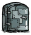
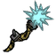
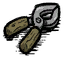
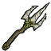

配置大全
把房间调成适合你们的样子。从模式总开关到单件道具，逐项查看作用、默认值和生效条件。
通用设置11 项
本模组游戏内语言自动档跟随游戏语言；简体中文和 English 档强制选择本模组游戏内文本，不修改其他模组或游戏整体语言。默认自动
通用设置 / 通用设置 #
本模组游戏内语言
自动档跟随游戏语言；简体中文和 English 档强制选择本模组游戏内文本，不修改其他模组或游戏整体语言。
可选档位 3
| 界面选项 | 档位说明 | 存档值 |
|---|---|---|
| 自动默认 | 自动设定 | false |
| 简体中文 | 简体中文 | -1 |
| English | English | -2 |
服主配置键与核对来源
Language In Game配置定义：modinfo.lua 第 189 行。关联实现：content/common/common.lua
游戏内查看模组按钮在聊天区输入“显示模组”“隐藏模组”“默认模组”可管理模组查看按钮。查看配置时优先读取当前世界实际设置；离线模式同样支持。默认启用
通用设置 / 通用设置 #
聊天区打字 `显示/隐藏/默认模组` 试试
在聊天区输入“显示模组”“隐藏模组”“默认模组”可管理模组查看按钮。查看配置时优先读取当前世界实际设置；离线模式同样支持。
可选档位 2
| 界面选项 | 档位说明 | 存档值 |
|---|---|---|
| 禁用 | 此档采用界面所示的禁用或范围选择，具体行为见上方说明。 | false |
| 启用默认 | 聊天区打字 `显示/隐藏/默认模组` 试试 | true |
服主配置键与核对来源
Show Mod Icon In Game配置定义：modinfo.lua 第 192 行。关联实现：content/easy_other/ui.lua、content/modmain.lua
限制模组版本更新提示限制提示出现频率，不会自动更新模组，也不会改变服务器实际版本。两档分别只处理本模组和处理所有模组。默认启用
通用设置 / 通用设置 #
模组的版本更新提示仅在出现和有新玩家时各显示一次
限制提示出现频率，不会自动更新模组，也不会改变服务器实际版本。两档分别只处理本模组和处理所有模组。
可选档位 3
| 界面选项 | 档位说明 | 存档值 |
|---|---|---|
| 禁用 | 此档采用界面所示的禁用或范围选择，具体行为见上方说明。 | false |
| 启用默认 | 仅限制本模组更新提示 | 1 |
| 启用 | 限制所有模组更新提示 | 2 |
服主配置键与核对来源
Disable Outdate Tip配置定义：modinfo.lua 第 194 行。关联实现：content/easy_other/mod.lua、content/modmain.lua
角色标签限额扩展用于角色标签较多的组合环境。开启后按所选 N 将默认 63 标签容量扩展为 63 + N × 50；例如 N=1 时为113。它不提供新角色能力。默认禁用
通用设置 / 通用设置 #
角色默认限制拥有63标签，现在为63+N*50
用于角色标签较多的组合环境。开启后按所选 N 将默认 63 标签容量扩展为 63 + N × 50；例如 N=1 时为113。它不提供新角色能力。
可选档位 11
| 界面选项 | 档位说明 | 存档值 |
|---|---|---|
| 禁用默认 | 此档采用界面所示的禁用或范围选择，具体行为见上方说明。 | false |
| 1 | 角色默认限制拥有63标签，现在为63+N*50 | 1 |
| 2 | 角色默认限制拥有63标签，现在为63+N*50 | 2 |
| 3 | 角色默认限制拥有63标签，现在为63+N*50 | 3 |
| 4 | 角色默认限制拥有63标签，现在为63+N*50 | 4 |
| 5 | 角色默认限制拥有63标签，现在为63+N*50 | 5 |
| 6 | 角色默认限制拥有63标签，现在为63+N*50 | 6 |
| 7 | 角色默认限制拥有63标签，现在为63+N*50 | 7 |
| 8 | 角色默认限制拥有63标签，现在为63+N*50 | 8 |
| 9 | 角色默认限制拥有63标签，现在为63+N*50 | 9 |
| 10 | 角色默认限制拥有63标签，现在为63+N*50 | 10 |
服主配置键与核对来源
player tags limit配置定义：modinfo.lua 第 199 行。关联实现：content/common/patch.lua
强制拦截客户端错误只拦截客户端游戏更新接口中的错误，并不修复引发错误的玩法逻辑；不会拦截或修复所有服务器崩溃。默认关闭。默认禁用
通用设置 / 通用设置 #
只拦截客户端游戏内更新游戏API中遇到的错误
只拦截客户端游戏更新接口中的错误，并不修复引发错误的玩法逻辑；不会拦截或修复所有服务器崩溃。默认关闭。
可选档位 2
| 界面选项 | 档位说明 | 存档值 |
|---|---|---|
| 禁用默认 | 此档采用界面所示的禁用或范围选择，具体行为见上方说明。 | false |
| 启用 | 只拦截客户端游戏内更新游戏API中遇到的错误 | true |
服主配置键与核对来源
ignore client error配置定义：modinfo.lua 第 201 行。关联实现：content/common/patch.lua
容器整理收集按钮决定容器按钮是否出现以及额外按钮样式。跨容器整理与锁定是互斥档位；另有禁用收集、禁用整理及无提示文字档。穿越仍需独立选择“穿越机制”。默认启用
通用设置 / 通用设置 #
容器整理收集/末影箱穿越/衣柜换装按钮
决定容器按钮是否出现以及额外按钮样式。跨容器整理与锁定是互斥档位；另有禁用收集、禁用整理及无提示文字档。穿越仍需独立选择“穿越机制”。
可选档位 7
| 界面选项 | 档位说明 | 存档值 |
|---|---|---|
| 禁用 | 此档采用界面所示的禁用或范围选择，具体行为见上方说明。 | false |
| 启用 | 无额外跨整和锁定按钮 | -1 |
| 启用 | 额外跨容器整理按钮(同类容器批量整理) | -2 |
| 启用默认 | 额外锁定道具按钮(与跨整互斥) | -3 |
| 启用 | 无额外按钮且禁用收集按钮 | -4 |
| 启用 | 无额外按钮且禁用整理按钮 | -5 |
| 启用 | (无提示文字)额外锁定道具按钮 | -6 |
服主配置键与核对来源
Container Sort配置定义：modinfo.lua 第 203 行。关联实现：content/common/temp.lua、content/easy_other/containersort.lua、content/easy_other/shadowvault.lua、content/modmain.lua
穿越机制默认为爽原版。操作界面由容器整理收集按钮或道具快捷收集存放提供；要显示容器穿越按钮，需开启容器整理收集按钮。关闭按钮不会删除旧空间的托管与恢复记录。三种机制为原版整箱交换、咸鱼双空间远端存取与主世界托管的暗影枢纽，另可关闭空间切换。默认为爽原版（默认）
通用设置 / 通用设置 #
旧配置统一迁移到为爽原版，旧暗影枢纽物品自动送回各层原生空间；地面与洞穴须同时更新。之后可手动选择咸鱼版或暗影枢纽，各机制分别保留空间。
默认为爽原版。操作界面由容器整理收集按钮或道具快捷收集存放提供；要显示容器穿越按钮，需开启容器整理收集按钮。关闭按钮不会删除旧空间的托管与恢复记录。三种机制为原版整箱交换、咸鱼双空间远端存取与主世界托管的暗影枢纽，另可关闭空间切换。
旧配置值统一迁移原版，旧枢纽物品恢复后送回所属层；新菜单明确选档会保留。各机制独立保留库存，不能把切档视为合并全部物品。地面、洞穴及其他分片须同时更新且设置一致。暗影／钓具跨层同时存取属于暗影枢纽。
可选档位 4
| 界面选项 | 档位说明 | 存档值 |
|---|---|---|
| 为爽原版（默认）默认 | 旧配置统一迁移到为爽原版，旧暗影枢纽物品自动送回各层原生空间；地面与洞穴须同时更新。之后可手动选择咸鱼版或暗影枢纽，各机制分别保留空间。 | "exchange_v1_original" |
| 咸鱼版 | 旧配置统一迁移到为爽原版，旧暗影枢纽物品自动送回各层原生空间；地面与洞穴须同时更新。之后可手动选择咸鱼版或暗影枢纽，各机制分别保留空间。 | "exchange_v1_xianyu" |
| 暗影枢纽 | 旧配置统一迁移到为爽原版，旧暗影枢纽物品自动送回各层原生空间；地面与洞穴须同时更新。之后可手动选择咸鱼版或暗影枢纽，各机制分别保留空间。 | "exchange_v1_nexus" |
| 关闭空间切换 | 旧配置统一迁移到为爽原版，旧暗影枢纽物品自动送回各层原生空间；地面与洞穴须同时更新。之后可手动选择咸鱼版或暗影枢纽，各机制分别保留空间。 | "exchange_v1_off" |
服主配置键与核对来源
World Exchange配置定义：modinfo.lua 第 213 行。关联实现：content/easy_other/containersort.lua、content/easy_other/exchangemodes2hm.lua、content/easy_other/shadowvault.lua
道具快捷收集存放默认键位下，Ctrl + 右键库存物品用于存放，Ctrl + Alt + 右键用于收集；右键制作栏材料时优先补齐该配方缺少的数量。−1 只保留存放，−2 只保留收集，−3 同时启用。默认启用
通用设置 / 通用设置 #
Ctrl[Alt]右键道具,制作栏/智能锅收集道具
默认键位下，Ctrl + 右键库存物品用于存放，Ctrl + Alt + 右键用于收集；右键制作栏材料时优先补齐该配方缺少的数量。−1 只保留存放，−2 只保留收集，−3 同时启用。
可选档位 4
| 界面选项 | 档位说明 | 存档值 |
|---|---|---|
| 禁用 | 此档采用界面所示的禁用或范围选择，具体行为见上方说明。 | false |
| 部分 | 禁用收集 | -1 |
| 部分 | 禁用存放 | -2 |
| 启用默认 | Ctrl[Alt]右键道具,制作栏/智能锅收集道具 | -3 |
服主配置键与核对来源
Items collect配置定义：modinfo.lua 第 225 行。关联实现：content/common/temp.lua、content/easy_other/containersort.lua、content/easy_other/shadowvault.lua、content/modmain.lua
简单模式总开关控制建筑便利、物品装备扩展与大部分角色强化。子项仍按各自开关判断，简单与困难模式可以同时开启。明确为独立功能的入口不受此总开关限制。默认启用
通用设置 / 通用设置 #
简单模式总开关
控制建筑便利、物品装备扩展与大部分角色强化。子项仍按各自开关判断，简单与困难模式可以同时开启。明确为独立功能的入口不受此总开关限制。
可选档位 2
| 界面选项 | 档位说明 | 存档值 |
|---|---|---|
| 禁用 | 此档采用界面所示的禁用或范围选择，具体行为见上方说明。 | false |
| 启用默认 | 按此档位选择，作用范围见上方说明。 | true |
服主配置键与核对来源
enable easy mode配置定义：modinfo.lua 第 229 行。关联实现：content/common/common.lua
困难模式总开关控制困难模式的角色、天气、科技、食物、怪物和额外改动。各分类还有自己的总开关。关闭时暗影世界范围缩为宠物，随机生物大小仍由 Ray 的独立设置控制。默认启用
通用设置 / 通用设置 #
可关闭所有难度.不包含Ray的开关,关闭时暗影世界仅宠物;技能点扩展开启时开局15点
控制困难模式的角色、天气、科技、食物、怪物和额外改动。各分类还有自己的总开关。关闭时暗影世界范围缩为宠物，随机生物大小仍由 Ray 的独立设置控制。
技能点扩展开启且困难模式关闭时，采用开局15点规则；直接禁用技能点扩展则保留游戏原有规则。
可选档位 2
| 界面选项 | 档位说明 | 存档值 |
|---|---|---|
| 禁用 | 此档采用界面所示的禁用或范围选择，具体行为见上方说明。 | false |
| 启用默认 | 可关闭所有难度.不包含Ray的开关,关闭时暗影世界仅宠物;技能点扩展开启时开局15点 | true |
服主配置键与核对来源
enable hard mode配置定义：modinfo.lua 第 230 行。关联实现：content/common/common.lua、content/modworldgenmain.lua
难度评级默认开启。在聊天或控制台输入 /nd，普通玩家可私下查询本模组实际生效配置相对默认的净变化。≤−5简单，−4～3默认，4～6困难，≥7地狱；每个设置最多计一次。没有全服定时或入服广播。默认启用
通用设置 / 通用设置 #
按当前生效的模组配置查询难度评级，仅自己可见
默认开启。在聊天或控制台输入 /nd，普通玩家可私下查询本模组实际生效配置相对默认的净变化。≤−5简单，−4～3默认，4～6困难，≥7地狱；每个设置最多计一次。没有全服定时或入服广播。
可选档位 2
| 界面选项 | 档位说明 | 存档值 |
|---|---|---|
| 禁用 | 关闭难度评级及 /nd 查询 | false |
| 启用默认 | 控制台或聊天输入 /nd 查询难度评级，仅自己可见 | true |
服主配置键与核对来源
difficulty_rating配置定义：modinfo.lua 第 236 行。关联实现：content/modmain.lua
通用设置贝爷生存6 项
贝爷求生独立总开关，默认关闭。开启后加入制作变慢、随机初始耐久与熟练度、资源减半、制作不永久解锁、猪王不换金及磨刀、全员读书、黑暗免疫等配套规则。子项需此开关，不依赖简单／困难模式。默认禁用
通用设置 / 贝爷生存 #
制作变慢、随机耐久、资源减半、制作不永久解锁科技、猪王不换金；允许磨刀与黑暗，默认关闭
独立总开关，默认关闭。开启后加入制作变慢、随机初始耐久与熟练度、资源减半、制作不永久解锁、猪王不换金及磨刀、全员读书、黑暗免疫等配套规则。子项需此开关，不依赖简单／困难模式。
可选档位 2
| 界面选项 | 档位说明 | 存档值 |
|---|---|---|
| 禁用默认 | 禁用贝爷求生 | false |
| 启用 | 启用贝爷求生 | 1 |
服主配置键与核对来源
贝爷求生配置定义：modinfo.lua 第 242 行。关联实现：content/modmain.lua
种地种树需要书默认关闭。启用贝爷后，再开启本项，播种或种树需要对应园艺／造林书，每次消耗1点耐久。默认禁用
做饭需要书默认关闭。启用贝爷后，再开启本项，开锅需要可用烹饪指南，每次烹饪消耗1点耐久。默认禁用
材料制造翻倍默认关闭。启用贝爷且开启本项时，制作配方所需材料翻倍。默认禁用
低san采集失败默认关闭。启用贝爷且开启本项时，理智越低，采集失败率越高；理智见底最高50%。默认禁用
通用设置德爷生存7 项
德爷生存独立总开关，默认关闭。子项即使显示开启，也只有在本项启用后生效，不依赖简单／困难模式。请逐项确认禁堆叠、护甲、冻结、雨天火源与挥刀规则。默认禁用
通用设置 / 德爷生存 #
德爷极限求生模式总开关，默认关闭；子项仅在总开关开启时生效
独立总开关，默认关闭。子项即使显示开启，也只有在本项启用后生效，不依赖简单／困难模式。请逐项确认禁堆叠、护甲、冻结、雨天火源与挥刀规则。
可选档位 2
| 界面选项 | 档位说明 | 存档值 |
|---|---|---|
| 禁用默认 | 禁用德爷生存 | false |
| 启用 | 启用德爷生存 | 1 |
服主配置键与核对来源
德爷生存配置定义：modinfo.lua 第 262 行。关联实现：content/modmain.lua
料理禁止堆叠默认关闭。启用德爷且开启本项后，料理每格一份；已有存档堆叠保留全部数量，拆分后不能重新合并。特殊饮料／装饰品和明确多份配方有原有豁免。默认禁用
护甲失效默认关闭。启用德爷且开启本项后，护甲不再抵挡伤害，也不因受击损失耐久，同时加入对应暗影生物保护规则。默认禁用
难以冻结子项默认开启，但德爷总开关默认关闭。实际生效后冻结有23秒冷却，单次冻结最长4秒。默认启用
下雨禁火子项默认开启，但德爷总开关默认关闭。生效后雨中无有效遮雨时禁止正常点火，火把会熄灭；火源是否受遮雨保护会影响处理。默认启用
火把传热子项默认开启，但德爷总开关默认关闭。生效后点燃的火把／打火机火焰成为附近玩家的热源；此便利项不计入 /nd 的难度变化。默认启用
Ray德爷生存6 项
随机生物大小随机大小同时影响生命、伤害、可见体型与部分掉落。默认启用
Ray / 德爷生存 #
如生活调味料一般改变方方面面
随机大小同时影响生命、伤害、可见体型与部分掉落。
可选档位 2
| 界面选项 | 档位说明 | 存档值 |
|---|---|---|
| 禁用 | 禁用随机大小 | false |
| 启用默认 | 启用随机大小 | 1 |
服主配置键与核对来源
Random Sized配置定义：modinfo.lua 第 290 行。关联实现：content/easy_role/wx78_easy.lua、content/food/beefalo.lua、content/modmain.lua
随机生物大小牦牛改动随机大小同时影响生命、伤害、可见体型与部分掉落。默认启用
允许作弊该选项会同时影响控制台、回档和重新生成世界。默认启用
Ray / 德爷生存 #
禁用后，玩家禁止回档，使用控制台等
该选项会同时影响控制台、回档和重新生成世界。
可选档位 2
| 界面选项 | 档位说明 | 存档值 |
|---|---|---|
| 禁用 | 禁用作弊 | false |
| 启用默认 | 启用作弊 | 1 |
服主配置键与核对来源
ban op配置定义：modinfo.lua 第 298 行。关联实现：content/modmain.lua
群系灭绝持续击杀会积累物种灭绝进度；未灭绝前每天缓和。默认禁用
Ray / 德爷生存 #
一直无底限的猎杀生物最终会导致生物永久覆灭
持续击杀会积累物种灭绝进度；未灭绝前每天缓和。
可选档位 2
| 界面选项 | 档位说明 | 存档值 |
|---|---|---|
| 禁用默认 | 禁用群系灭绝 | false |
| 启用 | 启用群系灭绝 | 1 |
服主配置键与核对来源
World ecosystem配置定义：modinfo.lua 第 302 行。关联实现：content/modmain.lua、content/ray/shengwudamiejve.lua
遗忘地图把常规探索地图改为受标记与额外解锁条件控制。默认禁用
Ray / 德爷生存 #
玩家需使用月岩 守卫标记，否则地图不会解锁。
守卫标记，否则地图不会解锁。
把常规探索地图改为受标记与额外解锁条件控制。
可选档位 2
| 界面选项 | 档位说明 | 存档值 |
|---|---|---|
| 禁用默认 | 禁用遗忘 | false |
| 启用 | 启用遗忘 | 1 |
服主配置键与核对来源
World lose配置定义：modinfo.lua 第 306 行。关联实现：content/modmain.lua
暗影世界暗影分身改动11 项
生物暗影分身数目本体以外的第二个敌人：分身数量、生成范围与再生规则。默认1
暗影世界 / 暗影分身改动 #
这个世界的生物会生成几个暗影分身
本体以外的第二个敌人：分身数量、生成范围与再生规则。
可选档位 4
| 界面选项 | 档位说明 | 存档值 |
|---|---|---|
| 禁用 | 禁用暗影世界 | false |
| 1默认 | 启用暗影世界 | 1 |
| 2 | 启用暗影世界 | 2 |
| 3 | 启用暗影世界 | 3 |
服主配置键与核对来源
Shadow World配置定义：modinfo.lua 第 315 行。关联实现：content/epic/antlion.lua、content/epic/crabking_deprecated.lua、content/epic/shadowchesspieces.lua、content/epic/sharkboi.lua、content/food/plant.lua、content/modmain.lua、content/shadow_nerf.lua、content/shadowworld.lua
有暗影分身的生物false 在这一配置中表示“大部分”，不是关闭；关闭困难模式会把运行范围强制改为宠物白名单。默认大部分
暗影世界 / 暗影分身改动 #
这个世界的哪些生物会生成暗影分身
false 在这一配置中表示“大部分”，不是关闭；关闭困难模式会把运行范围强制改为宠物白名单。
可选档位 8
| 界面选项 | 档位说明 | 存档值 |
|---|---|---|
| 非boss | 除boss外的生物会生成暗影分身 | 1 |
| 仅boss | 仅boss会生成暗影分身 | 2 |
| boss残血 | 全部生成但boss残血25%或2500血以下时才生成 | 3 |
| boss特殊 | 全部生成但蜂后和部分困难加强boss半血时生成 | 4 |
| boss半血 | 全部生成但boss半血50%或5000血以下时才生成 | 5 |
| 仅boss残血 | 仅boss残血25%或2500血以下时生成暗影分身 | 6 |
| 仅宠物 | 仅切斯特哈奇阿比盖尔伯尼 | 7 |
| 大部分默认 | 除影怪和不可移动生物外大部分生物都会生成暗影分身 | false |
服主配置键与核对来源
Shadow Animals配置定义：modinfo.lua 第 318 行。关联实现：content/shadowworld.lua
暗影分身总数上限本体以外的第二个敌人：分身数量、生成范围与再生规则。默认12
暗影世界 / 暗影分身改动 #
世界的暗影分身数目上限,BOSS/宠物不算;有但不能生成则减伤
本体以外的第二个敌人：分身数量、生成范围与再生规则。
可选档位 27
| 界面选项 | 档位说明 | 存档值 |
|---|---|---|
| 无限 | 此档采用界面所示的禁用或范围选择，具体行为见上方说明。 | false |
| 5 | 世界的暗影分身数目上限,BOSS/宠物不算;有但不能生成则减伤 | 5 |
| 6 | 世界的暗影分身数目上限,BOSS/宠物不算;有但不能生成则减伤 | 6 |
| 7 | 世界的暗影分身数目上限,BOSS/宠物不算;有但不能生成则减伤 | 7 |
| 8 | 世界的暗影分身数目上限,BOSS/宠物不算;有但不能生成则减伤 | 8 |
| 9 | 世界的暗影分身数目上限,BOSS/宠物不算;有但不能生成则减伤 | 9 |
| 10 | 世界的暗影分身数目上限,BOSS/宠物不算;有但不能生成则减伤 | 10 |
| 11 | 世界的暗影分身数目上限,BOSS/宠物不算;有但不能生成则减伤 | 11 |
| 12默认 | 世界的暗影分身数目上限,BOSS/宠物不算;有但不能生成则减伤 | 12 |
| 13 | 世界的暗影分身数目上限,BOSS/宠物不算;有但不能生成则减伤 | 13 |
| 14 | 世界的暗影分身数目上限,BOSS/宠物不算;有但不能生成则减伤 | 14 |
| 15 | 世界的暗影分身数目上限,BOSS/宠物不算;有但不能生成则减伤 | 15 |
| 16 | 世界的暗影分身数目上限,BOSS/宠物不算;有但不能生成则减伤 | 16 |
| 17 | 世界的暗影分身数目上限,BOSS/宠物不算;有但不能生成则减伤 | 17 |
| 18 | 世界的暗影分身数目上限,BOSS/宠物不算;有但不能生成则减伤 | 18 |
| 19 | 世界的暗影分身数目上限,BOSS/宠物不算;有但不能生成则减伤 | 19 |
| 20 | 世界的暗影分身数目上限,BOSS/宠物不算;有但不能生成则减伤 | 20 |
| 21 | 世界的暗影分身数目上限,BOSS/宠物不算;有但不能生成则减伤 | 21 |
| 22 | 世界的暗影分身数目上限,BOSS/宠物不算;有但不能生成则减伤 | 22 |
| 23 | 世界的暗影分身数目上限,BOSS/宠物不算;有但不能生成则减伤 | 23 |
| 24 | 世界的暗影分身数目上限,BOSS/宠物不算;有但不能生成则减伤 | 24 |
| 25 | 世界的暗影分身数目上限,BOSS/宠物不算;有但不能生成则减伤 | 25 |
| 26 | 世界的暗影分身数目上限,BOSS/宠物不算;有但不能生成则减伤 | 26 |
| 27 | 世界的暗影分身数目上限,BOSS/宠物不算;有但不能生成则减伤 | 27 |
| 28 | 世界的暗影分身数目上限,BOSS/宠物不算;有但不能生成则减伤 | 28 |
| 29 | 世界的暗影分身数目上限,BOSS/宠物不算;有但不能生成则减伤 | 29 |
| 30 | 世界的暗影分身数目上限,BOSS/宠物不算;有但不能生成则减伤 | 30 |
服主配置键与核对来源
Shadow Num Limit配置定义：modinfo.lua 第 336 行。关联实现：content/shadowworld.lua
暗影分身再生时间单位为秒。默认 480；界面“1”保存 false，但运行入口会转换为最短 1 秒。分身削弱可能为部分 Boss 覆盖为固定 1440 秒。默认480
暗影世界 / 暗影分身改动 #
死亡后多少秒再次生成
单位为秒。默认 480；界面“1”保存 false，但运行入口会转换为最短 1 秒。分身削弱可能为部分 Boss 覆盖为固定 1440 秒。
可选档位 17
| 界面选项 | 档位说明 | 存档值 |
|---|---|---|
| 1 | 此档采用界面所示的禁用或范围选择，具体行为见上方说明。 | false |
| 60 | 死亡后多少秒再次生成 | 60 |
| 120 | 死亡后多少秒再次生成 | 120 |
| 180 | 死亡后多少秒再次生成 | 180 |
| 240 | 死亡后多少秒再次生成 | 240 |
| 300 | 死亡后多少秒再次生成 | 300 |
| 360 | 死亡后多少秒再次生成 | 360 |
| 420 | 死亡后多少秒再次生成 | 420 |
| 480默认 | 死亡后多少秒再次生成 | 480 |
| 540 | 死亡后多少秒再次生成 | 540 |
| 600 | 死亡后多少秒再次生成 | 600 |
| 660 | 死亡后多少秒再次生成 | 660 |
| 720 | 死亡后多少秒再次生成 | 720 |
| 780 | 死亡后多少秒再次生成 | 780 |
| 840 | 死亡后多少秒再次生成 | 840 |
| 900 | 死亡后多少秒再次生成 | 900 |
| 960 | 死亡后多少秒再次生成 | 960 |
服主配置键与核对来源
Shadow Regen Period配置定义：modinfo.lua 第 339 行。关联实现：content/shadowworld.lua
生物转移敌人仇恨区分本体转移仇恨、分身共享目标和距离回收。默认仅无害
暗影分身保护本体区分本体转移仇恨、分身共享目标和距离回收。默认禁用
暗影分身仇恨玩家实现差异界面配置键为 Shadow Prefab Setting，运行代码读取 Shadow Attack Player Actively，当前未找到名称映射。不能承诺切换这一界面选项就会切换分身主动仇恨。默认禁用
本体远离驱散距离区分本体转移仇恨、分身共享目标和距离回收。默认200
暗影世界 / 暗影分身改动 #
远离BOSSx距离后BOSS驱散暗影分身,非BOSS距离50
区分本体转移仇恨、分身共享目标和距离回收。
可选档位 11
| 界面选项 | 档位说明 | 存档值 |
|---|---|---|
| 无限 | 此档采用界面所示的禁用或范围选择，具体行为见上方说明。 | false |
| 1000 | 远离BOSSx距离后BOSS驱散暗影分身,非BOSS距离50 | 1000 |
| 900 | 远离BOSSx距离后BOSS驱散暗影分身,非BOSS距离50 | 900 |
| 800 | 远离BOSSx距离后BOSS驱散暗影分身,非BOSS距离50 | 800 |
| 700 | 远离BOSSx距离后BOSS驱散暗影分身,非BOSS距离50 | 700 |
| 600 | 远离BOSSx距离后BOSS驱散暗影分身,非BOSS距离50 | 600 |
| 500 | 远离BOSSx距离后BOSS驱散暗影分身,非BOSS距离50 | 500 |
| 400 | 远离BOSSx距离后BOSS驱散暗影分身,非BOSS距离50 | 400 |
| 300 | 远离BOSSx距离后BOSS驱散暗影分身,非BOSS距离50 | 300 |
| 200默认 | 远离BOSSx距离后BOSS驱散暗影分身,非BOSS距离50 | 200 |
| 100 | 远离BOSSx距离后BOSS驱散暗影分身,非BOSS距离50 | 100 |
服主配置键与核对来源
Shadow Epic Far Range配置定义：modinfo.lua 第 360 行。关联实现：content/shadowworld.lua
分身远离回归距离区分本体转移仇恨、分身共享目标和距离回收。默认无限
暗影世界 / 暗影分身改动 #
远离Boss分身x距离后分身主动回归,非BOSS距离50
区分本体转移仇恨、分身共享目标和距离回收。
可选档位 11
| 界面选项 | 档位说明 | 存档值 |
|---|---|---|
| 无限默认 | 此档采用界面所示的禁用或范围选择，具体行为见上方说明。 | false |
| 1000 | 远离Boss分身x距离后分身主动回归,非BOSS距离50 | 1000 |
| 900 | 远离Boss分身x距离后分身主动回归,非BOSS距离50 | 900 |
| 800 | 远离Boss分身x距离后分身主动回归,非BOSS距离50 | 800 |
| 700 | 远离Boss分身x距离后分身主动回归,非BOSS距离50 | 700 |
| 600 | 远离Boss分身x距离后分身主动回归,非BOSS距离50 | 600 |
| 500 | 远离Boss分身x距离后分身主动回归,非BOSS距离50 | 500 |
| 400 | 远离Boss分身x距离后分身主动回归,非BOSS距离50 | 400 |
| 300 | 远离Boss分身x距离后分身主动回归,非BOSS距离50 | 300 |
| 200 | 远离Boss分身x距离后分身主动回归,非BOSS距离50 | 200 |
| 100 | 远离Boss分身x距离后分身主动回归,非BOSS距离50 | 100 |
服主配置键与核对来源
Epic Shadow Far Range配置定义：modinfo.lua 第 364 行。关联实现：content/shadowworld.lua
暗影世界第二周目区分本体转移仇恨、分身共享目标和距离回收。默认禁用
生物暗影分身削弱弱化分身的生命、伤害、体型和攻击频率，并为部分 Boss 使用单独规则。默认2
暗影世界 / 暗影分身改动 #
设置攻击间隔。削弱影子的血量/体型/攻速/复活时间,部分boss影子2000血/复活更久
弱化分身的生命、伤害、体型和攻击频率，并为部分 Boss 使用单独规则。
可选档位 4
| 界面选项 | 档位说明 | 存档值 |
|---|---|---|
| 禁用 | 此档采用界面所示的禁用或范围选择，具体行为见上方说明。 | false |
| 1 | 设置攻击间隔。削弱影子的血量/体型/攻速/复活时间,部分boss影子2000血/复活更久 | 1 |
| 2默认 | 设置攻击间隔。削弱影子的血量/体型/攻速/复活时间,部分boss影子2000血/复活更久 | 2 |
| 3 | 设置攻击间隔。削弱影子的血量/体型/攻速/复活时间,部分boss影子2000血/复活更久 | 3 |
服主配置键与核对来源
shadow_nerf配置定义：modinfo.lua 第 371 行。关联实现：content/modmain.lua、content/shadow_nerf.lua
简单模式建筑改动15 项
科学机器精炼材料科学机器初始加工等级 1，给予 1 个齿轮升 1 级，最高 10 级。干草 3 换绳索 1、石头 3 换石砖 1、木头 4 换木板 1、芦苇 4 换莎草纸 1，每次最多加工与等级相同的份数。给予成品还可用随身材料照样制作已经学会的配方。默认启用
简单模式 / 建筑改动 #
可以给予成品或材料进行加工,齿轮 升级9次
升级9次
科学机器 初始加工等级 1，给予 1 个齿轮
初始加工等级 1，给予 1 个齿轮 升 1 级，最高 10 级。干草
升 1 级，最高 10 级。干草 3 换绳索 1、石头
3 换绳索 1、石头 3 换石砖
3 换石砖 1、木头
1、木头 4 换木板
4 换木板 1、芦苇 4 换莎草纸
1、芦苇 4 换莎草纸 1，每次最多加工与等级相同的份数。给予成品还可用随身材料照样制作已经学会的配方。
1，每次最多加工与等级相同的份数。给予成品还可用随身材料照样制作已经学会的配方。
可选档位 2
| 界面选项 | 档位说明 | 存档值 |
|---|---|---|
| 禁用 | 此档采用界面所示的禁用或范围选择，具体行为见上方说明。 | false |
| 启用默认 | 可以给予成品或材料进行加工,齿轮升级9次 | true |
服主配置键与核对来源
Science Machine Refine Materials配置定义：modinfo.lua 第 377 行。关联实现：content/easy_other/easy_structures.lua
炼金引擎有炼金术两种开启选项都保留材料兑换与齿轮升级，默认 −1 只关闭按猪王金价兑换金块。炼金引擎从等级 1 开始，每 4 个齿轮升 1 级，最高 40。等级达到 30 即可兑换纯粹辉煌、绝望石等材料。月岩和噩梦燃料的特殊兑换使用样品，分别消耗身上的大理石和纯粹恐惧，样品返还。辉煌铁匠铺、暗影术基座、智囊团的一次一份兑换也由此项开启。默认启用
简单模式 / 建筑改动 #
有威尔逊 部分炼金术给予炼金;齿轮
部分炼金术给予炼金;齿轮 升级
升级
两种开启选项都保留材料兑换与齿轮 升级，默认 −1 只关闭按猪王金价兑换金块
升级，默认 −1 只关闭按猪王金价兑换金块 。炼金引擎
。炼金引擎 从等级 1 开始，每 4 个齿轮
从等级 1 开始，每 4 个齿轮 升 1 级，最高 40。等级达到 30 即可兑换纯粹辉煌
升 1 级，最高 40。等级达到 30 即可兑换纯粹辉煌 、绝望石
、绝望石 等材料。月岩
等材料。月岩 和噩梦燃料
和噩梦燃料 的特殊兑换使用样品，分别消耗身上的大理石
的特殊兑换使用样品，分别消耗身上的大理石 和纯粹恐惧
和纯粹恐惧 ，样品返还。辉煌铁匠铺、暗影术基座、智囊团的一次一份兑换也由此项开启。
，样品返还。辉煌铁匠铺、暗影术基座、智囊团的一次一份兑换也由此项开启。
可选档位 3
| 界面选项 | 档位说明 | 存档值 |
|---|---|---|
| 禁用 | 此档采用界面所示的禁用或范围选择，具体行为见上方说明。 | false |
| 启用 | 给予肉和玩具等可兑换金块 | true |
| 启用默认 | 禁用兑换金块 | -1 |
服主配置键与核对来源
Alchemy Engine Redeem Gold Nugget配置定义：modinfo.lua 第 379 行。关联实现：content/easy_other/easy_structures.lua
灵子分解器分解道具灵子分解器初始回收 50% 制作材料，每给予 1 个绿宝石提高到 75%、100%。回收量还乘以物品耐久或鲜度；绳索按 2 草计算，普通宝石不返还。返还装备为 1% 耐久。没有配方或禁止拆解的物品会被销毁且不返还材料。连续交付同一种物品时，第二次起处理整组。默认启用
简单模式 / 建筑改动 #
返还一半素材,小数点部分概率返还,绿宝石 升级两次
升级两次
灵子分解器 初始回收 50% 制作材料，每给予 1 个绿宝石
初始回收 50% 制作材料，每给予 1 个绿宝石 提高到 75%、100%。回收量还乘以物品耐久或鲜度；绳索按 2 草计算，普通宝石不返还。返还装备为 1% 耐久。没有配方或禁止拆解的物品会被销毁且不返还材料。连续交付同一种物品时，第二次起处理整组。
提高到 75%、100%。回收量还乘以物品耐久或鲜度；绳索按 2 草计算，普通宝石不返还。返还装备为 1% 耐久。没有配方或禁止拆解的物品会被销毁且不返还材料。连续交付同一种物品时，第二次起处理整组。
可选档位 2
| 界面选项 | 档位说明 | 存档值 |
|---|---|---|
| 禁用 | 此档采用界面所示的禁用或范围选择，具体行为见上方说明。 | false |
| 启用默认 | 返还一半素材,小数点部分概率返还,绿宝石升级两次 | true |
服主配置键与核对来源
Shadow Manipulator Break Down Objects配置定义：modinfo.lua 第 382 行。关联实现：content/easy_other/easy_structures.lua
暗影操控器兑换暗影魔法向暗影操控器交付 4 个噩梦燃料，取得暗影魔法、魔术师能力，并把高于 1 的读书理智消耗倍率降为 1。能力在交付后的第 21 次换日到期；原有能力保留。成功给暗影秘典补充燃料可把期限延长 1 天，曾经获得但已经到期的能力也能恢复。默认启用
简单模式 / 建筑改动 #
给予4噩梦燃料 获得暗影魔法和工具标签并让读魔法书理智消耗变为1倍
获得暗影魔法和工具标签并让读魔法书理智消耗变为1倍
向暗影操控器 交付 4 个噩梦燃料
交付 4 个噩梦燃料 ，取得暗影魔法、魔术师能力，并把高于 1 的读书理智消耗倍率降为 1。能力在交付后的第 21 次换日到期；原有能力保留。成功给暗影秘典
，取得暗影魔法、魔术师能力，并把高于 1 的读书理智消耗倍率降为 1。能力在交付后的第 21 次换日到期；原有能力保留。成功给暗影秘典 补充燃料可把期限延长 1 天，曾经获得但已经到期的能力也能恢复。
补充燃料可把期限延长 1 天，曾经获得但已经到期的能力也能恢复。
可选档位 2
| 界面选项 | 档位说明 | 存档值 |
|---|---|---|
| 禁用 | 此档采用界面所示的禁用或范围选择，具体行为见上方说明。 | false |
| 启用默认 | 给予4噩梦燃料获得暗影魔法和工具标签并让读魔法书理智消耗变为1倍 | true |
服主配置键与核对来源
Prestihatitator Redeem shadowmagic Tag配置定义：modinfo.lua 第 384 行。关联实现：content/easy_other/easy_structures.lua
土地夯实器兑换沙之石默认在土地夯实器交易，−1 改为懒人传送塔。必须先满足岩石贡品价值大于 0：有金块价值的换沙之石，否则按岩石价值换石头。每 1 个铥矿升 1 级，从等级 1 升至最高 40，每次处理数量受等级限制。默认启用
钓具容器选择改动默认 −1 为 20 格共享储物，料理与肉干腐败速度为 15%，种子、树种及可放入的蜘蛛和孢子停止腐败；种子袋也停止腐败。加载棱镜或能力勋章时，料理与肉干改为停止腐败。另一个选项改为活鱼交易，不提供这套储物改动。七组奖励轮流抽完再补满；补充物固定 3 件，75% 种子、25% 海带叶。重量达到鱼种范围 80% 的重鱼增加 1～2 件，海鱼还额外给黄金。默认启用
简单模式 / 建筑改动 #
钓具容器 选择改动
选择改动
默认 −1 为 20 格共享储物，料理与肉干腐败速度为 15%，种子 、树种及可放入的蜘蛛和孢子停止腐败；种子袋也停止腐败。加载棱镜或能力勋章时，料理与肉干改为停止腐败。另一个选项改为活鱼交易，不提供这套储物改动。七组奖励轮流抽完再补满；补充物固定 3 件，75% 种子
、树种及可放入的蜘蛛和孢子停止腐败；种子袋也停止腐败。加载棱镜或能力勋章时，料理与肉干改为停止腐败。另一个选项改为活鱼交易，不提供这套储物改动。七组奖励轮流抽完再补满；补充物固定 3 件，75% 种子 、25% 海带叶
、25% 海带叶 。重量达到鱼种范围 80% 的重鱼增加 1～2 件，海鱼还额外给黄金。
。重量达到鱼种范围 80% 的重鱼增加 1～2 件，海鱼还额外给黄金。
可选档位 3
| 界面选项 | 档位说明 | 存档值 |
|---|---|---|
| 禁用 | 此档采用界面所示的禁用或范围选择，具体行为见上方说明。 | false |
| 启用 | 给予活鱼可兑换海带种子玩具金子触手皮 | true |
| 启用默认 | 禁用兑换但可存放菜肴和钓具箱内道具0.15倍缓鲜 | -1 |
服主配置键与核对来源
Tackle Receptacle Use Fish Redeem配置定义：modinfo.lua 第 392 行。关联实现：content/easy_other/easy_structures.lua、content/food/cooking.lua
制图桌制作蓝图拿起已学配方的成品，在制图桌使用“制图”，消耗身上 1 张莎草纸，产出该配方蓝图，样品保留。必须能永久学习，角色制作资格也要符合；临时科技不算已学会。拿起莎草纸使用制图，则复制身上先找到的一张合格纸制品，消耗 1 张纸并保留原件。默认启用
简单模式 / 建筑改动 #
给道具有莎草纸 得道具蓝图
得道具蓝图 ,给莎草纸
,给莎草纸 复制携带的纸制品
复制携带的纸制品
拿起已学配方的成品，在制图桌 使用“制图”，消耗身上 1 张莎草纸
使用“制图”，消耗身上 1 张莎草纸 ，产出该配方蓝图
，产出该配方蓝图 ，样品保留。必须能永久学习，角色制作资格也要符合；临时科技不算已学会。拿起莎草纸
，样品保留。必须能永久学习，角色制作资格也要符合；临时科技不算已学会。拿起莎草纸 使用制图，则复制身上先找到的一张合格纸制品，消耗 1 张纸并保留原件。
使用制图，则复制身上先找到的一张合格纸制品，消耗 1 张纸并保留原件。
可选档位 2
| 界面选项 | 档位说明 | 存档值 |
|---|---|---|
| 禁用 | 此档采用界面所示的禁用或范围选择，具体行为见上方说明。 | false |
| 启用默认 | 给道具有莎草纸得道具蓝图,给莎草纸复制携带的纸制品 | true |
服主配置键与核对来源
Cartographer's Desk Make Blueprint配置定义：modinfo.lua 第 397 行。关联实现：content/easy_other/easy_structures.lua、content/tech/prototyper.lua
烹饪锅制作食谱卡只有本次料理的烹饪者可以制作：料理煮好且尚未取走时，给锅莎草纸 ×1，获得记录本次食材与数量的食谱卡。制作卡片不取走料理。默认启用
假人额外交换随从交换装备时同时交换有攻击力、当前没有战斗目标的随从，保留剩余忠诚时间。默认把能活着拾取的随从收入假人 20 格物品栏，内部蜘蛛停止腐败；−1 保留交换但不收纳。阿比盖尔、玩家直接绑定及其他排除标记随从不参与。跟随假人的随从不主动搜索战斗目标。默认启用
简单模式 / 建筑改动 #
仅有攻击力的无仇恨的随从
交换装备时同时交换有攻击力、当前没有战斗目标的随从，保留剩余忠诚时间。默认把能活着拾取的随从收入假人 20 格物品栏，内部蜘蛛停止腐败；−1 保留交换但不收纳。阿比盖尔、玩家直接绑定及其他排除标记随从不参与。跟随假人的随从不主动搜索战斗目标。
可选档位 3
| 界面选项 | 档位说明 | 存档值 |
|---|---|---|
| 禁用 | 此档采用界面所示的禁用或范围选择，具体行为见上方说明。 | false |
| 启用默认 | 可以放入物品栏的随从放入假人物品栏 | true |
| 启用 | 不放入 | -1 |
服主配置键与核对来源
mannequin swap follower配置定义：modinfo.lua 第 403 行。关联实现：content/easy_other/easy_structures.lua
懒人传送塔保持激活给予 1 个沙之石保持激活，右键取消后返还 1 个。附近 8 距离内使用沙之石时，以“塔到玩家”的方向选择夹角最小的另一座塔；传送消耗 1 个沙之石和 30 理智。1 不显示标记，2 显示方向彩标，默认 2。默认标记
简单模式 / 建筑改动 #
给沙石保持激活;右键其取消激活.在一个塔旁(8石墙距离内)用沙石优先传塔连线自己的方向的塔
给予 1 个沙之石 保持激活，右键取消后返还 1 个。附近 8 距离内使用沙之石
保持激活，右键取消后返还 1 个。附近 8 距离内使用沙之石 时，以“塔到玩家”的方向选择夹角最小的另一座塔；传送消耗 1 个沙之石
时，以“塔到玩家”的方向选择夹角最小的另一座塔；传送消耗 1 个沙之石 和 30 理智。1 不显示标记，2 显示方向彩标，默认 2。
和 30 理智。1 不显示标记，2 显示方向彩标，默认 2。
可选档位 3
| 界面选项 | 档位说明 | 存档值 |
|---|---|---|
| 禁用 | 禁用 | false |
| 无标记 | 无标记 | 1 |
| 标记默认 | 用彩色标记指示其它塔的方向 | 2 |
服主配置键与核对来源
townportal use sandstone activate配置定义：modinfo.lua 第 406 行。关联实现：content/easy_other/easy_structures.lua
龙鳞火炉批量烹饪通常采用 1 格红宝石加 4 格食材。普通料理按最少食材堆叠量批量制作，时间为正常单份时间 ×0.8×份数，添加燃料缩短其燃烧时长 ×0.7。非沃利制作主厨菜消耗红宝石次数：困难模式每颗 5 份，其余模式 10 份。检测到永不妥协测试版 workshop-3193922031 时改用四格兼容分支，直接使用主厨食谱，燃料按完整燃烧时长缩短等待。默认启用
简单模式 / 建筑改动 #
四格食材可批量烹饪，添加燃料可加快烹饪。非沃利 角色可消耗红宝石
角色可消耗红宝石 制作沃利
制作沃利 专属料理。摧毁时木头
专属料理。摧毁时木头 等量变木炭
等量变木炭 ，树枝
，树枝 及可销毁杂物每两件产出一个灰烬。
及可销毁杂物每两件产出一个灰烬。
通常采用 1 格红宝石 加 4 格食材。普通料理按最少食材堆叠量批量制作，时间为正常单份时间 ×0.8×份数，添加燃料缩短其燃烧时长 ×0.7。非沃利
加 4 格食材。普通料理按最少食材堆叠量批量制作，时间为正常单份时间 ×0.8×份数，添加燃料缩短其燃烧时长 ×0.7。非沃利 制作主厨菜消耗红宝石
制作主厨菜消耗红宝石 次数：困难模式每颗 5 份，其余模式 10 份。检测到永不妥协测试版 workshop-3193922031 时改用四格兼容分支，直接使用主厨食谱，燃料按完整燃烧时长缩短等待。
次数：困难模式每颗 5 份，其余模式 10 份。检测到永不妥协测试版 workshop-3193922031 时改用四格兼容分支，直接使用主厨食谱，燃料按完整燃烧时长缩短等待。
可选档位 2
| 界面选项 | 档位说明 | 存档值 |
|---|---|---|
| 禁用 | 此档采用界面所示的禁用或范围选择，具体行为见上方说明。 | false |
| 启用默认 | 四格食材可批量烹饪，添加燃料可加快烹饪。非沃利角色可消耗红宝石制作沃利专属料理。摧毁时木头等量变木炭，树枝及可销毁杂物每两件产出一个灰烬。 | true |
服主配置键与核对来源
dragonfly furnace stewer配置定义：modinfo.lua 第 416 行。关联实现：content/easy_other/easy_structures.lua
便携烹饪锅批量调味实现差异实际作用于便携调味站，不是便携烹饪锅。必须同时开启简单模式与龙鳞火炉批量烹饪。料理、调料可按整组放入，以最少的材料份数批量扣料并生成同数量成品；调味站不按批次数量增加时间，原版调味约 2.4 秒。默认启用
简单模式 / 建筑改动 #
便携烹饪锅批量调味
实际作用于便携调味站，不是便携烹饪锅。必须同时开启简单模式与龙鳞火炉 批量烹饪。料理、调料可按整组放入，以最少的材料份数批量扣料并生成同数量成品；调味站不按批次数量增加时间，原版调味约 2.4 秒。
批量烹饪。料理、调料可按整组放入，以最少的材料份数批量扣料并生成同数量成品；调味站不按批次数量增加时间，原版调味约 2.4 秒。
可选档位 2
| 界面选项 | 档位说明 | 存档值 |
|---|---|---|
| 禁用 | 此档采用界面所示的禁用或范围选择，具体行为见上方说明。 | false |
| 启用默认 | 按此档位选择，作用范围见上方说明。 | true |
服主配置键与核对来源
Portable Crock Pot Multi配置定义：modinfo.lua 第 419 行。关联实现：content/easy_other/easy_structures.lua
蘑菇灯返鲜,更亮蘑菇灯和菌伞灯不能燃烧、没有碰撞。1～4 个有效发光物品的半径分别为 3.7、4.8、6.3、8.3，内部腐败倍率为 −0.1。放入启迪之冠碎片时半径为 8.3，但原版满亮规则将腐败倍率改为 0，只保鲜不返鲜。默认启用
简单模式 / 建筑改动 #
蘑菇灯返鲜,更亮
蘑菇灯和菌伞灯不能燃烧、没有碰撞。1～4 个有效发光物品的半径分别为 3.7、4.8、6.3、8.3，内部腐败倍率为 −0.1。放入启迪之冠碎片时半径为 8.3，但原版满亮规则将腐败倍率改为 0，只保鲜不返鲜。
可选档位 2
| 界面选项 | 档位说明 | 存档值 |
|---|---|---|
| 禁用 | 此档采用界面所示的禁用或范围选择，具体行为见上方说明。 | false |
| 启用默认 | 按此档位选择，作用范围见上方说明。 | true |
服主配置键与核对来源
mushroom_light配置定义：modinfo.lua 第 420 行。关联实现：content/easy_other/easy_structures.lua
晾肉架可晾晒蔬菜为列出的 21 种生食材加入 120 秒基础晾晒时间，三色蘑菇和成熟石果统一产胡萝卜干，其他产对应干菜。晾肉架不可点燃。干菜不腐坏，每份清除 0.03 生命上限惩罚，不永久增加角色原始上限；同时允许放进冰箱和钓具容器。默认启用
简单模式 / 建筑改动 #
晾好的菜仅有0.25菜/果度,回3%血上限,晾肉架  不可燃,可放入冰箱
不可燃,可放入冰箱
为列出的 21 种生食材加入 120 秒基础晾晒时间，三色蘑菇和成熟石果统一产胡萝卜干，其他产对应干菜。晾肉架 不可点燃。干菜不腐坏，每份清除 0.03 生命上限惩罚，不永久增加角色原始上限；同时允许放进冰箱和钓具容器
不可点燃。干菜不腐坏，每份清除 0.03 生命上限惩罚，不永久增加角色原始上限；同时允许放进冰箱和钓具容器 。
。
可选档位 2
| 界面选项 | 档位说明 | 存档值 |
|---|---|---|
| 禁用 | 此档采用界面所示的禁用或范围选择，具体行为见上方说明。 | false |
| 启用默认 | 晾好的菜仅有0.25菜/果度,回3%血上限,晾肉架不可燃,可放入冰箱/钓具容器 | true |
服主配置键与核对来源
meatrack_dry配置定义：modinfo.lua 第 421 行。关联实现：content/easy_other/easy_structures.lua
眼球炮塔加强友方眼球炮塔配方增加 2 个电羊角，生命改为 2000、每秒恢复 50。攻击为 200 基础电击，额外连锁最多 4 个敌人，每跳伤害减少 20%。默认启用
简单模式 / 建筑改动 #
仅友方炮塔;配方+2羊角；2000血/每秒回50；200基础电击，额外连锁4目标，每跳衰减20%；龙鳞升级隔离火焰，蘑菇皮 免疫孢子云；秒杀妥测冰川座狼；保留双护盾；归零不掉落，休养5天满血恢复；拆解返还升级材料
免疫孢子云；秒杀妥测冰川座狼；保留双护盾；归零不掉落，休养5天满血恢复；拆解返还升级材料
友方眼球炮塔 配方增加 2 个电羊角，生命改为 2000、每秒恢复 50。攻击为 200 基础电击，额外连锁最多 4 个敌人，每跳伤害减少 20%。
配方增加 2 个电羊角，生命改为 2000、每秒恢复 50。攻击为 200 基础电击，额外连锁最多 4 个敌人，每跳伤害减少 20%。
1 个龙鳞皮增加持续 8 秒的火焰伤害，火焰不向周围蔓延；1 个蘑菇皮 免疫两类孢子云光环。生命耗尽后休养 5 天，随后满血恢复；解构法杖
免疫两类孢子云光环。生命耗尽后休养 5 天，随后满血恢复；解构法杖 可返还已用的升级材料。
可返还已用的升级材料。
可选档位 2
| 界面选项 | 档位说明 | 存档值 |
|---|---|---|
| 禁用 | 此档采用界面所示的禁用或范围选择，具体行为见上方说明。 | false |
| 启用默认 | 仅友方炮塔;配方+2羊角；2000血/每秒回50；200基础电击，额外连锁4目标，每跳衰减20%；龙鳞升级隔离火焰，蘑菇皮免疫孢子云；秒杀妥测冰川座狼；保留双护盾；归零不掉落，休养5天满血恢复；拆解返还升级材料 | true |
服主配置键与核对来源
eyeturret配置定义：modinfo.lua 第 424 行。关联实现：content/easy_other/easy_structures.lua
简单模式机制改动12 项
危险入睡/帐篷升级解除入睡时的附近危险检查。默认还请求转移仇恨，−1 不强制脱离仇恨。毛皮铺盖、帐篷、遮阳篷可消耗 1 个睡袋升级：次数翻倍并补满、全天使用、每次换日恢复 1 次；之后再用睡袋可补满耐久。当前原版帐篷和遮阳篷 15→30 次，毛皮铺盖 3→6 次。默认启用
简单模式 / 机制改动 #
毛皮铺盖帐篷等可以睡袋升级自愈无视白天等限制
解除入睡时的附近危险检查。默认还请求转移仇恨，−1 不强制脱离仇恨。毛皮铺盖、帐篷、遮阳篷可消耗 1 个睡袋升级：次数翻倍并补满、全天使用、每次换日恢复 1 次；之后再用睡袋可补满耐久。当前原版帐篷和遮阳篷 15→30 次，毛皮铺盖 3→6 次。
可选档位 3
| 界面选项 | 档位说明 | 存档值 |
|---|---|---|
| 禁用 | 此档采用界面所示的禁用或范围选择，具体行为见上方说明。 | false |
| 启用默认 | 并强制脱离仇恨 | true |
| 启用 | 不强制脱离仇恨 | -1 |
服主配置键与核对来源
Sleep In Tent Even Danger配置定义：modinfo.lua 第 428 行。关联实现：content/easy_other/easy_mechanics.lua
帐篷可多人共用默认 −3 对应 4 人；数值 −N 对应 N+1 人，true 不设人数上限。实际同时人数仍不得超过当前耐久次数，每位玩家醒来消耗 1 次耐久。人数或耐久已不够接纳下一人时帐篷变红。多人正在使用时不能用睡袋修理或升级。默认4
简单模式 / 机制改动 #
帐篷可支持设定的人数共用(优化自 作者:liximi -《多人帐篷》模组)
默认 −3 对应 4 人；数值 −N 对应 N+1 人，true 不设人数上限。实际同时人数仍不得超过当前耐久次数，每位玩家醒来消耗 1 次耐久。人数或耐久已不够接纳下一人时帐篷变红。多人正在使用时不能用睡袋修理或升级。
可选档位 16
| 界面选项 | 档位说明 | 存档值 |
|---|---|---|
| 禁用 | 此档采用界面所示的禁用或范围选择，具体行为见上方说明。 | false |
| 无限 | 帐篷可支持设定的人数共用(优化自 作者:liximi -《多人帐篷》模组) | true |
| 2 | 帐篷可支持设定的人数共用(优化自 作者:liximi -《多人帐篷》模组) | -1 |
| 3 | 帐篷可支持设定的人数共用(优化自 作者:liximi -《多人帐篷》模组) | -2 |
| 4默认 | 帐篷可支持设定的人数共用(优化自 作者:liximi -《多人帐篷》模组) | -3 |
| 5 | 帐篷可支持设定的人数共用(优化自 作者:liximi -《多人帐篷》模组) | -4 |
| 6 | 帐篷可支持设定的人数共用(优化自 作者:liximi -《多人帐篷》模组) | -5 |
| 7 | 帐篷可支持设定的人数共用(优化自 作者:liximi -《多人帐篷》模组) | -6 |
| 8 | 帐篷可支持设定的人数共用(优化自 作者:liximi -《多人帐篷》模组) | -7 |
| 9 | 帐篷可支持设定的人数共用(优化自 作者:liximi -《多人帐篷》模组) | -8 |
| 10 | 帐篷可支持设定的人数共用(优化自 作者:liximi -《多人帐篷》模组) | -9 |
| 11 | 帐篷可支持设定的人数共用(优化自 作者:liximi -《多人帐篷》模组) | -10 |
| 12 | 帐篷可支持设定的人数共用(优化自 作者:liximi -《多人帐篷》模组) | -11 |
| 13 | 帐篷可支持设定的人数共用(优化自 作者:liximi -《多人帐篷》模组) | -12 |
| 14 | 帐篷可支持设定的人数共用(优化自 作者:liximi -《多人帐篷》模组) | -13 |
| 15 | 帐篷可支持设定的人数共用(优化自 作者:liximi -《多人帐篷》模组) | -14 |
服主配置键与核对来源
The tent supports multiple people sharing it配置定义：modinfo.lua 第 431 行。关联实现：content/easy_other/easy_mechanics.lua
作祟告密的心复活告密的心与双尾心可被幽灵作祟，使用瞬间复活值；作祟容器时会先把其中可复活的心取出。双尾心移除腐败，困难模式配方另设为 10 灵魂与 10 生命并保留对应沃拓克斯技能要求。默认启用
材料建造修理道具默认允许用相应材料修理；部分高级装备只在困难模式额外要求携带建造护符。另一档可直接消耗建造护符修理有配方的装备，每次最多修复 45% 耐久。默认启用
简单模式 / 机制改动 #
部分道具可以材料修理,或需携带建造;
默认允许用相应材料修理；部分高级装备只在困难模式额外要求携带建造护符 。另一档可直接消耗建造护符
。另一档可直接消耗建造护符 修理有配方的装备，每次最多修复 45% 耐久。
修理有配方的装备，每次最多修复 45% 耐久。
可选档位 3
| 界面选项 | 档位说明 | 存档值 |
|---|---|---|
| 禁用 | 此档采用界面所示的禁用或范围选择，具体行为见上方说明。 | false |
| 启用默认 | 部分道具可以材料修理,或需携带建造; | true |
| 启用 | 建造护符直接修理道具 | -1 |
服主配置键与核对来源
Construction Amulet Repair Equip配置定义：modinfo.lua 第 437 行。关联实现：content/easy_other/easy_equipments.lua
洞穴世界使用码头地皮无海洋的洞穴世界可在紧邻有效地块的虚空铺码头。默认每次换日造成 100 点伤害，当前原版码头生命为 300，所以新地皮在无其他影响时第 3 次换日损毁；原配置提示“4 天”已过时。−1 保留铺设能力但不安装这项自然损毁计时。损毁后恢复虚空，不抛出拆除掉落。默认启用
简单模式 / 机制改动 #
洞穴世界使用码头地皮
无海洋的洞穴世界可在紧邻有效地块的虚空铺码头。默认每次换日造成 100 点伤害，当前原版码头生命为 300，所以新地皮在无其他影响时第 3 次换日损毁；原配置提示“4 天”已过时。−1 保留铺设能力但不安装这项自然损毁计时。损毁后恢复虚空，不抛出拆除掉落。
可选档位 3
| 界面选项 | 档位说明 | 存档值 |
|---|---|---|
| 禁用 | 此档采用界面所示的禁用或范围选择，具体行为见上方说明。 | false |
| 启用默认 | 码头4天后自毁 | true |
| 启用 | 码头不会自毁 | -1 |
服主配置键与核对来源
Use Dock kit in Cave配置定义：modinfo.lua 第 441 行。关联实现：content/easy_other/easy_mechanics.lua
净化怪兽肉为肉正治疗量的 healer 物品可净化支持的怪物肉、熟肉、肉干及兼容小肉和怪物蛋。成功率为 min(1,治疗量÷负面生命值绝对值)，生命值非负则必成。成功消耗 1 件肉并生成新产物；失败保留肉，但治疗物品始终消耗。默认食物改动下，蜘蛛腺体净化生怪物肉约 36.36%，熟怪物肉与怪物肉干为 100%。默认启用
简单模式 / 机制改动 #
使用蜘蛛腺 体蚊子血袋药膏净化各种怪物食材
体蚊子血袋药膏净化各种怪物食材
正治疗量的 healer 物品可净化支持的怪物肉 、熟肉、肉干及兼容小肉和怪物蛋。成功率为 min(1,治疗量÷负面生命值绝对值)，生命值非负则必成。成功消耗 1 件肉并生成新产物；失败保留肉，但治疗物品始终消耗。默认食物改动下，蜘蛛腺
、熟肉、肉干及兼容小肉和怪物蛋。成功率为 min(1,治疗量÷负面生命值绝对值)，生命值非负则必成。成功消耗 1 件肉并生成新产物；失败保留肉，但治疗物品始终消耗。默认食物改动下，蜘蛛腺 体净化生怪物肉
体净化生怪物肉 约 36.36%，熟怪物肉与怪物肉干为 100%。
约 36.36%，熟怪物肉与怪物肉干为 100%。
可选档位 2
| 界面选项 | 档位说明 | 存档值 |
|---|---|---|
| 禁用 | 此档采用界面所示的禁用或范围选择，具体行为见上方说明。 | false |
| 启用默认 | 使用蜘蛛腺体蚊子血袋药膏净化各种怪物食材 | true |
服主配置键与核对来源
Spider Gland Can Heal Monster Meat配置定义：modinfo.lua 第 443 行。关联实现：content/easy_other/easy_mechanics.lua
用任意火焰烹饪允许用具有 fire 标签的燃烧物烤熟可烹饪食材。执行时目标须有 burnable 且正在燃烧，或另有非空燃料组件；不是所有火焰特效都符合。每次 1 件，产物由食材原有 cookable 决定，兼容排队论模组。猪王火炬另加普通炊具组件。默认启用
简单模式 / 机制改动 #
火炬 ,猪人火炬
,猪人火炬 ,冰篝火,燃烧的树木等
,冰篝火,燃烧的树木等
允许用具有 fire 标签的燃烧物烤熟可烹饪食材。执行时目标须有 burnable 且正在燃烧，或另有非空燃料组件；不是所有火焰特效都符合。每次 1 件，产物由食材原有 cookable 决定，兼容排队论模组。猪王火炬 另加普通炊具组件。
另加普通炊具组件。
可选档位 2
| 界面选项 | 档位说明 | 存档值 |
|---|---|---|
| 禁用 | 此档采用界面所示的禁用或范围选择，具体行为见上方说明。 | false |
| 启用默认 | 火炬,猪人火炬,冰篝火,燃烧的树木等 | true |
服主配置键与核对来源
Use Fire To Cook配置定义：modinfo.lua 第 445 行。关联实现：content/easy_other/easy_mechanics.lua
上线自动捡眼骨人物进入世界时，拾取半径 4 内无主、可拾取的眼骨等不可替代物品。每次人物生成只检查一次，排除带有禁止自动拾取、诅咒、包裹等标记的对象。默认启用
泰拉箱子彩蛋普通箱子和龙鳞箱用弹性空间制造器升级后，拆除掉落表改为 1 个弹性空间制造器。泰拉箱子的无限堆叠与同类掉落还要求 daywalker2 选项为 false；默认该选项为 true，所以默认不会开启泰拉箱子彩蛋。这个检查直接读取选项，不随困难模式总开关自动失效。默认启用
简单模式 / 机制改动 #
泰拉箱子彩蛋
普通箱子和龙鳞箱用弹性空间制造器 升级后，拆除掉落表改为 1 个弹性空间制造器
升级后，拆除掉落表改为 1 个弹性空间制造器 。泰拉箱子的无限堆叠与同类掉落还要求 daywalker2 选项为 false；默认该选项为 true，所以默认不会开启泰拉箱子彩蛋。这个检查直接读取选项，不随困难模式总开关自动失效。
。泰拉箱子的无限堆叠与同类掉落还要求 daywalker2 选项为 false；默认该选项为 true，所以默认不会开启泰拉箱子彩蛋。这个检查直接读取选项，不随困难模式总开关自动失效。
可选档位 2
| 界面选项 | 档位说明 | 存档值 |
|---|---|---|
| 禁用 | 此档采用界面所示的禁用或范围选择，具体行为见上方说明。 | false |
| 启用默认 | 按此档位选择，作用范围见上方说明。 | true |
服主配置键与核对来源
Terra Easter egg配置定义：modinfo.lua 第 449 行。关联实现：content/easy_other/easy_structures.lua
永不妥协补丁默认开启，提供永不妥协联动调整与天气、雪堆等运行优化，并包含已核对测试版的薇诺娜死亡复活兼容。独立于简单模式总开关。默认启用
简单模式 / 机制改动 #
启用永不妥协兼容调整与性能优化；上游实现不匹配时跳过对应优化。
默认开启，提供永不妥协联动调整与天气、雪堆等运行优化，并包含已核对测试版的薇诺娜 死亡复活兼容。独立于简单模式总开关。
死亡复活兼容。独立于简单模式总开关。
需要替换上游行为的优化会核对对应实现；未知实现跳过该项。五格锅所必需的动态料理兼容、通用防崩溃及旧物品恢复仍按各自入口处理，不全部受这个可选开关控制。
需要同时加载永不妥协正式版或测试版。
可选档位 2
| 界面选项 | 档位说明 | 存档值 |
|---|---|---|
| 禁用 | 此档采用界面所示的禁用或范围选择，具体行为见上方说明。 | false |
| 启用默认 | 启用永不妥协兼容调整与性能优化；上游实现不匹配时跳过对应优化。 | true |
服主配置键与核对来源
um_patch配置定义：modinfo.lua 第 450 行。关联实现：content/easy_other/um_patch.lua
妥协天气粒子密度轻量、均衡、妥协原密度分别使用 2、4、10 的暴风雪显示系数；龙卷风的额外雨溅分别取原密度的 20%、40%、100%。均衡为默认档。默认均衡（默认）
简单模式 / 机制改动 #
永不妥协补丁开启时生效，只调整暴风雪粒子与龙卷风附近雨溅，保留遮挡和天气机制。
轻量、均衡、妥协原密度分别使用 2、4、10 的暴风雪显示系数；龙卷风的额外雨溅分别取原密度的 20%、40%、100%。均衡为默认档。
仅调整额外天气显示，不改变天气伤害、遮挡、龙卷风行为和普通降雨的基础效果。该入口独立于简单模式总开关。
可选档位 3
| 界面选项 | 档位说明 | 存档值 |
|---|---|---|
| 轻量 | 永不妥协补丁开启时生效，只调整暴风雪粒子与龙卷风附近雨溅，保留遮挡和天气机制。 | 2 |
| 均衡（默认）默认 | 永不妥协补丁开启时生效，只调整暴风雪粒子与龙卷风附近雨溅，保留遮挡和天气机制。 | 4 |
| 妥协原密度 | 永不妥协补丁开启时生效，只调整暴风雪粒子与龙卷风附近雨溅，保留遮挡和天气机制。 | 10 |
服主配置键与核对来源
um_weather_particles2hm配置定义：modinfo.lua 第 453 行。关联实现：content/scripts/umperformance2hm.lua
幸运值机制改动实现差异当前由困难模式加载。幸运带来的正向概率增量仅保留 25%；基础概率不变，幸运计算结果最高按 100% 计。例如基础 20%、幸运结果 60%，调整后为 30%。默认启用
简单模式装备改动20 项
清洁扫把连接科技将扫把交给支持交易的科技建筑，复制其材料交易和登记等级；目标建筑的交易配置也须开启。困难模式检查使用者是否有暗影操控器兑换记录。扫把不会随身提供建筑的科技解锁范围。默认启用
简单模式 / 装备改动 #
目前仅支持可升级科技且困难需给过四本燃料
将扫把交给支持交易的科技建筑，复制其材料交易和登记等级；目标建筑的交易配置也须开启。困难模式检查使用者是否有暗影操控器 兑换记录。扫把不会随身提供建筑的科技解锁范围。
兑换记录。扫把不会随身提供建筑的科技解锁范围。
可选档位 2
| 界面选项 | 档位说明 | 存档值 |
|---|---|---|
| 禁用 | 此档采用界面所示的禁用或范围选择，具体行为见上方说明。 | false |
| 启用默认 | 目前仅支持可升级科技且困难需给过四本燃料 | true |
服主配置键与核对来源
Reskin Tool Upgrade配置定义：modinfo.lua 第 467 行。关联实现：content/easy_other/easy_equipments.lua
甲板照明灯装备头部甲板照明灯套件可戴头部，有燃料才亮，半径随燃料为 2～5。提供小幅防水，但移速沿用冰帽倍率；燃料时长沿用甲板灯参数，卸下停止消耗。默认关闭。默认禁用
注能玻璃刀跳跃斩击每个注能月亮碎片修 1/7 耐久并增加 144 秒注能，纯粹辉煌修 1/3 并增加 288 秒；修到满耐久时按半个材料追加时长。注能等级 1～4 对应攻击距离 2/4/5/6，右键跃斩伤害为基础伤害的 1.5/1.75/2/2.25 倍。普通碎片修理另需材料修理开关及建造护符。默认启用
简单模式 / 装备改动 #
注能月亮碎片 注能可跳劈,跳劈受益于理智或新鲜
注能可跳劈,跳劈受益于理智或新鲜
每个注能月亮碎片 修 1/7 耐久并增加 144 秒注能，纯粹辉煌
修 1/7 耐久并增加 144 秒注能，纯粹辉煌 修 1/3 并增加 288 秒；修到满耐久时按半个材料追加时长。注能等级 1～4 对应攻击距离 2/4/5/6，右键跃斩伤害为基础伤害的 1.5/1.75/2/2.25 倍。普通碎片修理另需材料修理开关及建造护符
修 1/3 并增加 288 秒；修到满耐久时按半个材料追加时长。注能等级 1～4 对应攻击距离 2/4/5/6，右键跃斩伤害为基础伤害的 1.5/1.75/2/2.25 倍。普通碎片修理另需材料修理开关及建造护符 。
。
可选档位 3
| 界面选项 | 档位说明 | 存档值 |
|---|---|---|
| 禁用 | 此档采用界面所示的禁用或范围选择，具体行为见上方说明。 | false |
| 启用默认 | 玻璃刀击杀影怪回理智但困难模式移除妥协增伤 | true |
| 启用 | 注能月亮碎片注能可跳劈,跳劈受益于理智或新鲜 | -1 |
服主配置键与核对来源
Glass Cutter Leap Attack配置定义：modinfo.lua 第 472 行。关联实现：content/easy_other/easy_equipments.lua
暗夜剑注魔增强暗夜剑为 75 伤害、150 次使用，配方改为噩梦燃料 ×10、活木 ×2。每个纯粹恐惧修 25% 并注魔 240 秒，绝望石修 50% 并注魔 480 秒；修到满耐久时按半个材料追加时长。另开材料修理后，噩梦燃料可修 1/11 耐久。默认启用
简单模式 / 装备改动 #
伤害增加，攻击召唤影人攻击并附带易伤
暗夜剑 为 75 伤害、150 次使用，配方改为噩梦燃料
为 75 伤害、150 次使用，配方改为噩梦燃料 ×10、活木
×10、活木 ×2。每个纯粹恐惧
×2。每个纯粹恐惧 修 25% 并注魔 240 秒，绝望石
修 25% 并注魔 240 秒，绝望石 修 50% 并注魔 480 秒；修到满耐久时按半个材料追加时长。另开材料修理后，噩梦燃料
修 50% 并注魔 480 秒；修到满耐久时按半个材料追加时长。另开材料修理后，噩梦燃料 可修 1/11 耐久。
可修 1/11 耐久。
可选档位 2
| 界面选项 | 档位说明 | 存档值 |
|---|---|---|
| 禁用 | 此档采用界面所示的禁用或范围选择，具体行为见上方说明。 | false |
| 启用默认 | 伤害增加，攻击召唤影人攻击并附带易伤 | true |
服主配置键与核对来源
Nightsword Infused配置定义：modinfo.lua 第 476 行。关联实现：content/easy_other/easy_equipments.lua
铥矿棒格挡敌人攻击铥矿棒可主动格挡 5 秒，冷却 12 秒。洞穴内铥矿棒、铥矿甲、铥矿皇冠各自提供绝缘，任选一件即可，不要求穿齐三件。另一档额外在格挡时恢复角色碰撞。默认启用
简单模式 / 装备改动 #
铥矿棒 主动格挡攻击;铥矿
主动格挡攻击;铥矿 三件套地下绝缘
三件套地下绝缘
铥矿棒 可主动格挡 5 秒，冷却 12 秒。洞穴内铥矿棒
可主动格挡 5 秒，冷却 12 秒。洞穴内铥矿棒 、铥矿甲
、铥矿甲 、铥矿皇冠
、铥矿皇冠 各自提供绝缘，任选一件即可，不要求穿齐三件。另一档额外在格挡时恢复角色碰撞。
各自提供绝缘，任选一件即可，不要求穿齐三件。另一档额外在格挡时恢复角色碰撞。
可选档位 3
| 界面选项 | 档位说明 | 存档值 |
|---|---|---|
| 禁用 | 此档采用界面所示的禁用或范围选择，具体行为见上方说明。 | false |
| 启用默认 | 铥矿棒主动格挡攻击;铥矿三件套地下绝缘 | true |
| 启用 | 每次格挡时都恢复角色碰撞 | -1 |
服主配置键与核对来源
Thulecite Equip Parry配置定义：modinfo.lua 第 478 行。关联实现：content/easy_other/easy_equipments.lua
多用斧镐更多功能增加挖掘、锤击、3×3 耕地、临时刮地皮、划船和池塘钓鱼功能。配方改为黄金鹤嘴锄 ×1、锤子 ×1、铥矿 ×2。当前剃毛代码未启用。默认启用
超级高效刮地皮头盔头盔可用工具、种子、肥料、陷阱和空瓶子自动工作。普通分支每块沙之石修 20 次；同时启用蚁狮加强后降为 10 次，并增加制作材料：沙之石改为 10，另加沙滩玩具 ×1、橙宝石 ×2。默认启用
简单模式 / 装备改动 #
范围快速工作种植部署施肥,放沙之石 会修理
会修理
头盔可用工具、种子 、肥料、陷阱
、肥料、陷阱 和空瓶子
和空瓶子 自动工作。普通分支每块沙之石
自动工作。普通分支每块沙之石 修 20 次；同时启用蚁狮加强后降为 10 次，并增加制作材料：沙之石
修 20 次；同时启用蚁狮加强后降为 10 次，并增加制作材料：沙之石 改为 10，另加沙滩玩具 ×1、橙宝石
改为 10，另加沙滩玩具 ×1、橙宝石 ×2。
×2。
可选档位 2
| 界面选项 | 档位说明 | 存档值 |
|---|---|---|
| 禁用 | 此档采用界面所示的禁用或范围选择，具体行为见上方说明。 | false |
| 启用默认 | 范围快速工作种植部署施肥,放沙之石会修理 | true |
服主配置键与核对来源
Turf-Raiser Helm Plant Tree Cone配置定义：modinfo.lua 第 484 行。关联实现：content/easy_other/easy_equipments.lua、content/epic/antlion.lua
恐怖盾牌捕虫恐怖盾牌可捕虫，并与眼面具获得战斗汲取。近距离有效攻击者每次可被汲取 17 生命，间隔 2 秒；实际吸取量先以两倍修甲，余量再治疗非年龄角色和补饥饿，排除暗影类、建筑及同伴等目标。默认启用
简单模式 / 装备改动 #
恐怖盾牌眼面具汲取敌人主人回复耐久
恐怖盾牌可捕虫，并与眼面具获得战斗汲取。近距离有效攻击者每次可被汲取 17 生命，间隔 2 秒；实际吸取量先以两倍修甲，余量再治疗非年龄角色和补饥饿，排除暗影类、建筑及同伴等目标。
可选档位 2
| 界面选项 | 档位说明 | 存档值 |
|---|---|---|
| 禁用 | 此档采用界面所示的禁用或范围选择，具体行为见上方说明。 | false |
| 启用默认 | 恐怖盾牌眼面具汲取敌人主人回复耐久 | true |
服主配置键与核对来源
Shieldofterror Eat Owner配置定义：modinfo.lua 第 486 行。关联实现：content/easy_other/easy_equipments.lua
眼球伞自愈隔热非酸雨的雨雪中，佩戴或落地的眼球伞自愈，收在包里不会继续恢复；雪天恢复速率为雨天 3 倍。较高庇护要求体温低于过热阈值减 4；困难模式另适配乳白物、羊奶和黄油维修。默认启用
简单模式 / 装备改动 #
雨雪天气自愈,装备时不过热则视为水中木庇护,羊奶乳白等修
非酸雨的雨雪中，佩戴或落地的眼球伞 自愈，收在包里不会继续恢复；雪天恢复速率为雨天 3 倍。较高庇护要求体温低于过热阈值减 4；困难模式另适配乳白物、羊奶和黄油维修。
自愈，收在包里不会继续恢复；雪天恢复速率为雨天 3 倍。较高庇护要求体温低于过热阈值减 4；困难模式另适配乳白物、羊奶和黄油维修。
可选档位 2
| 界面选项 | 档位说明 | 存档值 |
|---|---|---|
| 禁用 | 此档采用界面所示的禁用或范围选择，具体行为见上方说明。 | false |
| 启用默认 | 雨雪天气自愈,装备时不过热则视为水中木庇护,羊奶乳白等修 | true |
服主配置键与核对来源
Eyebrella Swell Shade配置定义：modinfo.lua 第 488 行。关联实现：content/easy_other/easy_equipments.lua
鳞甲抵抗持续冰冻实现差异当前代码把冰冻自然消退时间减半，并在已冻结期间、解冻后 2 秒（薇洛 3 秒）阻止再次加冻；旧英文提示的“2/3 概率解冻”不是当前实现。默认启用
暗影香炉汲影照明暗影香炉可汲取附近符合条件的暗影生物，恢复自身和相应骨头装备的耐久并提供照明。需要有效暗影来源与可修复装备，不是无条件自充能；骨头头盔助战仍由另一选项控制。默认启用
骨头头盔影怪助战骨头头盔耐久耗尽不按原方式直接消失，并可用噩梦燃料修复。引导影怪助战会消耗耐久，困难模式额外检查暗影魔法能力；该能力可由暗影操控器兑换，但不是简单模式的额外必需总开关。默认启用
启迪之冠过冬春夏红蓝孢子按数量差 ×60 提供保暖或隔热；绿孢子每个提供 20% 防水，累计 5 个可携带绝缘。天体珠宝兼具防水和佩戴温控，装满全部格子后获得 95% 护甲吸收和半径 8 的照明。另一档取消灯光染色。默认启用
简单模式 / 装备改动 #
护目;5孢子时提供热源/冷源/绝缘携带生效;蘑菇帽保暖隔热防水
红蓝孢子按数量差 ×60 提供保暖或隔热；绿孢子每个提供 20% 防水，累计 5 个可携带绝缘。天体珠宝兼具防水和佩戴温控，装满全部格子后获得 95% 护甲吸收和半径 8 的照明。另一档取消灯光染色。
可选档位 3
| 界面选项 | 档位说明 | 存档值 |
|---|---|---|
| 禁用 | 此档采用界面所示的禁用或范围选择，具体行为见上方说明。 | false |
| 启用默认 | 每红/蓝/绿孢子提供60保暖/60隔热/20%防水 | true |
| 启用 | 额外禁用启迪光照颜色 | -1 |
服主配置键与核对来源
Enlightened Crown Benefit From Spore配置定义：modinfo.lua 第 496 行。关联实现：content/easy_other/easy_equipments.lua
辉煌/绝望/亮茄火把普通火把用 1 个亮茄外壳、纯粹辉煌或绝望石升级，分别生成藤蔓/触手、催眠云、瘴气。首次材料决定种类，之后只接受同材补充。亮茄火把燃料容量和每个外壳修复量为 75 秒；辉煌与绝望石火把均为 300 秒。默认启用
简单模式 / 装备改动 #
使用绝望石 /纯粹辉煌
/纯粹辉煌 /亮茄外壳
/亮茄外壳 升级你的火把
升级你的火把 (易伤/重伤)
(易伤/重伤)
普通火把 用 1 个亮茄外壳
用 1 个亮茄外壳 、纯粹辉煌
、纯粹辉煌 或绝望石
或绝望石 升级，分别生成藤蔓/触手、催眠云、瘴气。首次材料决定种类，之后只接受同材补充。亮茄火把
升级，分别生成藤蔓/触手、催眠云、瘴气。首次材料决定种类，之后只接受同材补充。亮茄火把 燃料容量和每个外壳修复量为 75 秒；辉煌与绝望石
燃料容量和每个外壳修复量为 75 秒；辉煌与绝望石 火把
火把 均为 300 秒。
均为 300 秒。
可选档位 2
| 界面选项 | 档位说明 | 存档值 |
|---|---|---|
| 禁用 | 此档采用界面所示的禁用或范围选择，具体行为见上方说明。 | false |
| 启用默认 | 使用绝望石/纯粹辉煌/亮茄外壳升级你的火把(易伤/重伤) | true |
服主配置键与核对来源
upgrade torch配置定义：modinfo.lua 第 503 行。关联实现：content/easy_other/easy_equipments.lua
月熠奔雷/月熠晨星晨星锤、普通奔雷矛和充能奔雷矛都能存入月熠。未充能上限 5，充能后 25；每个月熠储备加 1。晨星锤用 1 个约束静电获得 20 位面伤害和 20% 移速，绑定升级者。储备未满时月熠修晨星 9 秒燃料、奔雷 5 次；储备已满后分别修 18 秒、10 次。默认启用
简单模式 / 装备改动 #
月熠进化充能奔雷矛,约束静电  和月熠进化晨星锤
和月熠进化晨星锤
晨星锤、普通奔雷矛 和充能奔雷矛都能存入月熠。未充能上限 5，充能后 25；每个月熠储备加 1。晨星锤用 1 个约束静电
和充能奔雷矛都能存入月熠。未充能上限 5，充能后 25；每个月熠储备加 1。晨星锤用 1 个约束静电 获得 20 位面伤害和 20% 移速，绑定升级者。储备未满时月熠修晨星 9 秒燃料、奔雷 5 次；储备已满后分别修 18 秒、10 次。
获得 20 位面伤害和 20% 移速，绑定升级者。储备未满时月熠修晨星 9 秒燃料、奔雷 5 次；储备已满后分别修 18 秒、10 次。
可选档位 2
| 界面选项 | 档位说明 | 存档值 |
|---|---|---|
| 禁用 | 此档采用界面所示的禁用或范围选择，具体行为见上方说明。 | false |
| 启用默认 | 月熠进化充能奔雷矛,约束静电和月熠进化晨星锤 | true |
服主配置键与核对来源
Moongleam Weapon配置定义：modinfo.lua 第 505 行。关联实现：content/easy_other/easy_equipments.lua
蜂王冠升级为蜂巢蜂王冠为 2000 耐久、80% 护甲吸收，可用蜂蜡或蜂巢修满、蜂蜜修 60。蜜蜂和杀人蜂会把帽子转为相应蜂巢并消耗原帽。随从伤害增加 20% 由独立的蜂王加强配置提供。默认启用
便携式视界扩展器在库存中检查视界扩展器以切换大视野；可用对应护目镜升级、自助修理机修复。扩大的是观察视野，不延长武器攻击或服务器交互距离。默认启用
简单模式 / 装备改动 #
视界扩展器 可用各种护目镜升级,自助修理机可修理,物品栏内检查可开/关大视野模式
可用各种护目镜升级,自助修理机可修理,物品栏内检查可开/关大视野模式
在库存中检查视界扩展器 以切换大视野；可用对应护目镜升级、自助修理机修复。扩大的是观察视野，不延长武器攻击或服务器交互距离。
以切换大视野；可用对应护目镜升级、自助修理机修复。扩大的是观察视野，不延长武器攻击或服务器交互距离。
可选档位 2
| 界面选项 | 档位说明 | 存档值 |
|---|---|---|
| 禁用 | 此档采用界面所示的禁用或范围选择，具体行为见上方说明。 | false |
| 启用默认 | 视界扩展器可用各种护目镜升级,自助修理机可修理,物品栏内检查可开/关大视野模式 | true |
服主配置键与核对来源
Horizon Expandinator配置定义：modinfo.lua 第 509 行。关联实现：content/easy_other/easy_equipments.lua
拾荒尖帽受击反伤拾荒尖帽耐久增强，受击时可反击有效攻击者，并支持自助修理机维修。环境掉血不必然有可反击目标，此项也不负责拾荒疯猪的 Boss 强化。默认启用
月后影后装备增强直接增强裂隙装备：月影阵营克制 1.2 倍，虚空/亮茄甲 85% 吸收，虚空套两击叠满；指定低于 1000 耐久护甲与有限次工具乘 1.5。还包括熊桶返鲜、W.A.R.B.I.S. 加速、暗影锤五层缠身、结晶器每分钟补 30 水和三养分各 20，以及阴郁牛铃 240 秒复活冷却等。默认启用
简单模式 / 装备改动 #
结晶器避茄针,阴郁牛铃可收牛,骑牛离铃约一屏提醒,茄剑带月灵,镰刀特效,虚空头老瓦套迅速叠满
直接增强裂隙装备：月影阵营克制 1.2 倍，虚空/亮茄甲 85% 吸收，虚空套两击叠满；指定低于 1000 耐久护甲与有限次工具乘 1.5。还包括熊桶返鲜、W.A.R.B.I.S. 加速、暗影锤五层缠身、结晶器每分钟补 30 水和三养分各 20，以及阴郁牛铃 240 秒复活冷却等。
可选档位 2
| 界面选项 | 档位说明 | 存档值 |
|---|---|---|
| 禁用 | 此档采用界面所示的禁用或范围选择，具体行为见上方说明。 | false |
| 启用默认 | 结晶器避茄针,阴郁牛铃可收牛,骑牛离铃约一屏提醒,茄剑带月灵,镰刀特效,虚空头老瓦套迅速叠满 | true |
服主配置键与核对来源
lunar shadow items配置定义：modinfo.lua 第 515 行。关联实现：content/epic/daywalker2.lua、content/modmain.lua
天体珠宝升级亮茄剑用 1 个天体珠宝升级亮茄剑，满耐久也可升级。基础攻击为 200 普通伤害与 300 位面伤害；月火斩半径 4、冷却 10 秒，命中 Boss 额外扣除其最大生命的 1%。每次修理最多恢复总耐久的 10%。默认启用
简单模式 / 装备改动 #
攻击200普通+300位面,右键范围300普通+400位面,命中敌人脚下留3秒月火
用 1 个天体珠宝升级亮茄剑，满耐久也可升级。基础攻击为 200 普通伤害与 300 位面伤害；月火斩半径 4、冷却 10 秒，命中 Boss 额外扣除其最大生命的 1%。每次修理最多恢复总耐久的 10%。
可选档位 2
| 界面选项 | 档位说明 | 存档值 |
|---|---|---|
| 禁用 | 此档采用界面所示的禁用或范围选择，具体行为见上方说明。 | false |
| 启用默认 | 攻击200普通+300位面,右键范围300普通+400位面,命中敌人脚下留3秒月火 | true |
服主配置键与核对来源
Celestial Jewel Upgrade Sword Lunarplant配置定义：modinfo.lua 第 518 行。关联实现：content/modmain.lua
简单模式道具改动11 项
钓具箱容纳角色道具钓具箱额外接纳由角色配方或角色制作分类识别的物品，以及蜘蛛、孢子和若干明确列出的道具；蜘蛛孢子停止腐败。是否允许嵌套仍受容器判断约束，并非任何模组物品都可塞入。默认启用
简单模式 / 道具改动 #
钓具箱 打开不掉落,放和保鲜孢子蜘蛛
打开不掉落,放和保鲜孢子蜘蛛
钓具箱 额外接纳由角色配方或角色制作分类识别的物品，以及蜘蛛、孢子和若干明确列出的道具；蜘蛛孢子停止腐败。是否允许嵌套仍受容器判断约束，并非任何模组物品都可塞入。
额外接纳由角色配方或角色制作分类识别的物品，以及蜘蛛、孢子和若干明确列出的道具；蜘蛛孢子停止腐败。是否允许嵌套仍受容器判断约束，并非任何模组物品都可塞入。
可选档位 2
| 界面选项 | 档位说明 | 存档值 |
|---|---|---|
| 禁用 | 此档采用界面所示的禁用或范围选择，具体行为见上方说明。 | false |
| 启用默认 | 钓具箱打开不掉落,放和保鲜孢子蜘蛛 | true |
服主配置键与核对来源
Tackle Box Can Hold Role's Item配置定义：modinfo.lua 第 521 行。关联实现：content/easy_other/easy_items.lua
暗影心脏升级船只把暗影心脏放在支持船只上即可升级。操作船舵后用自己在船上的位置引导航向；每 10 秒回 1 船生命，漏洞分阶段自动修补。仅最大生命匹配普通或远古船基准的船升为 4 倍最大生命；沉船返心有 240 秒再升级间隔。默认启用
简单模式 / 道具改动 #
暗影心脏放船上升级船只从而自动船舵,船损返还心脏
把暗影心脏放在支持船只上即可升级。操作船舵后用自己在船上的位置引导航向；每 10 秒回 1 船生命，漏洞分阶段自动修补。仅最大生命匹配普通或远古船基准的船升为 4 倍最大生命；沉船返心有 240 秒再升级间隔。
可选档位 2
| 界面选项 | 档位说明 | 存档值 |
|---|---|---|
| 禁用 | 此档采用界面所示的禁用或范围选择，具体行为见上方说明。 | false |
| 启用默认 | 暗影心脏放船上升级船只从而自动船舵,船损返还心脏 | true |
服主配置键与核对来源
boat use shadowheart upgrade配置定义：modinfo.lua 第 523 行。关联实现：content/easy_other/easy_items.lua
橙宝石升级牛铃铛橙宝石升级牛铃后保存坐骑并可召回、放出；牛角更新保存数据，牛毛改名。死亡后约 240 秒按快照恢复，仅有 10% 生命且关闭常规死亡掉落，不能把未保存的新变化视为永久记录。默认启用
简单模式 / 道具改动 #
存档牛数据,死后此数据复活;牛角更新存档;牛毛 改名;右键牛铃召唤召回牛;骑牛离铃约一屏提醒
改名;右键牛铃召唤召回牛;骑牛离铃约一屏提醒
橙宝石 升级牛铃后保存坐骑并可召回、放出；牛角更新保存数据，牛毛
升级牛铃后保存坐骑并可召回、放出；牛角更新保存数据，牛毛 改名。死亡后约 240 秒按快照恢复，仅有 10% 生命且关闭常规死亡掉落，不能把未保存的新变化视为永久记录。
改名。死亡后约 240 秒按快照恢复，仅有 10% 生命且关闭常规死亡掉落，不能把未保存的新变化视为永久记录。
可选档位 2
| 界面选项 | 档位说明 | 存档值 |
|---|---|---|
| 禁用 | 此档采用界面所示的禁用或范围选择，具体行为见上方说明。 | false |
| 启用默认 | 存档牛数据,死后此数据复活;牛角更新存档;牛毛改名;右键牛铃召唤召回牛;骑牛离铃约一屏提醒 | true |
服主配置键与核对来源
beef_bell use orangegem upgrade配置定义：modinfo.lua 第 525 行。关联实现：content/easy_other/easy_items.lua
全新火腿(๑•̀ㅂ•́)و✧数值档位表示火腿棒最大重量，不能直接当作伤害倍数。添加肉类、啃食与污染共同影响成品属性，见火腿棒机制。默认10
简单模式 / 道具改动 #
火腿为什么不能吃?我不理解，但是我们火腿棒!很棒 (设置是最大重量)
数值档位表示火腿棒最大重量，不能直接当作伤害倍数。添加肉类、啃食与污染共同影响成品属性，见火腿棒机制。
可选档位 7
| 界面选项 | 档位说明 | 存档值 |
|---|---|---|
| 禁用 | 此档采用界面所示的禁用或范围选择，具体行为见上方说明。 | false |
| 5 | 火腿为什么不能吃?我不理解，但是我们火腿棒!很棒 (设置是最大重量) | 5 |
| 6 | 火腿为什么不能吃?我不理解，但是我们火腿棒!很棒 (设置是最大重量) | 6 |
| 7 | 火腿为什么不能吃?我不理解，但是我们火腿棒!很棒 (设置是最大重量) | 7 |
| 8 | 火腿为什么不能吃?我不理解，但是我们火腿棒!很棒 (设置是最大重量) | 8 |
| 9 | 火腿为什么不能吃?我不理解，但是我们火腿棒!很棒 (设置是最大重量) | 9 |
| 10默认 | 火腿为什么不能吃?我不理解，但是我们火腿棒!很棒 (设置是最大重量) | 10 |
服主配置键与核对来源
New Hambat 2配置定义：modinfo.lua 第 529 行。关联实现：content/easy_other/easy_equipments.lua
飞翼风帆加强飞翼风帆处于闭合状态时采用短动作快速操作，普通帆沿用原动作。困难模式额外追加 2 根邪天翁羽毛，当前实现不是旧注释中的鸟喙；不直接改船速。默认禁用
弹性空间制造器可升级便携式容器配方改为废料 4、月亮碎片 6、月熠 2；升级支持的便携容器并不限于增加格数，仍保留物品类别过滤。默认启用
恶液存储套件升级容器主入口直接加载，不依赖简单模式。右键可升级容器，消耗 1 套件把腐败倍率设为 0；永鲜不等于返鲜。默认启用
帝王蟹保险杠保险杠最大生命通常乘 2，检测到永不妥协正式版时乘 1.33；每 20 秒恢复 10 生命。被击毁或锤下后掉落破损套件，自动恢复后可重装；石头、石砖、石墙物品每份分别缩短 36、108、36 秒。默认启用
简单模式 / 道具改动 #
保险杠血量翻倍、缓慢回复损失的生命值、没血时脱落变破损状态，期间可用石头 材料修复
材料修复
保险杠最大生命通常乘 2，检测到永不妥协正式版时乘 1.33；每 20 秒恢复 10 生命。被击毁或锤下后掉落破损套件，自动恢复后可重装；石头 、石砖
、石砖 、石墙物品每份分别缩短 36、108、36 秒。
、石墙物品每份分别缩短 36、108、36 秒。
可选档位 2
| 界面选项 | 档位说明 | 存档值 |
|---|---|---|
| 禁用 | 此档采用界面所示的禁用或范围选择，具体行为见上方说明。 | false |
| 启用默认 | 保险杠血量翻倍、缓慢回复损失的生命值、没血时脱落变破损状态，期间可用石头材料修复 | true |
服主配置键与核对来源
boat_bumper_crabking配置定义：modinfo.lua 第 540 行。关联实现：content/easy_other/easy_items.lua
陷阱5秒重置,耐久翻倍实际把犬牙陷阱与荆棘陷阱的使用次数设为 20，不是对任何被别的模组修改过的耐久再乘 2。触发后 5 秒自动重置；普通捕兽陷阱必中是另一开关。默认启用
陷阱必中捕兽陷阱在触发时立即结算捕获，不再等待收拢动画结束。捕获对象、范围、耐久与掉落仍沿用原版。默认启用
守卫者角附魔实现差异拿守护者之角对步行手杖、懒人魔杖、查尔斯滑行手杖使用附魔，消耗 1 个角。每件可附魔一次，等级为 Lv1。持续步行约 3 秒获得额外 10% 移速，满速时饥饿消耗为 1.33 倍。检查装备可切换撞击。远古装备强化另受远古守护者档位控制。默认启用
简单模式 / 道具改动 #
远古守卫者的角可以附魔手杖、懒人杖以及妥协模组的查尔斯滑行杖获得冲锋加速能力
拿守护者之角 对步行手杖
对步行手杖 、懒人魔杖
、懒人魔杖 、查尔斯滑行手杖使用附魔，消耗 1 个角。每件可附魔一次，等级为 Lv1。持续步行约 3 秒获得额外 10% 移速，满速时饥饿消耗为 1.33 倍。检查装备可切换撞击。远古装备强化另受远古守护者档位控制。
、查尔斯滑行手杖使用附魔，消耗 1 个角。每件可附魔一次，等级为 Lv1。持续步行约 3 秒获得额外 10% 移速，满速时饥饿消耗为 1.33 倍。检查装备可切换撞击。远古装备强化另受远古守护者档位控制。
可选档位 2
| 界面选项 | 档位说明 | 存档值 |
|---|---|---|
| 禁用 | 此档采用界面所示的禁用或范围选择，具体行为见上方说明。 | false |
| 启用默认 | 远古守卫者的角可以附魔手杖、懒人杖以及妥协模组的查尔斯滑行杖获得冲锋加速能力 | true |
服主配置键与核对来源
Minotaurhorn Enchant配置定义：modinfo.lua 第 547 行。关联实现：content/easy_other/easy_items.lua
简单模式生物改动5 项
多枝树采集树枝第二/第三生长阶段分别采1/3根树枝，采后重置为第一阶段；树桩、烧毁树和幼树不能采。默认启用
草根变草蜥蜴再生草根变成草蜥蜴后原地生成枯萎草根，不是额外成熟草，也不是缩短草蜥蜴再生尾巴时间。默认启用
杂草产物可以种植犁地草、必忘我、火荨麻产物可种对应杂草；直接部署路径限 plantkin 标签。第四阶段必忘我在春秋开始时回到第一阶段生长。默认启用
格罗姆会吃昆虫格罗姆生命改为 450，寻找主人附近 15 范围内的昆虫，接近至 2.5 后捕食；回满生命，并推进黏液生产 45 秒。目标被直接移除，不留击杀掉落。默认启用
巨石枝削弱实现差异菜单位于简单模式，但实际需要困难模式→食物改动→植物改动。远古区域幼苗用1铥矿/6碎片施肥后才恢复生长；对应石树最后一击需要强力开采。默认启用
简单模式 / 生物改动 #
巨石枝削弱
菜单位于简单模式，但实际需要困难模式→食物改动→植物改动。远古区域幼苗用1铥矿 /6碎片施肥后才恢复生长；对应石树最后一击需要强力开采。
/6碎片施肥后才恢复生长；对应石树最后一击需要强力开采。
可选档位 2
| 界面选项 | 档位说明 | 存档值 |
|---|---|---|
| 禁用 | 此档采用界面所示的禁用或范围选择，具体行为见上方说明。 | false |
| 启用默认 | 按此档位选择，作用范围见上方说明。 | true |
服主配置键与核对来源
Boulderbough配置定义：modinfo.lua 第 558 行。关联实现：content/food/plant.lua
简单模式新物品2 项
哀悼之穴给予空墓 1 个灵魂瓶后可播种。专用作物的种子、发芽、幼苗、中等大小阶段，各给予 1 个哀悼荣耀，可使成熟作物变为巨型；每次缩短当前阶段剩余生长时间的 30%。普通成熟作物收获 1～2 个，巨型作物收获 2 个；勿忘我、犁地草和火荨麻收获 2 个产物。默认启用
简单模式 / 新物品 #
为不幸去世的玩家做点什么吧,坟头草什么的,种杂草多产1个
给予空墓 1 个灵魂瓶 后可播种。专用作物的种子
后可播种。专用作物的种子 、发芽、幼苗、中等大小阶段，各给予 1 个哀悼荣耀，可使成熟作物变为巨型；每次缩短当前阶段剩余生长时间的 30%。普通成熟作物收获 1～2 个，巨型作物收获 2 个；勿忘我、犁地草和火荨麻收获 2 个产物。
、发芽、幼苗、中等大小阶段，各给予 1 个哀悼荣耀，可使成熟作物变为巨型；每次缩短当前阶段剩余生长时间的 30%。普通成熟作物收获 1～2 个，巨型作物收获 2 个；勿忘我、犁地草和火荨麻收获 2 个产物。
可选档位 2
| 界面选项 | 档位说明 | 存档值 |
|---|---|---|
| 禁用 | 此档采用界面所示的禁用或范围选择，具体行为见上方说明。 | false |
| 启用默认 | 为不幸去世的玩家做点什么吧,坟头草什么的,种杂草多产1个 | true |
服主配置键与核对来源
player_tomb配置定义：modinfo.lua 第 560 行。关联实现：content/easy_other/easy_structures.lua
涡流刀用 10 个噩梦燃料和 1 个活木，在炼金引擎解锁制作。基础伤害 59.5，耐久 200。每次攻击积累 1 次冲刺，最多 2 次；右键冲刺对上次攻击的目标额外造成 30 点伤害，并牵引可移动目标。冲刺没有无敌保护。默认启用
简单模式 / 新物品 #
每次攻击后可冲刺一次(没有无敌),并将敌人牵引一段距离造成一半伤害
用 10 个噩梦燃料 和 1 个活木
和 1 个活木 ，在炼金引擎
，在炼金引擎 解锁制作。基础伤害 59.5，耐久 200。每次攻击积累 1 次冲刺，最多 2 次；右键冲刺对上次攻击的目标额外造成 30 点伤害，并牵引可移动目标。冲刺没有无敌保护。
解锁制作。基础伤害 59.5，耐久 200。每次攻击积累 1 次冲刺，最多 2 次；右键冲刺对上次攻击的目标额外造成 30 点伤害，并牵引可移动目标。冲刺没有无敌保护。
可选档位 2
| 界面选项 | 档位说明 | 存档值 |
|---|---|---|
| 禁用 | 此档采用界面所示的禁用或范围选择，具体行为见上方说明。 | false |
| 启用默认 | 每次攻击后可冲刺一次(没有无敌),并将敌人牵引一段距离造成一半伤害 | true |
服主配置键与核对来源
sword_vortex2hm配置定义：modinfo.lua 第 562 行。关联实现：content/easy_other/easy_equipments.lua
简单模式角色改动168 项
简单模式角色改动总开关默认开启；与简单模式共同加载角色右键、自身动作、通用强化和技能树入口。各角色强化还需相应角色与子功能开关；独立夜视和维希弹弓权限不依赖它。默认启用
简单模式 / 角色改动 #
简单模式角色改动总开关
默认开启；与简单模式共同加载角色右键、自身动作、通用强化和技能树入口。各角色强化还需相应角色与子功能开关；独立夜视和维希弹弓权限不依赖它。
可选档位 2
| 界面选项 | 档位说明 | 存档值 |
|---|---|---|
| 禁用 | 此档采用界面所示的禁用或范围选择，具体行为见上方说明。 | false |
| 启用默认 | 按此档位选择，作用范围见上方说明。 | true |
服主配置键与核对来源
role_easy配置定义：modinfo.lua 第 565 行。关联实现：content/easy_role/winona_electrical.lua、content/easy_role/winona_toolbox.lua、content/modmain.lua、content/role/wolfgang.lua、content/role/wortox.lua、content/weather/dusk.lua
技能点继续增加默认-6对应开局最多5点；实际可用经验还受历史经验与世界天数限制。选择0点档(-1)时永不获得，禁用则保留原版规则。扩展开启且困难角色模式未生效时强制采用开局15点；角色上限按实际技能节点计数。默认5
简单模式 / 角色改动 #
全部经验时可以点满技能;禁用时保留游戏原有技能点规则
默认-6对应开局最多5点；实际可用经验还受历史经验与世界天数限制。选择0点档(-1)时永不获得，禁用则保留原版规则。扩展开启且困难角色模式未生效时强制采用开局15点；角色上限按实际技能节点计数。
可选档位 18
| 界面选项 | 档位说明 | 存档值 |
|---|---|---|
| 禁用 | 此档采用界面所示的禁用或范围选择，具体行为见上方说明。 | false |
| 启用 | 全部经验时可以点满技能;禁用时保留游戏原有技能点规则 | true |
| 0 | 开荒时最多可有部分技能点,选0时永不获得 | -1 |
| 1 | 开荒时最多可有部分技能点,选0时永不获得 | -2 |
| 2 | 开荒时最多可有部分技能点,选0时永不获得 | -3 |
| 3 | 开荒时最多可有部分技能点,选0时永不获得 | -4 |
| 4 | 开荒时最多可有部分技能点,选0时永不获得 | -5 |
| 5默认 | 开荒时最多可有部分技能点,选0时永不获得 | -6 |
| 6 | 开荒时最多可有部分技能点,选0时永不获得 | -7 |
| 7 | 开荒时最多可有部分技能点,选0时永不获得 | -8 |
| 8 | 开荒时最多可有部分技能点,选0时永不获得 | -9 |
| 9 | 开荒时最多可有部分技能点,选0时永不获得 | -10 |
| 10 | 开荒时最多可有部分技能点,选0时永不获得 | -11 |
| 11 | 开荒时最多可有部分技能点,选0时永不获得 | -12 |
| 12 | 开荒时最多可有部分技能点,选0时永不获得 | -13 |
| 13 | 开荒时最多可有部分技能点,选0时永不获得 | -14 |
| 14 | 开荒时最多可有部分技能点,选0时永不获得 | -15 |
| 15 | 开荒时最多可有部分技能点,选0时永不获得 | -16 |
服主配置键与核对来源
More Skill Points配置定义：modinfo.lua 第 566 行。关联实现：content/easy_role/skilltree_common.lua
威尔逊总开关控制威尔逊下列简单模式能力；还需开启简单模式和简单模式角色改动。困难模式的同名角色开关另行控制限制。默认启用
威尔逊掌握科学机器科技开局具备科学机器级别的制作能力。默认启用
威尔逊科技增强实现差异按世界第11/31/51/71/91/111天与科技进度分阶解锁。前两阶实际为+10%攻击和-10%承伤；第三阶+20%移速；第四阶每5次有效命中生成5个基础伤害11的分身。配置提示的25%不是当前实现。默认启用
简单模式 / 角色改动 #
解锁科技获得增强:科学机器 (一本)+25%攻击,炼金引擎
(一本)+25%攻击,炼金引擎 (二本)-25%承伤,灵子分解器
(二本)-25%承伤,灵子分解器 (魔法一本)+20%移速,暗影操作器(魔法二本)攻击召唤暗影分身
(魔法一本)+20%移速,暗影操作器(魔法二本)攻击召唤暗影分身
按世界第11/31/51/71/91/111天与科技进度分阶解锁。前两阶实际为+10%攻击和-10%承伤；第三阶+20%移速；第四阶每5次有效命中生成5个基础伤害11的分身。配置提示的25%不是当前实现。
可选档位 2
| 界面选项 | 档位说明 | 存档值 |
|---|---|---|
| 禁用 | 此档采用界面所示的禁用或范围选择，具体行为见上方说明。 | false |
| 启用默认 | 解锁科技获得增强:科学机器(一本)+25%攻击,炼金引擎(二本)-25%承伤,灵子分解器(魔法一本)+20%移速,暗影操作器(魔法二本)攻击召唤暗影分身 | true |
服主配置键与核对来源
Wilson Tech Bonus配置定义：modinfo.lua 第 572 行。关联实现：content/easy_role/wilson_easy.lua
威尔逊技能组解禁这是面向全角色的技能组解禁，虽然位于威尔逊配置区。相关实现仍需核对实际技能树开放规则，不等同于直接赠送洞察点。默认启用
威尔逊右键冲刺默认冷却 1 秒，可按配置调整。默认1
简单模式 / 角色改动 #
默认1秒CD
默认冷却 1 秒，可按配置调整。
可选档位 13
| 界面选项 | 档位说明 | 存档值 |
|---|---|---|
| 禁用 | 此档采用界面所示的禁用或范围选择，具体行为见上方说明。 | false |
| 0.5 | 默认1秒CD | 0.5 |
| 1默认 | 默认1秒CD | 1 |
| 1.5 | 默认1秒CD | 1.5 |
| 2 | 默认1秒CD | 2 |
| 2.5 | 默认1秒CD | 2.5 |
| 3 | 默认1秒CD | 3 |
| 3.5 | 默认1秒CD | 3.5 |
| 4 | 默认1秒CD | 4 |
| 4.5 | 默认1秒CD | 4.5 |
| 5 | 默认1秒CD | 5 |
| 5.5 | 默认1秒CD | 5.5 |
| 6 | 默认1秒CD | 6 |
服主配置键与核对来源
Wilson Right Dodge配置定义：modinfo.lua 第 578 行。关联实现：content/easy_role/wigfrid_easy.lua、content/easy_role/wilson_easy.lua
威尔逊右键自身施放万物百科右键自身施放万物百科，默认冷却 30 秒。默认30
简单模式 / 角色改动 #
默认30秒CD
右键自身施放万物百科，默认冷却 30 秒。
可选档位 25
| 界面选项 | 档位说明 | 存档值 |
|---|---|---|
| 禁用 | 此档采用界面所示的禁用或范围选择，具体行为见上方说明。 | false |
| 10 | 默认30秒CD | 10 |
| 20 | 默认30秒CD | 20 |
| 30默认 | 默认30秒CD | 30 |
| 40 | 默认30秒CD | 40 |
| 50 | 默认30秒CD | 50 |
| 60 | 默认30秒CD | 60 |
| 70 | 默认30秒CD | 70 |
| 80 | 默认30秒CD | 80 |
| 90 | 默认30秒CD | 90 |
| 100 | 默认30秒CD | 100 |
| 110 | 默认30秒CD | 110 |
| 120 | 默认30秒CD | 120 |
| 130 | 默认30秒CD | 130 |
| 140 | 默认30秒CD | 140 |
| 150 | 默认30秒CD | 150 |
| 160 | 默认30秒CD | 160 |
| 170 | 默认30秒CD | 170 |
| 180 | 默认30秒CD | 180 |
| 190 | 默认30秒CD | 190 |
| 200 | 默认30秒CD | 200 |
| 210 | 默认30秒CD | 210 |
| 220 | 默认30秒CD | 220 |
| 230 | 默认30秒CD | 230 |
| 240 | 默认30秒CD | 240 |
服主配置键与核对来源
Wilson Right Self Everything Encyclopedia配置定义：modinfo.lua 第 580 行。关联实现：content/easy_role/wilson_easy.lua
右键动作按Ctrl低优先按Ctrl让角色原生右键动作优先，本模组动作禁用或降低优先级；应与角色专用右键设置一起配置。默认启用
简单模式 / 角色改动 #
按住Ctrl时,角色原自带右键动作优先,为爽右键动作禁用或低优先
按Ctrl让角色原生右键动作优先，本模组动作禁用或降低优先级；应与角色专用右键设置一起配置。
可选档位 2
| 界面选项 | 档位说明 | 存档值 |
|---|---|---|
| 禁用 | 此档采用界面所示的禁用或范围选择，具体行为见上方说明。 | false |
| 启用默认 | 按住Ctrl时,角色原自带右键动作优先,为爽右键动作禁用或低优先 | true |
服主配置键与核对来源
ctrl disable right配置定义：modinfo.lua 第 583 行。关联实现：content/easy_role/rightaction.lua
右键自身动作需按Ctrl默认关闭；开启后右键自身动作需按Ctrl，避免点击角色时误施放。默认禁用
简单模式 / 角色改动 #
按住Ctrl时,才能释放为爽右键自身动作,防止误触
默认关闭；开启后右键自身动作需按Ctrl，避免点击角色时误施放。
可选档位 2
| 界面选项 | 档位说明 | 存档值 |
|---|---|---|
| 禁用默认 | 此档采用界面所示的禁用或范围选择，具体行为见上方说明。 | false |
| 启用 | 按住Ctrl时,才能释放为爽右键自身动作,防止误触 | true |
服主配置键与核对来源
right self need ctrl配置定义：modinfo.lua 第 585 行。关联实现：content/easy_role/rightselfaction.lua
薇洛总开关控制薇洛下列简单模式能力；还需开启简单模式和简单模式角色改动。困难模式的同名角色开关另行控制限制。默认启用
薇洛狂热发光增伤倍率随火焰狂热、潮湿／冻结、骑乘以及薇洛困难开关变化。未狂热、未骑乘且未开启薇洛困难时，普通干燥目标×1.5，火焰／烧焦／燃烧目标×2.5，潮湿或冻结目标×1；完整分支见薇洛词条。默认启用
简单模式 / 角色改动 #
对潮湿冰冻/干燥/燃烧伤害为1/1.25/1.5且刷新狂热
可选档位 2
| 界面选项 | 档位说明 | 存档值 |
|---|---|---|
| 禁用 | 此档采用界面所示的禁用或范围选择，具体行为见上方说明。 | false |
| 启用默认 | 对潮湿冰冻/干燥/燃烧伤害为1/1.25/1.5且刷新狂热 | true |
服主配置键与核对来源
Willow Attack Dry/Burning Enemy配置定义：modinfo.lua 第 588 行。关联实现：content/easy_role/willow_easy.lua
薇洛右键自身吸火控火右键自身施放吸火控火，默认冷却3秒；理智上限调整为200，余烬可大量堆叠。默认3
简单模式 / 角色改动 #
默认3秒CD,薇洛 200理智,余烬无限堆叠
200理智,余烬无限堆叠
右键自身施放吸火控火，默认冷却3秒；理智上限调整为200，余烬可大量堆叠。
可选档位 11
| 界面选项 | 档位说明 | 存档值 |
|---|---|---|
| 禁用 | 此档采用界面所示的禁用或范围选择，具体行为见上方说明。 | false |
| 3默认 | 默认3秒CD,薇洛200理智,余烬无限堆叠 | 3 |
| 6 | 默认3秒CD,薇洛200理智,余烬无限堆叠 | 6 |
| 9 | 默认3秒CD,薇洛200理智,余烬无限堆叠 | 9 |
| 12 | 默认3秒CD,薇洛200理智,余烬无限堆叠 | 12 |
| 15 | 默认3秒CD,薇洛200理智,余烬无限堆叠 | 15 |
| 18 | 默认3秒CD,薇洛200理智,余烬无限堆叠 | 18 |
| 21 | 默认3秒CD,薇洛200理智,余烬无限堆叠 | 21 |
| 24 | 默认3秒CD,薇洛200理智,余烬无限堆叠 | 24 |
| 27 | 默认3秒CD,薇洛200理智,余烬无限堆叠 | 27 |
| 30 | 默认3秒CD,薇洛200理智,余烬无限堆叠 | 30 |
服主配置键与核对来源
Willow Right Self Pyrokinetics Explained配置定义：modinfo.lua 第 592 行。关联实现：content/easy_role/willow_easy.lua
薇洛火焰武器增强效果加强薇洛的火把、打火机与火焰法杖相关表现；切换火把、打火机后仍保留相应火焰效果。默认启用
薇洛优化影火优先攻击Boss本体；骑牛装备打火机可在附近灭火、吸收余烬；可控燃烧不烧伤玩家。默认启用
简单模式 / 角色改动 #
影火优先打boss本体,牛上装备打火机1格地皮灭火、吸余烬,可控燃烧不烧玩家,过冷掉血降低.
影火优先攻击Boss本体；骑牛装备打火机可在附近灭火、吸收余烬；可控燃烧不烧伤玩家。
可选档位 2
| 界面选项 | 档位说明 | 存档值 |
|---|---|---|
| 禁用 | 此档采用界面所示的禁用或范围选择，具体行为见上方说明。 | false |
| 启用默认 | 影火优先打boss本体,牛上装备打火机1格地皮灭火、吸余烬,可控燃烧不烧玩家,过冷掉血降低. | true |
服主配置键与核对来源
willow_improve配置定义：modinfo.lua 第 596 行。关联实现：content/easy_role/willow_easy.lua
沃尔夫冈总开关控制沃尔夫冈下列简单模式能力；还需开启简单模式和简单模式角色改动。困难模式的同名角色开关另行控制限制。默认启用
沃尔夫冈战斗时打断变身不在健身房或举重状态时，把力量变化动作截到第10帧，约0.33秒，并非仅在战斗中才生效。默认启用
沃尔夫冈强壮时战斗加速强壮时战斗触发25%加速，持续8秒，并调整脱战后的饥饿消耗；永不妥协的饥饿力量机制可能接管后者。默认启用
简单模式 / 角色改动 #
25%,8秒,且脱战饥饿速率降低(妥协模组后者无效)
强壮时战斗触发25%加速，持续8秒，并调整脱战后的饥饿消耗；永不妥协的饥饿力量机制可能接管后者。
可选档位 2
| 界面选项 | 档位说明 | 存档值 |
|---|---|---|
| 禁用 | 此档采用界面所示的禁用或范围选择，具体行为见上方说明。 | false |
| 启用默认 | 25%,8秒,且脱战饥饿速率降低(妥协模组后者无效) | true |
服主配置键与核对来源
Wolfgang Strong Battle Speedup配置定义：modinfo.lua 第 601 行。关联实现：content/easy_role/wolfgang_easy.lua、content/role/wolfgang.lua
沃尔夫冈吃食物增加力量值把食物饥饿收益的一部分转为力量，默认比例35%，实际取当前配置。默认0.35
简单模式 / 角色改动 #
默认食物饥饿值的35%
把食物饥饿收益的一部分转为力量，默认比例35%，实际取当前配置。
可选档位 11
| 界面选项 | 档位说明 | 存档值 |
|---|---|---|
| 禁用 | 此档采用界面所示的禁用或范围选择，具体行为见上方说明。 | false |
| 0.5 | 默认食物饥饿值的35% | 0.5 |
| 0.45 | 默认食物饥饿值的35% | 0.45 |
| 0.4 | 默认食物饥饿值的35% | 0.4 |
| 0.35默认 | 默认食物饥饿值的35% | 0.35 |
| 0.3 | 默认食物饥饿值的35% | 0.3 |
| 0.25 | 默认食物饥饿值的35% | 0.25 |
| 0.2 | 默认食物饥饿值的35% | 0.2 |
| 0.15 | 默认食物饥饿值的35% | 0.15 |
| 0.1 | 默认食物饥饿值的35% | 0.1 |
| 0.05 | 默认食物饥饿值的35% | 0.05 |
服主配置键与核对来源
Wolfgang Eat Food For Mightiness配置定义：modinfo.lua 第 603 行。关联实现：content/easy_role/wolfgang_easy.lua
沃尔夫冈吃饱时不掉力量值饥饿达到或超过所选值便暂停力量流失，默认≥100。永不妥协饥饿力量机制开启时跳过此覆盖。默认100
简单模式 / 角色改动 #
饥饿值高于100时不掉力量值,妥协模组无效
饥饿达到或超过所选值便暂停力量流失，默认≥100。永不妥协饥饿力量机制开启时跳过此覆盖。
可选档位 12
| 界面选项 | 档位说明 | 存档值 |
|---|---|---|
| 禁用 | 此档采用界面所示的禁用或范围选择，具体行为见上方说明。 | false |
| 50 | 饥饿值高于100时不掉力量值,妥协模组无效 | 50 |
| 60 | 饥饿值高于100时不掉力量值,妥协模组无效 | 60 |
| 70 | 饥饿值高于100时不掉力量值,妥协模组无效 | 70 |
| 80 | 饥饿值高于100时不掉力量值,妥协模组无效 | 80 |
| 90 | 饥饿值高于100时不掉力量值,妥协模组无效 | 90 |
| 100默认 | 饥饿值高于100时不掉力量值,妥协模组无效 | 100 |
| 110 | 饥饿值高于100时不掉力量值,妥协模组无效 | 110 |
| 120 | 饥饿值高于100时不掉力量值,妥协模组无效 | 120 |
| 130 | 饥饿值高于100时不掉力量值,妥协模组无效 | 130 |
| 140 | 饥饿值高于100时不掉力量值,妥协模组无效 | 140 |
| 150 | 饥饿值高于100时不掉力量值,妥协模组无效 | 150 |
服主配置键与核对来源
Wolfgang Pause Drain When Satiated配置定义：modinfo.lua 第 605 行。关联实现：content/easy_role/wolfgang_easy.lua
温蒂总开关控制温蒂下列简单模式能力；还需开启简单模式和简单模式角色改动。困难模式的同名角色开关另行控制限制。默认启用
温蒂低血阿比增伤阿比盖尔伤害倍率＝1＋温蒂已损失生命比例×0.5。半血时×1.25，接近空血时接近×1.5，默认关闭。默认禁用
帮助小惊吓给予随机药剂找回最后一个玩具额外给药剂。亡者补药、强健精油、不屈药剂各2/9；灵魂万灵药、夜影万金油、蒸馏复仇各1/9。列表末尾的恐怖经历不在当前随机范围内。默认启用
简单模式 / 角色改动 #
最后的玩具给予随机药剂
找回最后一个玩具额外给药剂。亡者补药、强健精油、不屈药剂各2/9；灵魂万灵药、夜影万金油、蒸馏复仇各1/9。列表末尾的恐怖经历不在当前随机范围内。
可选档位 2
| 界面选项 | 档位说明 | 存档值 |
|---|---|---|
| 禁用 | 此档采用界面所示的禁用或范围选择，具体行为见上方说明。 | false |
| 启用默认 | 最后的玩具给予随机药剂 | true |
服主配置键与核对来源
Pipspook Give Random Ghostly Elixir配置定义：modinfo.lua 第 611 行。关联实现：content/easy_role/wendy_easy.lua
阿比盖尔等级保护温蒂死亡不会立刻让阿比盖尔降级；阿比盖尔死亡降低一级，困难模式仍可能逐步损失成长。默认启用
温蒂共享阿比盖尔光源阿比盖尔被放出时，温蒂共享其光照能力。默认启用
温蒂阿比盖尔药剂优化不同灵体药剂可分别生效，并共享对应状态给温蒂。同种药剂成功再用时，按“已有剩余＋本次有效时长”相加，不反复放大旧时长。支持延时技能的药剂，阿比盖尔和非困难共享沿用原版技能（本机为2倍）；困难角色改动生效时，温蒂共享的新增时长为基础的3/4，支持延时且点出技能时为基础×1.5×3/4。默认启用
简单模式 / 角色改动 #
姐姐药剂同时生效;温蒂 己用攻击药(收回>1级时易伤敌人,困难耗经验)/加速药
己用攻击药(收回>1级时易伤敌人,困难耗经验)/加速药
不同灵体药剂可分别生效，并共享对应状态给温蒂 。同种药剂成功再用时，按“已有剩余＋本次有效时长”相加，不反复放大旧时长。支持延时技能的药剂，阿比盖尔和非困难共享沿用原版技能（本机为2倍）；困难角色改动生效时，温蒂
。同种药剂成功再用时，按“已有剩余＋本次有效时长”相加，不反复放大旧时长。支持延时技能的药剂，阿比盖尔和非困难共享沿用原版技能（本机为2倍）；困难角色改动生效时，温蒂 共享的新增时长为基础的3/4，支持延时且点出技能时为基础×1.5×3/4。
共享的新增时长为基础的3/4，支持延时且点出技能时为基础×1.5×3/4。
可选档位 2
| 界面选项 | 档位说明 | 存档值 |
|---|---|---|
| 禁用 | 此档采用界面所示的禁用或范围选择，具体行为见上方说明。 | false |
| 启用默认 | 姐姐药剂同时生效;温蒂己用攻击药(收回>1级时易伤敌人,困难耗经验)/加速药 | true |
服主配置键与核对来源
Wendy Share Debuff From Abigail配置定义：modinfo.lua 第 619 行。关联实现：content/easy_role/wendy_easy.lua
温蒂野餐盒加强野餐盒允许料理、花环、两种蝴蝶及翅膀、阿比盖尔之花等物品。两种翅膀永鲜，其他可腐败物品腐败速度×0.75，保鲜时间约延长到4/3；档位决定温蒂专用或全员可开。默认仅温蒂可打开
WX-78总开关控制WX-78下列简单模式能力；还需开启简单模式和简单模式角色改动。困难模式的同名角色开关另行控制限制。默认启用
WX-78拆电路板无损耗拆卸电路不损耗其使用次数；困难模式仍有电量与电路使用相关约束。默认启用
WX-78同种电路板融合升级同种电路两者等级相加，材料电路被消耗，目标恢复满使用次数；最高等级为技能最高电量格数除以原电路插脚数向下取整。生物数据每份修理1次使用量。默认启用
简单模式 / 角色改动 #
同一个电路板最多发挥Max格插脚能力,生物数据修理
同种电路两者等级相加，材料电路被消耗，目标恢复满使用次数；最高等级为技能最高电量格数除以原电路插脚数向下取整。生物数据每份修理1次使用量。
可选档位 2
| 界面选项 | 档位说明 | 存档值 |
|---|---|---|
| 禁用 | 此档采用界面所示的禁用或范围选择，具体行为见上方说明。 | false |
| 启用默认 | 同一个电路板最多发挥Max格插脚能力,生物数据修理 | true |
服主配置键与核对来源
WX-78 Integrated Upgrade Module Level配置定义：modinfo.lua 第 634 行。关联实现：content/easy_role/wx78_easy.lua
WX-78吃齿轮增加三维每个齿轮增加生命、饥饿、理智上限各5，最多累积15次，即各+75；死亡后重置这部分成长。默认启用
简单模式 / 角色改动 #
单个三维各加5点,增加15个;死亡恢复
每个齿轮 增加生命、饥饿、理智上限各5，最多累积15次，即各+75；死亡后重置这部分成长。
增加生命、饥饿、理智上限各5，最多累积15次，即各+75；死亡后重置这部分成长。
可选档位 2
| 界面选项 | 档位说明 | 存档值 |
|---|---|---|
| 禁用 | 此档采用界面所示的禁用或范围选择，具体行为见上方说明。 | false |
| 启用默认 | 单个三维各加5点,增加15个;死亡恢复 | true |
服主配置键与核对来源
WX-78 Eat Gears InCrease Data配置定义：modinfo.lua 第 636 行。关联实现：content/easy_role/wx78_easy.lua
WX-78右键虚拟芯片容器右键自身开关9格芯片容器，冷却2秒。仅放电路、扫描仪、生物数据和电路提取器，随角色保存；旧文的6格不适用于当前实现。默认启用
简单模式 / 角色改动 #
右键自身打开6格虚拟容器只能存放芯片/扫描仪/生物数据/钳子
右键自身开关9格芯片容器，冷却2秒。仅放电路、扫描仪、生物数据和电路提取器 
可选档位 2
| 界面选项 | 档位说明 | 存档值 |
|---|---|---|
| 禁用 | 此档采用界面所示的禁用或范围选择，具体行为见上方说明。 | false |
| 启用默认 | 右键自身打开6格虚拟容器只能存放芯片/扫描仪/生物数据/钳子 | true |
服主配置键与核对来源
wx78_module_pack配置定义：modinfo.lua 第 638 行。关联实现：content/easy_role/wx78_easy.lua
WX-78无人机优化侦察范围×3、空投速度×3、收获机搜寻半径×2，破绽放大机两项扫描范围×2并可移动扫描；非玩家单插槽装置扩为2槽。默认启用
简单模式 / 角色改动 #
各种无人机范围增加，空投无人机速度加快，破绽放大机可以移动扫描目标
侦察范围×3、空投速度×3、收获机搜寻半径×2，破绽放大机两项扫描范围×2并可移动扫描；非玩家单插槽装置扩为2槽。
可选档位 2
| 界面选项 | 档位说明 | 存档值 |
|---|---|---|
| 禁用 | 此档采用界面所示的禁用或范围选择，具体行为见上方说明。 | false |
| 启用默认 | 各种无人机范围增加，空投无人机速度加快，破绽放大机可以移动扫描目标 | true |
服主配置键与核对来源
WX-78 Drone Optimization配置定义：modinfo.lua 第 641 行。关联实现：content/easy_role/wx78_easy.lua
薇克巴顿总开关控制薇克巴顿下列简单模式能力；还需开启简单模式和简单模式角色改动。困难模式的同名角色开关另行控制限制。默认启用
薇克巴顿正常休息可进入帐篷休息，仍保留对外界催眠的免疫。默认启用
简单模式 / 角色改动 #
可以进帐篷睡觉,但仍免疫外界催眠
可进入帐篷休息，仍保留对外界催眠的免疫。
可选档位 2
| 界面选项 | 档位说明 | 存档值 |
|---|---|---|
| 禁用 | 此档采用界面所示的禁用或范围选择，具体行为见上方说明。 | false |
| 启用默认 | 可以进帐篷睡觉,但仍免疫外界催眠 | true |
服主配置键与核对来源
Wickerbottom Is Not Insomniac配置定义：modinfo.lua 第 644 行。关联实现：content/easy_role/wickerbottom_easy.lua
薇克巴顿更难降低理智免疫黑暗、怪物光环和装备造成的对应理智流失。默认启用
简单模式 / 角色改动 #
免疫黑暗怪物装备掉理智
免疫黑暗、怪物光环和装备造成的对应理智流失。
可选档位 2
| 界面选项 | 档位说明 | 存档值 |
|---|---|---|
| 禁用 | 此档采用界面所示的禁用或范围选择，具体行为见上方说明。 | false |
| 启用默认 | 免疫黑暗怪物装备掉理智 | true |
服主配置键与核对来源
Wickerbottom No Sanity Dapperness配置定义：modinfo.lua 第 646 行。关联实现：content/easy_role/wickerbottom_easy.lua
薇克巴顿读书消耗更少耐久成功读书消耗max(0.35，1−理智比例)次，理智达到65%即降至最低0.35次；不作用于暗影魔法书或禁止减耗的书。默认启用
简单模式 / 角色改动 #
理智越高,消耗耐久越少,满理智消耗0.35次
成功读书消耗max(0.35，1−理智比例)次，理智达到65%即降至最低0.35次；不作用于暗影魔法书或禁止减耗的书。
可选档位 2
| 界面选项 | 档位说明 | 存档值 |
|---|---|---|
| 禁用 | 此档采用界面所示的禁用或范围选择，具体行为见上方说明。 | false |
| 启用默认 | 理智越高,消耗耐久越少,满理智消耗0.35次 | true |
服主配置键与核对来源
Wickerbottom Read Book Less Use配置定义：modinfo.lua 第 648 行。关联实现：content/easy_role/wickerbottom_easy.lua
薇克巴顿冰火魔杖施法持冰魔杖、火魔杖或火焰笔可对地面召唤极光／火焰，每次耗4次耐久及20理智。冰魔杖用法要求已学会暗影操控器配方。默认启用
薇克巴顿右键自身书柜每世界日一本一次性书，最多16本；世界第1天固定万物百科。每日书使用、拿到鼠标、转入其他栏位或丢下后消失。书柜当前不同书籍每4种提高1级，最高4级，取书也会降级；科技成长不是永久收集成就。默认启用
简单模式 / 角色改动 #
书柜每日一本免费魔法书,且随种类提高科技
每世界日一本一次性书，最多16本；世界第1天固定万物百科。每日书使用、拿到鼠标、转入其他栏位或丢下后消失。书柜当前不同书籍每4种提高1级，最高4级，取书也会降级；科技成长不是永久收集成就。
可选档位 2
| 界面选项 | 档位说明 | 存档值 |
|---|---|---|
| 禁用 | 此档采用界面所示的禁用或范围选择，具体行为见上方说明。 | false |
| 启用默认 | 书柜每日一本免费魔法书,且随种类提高科技 | true |
服主配置键与核对来源
Wickerbottom Daily Book配置定义：modinfo.lua 第 652 行。关联实现：content/easy_role/wickerbottom_easy.lua
薇克巴顿控温书增强范围内玩家锁定35度体温并获得100%防水，持续4分钟。默认启用
简单模式 / 角色改动 #
读控温书后,范围内玩家锁定35度体温并提供100%防水4分钟
范围内玩家锁定35度体温并获得100%防水，持续4分钟。
可选档位 2
| 界面选项 | 档位说明 | 存档值 |
|---|---|---|
| 禁用 | 此档采用界面所示的禁用或范围选择，具体行为见上方说明。 | false |
| 启用默认 | 读控温书后,范围内玩家锁定35度体温并提供100%防水4分钟 | true |
服主配置键与核对来源
Wickerbottom Temperature Book配置定义：modinfo.lua 第 654 行。关联实现：content/easy_role/wickerbottom_easy.lua
知识就是力量必须同时开启每日一书。开局6本计入，已解锁支持书籍达到2、6、12、17本各加10%伤害，暗影魔法资格再加10%；通常开局×1.2，最高×1.5，骑乘无效。默认启用
奶奶莎草纸修书只有薇克巴顿和沃特可用莎草纸修理指定的18种常规魔法书；每张恢复最大耐久的50%，不包括暗影秘典。默认启用
简单模式 / 角色改动 #
奶奶可用莎草纸 修复书籍,一张纸修复50%耐久
修复书籍,一张纸修复50%耐久
可选档位 2
| 界面选项 | 档位说明 | 存档值 |
|---|---|---|
| 禁用 | 此档采用界面所示的禁用或范围选择，具体行为见上方说明。 | false |
| 启用默认 | 奶奶可用莎草纸修复书籍,一张纸修复50%耐久 | true |
服主配置键与核对来源
Wickerbottom Repair Book With Papyrus配置定义：modinfo.lua 第 658 行。关联实现：content/easy_role/wickerbottom_easy.lua
奶奶天体科技制作后永久解锁在天体科技附近制作过相应物品后保留天体科技，不再要求始终站在祭坛或天体宝球旁。默认启用
简单模式 / 角色改动 #
奶奶在天体科技下制作过一次物品后永久解锁天体科技,不再需要靠近
在天体科技附近制作过相应物品后保留天体科技，不再要求始终站在祭坛或天体宝球旁。
可选档位 2
| 界面选项 | 档位说明 | 存档值 |
|---|---|---|
| 禁用 | 此档采用界面所示的禁用或范围选择，具体行为见上方说明。 | false |
| 启用默认 | 奶奶在天体科技下制作过一次物品后永久解锁天体科技,不再需要靠近 | true |
服主配置键与核对来源
Wickerbottom Touch Astral Altar Unlock Celestial配置定义：modinfo.lua 第 660 行。关联实现：content/easy_role/wickerbottom_easy.lua
伍迪总开关控制伍迪下列简单模式能力；还需开启简单模式和简单模式角色改动。困难模式的同名角色开关另行控制限制。默认启用
伍迪吃生肉怪兽肉无减益生肉、怪物肉不再对伍迪施加相应食用负收益。默认启用
伍迪满月不变身获得随机俗气雕像满月不再强制变身，改为获得随机俗气雕像。默认启用
伍迪变身值使用饥饿值变身消耗饥饿，变身时饥饿速率1.75倍；海狸人工作可恢复少量理智。默认启用
简单模式 / 角色改动 #
变身改用饥饿值,变身1.75倍饥饿速率但海狸工作回理智
变身消耗饥饿，变身时饥饿速率1.75倍；海狸人工作可恢复少量理智。
可选档位 2
| 界面选项 | 档位说明 | 存档值 |
|---|---|---|
| 禁用 | 此档采用界面所示的禁用或范围选择，具体行为见上方说明。 | false |
| 启用默认 | 变身改用饥饿值,变身1.75倍饥饿速率但海狸工作回理智 | true |
服主配置键与核对来源
Woodie Hunger Wereness配置定义：modinfo.lua 第 666 行。关联实现：content/easy_role/woodie_easy.lua、content/role/wortox.lua
伍迪右键自身结束变身右键自身结束变身；与饥饿代替变身值设置联动。默认启用
伍迪鹿人更猛烈地冲撞冲撞可破坏路线上的树木；露西斧采用正常斧类攻击伤害。默认启用
简单模式 / 角色改动 #
撞碎路途上的一切树木;露西斧正常斧头伤害
冲撞可破坏路线上的树木；露西斧采用正常斧类攻击伤害。
可选档位 2
| 界面选项 | 档位说明 | 存档值 |
|---|---|---|
| 禁用 | 此档采用界面所示的禁用或范围选择，具体行为见上方说明。 | false |
| 启用默认 | 撞碎路途上的一切树木;露西斧正常斧头伤害 | true |
服主配置键与核对来源
Woodie Moose Stronger Charge配置定义：modinfo.lua 第 669 行。关联实现：content/easy_role/woodie_easy.lua
伍迪鹿形态随机缩放由随机大小系统加载：需要随机大小总开关，鹿人体型在0.75～1.5随机，不属于普通角色简单模块内的开关。默认启用
简单模式 / 角色改动 #
鹿形态随机获得0.75到1.5倍体型,攻击力和血量;恢复人形后按当前生命比例还原
由随机大小系统加载：需要随机大小总开关，鹿人体型在0.75～1.5随机，不属于普通角色简单模块内的开关。
可选档位 2
| 界面选项 | 档位说明 | 存档值 |
|---|---|---|
| 禁用 | 此档采用界面所示的禁用或范围选择，具体行为见上方说明。 | false |
| 启用默认 | 鹿形态随机获得0.75到1.5倍体型,攻击力和血量;恢复人形后按当前生命比例还原 | true |
服主配置键与核对来源
Woodie Moose Random Scale配置定义：modinfo.lua 第 671 行。关联实现：content/ray/suijishengwuapi.lua
韦斯总开关控制韦斯下列简单模式能力；还需开启简单模式和简单模式角色改动。困难模式的同名角色开关另行控制限制。默认启用
韦斯正常三维攻击伤害工作效率生命、饥饿与理智使用威尔逊基础值；攻击倍率和工作效率均设为1。默认启用
韦斯连续右键冲刺默认配置冷却2秒，支持连续冲刺动作。默认2
简单模式 / 角色改动 #
默认2秒CD
默认配置冷却2秒，支持连续冲刺动作。
可选档位 20
| 界面选项 | 档位说明 | 存档值 |
|---|---|---|
| 禁用 | 此档采用界面所示的禁用或范围选择，具体行为见上方说明。 | false |
| 1 | 默认2秒CD | 1 |
| 1.5 | 默认2秒CD | 1.5 |
| 2默认 | 默认2秒CD | 2 |
| 2.5 | 默认2秒CD | 2.5 |
| 3 | 默认2秒CD | 3 |
| 3.5 | 默认2秒CD | 3.5 |
| 4 | 默认2秒CD | 4 |
| 4.5 | 默认2秒CD | 4.5 |
| 5 | 默认2秒CD | 5 |
| 5.5 | 默认2秒CD | 5.5 |
| 6 | 默认2秒CD | 6 |
| 6.5 | 默认2秒CD | 6.5 |
| 7 | 默认2秒CD | 7 |
| 7.5 | 默认2秒CD | 7.5 |
| 8 | 默认2秒CD | 8 |
| 8.5 | 默认2秒CD | 8.5 |
| 9 | 默认2秒CD | 9 |
| 9.5 | 默认2秒CD | 9.5 |
| 10 | 默认2秒CD | 10 |
服主配置键与核对来源
Wes Right Dodge Collide Balloon配置定义：modinfo.lua 第 676 行。关联实现：content/easy_role/wes_easy.lua
气球伤害50堆叠10普通气球伤害扩大到50，可堆叠10个；对玩家维持5点。堆叠达到一定数量可减速敌人。默认启用
简单模式 / 角色改动 #
对玩家依旧5点伤害,廉价火药;堆叠气球缠绕敌人
普通气球伤害扩大到50，可堆叠10个；对玩家维持5点。堆叠达到一定数量可减速敌人。
可选档位 2
| 界面选项 | 档位说明 | 存档值 |
|---|---|---|
| 禁用 | 此档采用界面所示的禁用或范围选择，具体行为见上方说明。 | false |
| 启用默认 | 对玩家依旧5点伤害,廉价火药;堆叠气球缠绕敌人 | true |
服主配置键与核对来源
Balloon Stackable Per 50 Damage配置定义：modinfo.lua 第 678 行。关联实现：content/easy_role/wes_easy.lua
气球装备增加移速和耐久实现差异普通气球、气球帽、气球背心实际移速分别为1.3、1.2、1.1；疾行气球持续时间设为一个游戏日。界面描述的统一1.1倍、至少两日并非当前实现。默认启用
简单模式 / 角色改动 #
全种类气球装备有1.1倍移速加成和至少2天耐久
普通气球、气球帽、气球背心实际移速分别为1.3、1.2、1.1；疾行气球持续时间设为一个游戏日。界面描述的统一1.1倍、至少两日并非当前实现。
可选档位 2
| 界面选项 | 档位说明 | 存档值 |
|---|---|---|
| 禁用 | 此档采用界面所示的禁用或范围选择，具体行为见上方说明。 | false |
| 启用默认 | 全种类气球装备有1.1倍移速加成和至少2天耐久 | true |
服主配置键与核对来源
Equip Balloon Increase Speed配置定义：modinfo.lua 第 680 行。关联实现：content/easy_role/wes_easy.lua
气球装备制造旋风气球装备受击可触发旋风反击；旋风不会摧毁建筑，并可能消耗使用者饥饿。默认启用
简单模式 / 角色改动 #
挨打不伤己会反击旋风;旋风不损坏建筑
气球装备受击可触发旋风反击；旋风不会摧毁建筑，并可能消耗使用者饥饿。
可选档位 2
| 界面选项 | 档位说明 | 存档值 |
|---|---|---|
| 禁用 | 此档采用界面所示的禁用或范围选择，具体行为见上方说明。 | false |
| 启用默认 | 挨打不伤己会反击旋风;旋风不损坏建筑 | true |
服主配置键与核对来源
Equip Balloon Summon Tornado配置定义：modinfo.lua 第 682 行。关联实现：content/easy_role/wes_easy.lua
麦斯威尔总开关控制麦斯威尔下列简单模式能力；还需开启简单模式和简单模式角色改动。困难模式的同名角色开关另行控制限制。默认启用
麦斯威尔150生命值生命上限调整为威尔逊基础值150。默认启用
麦斯威尔吃花瓣时获得恶魔花瓣默认开启。吃花瓣时获得恶魔花瓣。默认启用
麦斯威尔解锁暗夜剑暗夜甲解锁暗夜剑和暗影护甲的制作。默认启用
麦斯威尔右键闪袭暗影等级至少4时使用范围闪袭，冷却6秒。默认启用
简单模式 / 角色改动 #
需要暗影等级不小于4,AOE伤害,6秒CD
暗影等级至少4时使用范围闪袭，冷却6秒。
可选档位 2
| 界面选项 | 档位说明 | 存档值 |
|---|---|---|
| 禁用 | 此档采用界面所示的禁用或范围选择，具体行为见上方说明。 | false |
| 启用默认 | 需要暗影等级不小于4,AOE伤害,6秒CD | true |
服主配置键与核对来源
Maxwell Right Lunge配置定义：modinfo.lua 第 689 行。关联实现：content/easy_role/waxwell_easy.lua
右键闪袭需要按住Ctrl默认关闭；启用后必须按住Ctrl才可发动右键闪袭。默认禁用
简单模式 / 角色改动 #
按住Ctrl时,才能释放为爽右键闪袭动作,防止误触
默认关闭；启用后必须按住Ctrl才可发动右键闪袭。
可选档位 2
| 界面选项 | 档位说明 | 存档值 |
|---|---|---|
| 禁用默认 | 此档采用界面所示的禁用或范围选择，具体行为见上方说明。 | false |
| 启用 | 按住Ctrl时,才能释放为爽右键闪袭动作,防止误触 | true |
服主配置键与核对来源
right Lunge need ctrl配置定义：modinfo.lua 第 691 行。关联实现：content/easy_role/rightaction.lua
麦斯威尔受击闪烁暗影等级至少4时有50%概率躲避该次攻击，冷却随状态在4～20秒间变化。默认启用
简单模式 / 角色改动 #
需要暗影等级不小于4,0.5概率躲避此次攻击,4~20秒CD
暗影等级至少4时有50%概率躲避该次攻击，冷却随状态在4～20秒间变化。
可选档位 2
| 界面选项 | 档位说明 | 存档值 |
|---|---|---|
| 禁用 | 此档采用界面所示的禁用或范围选择，具体行为见上方说明。 | false |
| 启用默认 | 需要暗影等级不小于4,0.5概率躲避此次攻击,4~20秒CD | true |
服主配置键与核对来源
Maxwell Attacked Disappear配置定义：modinfo.lua 第 693 行。关联实现：content/easy_role/waxwell_easy.lua
麦斯威尔右键自身施放睡前故事右键自身施放睡前故事，默认冷却30秒。默认30
简单模式 / 角色改动 #
默认30秒CD
右键自身施放睡前故事，默认冷却30秒。
可选档位 13
| 界面选项 | 档位说明 | 存档值 |
|---|---|---|
| 禁用 | 此档采用界面所示的禁用或范围选择，具体行为见上方说明。 | false |
| 10 | 默认30秒CD | 10 |
| 20 | 默认30秒CD | 20 |
| 30默认 | 默认30秒CD | 30 |
| 40 | 默认30秒CD | 40 |
| 50 | 默认30秒CD | 50 |
| 60 | 默认30秒CD | 60 |
| 70 | 默认30秒CD | 70 |
| 80 | 默认30秒CD | 80 |
| 90 | 默认30秒CD | 90 |
| 100 | 默认30秒CD | 100 |
| 110 | 默认30秒CD | 110 |
| 120 | 默认30秒CD | 120 |
服主配置键与核对来源
Maxwell Right Self Sleepytime Stories配置定义：modinfo.lua 第 695 行。关联实现：content/easy_role/waxwell_easy.lua
薇格弗德总开关控制薇格弗德下列简单模式能力；还需开启简单模式和简单模式角色改动。困难模式的同名角色开关另行控制限制。默认启用
简单模式 / 角色改动 #
薇格弗德总开关
控制薇格弗德下列简单模式能力；还需开启简单模式和简单模式角色改动。困难模式的同名角色开关另行控制限制。
可选档位 2
| 界面选项 | 档位说明 | 存档值 |
|---|---|---|
| 禁用 | 此档采用界面所示的禁用或范围选择，具体行为见上方说明。 | false |
| 启用默认 | 按此档位选择，作用范围见上方说明。 | true |
服主配置键与核对来源
wigfrid_easy配置定义：modinfo.lua 第 697 行。关联实现：content/modmain.lua
薇格弗德激励值脱战不掉落激励值脱战消耗设为0，饥饿和理智上限采用威尔逊基础值。默认启用
薇格弗德啥都能吃吃肉食溢出获得灵感非肉类、非零食的正生命／饥饿收益30%，正理智70%，负收益不减。肉类溢出饥饿按25%转激励；进食前距饱食≤10点时，正生命／理智还可按50%转激励。默认启用
简单模式 / 角色改动 #
薇格弗德啥都能吃吃肉食溢出获得灵感
非肉类、非零食的正生命／饥饿收益30%，正理智70%，负收益不减。肉类溢出饥饿按25%转激励；进食前距饱食≤10点时，正生命／理智还可按50%转激励。
可选档位 2
| 界面选项 | 档位说明 | 存档值 |
|---|---|---|
| 禁用 | 此档采用界面所示的禁用或范围选择，具体行为见上方说明。 | false |
| 启用默认 | 按此档位选择，作用范围见上方说明。 | true |
服主配置键与核对来源
Wigfrid can eat any配置定义：modinfo.lua 第 700 行。关联实现：content/easy_role/wigfrid_easy.lua
薇格弗德骑乘时右键冲刺实现差异骑乘时右键冲刺。实际冷却读取威尔逊右键冲刺的数值，布尔值按1秒；本项本身不提供独立冷却。默认1
简单模式 / 角色改动 #
默认1秒CD
骑乘时右键冲刺。实际冷却读取威尔逊 右键冲刺的数值，布尔值按1秒；本项本身不提供独立冷却。
右键冲刺的数值，布尔值按1秒；本项本身不提供独立冷却。
可选档位 13
| 界面选项 | 档位说明 | 存档值 |
|---|---|---|
| 禁用 | 此档采用界面所示的禁用或范围选择，具体行为见上方说明。 | false |
| 0.5 | 默认1秒CD | 0.5 |
| 1默认 | 默认1秒CD | 1 |
| 1.5 | 默认1秒CD | 1.5 |
| 2 | 默认1秒CD | 2 |
| 2.5 | 默认1秒CD | 2.5 |
| 3 | 默认1秒CD | 3 |
| 3.5 | 默认1秒CD | 3.5 |
| 4 | 默认1秒CD | 4 |
| 4.5 | 默认1秒CD | 4.5 |
| 5 | 默认1秒CD | 5 |
| 5.5 | 默认1秒CD | 5.5 |
| 6 | 默认1秒CD | 6 |
服主配置键与核对来源
Wigfrid Ride Right Dodge配置定义：modinfo.lua 第 701 行。关联实现：content/easy_role/wigfrid_easy.lua
薇格弗德右键自己战士重奏右键自身施放战士重奏，可复活队友；部分近期战歌会短暂替换该动作效果。默认启用
简单模式 / 角色改动 #
战士重奏复活队友,后续能力会短暂覆盖
右键自身施放战士重奏，可复活队友；部分近期战歌会短暂替换该动作效果。
可选档位 2
| 界面选项 | 档位说明 | 存档值 |
|---|---|---|
| 禁用 | 此档采用界面所示的禁用或范围选择，具体行为见上方说明。 | false |
| 启用默认 | 战士重奏复活队友,后续能力会短暂覆盖 | true |
服主配置键与核对来源
Wigfrid Right Self Reprise配置定义：modinfo.lua 第 704 行。关联实现：content/easy_role/wigfrid_easy.lua
粗鲁插曲提供全员头盔耐久吟唱粗鲁插曲后12秒内右键自身重奏，触发周围头盔耐久恢复规则。默认启用
简单模式 / 角色改动 #
吟唱粗鲁插曲12秒内右键自己重奏触发
吟唱粗鲁插曲后12秒内右键自身重奏，触发周围头盔耐久恢复规则。
可选档位 2
| 界面选项 | 档位说明 | 存档值 |
|---|---|---|
| 禁用 | 此档采用界面所示的禁用或范围选择，具体行为见上方说明。 | false |
| 启用默认 | 吟唱粗鲁插曲12秒内右键自己重奏触发 | true |
服主配置键与核对来源
Rude Interlude Provide Battle Helm配置定义：modinfo.lua 第 706 行。关联实现：content/easy_role/wigfrid_easy.lua
惊心独白提供全员武器耐久吟唱惊心独白后12秒内右键自身重奏，触发周围武器耐久恢复规则。默认启用
简单模式 / 角色改动 #
吟唱惊心独白12秒内右键自己重奏触发
吟唱惊心独白后12秒内右键自身重奏，触发周围武器耐久恢复规则。
可选档位 2
| 界面选项 | 档位说明 | 存档值 |
|---|---|---|
| 禁用 | 此档采用界面所示的禁用或范围选择，具体行为见上方说明。 | false |
| 启用默认 | 吟唱惊心独白12秒内右键自己重奏触发 | true |
服主配置键与核对来源
Startling Soliloquy Provide Battle Spear配置定义：modinfo.lua 第 708 行。关联实现：content/easy_role/wigfrid_easy.lua
武器化的颤音/英勇美声颂加强武器化颤音使受影响者命中后获得25%增伤3秒；英勇美声颂使命中且未骑乘者获得35%加速1.5秒，再次命中刷新。困难模式还会修改这两首战歌的配方。默认启用
简单模式 / 角色改动 #
攻击后短暂加伤/攻击后短暂加速
武器化颤音使受影响者命中后获得25%增伤3秒；英勇美声颂使命中且未骑乘者获得35%加速1.5秒，再次命中刷新。困难模式还会修改这两首战歌的配方。
可选档位 2
| 界面选项 | 档位说明 | 存档值 |
|---|---|---|
| 禁用 | 此档采用界面所示的禁用或范围选择，具体行为见上方说明。 | false |
| 启用默认 | 攻击后短暂加伤/攻击后短暂加速 | true |
服主配置键与核对来源
battlesong_durability_sanitygain配置定义：modinfo.lua 第 710 行。关联实现：content/easy_role/wigfrid_easy.lua、content/role/wigfrid.lua
矛盾右键动作改进改进矛和盾的右键动作选择。默认启用
简单模式 / 角色改动 #
矛盾右键动作改进
改进矛和盾的右键动作选择。
可选档位 2
| 界面选项 | 档位说明 | 存档值 |
|---|---|---|
| 禁用 | 此档采用界面所示的禁用或范围选择，具体行为见上方说明。 | false |
| 启用默认 | 按此档位选择，作用范围见上方说明。 | true |
服主配置键与核对来源
aoespell change配置定义：modinfo.lua 第 713 行。关联实现：content/easy_role/wigfrid_easy.lua
武神奔雷冲刺无前摇缩短奔雷动作前摇，并将装备盾的对应冷却设为1秒。默认启用
简单模式 / 角色改动 #
武神奔雷冲刺无前摇
缩短奔雷动作前摇，并将装备盾的对应冷却设为1秒。
可选档位 2
| 界面选项 | 档位说明 | 存档值 |
|---|---|---|
| 禁用 | 此档采用界面所示的禁用或范围选择，具体行为见上方说明。 | false |
| 启用默认 | 按此档位选择，作用范围见上方说明。 | true |
服主配置键与核对来源
Valkyrie thunder sprints without shaking配置定义：modinfo.lua 第 714 行。关联实现：content/easy_role/wigfrid_easy.lua、content/role/wigfrid.lua
充能奔雷冲刺削弱只在困难薇格弗德与奔雷动作优化同时开启时执行：冲刺冷却+0.5秒；激励≥30%时扣8×(1−激励比例)+1.5点，否则扣3生命。永不妥协军械库重做的暗影路线改扣0.5生命。默认启用
简单模式 / 角色改动 #
充能奔雷冲刺削弱
只在困难薇格弗德与奔雷动作优化同时开启时执行：冲刺冷却+0.5秒；激励≥30%时扣8×(1−激励比例)+1.5点，否则扣3生命。永不妥协军械库重做的暗影路线改扣0.5生命。
可选档位 2
| 界面选项 | 档位说明 | 存档值 |
|---|---|---|
| 禁用 | 此档采用界面所示的禁用或范围选择，具体行为见上方说明。 | false |
| 启用默认 | 按此档位选择，作用范围见上方说明。 | true |
服主配置键与核对来源
Charged Elding Spear negative buff配置定义：modinfo.lua 第 715 行。关联实现：content/role/wigfrid.lua
韦伯总开关控制韦伯下列简单模式能力；还需开启简单模式和简单模式角色改动。困难模式的同名角色开关另行控制限制。默认启用
韦伯吃肉食收买附近蜘蛛自己吃肉可招募半径20内无主蜘蛛。饥饿>102时最多1+floor((饥饿−100)/3)只，否则1只；首只外每只扣3饥饿。默认启用
简单模式 / 角色改动 #
饥饿>102消耗3额外收买1直至100饥饿;随从不吃地面食物且跟随灵魂
自己吃肉可招募半径20内无主蜘蛛。饥饿>102时最多1+floor((饥饿−100)/3)只，否则1只；首只外每只扣3饥饿。
可选档位 2
| 界面选项 | 档位说明 | 存档值 |
|---|---|---|
| 禁用 | 此档采用界面所示的禁用或范围选择，具体行为见上方说明。 | false |
| 启用默认 | 饥饿>102消耗3额外收买1直至100饥饿;随从不吃地面食物且跟随灵魂 | true |
服主配置键与核对来源
Webber Eat Meat Lead Wild Spider配置定义：modinfo.lua 第 717 行。关联实现：content/easy_role/webber_easy.lua
韦伯吃涂鸦升级黑蜘蛛随从吃涂鸦可把黑蜘蛛随从转为对应类型；饥饿高于124时，每额外升级一只消耗25饥饿。默认启用
简单模式 / 角色改动 #
饥饿>124时消耗25额外升级1直至100饥饿
吃涂鸦可把黑蜘蛛随从转为对应类型；饥饿高于124时，每额外升级一只消耗25饥饿。
可选档位 2
| 界面选项 | 档位说明 | 存档值 |
|---|---|---|
| 禁用 | 此档采用界面所示的禁用或范围选择，具体行为见上方说明。 | false |
| 启用默认 | 饥饿>124时消耗25额外升级1直至100饥饿 | true |
服主配置键与核对来源
Webber Eat Switcherdoodle Switch Spider配置定义：modinfo.lua 第 719 行。关联实现：content/easy_role/webber_easy.lua
韦伯谋杀非黑蜘蛛时获得涂鸦当前饥饿至少150时，谋杀可对应涂鸦的特殊蜘蛛获得其涂鸦，消耗所选饥饿，默认75。普通蜘蛛不算；困难模式每次计入0.15天产出额度。默认75
简单模式 / 角色改动 #
饥饿>149消耗x饥饿获得1个
当前饥饿至少150时，谋杀可对应涂鸦的特殊蜘蛛获得其涂鸦，消耗所选饥饿，默认75。普通蜘蛛不算；困难模式每次计入0.15天产出额度。
可选档位 6
| 界面选项 | 档位说明 | 存档值 |
|---|---|---|
| 禁用 | 此档采用界面所示的禁用或范围选择，具体行为见上方说明。 | false |
| 50 | 饥饿>149消耗x饥饿获得1个 | 50 |
| 75默认 | 饥饿>149消耗x饥饿获得1个 | 75 |
| 100 | 饥饿>149消耗x饥饿获得1个 | 100 |
| 125 | 饥饿>149消耗x饥饿获得1个 | 125 |
| 150 | 饥饿>149消耗x饥饿获得1个 | 150 |
服主配置键与核对来源
Webber Murder Spider Get Switcherdoodle配置定义：modinfo.lua 第 721 行。关联实现：content/easy_role/webber_easy.lua
韦伯200理智理智上限提高为200。默认启用
韦伯右键加强档位1施放蛛网魔法书，冷却15秒并支付理智；档位2打开9格蜘蛛容器，冷却1秒，只收非Boss蜘蛛，不接受堆叠。默认启用
简单模式 / 角色改动 #
0关闭;1蛛网恐惧(右键自己读蛛网魔法书,15秒CD);2蜘蛛容器(右键自己打开3×3蜘蛛窝,蜘蛛在内缓慢恢复新鲜度)
档位1施放蛛网魔法书，冷却15秒并支付理智；档位2打开9格蜘蛛容器，冷却1秒，只收非Boss蜘蛛，不接受堆叠。
可选档位 4
| 界面选项 | 档位说明 | 存档值 |
|---|---|---|
| 禁用 | 此档采用界面所示的禁用或范围选择，具体行为见上方说明。 | false |
| 禁用 | 0关闭;1蛛网恐惧(右键自己读蛛网魔法书,15秒CD);2蜘蛛容器(右键自己打开3×3蜘蛛窝,蜘蛛在内缓慢恢复新鲜度) | 0 |
| 启用默认 | 蛛网恐惧:右键自己读蛛网魔法书 | 1 |
| 启用 | 蜘蛛容器:右键自己打开3×3蜘蛛窝,只能放各种蜘蛛 | 2 |
服主配置键与核对来源
Webber Right Self Overcoming Arachnophobia配置定义：modinfo.lua 第 725 行。关联实现：content/easy_role/webber_easy.lua
韦伯升级三级蜘蛛巢为女王允许三级蜘蛛巢升级为蜘蛛女王；困难蜘蛛巢规则可能要求喂食升级。默认启用
简单模式 / 角色改动 #
但困难模式蜘蛛巢改为需要给食物升级了
允许三级蜘蛛巢升级为蜘蛛女王；困难蜘蛛巢规则可能要求喂食升级。
可选档位 2
| 界面选项 | 档位说明 | 存档值 |
|---|---|---|
| 禁用 | 此档采用界面所示的禁用或范围选择，具体行为见上方说明。 | false |
| 启用默认 | 但困难模式蜘蛛巢改为需要给食物升级了 | true |
服主配置键与核对来源
Webber Uprade SpiderDen SpiderQueen配置定义：modinfo.lua 第 734 行。关联实现：content/easy_role/webber_easy.lua
蜘蛛协助工作蜘蛛随从可协助相应工作。默认启用
简单模式 / 角色改动 #
蜘蛛协助工作
蜘蛛随从可协助相应工作。
可选档位 2
| 界面选项 | 档位说明 | 存档值 |
|---|---|---|
| 禁用 | 此档采用界面所示的禁用或范围选择，具体行为见上方说明。 | false |
| 启用默认 | 按此档位选择，作用范围见上方说明。 | true |
服主配置键与核对来源
Spider Help Work配置定义：modinfo.lua 第 740 行。关联实现：content/easy_role/webber_easy.lua
帽子戏法有物品栏且头部空着的随从可复制韦伯的帽子。损耗向原帽传递：使用次数20%、护甲10%、燃料及腐败2%。护甲吸收率≥80%免疫冻眠，≥90%再免疫火焰和惊吓。原帽耐久≤5%时停止并摘下，5%不是掉落率。默认启用
薇诺娜总开关控制薇诺娜下列简单模式能力；还需开启简单模式和简单模式角色改动。困难模式的同名角色开关另行控制限制。默认启用
薇诺娜制作不再受饥饿值影响只让薇诺娜普通制作不再采用饥饿制作动作；保留原有工作、采集、工具消耗和永不妥协工作能力，不再通过移除角色标签关闭它们。专用配方动作仍保留。默认启用
薇诺娜工具箱可存放工具允许工具箱额外存放斧头、镐、铲子等带工具属性的物品，保留原有可存物品。单开淬炼时提供工具箱配方：木板×2、金块×4、可靠的胶布×2，薇诺娜专属。默认启用
简单模式 / 角色改动 #
薇诺娜 可以制作工具箱，并在其中存放斧头、镐、铲子等工具。开启后优先应用淬炼版的存放规则，兼容永不妥协正式版和测试版。
可以制作工具箱，并在其中存放斧头、镐、铲子等工具。开启后优先应用淬炼版的存放规则，兼容永不妥协正式版和测试版。
允许工具箱额外存放斧头、镐、铲子等带工具属性的物品，保留原有可存物品。单开淬炼时提供工具箱配方：木板 ×2、金块
×2、金块 ×4、可靠的胶布
×4、可靠的胶布 ×2，薇诺娜
×2，薇诺娜 专属。
专属。
可选档位 2
| 界面选项 | 档位说明 | 存档值 |
|---|---|---|
| 禁用 | 此档采用界面所示的禁用或范围选择，具体行为见上方说明。 | false |
| 启用默认 | 薇诺娜可以制作工具箱，并在其中存放斧头、镐、铲子等工具。开启后优先应用淬炼版的存放规则，兼容永不妥协正式版和测试版。 | true |
服主配置键与核对来源
Winona Toolbox Tools配置定义：modinfo.lua 第 745 行。关联实现：content/easy_role/winona_toolbox.lua
发电机为地面电器充电地面电器在运转发电机范围内自动补电；受管装备每约0.5秒增加1个百分点。未解锁过充的物品最高100%，已由薇诺娜解锁的最高200%；拿起后停止地面充电。默认启用
简单模式 / 角色改动 #
放在运转发电机供电范围内的电器会自动充电，兼容永不妥协转换后的提灯 、矿工帽等。
、矿工帽等。
地面电器在运转发电机范围内自动补电；受管装备每约0.5秒增加1个百分点。未解锁过充的物品最高100%，已由薇诺娜 解锁的最高200%；拿起后停止地面充电。
解锁的最高200%；拿起后停止地面充电。
可选档位 2
| 界面选项 | 档位说明 | 存档值 |
|---|---|---|
| 禁用 | 此档采用界面所示的禁用或范围选择，具体行为见上方说明。 | false |
| 启用默认 | 放在运转发电机供电范围内的电器会自动充电，兼容永不妥协转换后的提灯、矿工帽等。 | true |
服主配置键与核对来源
Winona Generator Ground Charging配置定义：modinfo.lua 第 748 行。关联实现：content/easy_role/winona_electrical.lua
薇诺娜电气改造与过充电能转换套件改造提灯、矿工帽和鼹鼠帽，耗能降低25%。薇诺娜必须穿戴装备并主动向低级或高级发电机充电，实际超过100%后，才为该件物品解锁200%过充；过充不加倍消耗。默认启用
简单模式 / 角色改动 #
电能转换套件可改造提灯 、矿工帽和鼹鼠帽，耗能降低25%。薇诺娜
、矿工帽和鼹鼠帽，耗能降低25%。薇诺娜 装备电气装备触摸发电机，充过100%后解锁该件装备的200%过充和特殊效果；解锁后地面充电也可达200%。过充不增加耗能。兼容永不妥协正式版和测试版，共用一个套件。
装备电气装备触摸发电机，充过100%后解锁该件装备的200%过充和特殊效果；解锁后地面充电也可达200%。过充不增加耗能。兼容永不妥协正式版和测试版，共用一个套件。
电能转换套件改造提灯 、矿工帽和鼹鼠帽，耗能降低25%。薇诺娜
、矿工帽和鼹鼠帽，耗能降低25%。薇诺娜 必须穿戴装备并主动向低级或高级发电机充电，实际超过100%后，才为该件物品解锁200%过充；过充不加倍消耗。
必须穿戴装备并主动向低级或高级发电机充电，实际超过100%后，才为该件物品解锁200%过充；过充不加倍消耗。
可选档位 2
| 界面选项 | 档位说明 | 存档值 |
|---|---|---|
| 禁用 | 此档采用界面所示的禁用或范围选择，具体行为见上方说明。 | false |
| 启用默认 | 电能转换套件可改造提灯、矿工帽和鼹鼠帽，耗能降低25%。薇诺娜装备电气装备触摸发电机，充过100%后解锁该件装备的200%过充和特殊效果；解锁后地面充电也可达200%。过充不增加耗能。兼容永不妥协正式版和测试版，共用一个套件。 | true |
服主配置键与核对来源
Winona Electrical Upgrades配置定义：modinfo.lua 第 751 行。关联实现：content/easy_role/winona_electrical.lua
薇诺娜敲掉建筑获得全部材料可回收配方建筑全部材料；有耐久、燃料、护甲或新鲜度时返还比例为50%+剩余比例/2，烧毁物再减半。无配方或生成器对象不适用。默认启用
薇诺娜右键旋转武器右键旋转武器获得短暂闪避，附带2.5秒1.5倍伤害和5秒1.33倍加速，动作冷却2秒。默认启用
简单模式 / 角色改动 #
旋转闪避,2秒CD,2.5秒1.5倍伤害和5秒1.33倍加速
右键旋转武器获得短暂闪避，附带2.5秒1.5倍伤害和5秒1.33倍加速，动作冷却2秒。
可选档位 2
| 界面选项 | 档位说明 | 存档值 |
|---|---|---|
| 禁用 | 此档采用界面所示的禁用或范围选择，具体行为见上方说明。 | false |
| 启用默认 | 旋转闪避,2秒CD,2.5秒1.5倍伤害和5秒1.33倍加速 | true |
服主配置键与核对来源
Winona Rotating Weapon Perpetual Attack配置定义：modinfo.lua 第 755 行。关联实现：content/easy_role/winona_easy.lua
薇诺娜控制发条看守可令自己的发条随从把当前位置记录为驻守位置并停止跟随。默认启用
薇诺娜右键自身折叠建设半径8内物体暂时不阻挡点击，符合条件的静止建筑淡出，13.5秒后恢复。理智消耗1+全部目标数×0.1+淡出目标数×0.15；默认冷却15秒。默认15
简单模式 / 角色改动 #
默认15秒CD
半径8内物体暂时不阻挡点击，符合条件的静止建筑淡出，13.5秒后恢复。理智消耗1+全部目标数×0.1+淡出目标数×0.15；默认冷却15秒。
可选档位 13
| 界面选项 | 档位说明 | 存档值 |
|---|---|---|
| 禁用 | 此档采用界面所示的禁用或范围选择，具体行为见上方说明。 | false |
| 5 | 默认15秒CD | 5 |
| 10 | 默认15秒CD | 10 |
| 15默认 | 默认15秒CD | 15 |
| 20 | 默认15秒CD | 20 |
| 25 | 默认15秒CD | 25 |
| 30 | 默认15秒CD | 30 |
| 35 | 默认15秒CD | 35 |
| 40 | 默认15秒CD | 40 |
| 45 | 默认15秒CD | 45 |
| 50 | 默认15秒CD | 50 |
| 55 | 默认15秒CD | 55 |
| 60 | 默认15秒CD | 60 |
服主配置键与核对来源
Winona Right Self Hide Structures配置定义：modinfo.lua 第 759 行。关联实现：content/easy_role/winona_easy.lua
沃利总开关控制沃利下列简单模式能力；还需开启简单模式和简单模式角色改动。困难模式的同名角色开关另行控制限制。默认启用
沃利食物双倍生命理智实现差异实际食物吸收倍率为生命×3、饥饿×0.75、理智×2.5，并不是选项名称所写的两倍。默认启用
沃利食物惩罚削弱重复进食不削减生命／饥饿正收益，正理智仍乘食物记忆倍率；负三维收益减半。困难沃利还扣50×(1−食物记忆倍率)理智。默认启用
沃利使用新鲜度武器增伤非骑乘使用带新鲜度武器时，新鲜/变质/腐坏分别使用1.75/1.25/0.75伤害倍率。默认启用
简单模式 / 角色改动 #
新鲜度1.75/1.25/0.75倍伤害
非骑乘使用带新鲜度武器时，新鲜/变质/腐坏分别使用1.75/1.25/0.75伤害倍率。
可选档位 2
| 界面选项 | 档位说明 | 存档值 |
|---|---|---|
| 禁用 | 此档采用界面所示的禁用或范围选择，具体行为见上方说明。 | false |
| 启用默认 | 新鲜度1.75/1.25/0.75倍伤害 | true |
服主配置键与核对来源
Warly Use Perishable Weapon配置定义：modinfo.lua 第 765 行。关联实现：content/easy_role/warly_easy.lua
沃利烹饪返还食材每世界日首个符合条件的4或5格锅烹饪，返还第1格材料并恢复33理智；困难模式35%概率改返第2格。不适用调味站、堆叠容器或批量烹饪。默认启用
沃利收集食谱增加理智每烹饪出一种新料理增加1点理智上限。默认启用
沃利右键自身动作默认施放园艺学简编版；可选-1档打开便携烹饪锅，困难模式不自动附送锅。默认启用
沃利右键自身动作园艺学简编版CD实现差异实际默认120秒，范围10～240秒；提示中的默认240秒已与当前默认值不一致。需右键自身动作选择园艺学档。默认120
简单模式 / 角色改动 #
默认240秒CD
实际默认120秒，范围10～240秒；提示中的默认240秒已与当前默认值不一致。需右键自身动作选择园艺学档。
可选档位 25
| 界面选项 | 档位说明 | 存档值 |
|---|---|---|
| 禁用 | 此档采用界面所示的禁用或范围选择，具体行为见上方说明。 | false |
| 10 | 默认240秒CD | 10 |
| 20 | 默认240秒CD | 20 |
| 30 | 默认240秒CD | 30 |
| 40 | 默认240秒CD | 40 |
| 50 | 默认240秒CD | 50 |
| 60 | 默认240秒CD | 60 |
| 70 | 默认240秒CD | 70 |
| 80 | 默认240秒CD | 80 |
| 90 | 默认240秒CD | 90 |
| 100 | 默认240秒CD | 100 |
| 110 | 默认240秒CD | 110 |
| 120默认 | 默认240秒CD | 120 |
| 130 | 默认240秒CD | 130 |
| 140 | 默认240秒CD | 140 |
| 150 | 默认240秒CD | 150 |
| 160 | 默认240秒CD | 160 |
| 170 | 默认240秒CD | 170 |
| 180 | 默认240秒CD | 180 |
| 190 | 默认240秒CD | 190 |
| 200 | 默认240秒CD | 200 |
| 210 | 默认240秒CD | 210 |
| 220 | 默认240秒CD | 220 |
| 230 | 默认240秒CD | 230 |
| 240 | 默认240秒CD | 240 |
服主配置键与核对来源
Warly Right Self Horticulture Abridged配置定义：modinfo.lua 第 777 行。关联实现：content/easy_role/warly_easy.lua
沃尔特总开关控制沃尔特下列简单模式能力；还需开启简单模式和简单模式角色改动。困难模式的同名角色开关另行控制限制。默认启用
沃尔特受伤害时不再损失理智取消沃尔特本身的受伤理智损失；“理智险境”的独立扣理智仍可能生效。默认启用
沃尔特正常领养宠物可正常领养宠物并使用相关暗影傀儡功能；永不妥协沃比可吃肉。默认启用
简单模式 / 角色改动 #
四本暗影傀儡需要此项;且妥协沃比吃肉
可正常领养宠物并使用相关暗影傀儡功能；永不妥协沃比可吃肉。
可选档位 2
| 界面选项 | 档位说明 | 存档值 |
|---|---|---|
| 禁用 | 此档采用界面所示的禁用或范围选择，具体行为见上方说明。 | false |
| 启用默认 | 四本暗影傀儡需要此项;且妥协沃比吃肉 | true |
服主配置键与核对来源
Walter Has Other Pet配置定义：modinfo.lua 第 782 行。关联实现：content/easy_role/walter_easy.lua
沃尔特弹弓攻击优化默认采用弹弓兼容优化；-1档普通攻击前扔接弹弓，并提供4.5秒双倍伤害窗口。默认启用
沃尔特骑乘时连续右键冲刺实现差异允许连续两次冲刺，完整冷却实际为所选数值+1秒，默认3秒。本项还加载沃比受击自动闪避、饥饿上限和摔落保护。默认2
简单模式 / 角色改动 #
默认2秒CD
允许连续两次冲刺，完整冷却实际为所选数值+1秒，默认3秒。本项还加载沃比受击自动闪避、饥饿上限和摔落保护。
可选档位 20
| 界面选项 | 档位说明 | 存档值 |
|---|---|---|
| 禁用 | 此档采用界面所示的禁用或范围选择，具体行为见上方说明。 | false |
| 1 | 默认2秒CD | 1 |
| 1.5 | 默认2秒CD | 1.5 |
| 2默认 | 默认2秒CD | 2 |
| 2.5 | 默认2秒CD | 2.5 |
| 3 | 默认2秒CD | 3 |
| 3.5 | 默认2秒CD | 3.5 |
| 4 | 默认2秒CD | 4 |
| 4.5 | 默认2秒CD | 4.5 |
| 5 | 默认2秒CD | 5 |
| 5.5 | 默认2秒CD | 5.5 |
| 6 | 默认2秒CD | 6 |
| 6.5 | 默认2秒CD | 6.5 |
| 7 | 默认2秒CD | 7 |
| 7.5 | 默认2秒CD | 7.5 |
| 8 | 默认2秒CD | 8 |
| 8.5 | 默认2秒CD | 8.5 |
| 9 | 默认2秒CD | 9 |
| 9.5 | 默认2秒CD | 9.5 |
| 10 | 默认2秒CD | 10 |
服主配置键与核对来源
Walter Right Dodge Longer配置定义：modinfo.lua 第 790 行。关联实现：content/easy_role/walter_easy.lua
沃尔特ctrl右键自身收回沃比Ctrl+右键自身收回沃比。默认启用
骑乘沃比获得保护当前未生效当前代码没有读取这个独立选项；沃比受击闪避和摔落保护实际随“沃尔特连续右键冲刺”加载。默认启用
沃尔特按ctrl禁止滑铲当前未生效当前代码没有读取这个独立选项，不能据此判断Ctrl操作是否禁用冲刺；通用右键动作另受“Ctrl禁用右键能力”控制。默认启用
简单模式 / 角色改动 #
骑乘按ctrl+右键冲刺, 开启妥协改动时装备弹弓无法冲刺
当前代码没有读取这个独立选项，不能据此判断Ctrl操作是否禁用冲刺；通用右键动作另受“Ctrl禁用右键能力”控制。
可选档位 2
| 界面选项 | 档位说明 | 存档值 |
|---|---|---|
| 禁用 | 此档采用界面所示的禁用或范围选择，具体行为见上方说明。 | false |
| 启用默认 | 骑乘按ctrl+右键冲刺, 开启妥协改动时装备弹弓无法冲刺 | true |
服主配置键与核对来源
Walter press Ctrl can't Dodge配置定义：modinfo.lua 第 796 行。
沃尔特可使用维希弹弓仅在启用永不妥协时显示，默认开启。沃尔特可用原版弹药操作维希弹弓；装备已装入专属弹药的弹弓时，会先卸下该弹药。原版弹弓和改装弹弓的兼容独立生效。默认启用
简单模式 / 角色改动 #
仅在启用永不妥协时显示，默认开启。沃尔特 可用原版弹药操作维希专属弹弓，专属弹药由维希制作和使用。
可用原版弹药操作维希专属弹弓，专属弹药由维希制作和使用。
仅在启用永不妥协时显示，默认开启。沃尔特 可用原版弹药操作维希弹弓；装备已装入专属弹药的弹弓时，会先卸下该弹药。原版弹弓和改装弹弓的兼容独立生效。
可用原版弹药操作维希弹弓；装备已装入专属弹药的弹弓时，会先卸下该弹药。原版弹弓和改装弹弓的兼容独立生效。
可选档位 2
| 界面选项 | 档位说明 | 存档值 |
|---|---|---|
| 禁用 | 此档采用界面所示的禁用或范围选择，具体行为见上方说明。 | false |
| 启用默认 | 仅在启用永不妥协时显示，默认开启。沃尔特可用原版弹药操作维希专属弹弓，专属弹药由维希制作和使用。 | true |
服主配置键与核对来源
Walter Use Wixie Slingshot配置定义：modinfo.lua 第 799 行。关联实现：content/common/walter_wixie_slingshot.lua
维希：移除幽闭恐惧需加载永不妥协。保持维希恐惧值为 0，结束幽闭恐慌并移除相关装备、视听处理；不依赖沃尔特或永不妥协补丁档位。默认启用
沃拓克斯总开关控制沃拓克斯下列简单模式能力；还需开启简单模式和简单模式角色改动。困难模式的同名角色开关另行控制限制。默认启用
沃拓克斯吃食物获得75%三维普通食物的生命、饥饿、理智吸收倍率均为0.75，不是完整100%收益。默认启用
沃拓克斯无限制灵魂极大提高灵魂容量，避免普通溢出与死亡掉落；不是所有原版灵魂交互都因此取消。默认启用
简单模式 / 角色改动 #
无限堆叠;不再溢出;死亡不掉落灵魂
极大提高灵魂容量，避免普通溢出与死亡掉落；不是所有原版灵魂交互都因此取消。
可选档位 2
| 界面选项 | 档位说明 | 存档值 |
|---|---|---|
| 禁用 | 此档采用界面所示的禁用或范围选择，具体行为见上方说明。 | false |
| 启用默认 | 无限堆叠;不再溢出;死亡不掉落灵魂 | true |
服主配置键与核对来源
Wortox Has No Soul Limit配置定义：modinfo.lua 第 807 行。关联实现：content/easy_role/wortox_easy.lua
沃拓克斯单次传送无消耗增加单次跳跃的无消耗处理；困难分支会调整免费连续跳跃时间窗口。默认启用
沃拓克斯的灵魂飞弹允许把灵魂用于攻击。默认启用
沃拓克斯三维高时增伤理智≥95%、生命≥85%、饥饿≥90%各加35%伤害，全部满足×2.05；困难沃拓克斯每项25%，最高×1.75。骑乘和灵魂固定伤害不享受。默认启用
沃拓克斯灵魂少时自动获得灵魂携带灵魂与灵魂罐总数不足10时补1个，普通120秒检查一次，困难240秒。困难分支同时取消排箫忘仇恨时间，免费排箫等待4天。默认启用
简单模式 / 角色改动 #
困难模式额外削弱免费排箫冷却
携带灵魂与灵魂罐总数不足10时补1个，普通120秒检查一次，困难240秒。困难分支同时取消排箫忘仇恨时间，免费排箫等待4天。
可选档位 2
| 界面选项 | 档位说明 | 存档值 |
|---|---|---|
| 禁用 | 此档采用界面所示的禁用或范围选择，具体行为见上方说明。 | false |
| 启用默认 | 困难模式额外削弱免费排箫冷却 | true |
服主配置键与核对来源
Wortox Auto Receive Soul配置定义：modinfo.lua 第 813 行。关联实现：content/easy_role/wortox_easy.lua
沃姆伍德总开关控制沃姆伍德下列简单模式能力；还需开启简单模式和简单模式角色改动。困难模式的同名角色开关另行控制限制。默认启用
沃姆伍德吃食物获得75%生命生命吸收倍率设为0.75，饥饿与理智保持1。默认启用
沃姆伍德右键自身隐藏休憩右键自身进入隐藏休憩状态。默认启用
沃姆伍德采集农作物再生收获后只在耕地上再生同种作物。困难沃姆伍德必须戴高级耕作先驱帽，每次触发额外耗1.5饥饿。默认启用
沃姆伍德生长中安抚植物减少生长时间每个生长阶段首次成功安抚，剩余生长时间乘1−0.09×(开花等级+1)；重复安抚同阶段不重复加速。默认启用
沃姆伍德灵魂治愈地裂灵魂形态可治愈对应地裂状态。默认启用
沃姆伍德白天进行光合作用白天进行光合作用，按当前状态提供理智相关收益。默认启用
沃姆伍德吃食物获得装备档位1按食物概率生成直接穿戴的临时装备，必须空出对应装备栏，卸下即消失，失败会提高下次概率。档位2改为确定生成可存放的6天保质期装备，使用／受击消耗新鲜度；两档食物表不同。默认启用
沃姆伍德吃杂草能获得buff当前仅保留辣椒／烤辣椒、大蒜／烤大蒜、蜂蜜和未打开石果，分别20%概率给攻击、减伤、工作或抗睡眠增益。首次耗20饥饿，刷新已有同种增益耗5；普通种子随机增益已注释。默认启用
荆棘陷阱触发时触发刺藤默认关闭；荆棘陷阱触发时生成刺藤效果。默认禁用
简单模式 / 角色改动 #
荆棘陷阱触发时触发刺藤
默认关闭；荆棘陷阱触发时生成刺藤效果。
可选档位 2
| 界面选项 | 档位说明 | 存档值 |
|---|---|---|
| 禁用默认 | 此档采用界面所示的禁用或范围选择，具体行为见上方说明。 | false |
| 启用 | 荆棘陷阱触发时触发刺藤 | true |
服主配置键与核对来源
Wormwood Thorns Generate Spiny Bindweed配置定义：modinfo.lua 第 834 行。关联实现：content/easy_role/wormwood_easy.lua
荆棘甲加强荆棘甲基础反伤34、荆棘陷阱60；反击排除玩家、随从、牛和鹿。“每次攻击都反伤”的设置行已注释；困难荆棘甲另要求耐久变化至少5个百分点才再触发。默认启用
简单模式 / 角色改动 #
荆棘甲 反伤34点,荆棘甲
反伤34点,荆棘甲 不反伤牛/鹿/玩家
不反伤牛/鹿/玩家
荆棘甲 基础反伤34、荆棘陷阱60；反击排除玩家、随从、牛和鹿。“每次攻击都反伤”的设置行已注释；困难荆棘甲
基础反伤34、荆棘陷阱60；反击排除玩家、随从、牛和鹿。“每次攻击都反伤”的设置行已注释；困难荆棘甲 另要求耐久变化至少5个百分点才再触发。
另要求耐久变化至少5个百分点才再触发。
可选档位 2
| 界面选项 | 档位说明 | 存档值 |
|---|---|---|
| 禁用 | 此档采用界面所示的禁用或范围选择，具体行为见上方说明。 | false |
| 启用默认 | 荆棘甲反伤34点,荆棘甲不反伤牛/鹿/玩家 | true |
服主配置键与核对来源
armor_bramble damage配置定义：modinfo.lua 第 836 行。关联实现：content/easy_role/wormwood_easy.lua
沃姆伍德吃东西2秒后灭火吃东西后约2秒熄灭自身火焰，并调整燃烧持续和火伤相关值。默认启用
沃特总开关控制沃特下列简单模式能力；还需开启简单模式和简单模式角色改动。困难模式的同名角色开关另行控制限制。默认启用
鱼人堡垒材料增加实现差异仅在沃特困难模块加载时生效。堡垒改为10木板、2触手皮、2长矛、2猪皮；无王守卫600生命40伤害，有王800生命70伤害；月灵守卫额外200生命、反伤50。关闭后无王守卫用普通鱼人基准。默认启用
沃特吃食物收买附近鱼人吃食物招募附近无主鱼人；饥饿高于101时，每额外一个消耗2饥饿，保留约100饥饿。默认启用
简单模式 / 角色改动 #
饥饿>101消耗2额外收买1直至100饥饿
吃食物招募附近无主鱼人；饥饿高于101时，每额外一个消耗2饥饿，保留约100饥饿。
可选档位 2
| 界面选项 | 档位说明 | 存档值 |
|---|---|---|
| 禁用 | 此档采用界面所示的禁用或范围选择，具体行为见上方说明。 | false |
| 启用默认 | 饥饿>101消耗2额外收买1直至100饥饿 | true |
服主配置键与核对来源
Wurt Eat Food Lead Wild Merm配置定义：modinfo.lua 第 843 行。关联实现：content/easy_role/wurt_easy.lua
沃特吃食物提高鱼人随从忠诚饥饿高于151时，食用后的饥饿可用于延长鱼人随从忠诚；每额外目标消耗2饥饿。默认启用
简单模式 / 角色改动 #
饥饿>151消耗2额外延长1直至100饥饿
饥饿高于151时，食用后的饥饿可用于延长鱼人随从忠诚；每额外目标消耗2饥饿。
可选档位 2
| 界面选项 | 档位说明 | 存档值 |
|---|---|---|
| 禁用 | 此档采用界面所示的禁用或范围选择，具体行为见上方说明。 | false |
| 启用默认 | 饥饿>151消耗2额外延长1直至100饥饿 | true |
服主配置键与核对来源
Wurt Eat Food Loyalty Follower配置定义：modinfo.lua 第 845 行。关联实现：content/easy_role/wurt_easy.lua
鱼人王不再饥饿鱼人王饥饿消耗设为0。默认启用
简单模式 / 角色改动 #
鱼人王不再饥饿
鱼人王饥饿消耗设为0。
可选档位 2
| 界面选项 | 档位说明 | 存档值 |
|---|---|---|
| 禁用 | 此档采用界面所示的禁用或范围选择，具体行为见上方说明。 | false |
| 启用默认 | 按此档位选择，作用范围见上方说明。 | true |
服主配置键与核对来源
Mermking Won't Hungry配置定义：modinfo.lua 第 847 行。关联实现：content/easy_role/wurt_easy.lua
和普通鱼人交易海鱼普通鱼人每天首次可进行类似鱼人王的海鱼交易，并允许给予武器。默认启用
简单模式 / 角色改动 #
每天首次就像鱼人王一样;可给武器
普通鱼人每天首次可进行类似鱼人王的海鱼交易，并允许给予武器。
可选档位 2
| 界面选项 | 档位说明 | 存档值 |
|---|---|---|
| 禁用 | 此档采用界面所示的禁用或范围选择，具体行为见上方说明。 | false |
| 启用默认 | 每天首次就像鱼人王一样;可给武器 | true |
服主配置键与核对来源
Trade Fish with Merm配置定义：modinfo.lua 第 849 行。关联实现：content/easy_role/wigfrid_easy.lua、content/easy_role/wurt_easy.lua
鱼妹沃特可以吃肉，但收益只有30%非蔬菜、非零食的正生命／饥饿收益30%，正理智70%，负收益保留。本项同时让海带盘永鲜，并给予右键自身园艺学简编，冷却240秒。默认启用
鱼妹可制作鱼类之书允许制作鱼类之书。默认启用
简单模式 / 角色改动 #
鱼妹可以制作鱼类之书
允许制作鱼类之书。
可选档位 2
| 界面选项 | 档位说明 | 存档值 |
|---|---|---|
| 禁用 | 此档采用界面所示的禁用或范围选择，具体行为见上方说明。 | false |
| 启用默认 | 鱼妹可以制作鱼类之书 | true |
服主配置键与核对来源
Wurt Can Craft Book Fish配置定义：modinfo.lua 第 852 行。关联实现：content/easy_role/wurt_easy.lua
旺达总开关控制旺达下列简单模式能力；还需开启简单模式和简单模式角色改动。困难模式的同名角色开关另行控制限制。默认启用
旺达不再持续衰老默认开启。持续衰老速率设为 0，优先于旺达加强的慢衰老。默认启用
不老表恢复温度不老表除恢复年龄外，还可把体温向舒适范围恢复。默认启用
简单模式 / 角色改动 #
不老表恢复温度
不老表除恢复年龄外，还可把体温向舒适范围恢复。
可选档位 2
| 界面选项 | 档位说明 | 存档值 |
|---|---|---|
| 禁用 | 此档采用界面所示的禁用或范围选择，具体行为见上方说明。 | false |
| 启用默认 | 按此档位选择，作用范围见上方说明。 | true |
服主配置键与核对来源
Ageless Watch Help Temperature配置定义：modinfo.lua 第 856 行。关联实现：content/easy_role/wanda_easy.lua
旺达加强老年门槛提前至约60岁，持续衰老速率改为0.02；若停止衰老已开，保持0。警钟伤害仍受年龄与困难配置等共同影响。默认启用
简单模式 / 角色改动 #
警钟伤害68、81、119，60岁老年，衰老更慢，死亡有骨架
老年门槛提前至约60岁，持续衰老速率改为0.02；若停止衰老已开，保持0。警钟伤害仍受年龄与困难配置等共同影响。
可选档位 2
| 界面选项 | 档位说明 | 存档值 |
|---|---|---|
| 禁用 | 此档采用界面所示的禁用或范围选择，具体行为见上方说明。 | false |
| 启用默认 | 警钟伤害68、81、119，60岁老年，衰老更慢，死亡有骨架 | true |
服主配置键与核对来源
wanda strengthen配置定义：modinfo.lua 第 857 行。关联实现：content/easy_role/wanda_easy.lua
裂开的不老表提供瞬时使用的恢复表，恢复生命、理智、温度与饥饿上限，并有0.3秒保护和短暂发光。默认启用
简单模式 / 角色改动 #
瞬间使用，回血、回san、回温、回饥饿上限、无敌0.3秒、短暂发光
提供瞬时使用的恢复表，恢复生命、理智、温度与饥饿上限，并有0.3秒保护和短暂发光。
可选档位 2
| 界面选项 | 档位说明 | 存档值 |
|---|---|---|
| 禁用 | 此档采用界面所示的禁用或范围选择，具体行为见上方说明。 | false |
| 启用默认 | 瞬间使用，回血、回san、回温、回饥饿上限、无敌0.3秒、短暂发光 | true |
服主配置键与核对来源
pocketwatch_heal2hm配置定义：modinfo.lua 第 859 行。关联实现：content/easy_role/wanda_easy.lua
钟表加强不老表基础恢复量设为25；倒走表增加0.3秒保护，并调整警钟与猫尾鞭的夹击和年龄相关能力。默认启用
简单模式 / 角色改动 #
不老表回血抵消险境,警钟猫鞭触发夹击,猫鞭吃年龄加伤开局可做,倒走表无敌0.3秒
不老表基础恢复量设为25；倒走表增加0.3秒保护，并调整警钟与猫尾鞭的夹击和年龄相关能力。
可选档位 2
| 界面选项 | 档位说明 | 存档值 |
|---|---|---|
| 禁用 | 此档采用界面所示的禁用或范围选择，具体行为见上方说明。 | false |
| 启用默认 | 不老表回血抵消险境,警钟猫鞭触发夹击,猫鞭吃年龄加伤开局可做,倒走表无敌0.3秒 | true |
服主配置键与核对来源
pocketwatch strengthen配置定义：modinfo.lua 第 862 行。关联实现：content/easy_role/wanda_easy.lua
警钟开局可做但配方增加1黄宝石开放开局制作警钟，但配方额外需要一颗黄宝石。默认启用
简单模式 / 角色改动 #
警钟开局可做但配方增加1黄宝石
开放开局制作警钟，但配方额外需要一颗黄宝石 。
。
可选档位 2
| 界面选项 | 档位说明 | 存档值 |
|---|---|---|
| 禁用 | 此档采用界面所示的禁用或范围选择，具体行为见上方说明。 | false |
| 启用默认 | 按此档位选择，作用范围见上方说明。 | true |
服主配置键与核对来源
pocketwatch_weapon at start配置定义：modinfo.lua 第 865 行。关联实现：content/easy_role/wanda_easy.lua
恐惧-警告表(暗影心房升级)暗影心房升级警钟，堆叠攻速与满层位面伤害。它从简单角色公共入口单独导入，不要求旺达总开关；需简单模式与角色改动。默认启用
简单模式 / 角色改动 #
附身暗影心房升级警钟,升级后只能用纯粹恐惧 加耐久;每次攻击+12%攻速(最多6层),叠满额外34位面伤害和20%攻击距离,3秒未续攻击或挨打清空层数
加耐久;每次攻击+12%攻速(最多6层),叠满额外34位面伤害和20%攻击距离,3秒未续攻击或挨打清空层数
暗影心房 升级警钟，堆叠攻速与满层位面伤害。它从简单角色公共入口单独导入，不要求旺达
升级警钟，堆叠攻速与满层位面伤害。它从简单角色公共入口单独导入，不要求旺达 总开关；需简单模式与角色改动。
总开关；需简单模式与角色改动。
可选档位 2
| 界面选项 | 档位说明 | 存档值 |
|---|---|---|
| 禁用 | 此档采用界面所示的禁用或范围选择，具体行为见上方说明。 | false |
| 启用默认 | 附身暗影心房升级警钟,升级后只能用纯粹恐惧加耐久;每次攻击+12%攻速(最多6层),叠满额外34位面伤害和20%攻击距离,3秒未续攻击或挨打清空层数 | true |
服主配置键与核对来源
Wanda Dread Watch配置定义：modinfo.lua 第 867 行。关联实现：content/modmain.lua
旺达吃花瓣时获得恶魔花瓣吃花瓣时获得恶魔花瓣。默认启用
旺达右键倒走默认档1采用原版倒走方向，实际冷却1.5秒；档2向正后方倒走。船上保持原地倒走，两档都提供0.3秒保护。默认原版倒走
简单模式 / 角色改动 #
无敌0.3秒
默认档1采用原版倒走方向，实际冷却1.5秒；档2向正后方倒走。船上保持原地倒走，两档都提供0.3秒保护。
可选档位 3
| 界面选项 | 档位说明 | 存档值 |
|---|---|---|
| 禁用 | 禁用 | false |
| 原版倒走默认 | 船上会在原地倒走 | 1 |
| 往正后方倒走 | 船上会在原地倒走,使用会扣除1年龄,老年0.5 | 2 |
服主配置键与核对来源
Wanda Right Wrapback配置定义：modinfo.lua 第 872 行。关联实现：content/easy_role/rightaction.lua、content/easy_role/wanda_easy.lua
旺达右键未来行走默认关闭；开启后优先于右键倒走，按所选冷却执行未来行走。默认禁用
简单模式 / 角色改动 #
娱乐选项
默认关闭；开启后优先于右键倒走，按所选冷却执行未来行走。
可选档位 20
| 界面选项 | 档位说明 | 存档值 |
|---|---|---|
| 禁用默认 | 此档采用界面所示的禁用或范围选择，具体行为见上方说明。 | false |
| 2 | 娱乐选项 | 2 |
| 3 | 娱乐选项 | 3 |
| 4 | 娱乐选项 | 4 |
| 5 | 娱乐选项 | 5 |
| 6 | 娱乐选项 | 6 |
| 7 | 娱乐选项 | 7 |
| 8 | 娱乐选项 | 8 |
| 9 | 娱乐选项 | 9 |
| 10 | 娱乐选项 | 10 |
| 11 | 娱乐选项 | 11 |
| 12 | 娱乐选项 | 12 |
| 13 | 娱乐选项 | 13 |
| 14 | 娱乐选项 | 14 |
| 15 | 娱乐选项 | 15 |
| 16 | 娱乐选项 | 16 |
| 17 | 娱乐选项 | 17 |
| 18 | 娱乐选项 | 18 |
| 19 | 娱乐选项 | 19 |
| 20 | 娱乐选项 | 20 |
服主配置键与核对来源
Wanda Right Wrapfront配置定义：modinfo.lua 第 880 行。关联实现：content/easy_role/wanda_easy.lua
右键倒走需要按住Ctrl默认关闭；启用后右键倒走需要按住Ctrl。默认禁用
简单模式 / 角色改动 #
按住Ctrl时,才能释放为爽右键倒走动作,防止误触
默认关闭；启用后右键倒走需要按住Ctrl。
可选档位 2
| 界面选项 | 档位说明 | 存档值 |
|---|---|---|
| 禁用默认 | 此档采用界面所示的禁用或范围选择，具体行为见上方说明。 | false |
| 启用 | 按住Ctrl时,才能释放为爽右键倒走动作,防止误触 | true |
服主配置键与核对来源
right Wrapback need ctrl配置定义：modinfo.lua 第 882 行。关联实现：content/easy_role/rightaction.lua
旺达右键自身裂缝表右键自身使用对应裂缝传送动作。默认启用
旺达按钮复活自己默认只给旺达复活按钮；可选全角色。按钮有冷却，且相应角色死亡时不让世界立即按无人生存规则重置。默认启用
芜猴总开关控制芜猴下列简单模式能力；还需开启简单模式和简单模式角色改动。困难模式的同名角色开关另行控制限制。默认启用
芜猴开局可选允许开局选择芜猴，诅咒饰品不再导致相应自动变身，理智采用威尔逊基础上限。默认启用
芜猴助跑时间缩短实现差异当前默认1秒。实现直接采用所选秒数，并将步行速度惩罚设为0、奔跑饥饿倍率设为0.5；旧提示写0.5秒。默认1
简单模式 / 角色改动 #
默认步行0.5秒后奔跑,且奔跑无额外饥饿消耗
当前默认1秒。实现直接采用所选秒数，并将步行速度惩罚设为0、奔跑饥饿倍率设为0.5；旧提示写0.5秒。
可选档位 11
| 界面选项 | 档位说明 | 存档值 |
|---|---|---|
| 禁用 | 此档采用界面所示的禁用或范围选择，具体行为见上方说明。 | false |
| 0.5 | 默认步行0.5秒后奔跑,且奔跑无额外饥饿消耗 | 0.5 |
| 1默认 | 默认步行0.5秒后奔跑,且奔跑无额外饥饿消耗 | 1 |
| 1.5 | 默认步行0.5秒后奔跑,且奔跑无额外饥饿消耗 | 1.5 |
| 2 | 默认步行0.5秒后奔跑,且奔跑无额外饥饿消耗 | 2 |
| 2.5 | 默认步行0.5秒后奔跑,且奔跑无额外饥饿消耗 | 2.5 |
| 3 | 默认步行0.5秒后奔跑,且奔跑无额外饥饿消耗 | 3 |
| 3.5 | 默认步行0.5秒后奔跑,且奔跑无额外饥饿消耗 | 3.5 |
| 4 | 默认步行0.5秒后奔跑,且奔跑无额外饥饿消耗 | 4 |
| 4.5 | 默认步行0.5秒后奔跑,且奔跑无额外饥饿消耗 | 4.5 |
| 5 | 默认步行0.5秒后奔跑,且奔跑无额外饥饿消耗 | 5 |
服主配置键与核对来源
Wonkey Run Wait Time配置定义：modinfo.lua 第 892 行。关联实现：content/easy_role/wonkey_easy.lua
芜猴右键自身召唤海棠小分队作战有海洋的世界、饥饿>70且非暗影随从少于3才可召集。进入后先等120秒，信号发出15秒后生成大副及最多2只火药猴，每只耗30饥饿；完整冷却480秒，少生成时按大副240秒、火药猴每只120秒累计。默认启用
简单模式 / 角色改动 #
芜猴 右键自身召唤海棠小分队作战
右键自身召唤海棠小分队作战
有海洋的世界、饥饿>70且非暗影随从少于3才可召集。进入后先等120秒，信号发出15秒后生成大副及最多2只火药猴，每只耗30饥饿；完整冷却480秒，少生成时按大副240秒、火药猴每只120秒累计。
可选档位 2
| 界面选项 | 档位说明 | 存档值 |
|---|---|---|
| 禁用 | 此档采用界面所示的禁用或范围选择，具体行为见上方说明。 | false |
| 启用默认 | 按此档位选择，作用范围见上方说明。 | true |
服主配置键与核对来源
Wonkey Right Self summon the powder_monkey配置定义：modinfo.lua 第 894 行。关联实现：content/easy_role/wonkey_easy.lua
芜猴攻击偷取物品当前未生效配置定义使用小写item，能力代码读取大写Item，名称不一致。当前普通配置不能可靠启用该分支；攻击偷物和50%造海盗船都不能当作已生效能力。默认启用
芜猴投掷便便芜猴可投掷便便，涉及攻击者与目标理智变化。默认启用
芜猴吃香蕉消除诅咒饰品吃香蕉或浆果有机会消除诅咒饰品；由他人喂食时，可为喂食者处理诅咒。默认启用
简单模式 / 角色改动 #
也可以吃浆果,有概率,被喂养则喂养者消除诅咒饰品
吃香蕉或浆果有机会消除诅咒饰品；由他人喂食时，可为喂食者处理诅咒。
可选档位 2
| 界面选项 | 档位说明 | 存档值 |
|---|---|---|
| 禁用 | 此档采用界面所示的禁用或范围选择，具体行为见上方说明。 | false |
| 启用默认 | 也可以吃浆果,有概率,被喂养则喂养者消除诅咒饰品 | true |
服主配置键与核对来源
Wonkey Remove Curse配置定义：modinfo.lua 第 897 行。关联实现：content/easy_role/wonkey_easy.lua
其它角色总开关控制沃托姆下列简单模式能力；还需开启简单模式和简单模式角色改动。困难模式的同名角色开关另行控制限制。默认启用
简单模式 / 角色改动 #
其它角色总开关
控制沃托姆下列简单模式能力；还需开启简单模式和简单模式角色改动。困难模式的同名角色开关另行控制限制。
可选档位 2
| 界面选项 | 档位说明 | 存档值 |
|---|---|---|
| 禁用 | 此档采用界面所示的禁用或范围选择，具体行为见上方说明。 | false |
| 启用默认 | 按此档位选择，作用范围见上方说明。 | true |
服主配置键与核对来源
other_role_easy配置定义：modinfo.lua 第 899 行。关联实现：content/modmain.lua
沃托姆饥饿/伤害/受伤/能量调整需要简单模式、简单角色总开关、其他角色总开关及永不妥协。困难角色规则有效时使用所选2倍/1.6承伤或4倍/2.5承伤；否则统一4倍伤害/1.6承伤。默认伤害4x 承伤2.5x
简单模式 / 角色改动 #
饥饿150;仅虚弱7.5秒;护甲不额外受伤;脱战时间翻倍;回档恢复能量
需要简单模式、简单角色总开关、其他角色总开关及永不妥协。困难角色规则有效时使用所选2倍/1.6承伤或4倍/2.5承伤；否则统一4倍伤害/1.6承伤。
可选档位 3
| 界面选项 | 档位说明 | 存档值 |
|---|---|---|
| 禁用 | 禁用 | false |
| 伤害2x 承伤1.6x | 激活伤害2x 承伤1.6x | 1 |
| 伤害4x 承伤2.5x默认 | 激活伤害4x 承伤2.5x | 2 |
服主配置键与核对来源
wathom upgrade配置定义：modinfo.lua 第 900 行。关联实现：content/easy_role/wathom_easy.lua
怪物角色夜视（独立开关）默认开启，独立于简单和困难模式。服务端按玩家是否拥有怪物标签判断并同步夜视，沃拓克斯明确排除；幽灵状态暂停该效果。正常世界色彩与原生食物、技能夜视叠加兼容，本项本身不增加黑暗伤害免疫。默认启用
简单模式 / 角色改动 #
韦伯 、鱼妹、芜猴
、鱼妹、芜猴 及带monster标签的玩家获得稳定夜视（排除沃托克斯）；夜视不依赖模式。开启简单模式和对应角色强化后，前三位夜晚不掉理智
及带monster标签的玩家获得稳定夜视（排除沃托克斯）；夜视不依赖模式。开启简单模式和对应角色强化后，前三位夜晚不掉理智
默认开启，独立于简单和困难模式。服务端按玩家是否拥有怪物标签判断并同步夜视，沃拓克斯 明确排除；幽灵状态暂停该效果。正常世界色彩与原生食物、技能夜视叠加兼容，本项本身不增加黑暗伤害免疫。
明确排除；幽灵状态暂停该效果。正常世界色彩与原生食物、技能夜视叠加兼容，本项本身不增加黑暗伤害免疫。
可选档位 2
| 界面选项 | 档位说明 | 存档值 |
|---|---|---|
| 禁用 | 此档采用界面所示的禁用或范围选择，具体行为见上方说明。 | false |
| 启用默认 | 韦伯、鱼妹、芜猴及带monster标签的玩家获得稳定夜视（排除沃托克斯）；夜视不依赖模式。开启简单模式和对应角色强化后，前三位夜晚不掉理智 | true |
服主配置键与核对来源
Monster Night Vision配置定义：modinfo.lua 第 909 行。关联实现：content/common/monster_nightvision.lua、content/easy_role/webber_easy.lua、content/easy_role/wonkey_easy.lua、content/easy_role/wurt_easy.lua、content/weather/dusk.lua
沃托姆夜视优化（独立开关）默认开启，独立于简单角色和其他角色总开关。沃托姆获得稳定夜视，清理永不妥协原夜视的切换干扰与声呐遮罩；若通用怪物夜视也启用且仍有怪物标签，单独关闭本项仍可能由通用入口保留该效果。默认启用
简单模式 / 角色改动 #
仅在启用永不妥协正式版或测试版时显示。提供稳定夜视并移除回声黑雾与心跳，开启怪物角色夜视也会生效。
默认开启，独立于简单角色和其他角色总开关。沃托姆获得稳定夜视，清理永不妥协原夜视的切换干扰与声呐遮罩；若通用怪物夜视也启用且仍有怪物标签，单独关闭本项仍可能由通用入口保留该效果。
可选档位 2
| 界面选项 | 档位说明 | 存档值 |
|---|---|---|
| 禁用 | 此档采用界面所示的禁用或范围选择，具体行为见上方说明。 | false |
| 启用默认 | 仅在启用永不妥协正式版或测试版时显示。提供稳定夜视并移除回声黑雾与心跳，开启怪物角色夜视也会生效。 | true |
服主配置键与核对来源
wathom nightvision配置定义：modinfo.lua 第 912 行。关联实现：content/common/monster_nightvision.lua
全员右键冲刺默认关闭。全员冲刺可能与角色自身右键动作冲突，需按设置提示先关闭对应角色动作。默认禁用
简单模式 / 角色改动 #
娱乐选项;需关闭其他角色的右键动作否则无效;默认1秒CD
默认关闭。全员冲刺可能与角色自身右键动作冲突，需按设置提示先关闭对应角色动作。
可选档位 13
| 界面选项 | 档位说明 | 存档值 |
|---|---|---|
| 禁用默认 | 此档采用界面所示的禁用或范围选择，具体行为见上方说明。 | false |
| 0.5 | 娱乐选项;需关闭其他角色的右键动作否则无效;默认1秒CD | 0.5 |
| 1 | 娱乐选项;需关闭其他角色的右键动作否则无效;默认1秒CD | 1 |
| 1.5 | 娱乐选项;需关闭其他角色的右键动作否则无效;默认1秒CD | 1.5 |
| 2 | 娱乐选项;需关闭其他角色的右键动作否则无效;默认1秒CD | 2 |
| 2.5 | 娱乐选项;需关闭其他角色的右键动作否则无效;默认1秒CD | 2.5 |
| 3 | 娱乐选项;需关闭其他角色的右键动作否则无效;默认1秒CD | 3 |
| 3.5 | 娱乐选项;需关闭其他角色的右键动作否则无效;默认1秒CD | 3.5 |
| 4 | 娱乐选项;需关闭其他角色的右键动作否则无效;默认1秒CD | 4 |
| 4.5 | 娱乐选项;需关闭其他角色的右键动作否则无效;默认1秒CD | 4.5 |
| 5 | 娱乐选项;需关闭其他角色的右键动作否则无效;默认1秒CD | 5 |
| 5.5 | 娱乐选项;需关闭其他角色的右键动作否则无效;默认1秒CD | 5.5 |
| 6 | 娱乐选项;需关闭其他角色的右键动作否则无效;默认1秒CD | 6 |
服主配置键与核对来源
All Right Dodge配置定义：modinfo.lua 第 915 行。关联实现：content/easy_role/rightaction.lua、content/easy_role/role_common.lua
全员健身房健身默认开放全角色健身，-1档额外开放全角色制作健身房。主要角色满力量倍率通常1.5，指定角色1.75、沃托姆1.35，最终仍与战斗增伤规则共同计算。默认启用
简单模式 / 角色改动 #
全员健身房健身
默认开放全角色健身，-1档额外开放全角色制作健身房。主要角色满力量倍率通常1.5，指定角色1.75、沃托姆1.35，最终仍与战斗增伤规则共同计算。
可选档位 3
| 界面选项 | 档位说明 | 存档值 |
|---|---|---|
| 禁用 | 此档采用界面所示的禁用或范围选择，具体行为见上方说明。 | false |
| 启用默认 | 威尔逊维克巴顿韦斯沃姆伍德Winky1.75,其他1.5,沃托姆1.35 | true |
| 启用 | 全员可制作健身房 | -1 |
服主配置键与核对来源
Role Gym配置定义：modinfo.lua 第 917 行。关联实现：content/easy_role/gym.lua、content/modmain.lua
自伤避免仅阻止玩家对自身的无武器攻击伤害，不是全面自身伤害免疫。默认启用
简单模式 / 角色改动 #
玩家对自己的无武器攻击不再有伤害了
仅阻止玩家对自身的无武器攻击伤害，不是全面自身伤害免疫。
可选档位 2
| 界面选项 | 档位说明 | 存档值 |
|---|---|---|
| 禁用 | 此档采用界面所示的禁用或范围选择，具体行为见上方说明。 | false |
| 启用默认 | 玩家对自己的无武器攻击不再有伤害了 | true |
服主配置键与核对来源
avoidselfdmg配置定义：modinfo.lua 第 923 行。关联实现：content/modmain.lua
全员热铃默认关闭。移除热铃配方的角色和技能限制，实际正数材料为1根树枝+2块暖石；无需开启全员健身房，但仍需简单模式与简单角色总开关。默认禁用
简单模式 / 角色改动 #
所有人都可以制作热铃,但是会修改热铃配方.我们觉得使用热铃是懦弱的表现
默认关闭。移除热铃配方的角色和技能限制，实际正数材料为1根树枝 +2块暖石
+2块暖石 ；无需开启全员健身房，但仍需简单模式与简单角色总开关。
；无需开启全员健身房，但仍需简单模式与简单角色总开关。
可选档位 2
| 界面选项 | 档位说明 | 存档值 |
|---|---|---|
| 禁用默认 | 此档采用界面所示的禁用或范围选择，具体行为见上方说明。 | false |
| 启用 | 所有人都可以制作热铃,但是会修改热铃配方.我们觉得使用热铃是懦弱的表现 | true |
服主配置键与核对来源
All dumbbell heat配置定义：modinfo.lua 第 925 行。关联实现：content/easy_role/role_common.lua
新人礼物实现差异首次领取角色初始物品时发2颗小糖豆，按账号与角色记录一次。梦幻机碎群岛额外赠草筏套装和战桨；前210天按70天周期的加入日期赠季节装备。实际依赖困难科技中的暗影之门，且暗影之门必须启用单次初始物品机制，选择-1档不会发放；不依赖所在界面分组的简单角色总开关。默认启用
简单模式 / 角色改动 #
提供更多的首次进入礼物,受其他设置影响.季节礼物
首次领取角色初始物品时发2颗小糖豆 ，按账号与角色记录一次。梦幻机碎群岛额外赠草筏套装和战桨；前210天按70天周期的加入日期赠季节装备。实际依赖困难科技中的暗影之门，且暗影之门必须启用单次初始物品机制，选择-1档不会发放；不依赖所在界面分组的简单角色总开关。
，按账号与角色记录一次。梦幻机碎群岛额外赠草筏套装和战桨；前210天按70天周期的加入日期赠季节装备。实际依赖困难科技中的暗影之门，且暗影之门必须启用单次初始物品机制，选择-1档不会发放；不依赖所在界面分组的简单角色总开关。
可选档位 2
| 界面选项 | 档位说明 | 存档值 |
|---|---|---|
| 禁用 | 此档采用界面所示的禁用或范围选择，具体行为见上方说明。 | false |
| 启用默认 | 提供更多的首次进入礼物,受其他设置影响.季节礼物 | true |
服主配置键与核对来源
enter gift 2配置定义：modinfo.lua 第 927 行。关联实现：content/tech/moonrockidol.lua
困难模式角色改动37 项
困难模式角色改动总开关默认开启；与困难模式一起加载人物险境及困难角色调整。它还作为部分简单角色的困难平衡判断。快捷收集险境直接检查本开关、未检查困难模式；关闭困难模式仍可能留下该快捷搬运饥饿代价。默认启用
困难模式 / 角色改动 #
困难模式角色改动总开关
默认开启；与困难模式一起加载人物险境及困难角色调整。它还作为部分简单角色的困难平衡判断。快捷收集险境直接检查本开关、未检查困难模式；关闭困难模式仍可能留下该快捷搬运饥饿代价。
可选档位 2
| 界面选项 | 档位说明 | 存档值 |
|---|---|---|
| 禁用 | 此档采用界面所示的禁用或范围选择，具体行为见上方说明。 | false |
| 启用默认 | 按此档位选择，作用范围见上方说明。 | true |
服主配置键与核对来源
role_nerf配置定义：modinfo.lua 第 932 行。关联实现：content/easy_other/containersort.lua、content/easy_role/role_common.lua、content/easy_role/skilltree_common.lua、content/easy_role/walter_easy.lua、content/easy_role/wanda_easy.lua、content/easy_role/warly_easy.lua、content/easy_role/wathom_easy.lua、content/easy_role/waxwell_easy.lua、content/easy_role/webber_easy.lua、content/easy_role/wendy_easy.lua、content/easy_role/wes_easy.lua、content/easy_role/wickerbottom_easy.lua、content/easy_role/wigfrid_easy.lua、content/easy_role/willow_easy.lua、content/easy_role/wilson_easy.lua、content/easy_role/winona_easy.lua、content/easy_role/wolfgang_easy.lua、content/easy_role/wonkey_easy.lua、content/easy_role/woodie_easy.lua、content/easy_role/wormwood_easy.lua、content/easy_role/wortox_easy.lua、content/easy_role/wurt_easy.lua、content/easy_role/wx78_easy.lua、content/modmain.lua、content/tech/prototyper.lua
生存险境默认20%档，负向生命变化增加20%、正向恢复减少20%；第二档为33%。制作生命成本另附一半上限惩罚，药膏等成功治疗可以恢复部分上限。默认部分
困难模式 / 角色改动 #
掉血配方掉一半黑血;治疗道具溢出时恢复黑血;强心针 需血囊
需血囊
默认20%档，负向生命变化增加20%、正向恢复减少20%；第二档为33%。制作生命成本另附一半上限惩罚，药膏等成功治疗可以恢复部分上限。
可选档位 3
| 界面选项 | 档位说明 | 存档值 |
|---|---|---|
| 禁用 | 此档采用界面所示的禁用或范围选择，具体行为见上方说明。 | false |
| 部分默认 | 承受伤害+20%,回血-20% | -1 |
| 启用 | 承受伤害+33%,回血-33% | -2 |
服主配置键与核对来源
role_battle配置定义：modinfo.lua 第 933 行。关联实现：content/modmain.lua、content/role/health.lua
理智险境默认等量受伤理智变化，另一档为一半；饱食溢出固定按一半理智处理。启蒙状态方向相反，同种理智光环不直接堆叠。默认启用
困难模式 / 角色改动 #
掉血时按比例掉理智,不会掉到血量比下;重复单位增益理智光环取最大
默认等量受伤理智变化，另一档为一半；饱食溢出固定按一半理智处理。启蒙状态方向相反，同种理智光环不直接堆叠。
可选档位 3
| 界面选项 | 档位说明 | 存档值 |
|---|---|---|
| 禁用 | 此档采用界面所示的禁用或范围选择，具体行为见上方说明。 | false |
| 部分 | 掉血时掉一半理智,吃撑掉一半溢出理智 | -1 |
| 启用默认 | 掉血时掉同样理智,吃撑掉一半溢出理智 | -2 |
服主配置键与核对来源
role_sanity配置定义：modinfo.lua 第 940 行。关联实现：content/modmain.lua、content/role/sanity.lua
饥饿险境空腹立即产生1%饥饿上限惩罚，持续空腹每8秒再加1%。新鲜回血食物、干燥食物、强心针和旺达不老表可按不同效率恢复。默认启用
战斗险境默认锋芒渐敛；普通角色2.5倍起递减趋近4倍，沃尔夫冈3.5→5倍，沃托姆4→5.5倍，骑乘2.5→4倍，位面2→3.5倍。没有溢出减伤或移速补偿。旧默认1档自动迁移，新菜单传统1档可明确保留。默认锋芒渐敛（默认）
困难模式 / 角色改动 #
检查拳击袋可开关伤害显示。旧默认1档自动升级为锋芒渐敛；仍可手动选择传统档位。
默认锋芒渐敛；普通角色2.5倍起递减趋近4倍，沃尔夫冈 3.5→5倍，沃托姆4→5.5倍，骑乘2.5→4倍，位面2→3.5倍。没有溢出减伤或移速补偿。旧默认1档自动迁移，新菜单传统1档可明确保留。
3.5→5倍，沃托姆4→5.5倍，骑乘2.5→4倍，位面2→3.5倍。没有溢出减伤或移速补偿。旧默认1档自动迁移，新菜单传统1档可明确保留。
可选档位 5
| 界面选项 | 档位说明 | 存档值 |
|---|---|---|
| 禁用 | 此档采用界面所示的禁用或范围选择，具体行为见上方说明。 | false |
| 传统1档 | 使用原版机制，增益伤害全部乘算 | "traditional_1" |
| 传统2档 | 先乘算后加算：小于1.5的倍率乘算，大于等于1.5的倍率加算 | 2 |
| 传统3档 | 倍率上限2.5倍，多余转为减伤和移速 | 3 |
| 锋芒渐敛（默认）默认 | 普通2.5起递减趋近4倍，位面2起递减趋近3.5倍；普通10倍压缩为3.75倍，无溢出生存补偿 | 4 |
服主配置键与核对来源
combat配置定义：modinfo.lua 第 951 行。关联实现：content/modmain.lua、content/role/combat.lua
恢复险境食物正收益每2秒恢复10%、共10次；战斗受击后的10秒恢复减半，再受击刷新。年龄角色避免同一折扣重复套用。默认启用
困难模式 / 角色改动 #
吃东西缓慢回血,挨打后恢复效果受到折扣
食物正收益每2秒恢复10%、共10次；战斗受击后的10秒恢复减半，再受击刷新。年龄角色避免同一折扣重复套用。
可选档位 2
| 界面选项 | 档位说明 | 存档值 |
|---|---|---|
| 禁用 | 此档采用界面所示的禁用或范围选择，具体行为见上方说明。 | false |
| 启用默认 | 吃东西缓慢回血,挨打后恢复效果受到折扣 | true |
服主配置键与核对来源
regen_danger配置定义：modinfo.lua 第 967 行。关联实现：content/modmain.lua
易伤险境常驻0.8倍承伤，与Boss受击后每次增加0.2的易伤相乘；易伤最多2倍，每秒减少0.1。小怪和环境伤害不叠该层数。默认启用
困难模式 / 角色改动 #
开启后常驻20%减伤;被Boss攻击后获得易伤:每次受击+20%受伤,最多+100%,每秒消除10%
常驻0.8倍承伤，与Boss受击后每次增加0.2的易伤相乘；易伤最多2倍，每秒减少0.1。小怪和环境伤害不叠该层数。
可选档位 2
| 界面选项 | 档位说明 | 存档值 |
|---|---|---|
| 禁用 | 此档采用界面所示的禁用或范围选择，具体行为见上方说明。 | false |
| 启用默认 | 开启后常驻20%减伤;被Boss攻击后获得易伤:每次受击+20%受伤,最多+100%,每秒消除10% | true |
服主配置键与核对来源
stand_fight_danger配置定义：modinfo.lua 第 971 行。关联实现：content/modmain.lua
死亡险境实现差异当前只监听玩家死亡，在60范围内为存活首领回复1000生命。配置提示所写的生物死亡回复200未在当前入口执行。默认启用
困难模式 / 角色改动 #
Boss附近有玩家死亡恢复1000生命,有生物(怪物/动物)死亡恢复200生命
当前只监听玩家死亡，在60范围内为存活首领回复1000生命。配置提示所写的生物死亡回复200未在当前入口执行。
可选档位 2
| 界面选项 | 档位说明 | 存档值 |
|---|---|---|
| 禁用 | 此档采用界面所示的禁用或范围选择，具体行为见上方说明。 | false |
| 启用默认 | Boss附近有玩家死亡恢复1000生命,有生物(怪物/动物)死亡恢复200生命 | true |
服主配置键与核对来源
death_danger配置定义：modinfo.lua 第 975 行。关联实现：content/modmain.lua
友伤险境间接伤害按允许PVP的相关路径处理，玩家主动选择攻击目标仍遵循房间原有PVP规则。道具和随从可能误伤。默认启用
困难模式 / 角色改动 #
玩家无法互相攻击，但道具和随从仍可能误伤
间接伤害按允许PVP的相关路径处理，玩家主动选择攻击目标仍遵循房间原有PVP规则。道具和随从可能误伤。
可选档位 2
| 界面选项 | 档位说明 | 存档值 |
|---|---|---|
| 禁用 | 此档采用界面所示的禁用或范围选择，具体行为见上方说明。 | false |
| 启用默认 | 玩家无法互相攻击，但道具和随从仍可能误伤 | true |
服主配置键与核对来源
pvp_force配置定义：modinfo.lua 第 979 行。关联实现：content/modmain.lua
领袖险境默认10个计数随从，上限8～40可选。蜘蛛/鱼人/发条直接计数，其他有战斗能力的重复同类才纳入；超限移除较早随从。默认10
困难模式 / 角色改动 #
玩家最多有x个有血量和攻击力的重复随从;超过则旧随从离开
默认10个计数随从，上限8～40可选。蜘蛛/鱼人/发条直接计数，其他有战斗能力的重复同类才纳入；超限移除较早随从。
可选档位 34
| 界面选项 | 档位说明 | 存档值 |
|---|---|---|
| 禁用 | 此档采用界面所示的禁用或范围选择，具体行为见上方说明。 | false |
| 8 | 玩家最多有x个有血量和攻击力的重复随从;超过则旧随从离开 | 8 |
| 9 | 玩家最多有x个有血量和攻击力的重复随从;超过则旧随从离开 | 9 |
| 10默认 | 玩家最多有x个有血量和攻击力的重复随从;超过则旧随从离开 | 10 |
| 11 | 玩家最多有x个有血量和攻击力的重复随从;超过则旧随从离开 | 11 |
| 12 | 玩家最多有x个有血量和攻击力的重复随从;超过则旧随从离开 | 12 |
| 13 | 玩家最多有x个有血量和攻击力的重复随从;超过则旧随从离开 | 13 |
| 14 | 玩家最多有x个有血量和攻击力的重复随从;超过则旧随从离开 | 14 |
| 15 | 玩家最多有x个有血量和攻击力的重复随从;超过则旧随从离开 | 15 |
| 16 | 玩家最多有x个有血量和攻击力的重复随从;超过则旧随从离开 | 16 |
| 17 | 玩家最多有x个有血量和攻击力的重复随从;超过则旧随从离开 | 17 |
| 18 | 玩家最多有x个有血量和攻击力的重复随从;超过则旧随从离开 | 18 |
| 19 | 玩家最多有x个有血量和攻击力的重复随从;超过则旧随从离开 | 19 |
| 20 | 玩家最多有x个有血量和攻击力的重复随从;超过则旧随从离开 | 20 |
| 21 | 玩家最多有x个有血量和攻击力的重复随从;超过则旧随从离开 | 21 |
| 22 | 玩家最多有x个有血量和攻击力的重复随从;超过则旧随从离开 | 22 |
| 23 | 玩家最多有x个有血量和攻击力的重复随从;超过则旧随从离开 | 23 |
| 24 | 玩家最多有x个有血量和攻击力的重复随从;超过则旧随从离开 | 24 |
| 25 | 玩家最多有x个有血量和攻击力的重复随从;超过则旧随从离开 | 25 |
| 26 | 玩家最多有x个有血量和攻击力的重复随从;超过则旧随从离开 | 26 |
| 27 | 玩家最多有x个有血量和攻击力的重复随从;超过则旧随从离开 | 27 |
| 28 | 玩家最多有x个有血量和攻击力的重复随从;超过则旧随从离开 | 28 |
| 29 | 玩家最多有x个有血量和攻击力的重复随从;超过则旧随从离开 | 29 |
| 30 | 玩家最多有x个有血量和攻击力的重复随从;超过则旧随从离开 | 30 |
| 31 | 玩家最多有x个有血量和攻击力的重复随从;超过则旧随从离开 | 31 |
| 32 | 玩家最多有x个有血量和攻击力的重复随从;超过则旧随从离开 | 32 |
| 33 | 玩家最多有x个有血量和攻击力的重复随从;超过则旧随从离开 | 33 |
| 34 | 玩家最多有x个有血量和攻击力的重复随从;超过则旧随从离开 | 34 |
| 35 | 玩家最多有x个有血量和攻击力的重复随从;超过则旧随从离开 | 35 |
| 36 | 玩家最多有x个有血量和攻击力的重复随从;超过则旧随从离开 | 36 |
| 37 | 玩家最多有x个有血量和攻击力的重复随从;超过则旧随从离开 | 37 |
| 38 | 玩家最多有x个有血量和攻击力的重复随从;超过则旧随从离开 | 38 |
| 39 | 玩家最多有x个有血量和攻击力的重复随从;超过则旧随从离开 | 39 |
| 40 | 玩家最多有x个有血量和攻击力的重复随从;超过则旧随从离开 | 40 |
服主配置键与核对来源
leader配置定义：modinfo.lua 第 981 行。关联实现：content/modmain.lua、content/role/leader.lua
海棠语险境持有诅咒饰品时，在角色发言和聊天文本中插入猴语片段。默认启用
困难模式 / 角色改动 #
诅咒会导致你炫耀自己的半吊子海棠语
持有诅咒饰品时，在角色发言和聊天文本中插入猴语片段。
可选档位 2
| 界面选项 | 档位说明 | 存档值 |
|---|---|---|
| 禁用 | 此档采用界面所示的禁用或范围选择，具体行为见上方说明。 | false |
| 启用默认 | 诅咒会导致你炫耀自己的半吊子海棠语 | true |
服主配置键与核对来源
haitang_curse_2配置定义：modinfo.lua 第 984 行。关联实现：content/modmain.lua
快捷收集存放功能险境实现差异快捷收集、存放每次成功转移物品消耗 0.2 饥饿值，按转移次数累计，不按堆叠内的单件数量计算。关闭本项即可取消费用。默认启用
困难模式 / 角色改动 #
每次收集或存放物品会扣除0.2饥饿值
快捷收集、存放每次成功转移物品消耗 0.2 饥饿值，按转移次数累计，不按堆叠内的单件数量计算。关闭本项即可取消费用。
可选档位 2
| 界面选项 | 档位说明 | 存档值 |
|---|---|---|
| 禁用 | 此档采用界面所示的禁用或范围选择，具体行为见上方说明。 | false |
| 启用默认 | 每次收集或存放物品会扣除0.2饥饿值 | true |
服主配置键与核对来源
Items collect danger配置定义：modinfo.lua 第 986 行。关联实现：content/easy_other/containersort.lua
魂游荒野给幽灵增加生命与环境危险，作祟可灭火；灵魂死亡会触发门口/荒野重生及配方、地图等对应遗忘处理。默认启用
困难模式 / 角色改动 #
灵魂有血怕太阳,作祟可灭火;灵魂死亡则大门/荒野忘却配方地图再生
给幽灵增加生命与环境危险，作祟可灭火；灵魂死亡会触发门口/荒野重生及配方、地图等对应遗忘处理。
可选档位 2
| 界面选项 | 档位说明 | 存档值 |
|---|---|---|
| 禁用 | 此档采用界面所示的禁用或范围选择，具体行为见上方说明。 | false |
| 启用默认 | 灵魂有血怕太阳,作祟可灭火;灵魂死亡则大门/荒野忘却配方地图再生 | true |
服主配置键与核对来源
soul_wild配置定义：modinfo.lua 第 988 行。关联实现：content/modmain.lua
再生之殇复活后获得约4分钟诅咒占位装备；默认包含死亡后回档仍存活的惩罚，-1档排除此惩罚。当前睡眠期间诅咒消耗倍率为8。默认启用
困难模式 / 角色改动 #
玩家复活后获得4分钟微光诅咒占位装备)
复活后获得约4分钟诅咒占位装备；默认包含死亡后回档仍存活的惩罚，-1档排除此惩罚。当前睡眠期间诅咒消耗倍率为8。
可选档位 3
| 界面选项 | 档位说明 | 存档值 |
|---|---|---|
| 禁用 | 此档采用界面所示的禁用或范围选择，具体行为见上方说明。 | false |
| 启用默认 | 玩家死亡后回档若活着也会诅咒 | true |
| 启用 | 禁用回档惩罚 | -1 |
服主配置键与核对来源
death_curse配置定义：modinfo.lua 第 992 行。关联实现：content/modmain.lua、content/role/death.lua、content/role/soul.lua
骑乘险境骑乘时按传入普通伤害的2%扣饥饿；梦魇鞍与本模组闪避保护状态排除。默认启用
困难模式 / 角色改动 #
骑乘受到伤害时扣除伤害*2%的饥饿
骑乘时按传入普通伤害的2%扣饥饿；梦魇鞍与本模组闪避保护状态排除。
可选档位 2
| 界面选项 | 档位说明 | 存档值 |
|---|---|---|
| 禁用 | 此档采用界面所示的禁用或范围选择，具体行为见上方说明。 | false |
| 启用默认 | 骑乘受到伤害时扣除伤害*2%的饥饿 | true |
服主配置键与核对来源
riding_hunger配置定义：modinfo.lua 第 995 行。关联实现：content/modmain.lua
材料险境默认关闭。第11天开始每10天重抽10%材料±1；档1只增加，档2先减少再增加交替。宝石及关键材料排除。当前需取得洞穴分片标识才执行。默认禁用
困难模式 / 角色改动 #
从11天开始,制作栏每个材料都有10%的概率+1,每10天重新随机.每个存档固定变化.宝石/重要材料不会变
默认关闭。第11天开始每10天重抽10%材料±1；档1只增加，档2先减少再增加交替。宝石及关键材料排除。当前需取得洞穴分片标识才执行。
可选档位 3
| 界面选项 | 档位说明 | 存档值 |
|---|---|---|
| 禁用默认 | 禁用 | false |
| 随机增加 | 11天开始随机+1 | 1 |
| 随机增减 | 11-20天-1,21-30天+1,以此交替 | 2 |
服主配置键与核对来源
recipe_add_material配置定义：modinfo.lua 第 997 行。关联实现：content/modmain.lua、content/role/recipe_add_material.lua
时钟险境默认关闭。整块打乱与16段独立随机两档，直接改变真正昼夜相位，并将计划保存和跨分片同步。默认禁用
困难模式 / 角色改动 #
打乱每天的日夜交替顺序,真正改变游戏日夜相位
默认关闭。整块打乱与16段独立随机两档，直接改变真正昼夜相位，并将计划保存和跨分片同步。
可选档位 3
| 界面选项 | 档位说明 | 存档值 |
|---|---|---|
| 禁用默认 | 禁用 | false |
| 整块打乱 | 整块打乱白天/黄昏/夜晚顺序 | 1 |
| 逐段随机 | 16段独立随机分配相位 | 2 |
服主配置键与核对来源
clock_peril配置定义：modinfo.lua 第 1015 行。关联实现：content/modmain.lua、content/role/clock_peril.lua
口味挑剔默认关闭。重复料理正理智收益按食物记忆降低，并额外扣50×(1−记忆倍率)；喜爱料理正收益×1.3、负收益减半。已有食物记忆角色不被这个入口重复安装。默认禁用
困难模式 / 角色改动 #
角色一天内重复吃同一料理san值收益减少且额外扣除san值
默认关闭。重复料理正理智收益按食物记忆降低，并额外扣50×(1−记忆倍率)；喜爱料理正收益×1.3、负收益减半。已有食物记忆角色不被这个入口重复安装。
可选档位 2
| 界面选项 | 档位说明 | 存档值 |
|---|---|---|
| 禁用默认 | 此档采用界面所示的禁用或范围选择，具体行为见上方说明。 | false |
| 启用 | 角色一天内重复吃同一料理san值收益减少且额外扣除san值 | true |
服主配置键与核对来源
taste配置定义：modinfo.lua 第 1024 行。关联实现：content/modmain.lua
薇洛潮湿伯尼被攻击或格挡时额外损失34生命。巨型伯尼与燃烧状态会为薇洛施加对应的理智上限惩罚，状态结束后撤销。默认启用
沃尔夫冈强壮状态的饥饿倍率为1.75；若同时生效简单模式战斗加速则为1.25，瘦弱状态为0.75。强壮和瘦弱向正常回落的判断使用50力量边界；永不妥协的饥饿力量规则启用时跳过这部分替换。教练增益中高于1的部分减半。默认启用
困难模式 / 角色改动 #
强壮1.75倍饥饿消耗;50力量变正常;妥协无效
强壮状态的饥饿倍率为1.75；若同时生效简单模式战斗加速则为1.25，瘦弱状态为0.75。强壮和瘦弱向正常回落的判断使用50力量边界；永不妥协的饥饿力量规则启用时跳过这部分替换。教练增益中高于1的部分减半。
可选档位 2
| 界面选项 | 档位说明 | 存档值 |
|---|---|---|
| 禁用 | 此档采用界面所示的禁用或范围选择，具体行为见上方说明。 | false |
| 启用默认 | 强壮1.75倍饥饿消耗;50力量变正常;妥协无效 | true |
服主配置键与核对来源
wolfgang配置定义：modinfo.lua 第 1030 行。关联实现：content/modmain.lua
温蒂阿比盖尔成长所需时间翻倍，收回时停止成长，并加入体温与过热处理；部分护盾、回血和灵体药剂配方同时调整。低温会逐渐向-20度冷却，过热阈值按游戏常规过热阈值的5/7设置。默认启用
困难模式 / 角色改动 #
阿比盖尔收回无成长,护盾减伤削弱,成长和回血变慢,低温-20怕热50,药水配方变贵
阿比盖尔成长所需时间翻倍，收回时停止成长，并加入体温与过热处理；部分护盾、回血和灵体药剂配方同时调整。低温会逐渐向-20度冷却，过热阈值按游戏常规过热阈值的5/7设置。
可选档位 2
| 界面选项 | 档位说明 | 存档值 |
|---|---|---|
| 禁用 | 此档采用界面所示的禁用或范围选择，具体行为见上方说明。 | false |
| 启用默认 | 阿比盖尔收回无成长,护盾减伤削弱,成长和回血变慢,低温-20怕热50,药水配方变贵 | true |
服主配置键与核对来源
wendy配置定义：modinfo.lua 第 1032 行。关联实现：content/easy_role/wendy_easy.lua、content/modmain.lua
WX-78融合电路的有效插脚超过可用电量时增加饥饿消耗；按原生6格电量计算，每超出1插脚增加25%饥饿消耗。还会调整电路防护、效果和完整档位的制作材料。默认启用
困难模式 / 角色改动 #
妥协芯片削弱;超载非三维电路增加饥饿消耗
融合电路的有效插脚超过可用电量时增加饥饿消耗；按原生6格电量计算，每超出1插脚增加25%饥饿消耗。还会调整电路防护、效果和完整档位的制作材料。
可选档位 2
| 界面选项 | 档位说明 | 存档值 |
|---|---|---|
| 禁用 | 此档采用界面所示的禁用或范围选择，具体行为见上方说明。 | false |
| 启用默认 | 妥协芯片削弱;超载非三维电路增加饥饿消耗 | true |
服主配置键与核对来源
wx-78配置定义：modinfo.lua 第 1035 行。关联实现：content/modmain.lua、content/role/wx78.lua
薇克巴顿小型／大型魔法书基础使用量1.01／1.67，书柜恢复时间×8。完整困难档按世界共享施法地点记录，薇克巴顿比表定间隔提前1天；−1档跳过地点限制。园艺相关书还受植物指数影响，鸟、触手、鱼、蜂相关书受动物指数影响。默认启用
困难模式 / 角色改动 #
书籍耐久2次,书柜全员可做,书柜回复变慢
小型／大型魔法书基础使用量1.01／1.67，书柜恢复时间×8。完整困难档按世界共享施法地点记录，薇克巴顿 比表定间隔提前1天；−1档跳过地点限制。园艺相关书还受植物指数影响，鸟、触手、鱼、蜂相关书受动物指数影响。
比表定间隔提前1天；−1档跳过地点限制。园艺相关书还受植物指数影响，鸟、触手、鱼、蜂相关书受动物指数影响。
可选档位 3
| 界面选项 | 档位说明 | 存档值 |
|---|---|---|
| 禁用 | 此档采用界面所示的禁用或范围选择，具体行为见上方说明。 | false |
| 启用默认 | 读书地域魔力CD但薇克巴顿无视1天CD | true |
| 启用 | 禁用地域CD | -1 |
服主配置键与核对来源
wickerbottom配置定义：modinfo.lua 第 1043 行。关联实现：content/easy_role/wickerbottom_easy.lua、content/modmain.lua、content/role/wickerbottom.lua、content/tech/prototyper.lua
薇格弗德骑牛时激励获取减为原来的三分之一，并使脱离战斗后停止歌曲。奔雷相关材料调整还检查“充能奔雷冲刺削弱”和“奔雷冲刺无前摇”两项。默认启用
困难模式 / 角色改动 #
薇格弗德骑牛激励值削弱至原1/3,脱战后歌曲停下
骑牛时激励获取减为原来的三分之一，并使脱离战斗后停止歌曲。奔雷相关材料调整还检查“充能奔雷冲刺削弱”和“奔雷冲刺无前摇”两项。
可选档位 2
| 界面选项 | 档位说明 | 存档值 |
|---|---|---|
| 禁用 | 此档采用界面所示的禁用或范围选择，具体行为见上方说明。 | false |
| 启用默认 | 薇格弗德骑牛激励值削弱至原1/3,脱战后歌曲停下 | true |
服主配置键与核对来源
wigfrid配置定义：modinfo.lua 第 1050 行。关联实现：content/easy_role/wigfrid_easy.lua、content/modmain.lua
骑牛冲刺虚弱实现差异实际在简单角色右键动作入口读取，并检查困难模式：普通角色超过3/6次分别昏沉/甩下，等待15秒重置；沃尔特为2/4次、20秒。不要求困难角色总开关，但需要简单角色动作入口。默认启用
韦伯谋杀蜘蛛会损失理智并可能引发蜘蛛背叛；简单模式的涂鸦回报不会自动取消这一惩罚。默认启用
困难模式 / 角色改动 #
谋杀蜘蛛掉理智背叛
谋杀蜘蛛会损失理智并可能引发蜘蛛背叛；简单模式的涂鸦回报不会自动取消这一惩罚。
可选档位 2
| 界面选项 | 档位说明 | 存档值 |
|---|---|---|
| 禁用 | 此档采用界面所示的禁用或范围选择，具体行为见上方说明。 | false |
| 启用默认 | 谋杀蜘蛛掉理智背叛 | true |
服主配置键与核对来源
webber配置定义：modinfo.lua 第 1054 行。关联实现：content/easy_role/webber_easy.lua、content/modmain.lua
沃利该同名开关被沃利简单模式脚本用来决定加强中的困难分支，例如重复料理额外扣理智与烹饪返料规则。默认启用
沃尔特延长弹弓蓄力过程，并调整永不妥协部分特殊弹药。当前与维希配置分离，各自按发射者读取选项。默认启用
困难模式 / 角色改动 #
弹弓蓄力时间变久;妥协鞭炮弹沙石弹加速弹削弱
延长弹弓蓄力过程，并调整永不妥协部分特殊弹药。当前与维希配置分离，各自按发射者读取选项。
可选档位 2
| 界面选项 | 档位说明 | 存档值 |
|---|---|---|
| 禁用 | 此档采用界面所示的禁用或范围选择，具体行为见上方说明。 | false |
| 启用默认 | 弹弓蓄力时间变久;妥协鞭炮弹沙石弹加速弹削弱 | true |
服主配置键与核对来源
walter配置定义：modinfo.lua 第 1057 行。关联实现：content/easy_role/walter_easy.lua、content/modmain.lua、content/role/walter.lua
维希（Wixie）独立控制维希弹弓困难分支：射击随饥饿降低而变慢，指定弹体射程20，永不妥协爆竹跳动、同一射手近处漩涡／地震不能重叠堆积。不改变沃尔特的配方。默认启用
困难模式 / 角色改动 #
维希弹弓蓄力、普攻减速和特殊弹药调整；不受沃尔特 开关控制，仅永不妥协启用时显示
开关控制，仅永不妥协启用时显示
独立控制维希弹弓困难分支：射击随饥饿降低而变慢，指定弹体射程20，永不妥协爆竹跳动、同一射手近处漩涡／地震不能重叠堆积。不改变沃尔特 的配方。
的配方。
可选档位 2
| 界面选项 | 档位说明 | 存档值 |
|---|---|---|
| 禁用 | 此档采用界面所示的禁用或范围选择，具体行为见上方说明。 | false |
| 启用默认 | 维希弹弓蓄力、普攻减速和特殊弹药调整；不受沃尔特开关控制，仅永不妥协启用时显示 | true |
服主配置键与核对来源
wixie配置定义：modinfo.lua 第 1059 行。关联实现：content/modmain.lua、content/role/walter.lua
麦斯威尔暗影牢笼持续时间调整为普通目标8秒、Boss目标4秒。默认启用
困难模式 / 角色改动 #
暗影牢笼禁锢怪物的时间缩短
暗影牢笼持续时间调整为普通目标8秒、Boss目标4秒。
可选档位 2
| 界面选项 | 档位说明 | 存档值 |
|---|---|---|
| 禁用 | 此档采用界面所示的禁用或范围选择，具体行为见上方说明。 | false |
| 启用默认 | 暗影牢笼禁锢怪物的时间缩短 | true |
服主配置键与核对来源
maxwell配置定义：modinfo.lua 第 1062 行。关联实现：content/modmain.lua
沃拓克斯灵魂治疗会让被治疗对象消耗与治疗量相同的饥饿；部分伍迪变身状态改扣变身值。应同时考虑治疗收益与食物储备。默认启用
沃姆伍德影响采收再生的装备要求与饥饿消耗，并对胡萝卜外套等能力施加困难规则。默认启用
困难模式 / 角色改动 #
再生作物扣饥饿，削弱胡萝卜外套
影响采收再生的装备要求与饥饿消耗，并对胡萝卜外套等能力施加困难规则。
可选档位 2
| 界面选项 | 档位说明 | 存档值 |
|---|---|---|
| 禁用 | 此档采用界面所示的禁用或范围选择，具体行为见上方说明。 | false |
| 启用默认 | 再生作物扣饥饿，削弱胡萝卜外套 | true |
服主配置键与核对来源
wormwood配置定义：modinfo.lua 第 1065 行。关联实现：content/easy_role/wormwood_easy.lua、content/modmain.lua
沃特鱼人王建造阶段额外需要一把刺耳三叉戟。“鱼人堡垒材料增加”开启时还强化鱼人守卫；月灵守卫额外生命200、反伤50，鱼人王三叉戟三连击的每段伤害倍率设为1。默认启用
困难模式 / 角色改动 #
鱼人王需要三叉戟;鱼人堡垒材料增加(10木板 +2触手皮+2长矛
+2触手皮+2长矛 +2猪皮
+2猪皮 );鱼人死时小概率变青蛙
);鱼人死时小概率变青蛙
鱼人王建造阶段额外需要一把刺耳三叉戟 
可选档位 2
| 界面选项 | 档位说明 | 存档值 |
|---|---|---|
| 禁用 | 此档采用界面所示的禁用或范围选择，具体行为见上方说明。 | false |
| 启用默认 | 鱼人王需要三叉戟;鱼人堡垒材料增加(10木板+2触手皮+2长矛+2猪皮);鱼人死时小概率变青蛙 | true |
服主配置键与核对来源
wurt配置定义：modinfo.lua 第 1067 行。关联实现：content/easy_role/wurt_easy.lua、content/modmain.lua
旺达溯源表额外需要1颗橙宝石，机会表额外需要1颗绿宝石。当前这个文件没有给原版不老表追加蓝宝石；相关旧代码已注释，不能套用旧提示。默认启用
困难模式 / 角色改动 #
不老表蓝宝石 ;溯源表橙宝石
;溯源表橙宝石 ;机会表绿宝石
;机会表绿宝石
溯源表额外需要1颗橙宝石 ，机会表额外需要1颗绿宝石
，机会表额外需要1颗绿宝石 。当前这个文件没有给原版不老表追加蓝宝石
。当前这个文件没有给原版不老表追加蓝宝石 ；相关旧代码已注释，不能套用旧提示。
；相关旧代码已注释，不能套用旧提示。
可选档位 2
| 界面选项 | 档位说明 | 存档值 |
|---|---|---|
| 禁用 | 此档采用界面所示的禁用或范围选择，具体行为见上方说明。 | false |
| 启用默认 | 不老表蓝宝石;溯源表橙宝石;机会表绿宝石 | true |
服主配置键与核对来源
wanda配置定义：modinfo.lua 第 1071 行。关联实现：content/easy_role/rightaction.lua、content/easy_role/wanda_easy.lua、content/modmain.lua
盾牌无伤仅装有棱镜时作用：盾反改为2秒承伤倍率1/盾反系数的防护，较弱系数不覆盖较强防护。默认启用
困难模式 / 角色改动 #
棱镜模组盾击动作不再反伤而是短暂提供盾反系数相关的伤害减免
仅装有棱镜时作用：盾反改为2秒承伤倍率1/盾反系数的防护，较弱系数不覆盖较强防护。
可选档位 2
| 界面选项 | 档位说明 | 存档值 |
|---|---|---|
| 禁用 | 此档采用界面所示的禁用或范围选择，具体行为见上方说明。 | false |
| 启用默认 | 棱镜模组盾击动作不再反伤而是短暂提供盾反系数相关的伤害减免 | true |
服主配置键与核对来源
legion_shield配置定义：modinfo.lua 第 1072 行。关联实现：content/modmain.lua
攻速调整数值0仍启用。攻击冷却按动作时长再加“配置值+2帧”计算，打断后摇不会提前发动下一次攻击。默认0
困难模式 / 角色改动 #
玩家攻速匹配实际动画,打断后摇可行动但不能提早发动攻击
数值0仍启用。攻击冷却按动作时长再加“配置值+2帧”计算，打断后摇不会提前发动下一次攻击。
可选档位 22
| 界面选项 | 档位说明 | 存档值 |
|---|---|---|
| 禁用 | 此档采用界面所示的禁用或范围选择，具体行为见上方说明。 | false |
| 0默认 | 额外增加攻击间隔帧 | 0 |
| 1 | 额外增加攻击间隔帧 | 1 |
| 2 | 额外增加攻击间隔帧 | 2 |
| 3 | 额外增加攻击间隔帧 | 3 |
| 4 | 额外增加攻击间隔帧 | 4 |
| 5 | 额外增加攻击间隔帧 | 5 |
| 6 | 额外增加攻击间隔帧 | 6 |
| 7 | 额外增加攻击间隔帧 | 7 |
| 8 | 额外增加攻击间隔帧 | 8 |
| 9 | 额外增加攻击间隔帧 | 9 |
| 10 | 额外增加攻击间隔帧 | 10 |
| 11 | 额外增加攻击间隔帧 | 11 |
| 12 | 额外增加攻击间隔帧 | 12 |
| 13 | 额外增加攻击间隔帧 | 13 |
| 14 | 额外增加攻击间隔帧 | 14 |
| 15 | 额外增加攻击间隔帧 | 15 |
| 16 | 额外增加攻击间隔帧 | 16 |
| 17 | 额外增加攻击间隔帧 | 17 |
| 18 | 额外增加攻击间隔帧 | 18 |
| 19 | 额外增加攻击间隔帧 | 19 |
| 20 | 额外增加攻击间隔帧 | 20 |
服主配置键与核对来源
norunattack配置定义：modinfo.lua 第 1076 行。关联实现：content/modmain.lua、content/role/norunattack.lua
延迟下线实现差异当前脚本固定等待15秒才执行退出，暂停该玩家饥饿消耗。可选5～60秒的配置数值未被这个实现读取。默认禁用
困难模式 / 角色改动 #
延迟下线X秒;期间上线会提示暂时不接受其的连接;请安全区下线
当前脚本固定等待15秒才执行退出，暂停该玩家饥饿消耗。可选5～60秒的配置数值未被这个实现读取。
可选档位 13
| 界面选项 | 档位说明 | 存档值 |
|---|---|---|
| 禁用默认 | 此档采用界面所示的禁用或范围选择，具体行为见上方说明。 | false |
| 5 | 延迟下线X秒;期间上线会提示暂时不接受其的连接;请安全区下线 | 5 |
| 10 | 延迟下线X秒;期间上线会提示暂时不接受其的连接;请安全区下线 | 10 |
| 15 | 延迟下线X秒;期间上线会提示暂时不接受其的连接;请安全区下线 | 15 |
| 20 | 延迟下线X秒;期间上线会提示暂时不接受其的连接;请安全区下线 | 20 |
| 25 | 延迟下线X秒;期间上线会提示暂时不接受其的连接;请安全区下线 | 25 |
| 30 | 延迟下线X秒;期间上线会提示暂时不接受其的连接;请安全区下线 | 30 |
| 35 | 延迟下线X秒;期间上线会提示暂时不接受其的连接;请安全区下线 | 35 |
| 40 | 延迟下线X秒;期间上线会提示暂时不接受其的连接;请安全区下线 | 40 |
| 45 | 延迟下线X秒;期间上线会提示暂时不接受其的连接;请安全区下线 | 45 |
| 50 | 延迟下线X秒;期间上线会提示暂时不接受其的连接;请安全区下线 | 50 |
| 55 | 延迟下线X秒;期间上线会提示暂时不接受其的连接;请安全区下线 | 55 |
| 60 | 延迟下线X秒;期间上线会提示暂时不接受其的连接;请安全区下线 | 60 |
服主配置键与核对来源
delay_leave配置定义：modinfo.lua 第 1080 行。关联实现：content/modmain.lua
困难模式天气改动11 项
困难模式天气改动总开关这是天气分类总开关。启用后加载天气公共逻辑与季节模块，并根据各子项加载长夜、温度、湿度、风暴等；关闭某个子项不等于恢复全部原版季节规则。默认启用
玩家温度默认-1扣240保暖隔热，玩家低于5℃受冷伤、过热阈值较原值降低5℃；-2对应扣480、冷伤阈值10℃及过热阈值降低10℃。冬夏负保温会加快恶劣方向温变，另改暖石供热与海树催长成本。默认部分
困难模式 / 天气改动 #
玩家保暖隔热削弱;玩家冻伤热伤温度削弱;暖石 偏向真实温度
偏向真实温度
默认-1扣240保暖隔热，玩家低于5℃受冷伤、过热阈值较原值降低5℃；-2对应扣480、冷伤阈值10℃及过热阈值降低10℃。冬夏负保温会加快恶劣方向温变，另改暖石 供热与海树催长成本。
供热与海树催长成本。
可选档位 3
| 界面选项 | 档位说明 | 存档值 |
|---|---|---|
| 禁用 | 此档采用界面所示的禁用或范围选择，具体行为见上方说明。 | false |
| 部分默认 | 240,5~65 | -1 |
| 启用 | 480,10~60 | -2 |
服主配置键与核对来源
temperature_change配置定义：modinfo.lua 第 1087 行。关联实现：content/modmain.lua、content/weather/temperature.lua
漫漫长夜缩短黄昏和两种经典黑暗模式。默认启用
困难模式 / 天气改动 #
漫漫长夜
缩短黄昏和两种经典黑暗模式。
可选档位 4
| 界面选项 | 档位说明 | 存档值 |
|---|---|---|
| 禁用 | 此档采用界面所示的禁用或范围选择，具体行为见上方说明。 | false |
| 启用默认 | 黄昏的大部分时间变成了黑夜 | true |
| 经典 | 黄昏使用夜间光照，夜视不再安全；官方夜视及简单模式下启用夜视强化的韦伯、鱼妹、芜猴附带微光 | -1 |
| 经典 | 黄昏使用夜间光照 | -2 |
服主配置键与核对来源
dusk_change配置定义：modinfo.lua 第 1091 行。关联实现：content/modmain.lua、content/role/clock_peril.lua、content/weather/dusk.lua、content/weather/seasons.lua
启迪新月天体启迪后仍保留月相变化，并配置哪些月相具有夜间光照。默认部分
困难模式 / 天气改动 #
天体启迪时月亮正常阴晴圆缺,此外
天体启迪后仍保留月相变化，并配置哪些月相具有夜间光照。
可选档位 7
| 界面选项 | 档位说明 | 存档值 |
|---|---|---|
| 禁用 | 此档采用界面所示的禁用或范围选择，具体行为见上方说明。 | false |
| 部分 | 夜间始终有光照 | -1 |
| 部分 | 夜间仅新月时无光照 | -2 |
| 部分 | 夜间新月和凹月时无光照 | -3 |
| 部分默认 | 夜间圆月和凸月时有光照 | -4 |
| 部分 | 夜间仅圆月时有光照 | -5 |
| 启用 | 夜间始终无光照,这很离谱 | -6 |
服主配置键与核对来源
moonlight配置定义：modinfo.lua 第 1098 行。关联实现：content/modmain.lua、content/weather/moonlight.lua
沙漠风暴蚁狮沙漠的沙尘暴不再只限于夏天。默认启用
月岛流星月岛矿区、满月风暴与分类型风暴防护。默认启用
困难模式 / 天气改动 #
月岛矿区流星雨,月圆有月亮风暴;星象探测仪抵挡月亮风暴
月岛矿区、满月风暴与分类型风暴防护。
可选档位 3
| 界面选项 | 档位说明 | 存档值 |
|---|---|---|
| 禁用 | 此档采用界面所示的禁用或范围选择，具体行为见上方说明。 | false |
| 启用默认 | 护目镜现在有种类了不能完全防范住所有风暴 | true |
| 启用 | 禁用护目镜种类机制 | -1 |
服主配置键与核对来源
moonisland配置定义：modinfo.lua 第 1109 行。关联实现：content/epic/alterguardian.lua、content/modmain.lua、content/monster/lunarthrall_plant.lua、content/role/wigfrid.lua、content/weather/moonisland.lua、content/weather/weather.lua
混乱之季实现差异默认 −3 档仅在启用原版月亮风暴时进入通常混乱，实际与 −2 相同。恶劣候选池仅由 −5 或月亮风暴期间的 −4 使用。通常混乱抽取的下一季必须与当前季节不同。默认部分
困难模式 / 天气改动 #
混乱:至多连续两季节相同,恶劣混乱:较少秋季且可能始终相同
默认 −3 档仅在启用原版月亮风暴时进入通常混乱，实际与 −2 相同。恶劣候选池仅由 −5 或月亮风暴期间的 −4 使用。通常混乱抽取的下一季必须与当前季节不同。
可选档位 6
| 界面选项 | 档位说明 | 存档值 |
|---|---|---|
| 禁用 | 此档采用界面所示的禁用或范围选择，具体行为见上方说明。 | false |
| 部分 | 混乱但原版月亮风暴存在时不再混乱 | -1 |
| 部分 | 仅原版月亮风暴存在时混乱 | -2 |
| 部分默认 | 仅原版月亮风暴存在时恶劣混乱 | -3 |
| 部分 | 始终混乱且原版月亮风暴存在时恶劣混乱 | -4 |
| 启用 | 始终恶劣混乱 | -5 |
服主配置键与核对来源
random_seasons配置定义：modinfo.lua 第 1115 行。关联实现：content/weather/seasons.lua
空气湿度玩家常规潮湿增长在 -1/-2 档分别乘 3/6。地表春夏秋冬降水规模分别为 8/0.5/1/8 或 16/1/2/16；洞穴分别为 32/2/4/32 或 64/4/8/64，另受世界天气与随机季节调整。默认部分
困难模式 / 天气改动 #
春/夏/秋/冬/洞穴湿度倍率;水球雨;潮湿度增加更快
玩家常规潮湿增长在 -1/-2 档分别乘 3/6。地表春夏秋冬降水规模分别为 8/0.5/1/8 或 16/1/2/16；洞穴分别为 32/2/4/32 或 64/4/8/64，另受世界天气与随机季节调整。
可选档位 3
| 界面选项 | 档位说明 | 存档值 |
|---|---|---|
| 禁用 | 此档采用界面所示的禁用或范围选择，具体行为见上方说明。 | false |
| 部分默认 | 8/0.5/1/8/4/2 | -1 |
| 启用 | 16/1/2/16/4/4 | -2 |
服主配置键与核对来源
rain_change配置定义：modinfo.lua 第 1123 行。关联实现：content/modmain.lua、content/weather/rain.lua
夏季风暴夏季短时风暴和特殊风滚草。默认启用
困难模式 / 天气改动 #
夏季沙尘暴会不定期来袭且会坠落道具
夏季短时风暴和特殊风滚草。
可选档位 2
| 界面选项 | 档位说明 | 存档值 |
|---|---|---|
| 禁用 | 此档采用界面所示的禁用或范围选择，具体行为见上方说明。 | false |
| 启用默认 | 夏季沙尘暴会不定期来袭且会坠落道具 | true |
服主配置键与核对来源
summer_change配置定义：modinfo.lua 第 1127 行。关联实现：content/modmain.lua
冬季寒光实现差异普通档包括雪球雪，-1 档禁用雪球雪。雪球的降温随保暖区间衰减，但代码计算的冰冻层数折扣变量未实际传入，不能认为高保暖完全免疫冰冻。热区喷孔冬季使用冷态热量。默认启用
困难模式 / 天气改动 #
用火焰热源驱散冬季黑夜的闪烁极光吧
普通档包括雪球 雪，-1 档禁用雪球
雪，-1 档禁用雪球 雪。雪球
雪。雪球 的降温随保暖区间衰减，但代码计算的冰冻层数折扣变量未实际传入，不能认为高保暖完全免疫冰冻。热区喷孔冬季使用冷态热量。
的降温随保暖区间衰减，但代码计算的冰冻层数折扣变量未实际传入，不能认为高保暖完全免疫冰冻。热区喷孔冬季使用冷态热量。
可选档位 3
| 界面选项 | 档位说明 | 存档值 |
|---|---|---|
| 禁用 | 此档采用界面所示的禁用或范围选择，具体行为见上方说明。 | false |
| 启用默认 | 像青蛙雨一样,下雪时概率下雪球雪 | true |
| 启用 | 禁用雪球雪 | -1 |
服主配置键与核对来源
winter_change配置定义：modinfo.lua 第 1129 行。关联实现：content/modmain.lua、content/weather/winter.lua
秋季复苏通过远古档案馆改变季节，默认消耗三颗彩虹宝石并进入满月。默认启用
困难模式 / 天气改动 #
非秋季档案馆插入三颗彩虹宝石时令世界进入秋季;仅1洞穴世界或独行长路不会触发
通过远古档案馆改变季节，默认消耗三颗彩虹宝石并进入满月。
可选档位 4
| 界面选项 | 档位说明 | 存档值 |
|---|---|---|
| 禁用 | 此档采用界面所示的禁用或范围选择，具体行为见上方说明。 | false |
| 部分 | 消耗0颗彩虹宝石 | -1 |
| 部分 | 消耗1颗彩虹宝石 | -2 |
| 启用默认 | 消耗3颗彩虹宝石并让世界月圆 | -3 |
服主配置键与核对来源
autumn_change配置定义：modinfo.lua 第 1132 行。关联实现：content/modmain.lua、content/weather/autumn.lua
困难模式科技改动14 项
困难模式科技改动总开关困难科技总入口：开启时加载公共遗迹事件辅助，再按各子开关决定科技成本、科技等级、档案解谜、航海、睡眠、发条守护、暗影门、矿石、包装和遗迹玩法。只开某个子项而关闭本项时，该分支不会加载。默认启用
困难模式 / 科技改动 #
困难模式科技改动总开关
困难科技总入口：开启时加载公共遗迹事件辅助，再按各子开关决定科技成本、科技等级、档案解谜、航海、睡眠、发条守护、暗影门、矿石、包装和遗迹玩法。只开某个子项而关闭本项时，该分支不会加载。
可选档位 2
| 界面选项 | 档位说明 | 存档值 |
|---|---|---|
| 禁用 | 此档采用界面所示的禁用或范围选择，具体行为见上方说明。 | false |
| 启用默认 | 按此档位选择，作用范围见上方说明。 | true |
服主配置键与核对来源
other_change配置定义：modinfo.lua 第 1141 行。关联实现：content/common/common.lua、content/modmain.lua、content/modworldgenmain.lua
艰苦原型追加材料：科学机器齿轮 1、炼金引擎齿轮 4、灵子分解器绿宝石 1、暗影操控器暗影心房 1、智囊团浮木 8、钓具容器外壳碎片 4、制图桌海盗地图 1、陶轮化石碎片 1、锯马齿轮 2。锯马改为直接解锁。建造消耗不算加工等级升级。另允许随时开皮肤礼物；若制图桌蓝图选项开启，蓝图不可再作祟变更。默认启用
困难模式 / 科技改动 #
科级建筑需要更多材料
追加材料：科学机器 齿轮
齿轮 1、炼金引擎
1、炼金引擎 齿轮
齿轮 4、灵子分解器
4、灵子分解器 绿宝石
绿宝石 1、暗影操控器
1、暗影操控器 暗影心房
暗影心房 1、智囊团浮木 8、钓具容器
1、智囊团浮木 8、钓具容器 外壳碎片 4、制图桌
外壳碎片 4、制图桌 海盗地图 1、陶轮化石碎片
海盗地图 1、陶轮化石碎片 1、锯马齿轮
1、锯马齿轮 2。锯马改为直接解锁。建造消耗不算加工等级升级。另允许随时开皮肤礼物；若制图桌蓝图
2。锯马改为直接解锁。建造消耗不算加工等级升级。另允许随时开皮肤礼物；若制图桌蓝图 选项开启，蓝图
选项开启，蓝图 不可再作祟变更。
不可再作祟变更。
可选档位 2
| 界面选项 | 档位说明 | 存档值 |
|---|---|---|
| 禁用 | 此档采用界面所示的禁用或范围选择，具体行为见上方说明。 | false |
| 启用默认 | 科级建筑需要更多材料 | true |
服主配置键与核对来源
Harder Prototyper Recipe配置定义：modinfo.lua 第 1146 行。关联实现：content/modmain.lua
科技求取同一种科技的角色加成、当前制作站和临时加成取最高值，不相加；多个制作站只选一个生效。临时科技额外加 2 次机会，原版万物百科变为 3 次；借临时科技完成的制作不会永久学会配方。能力勋章开启时附带等级 2 制图科技。默认启用
困难模式 / 科技改动 #
科技等级从累加制变为取最大机制,万物百科不再提供解锁
同一种科技的角色加成、当前制作站和临时加成取最高值，不相加；多个制作站只选一个生效。临时科技额外加 2 次机会，原版万物百科变为 3 次；借临时科技完成的制作不会永久学会配方。能力勋章开启时附带等级 2 制图科技。
可选档位 2
| 界面选项 | 档位说明 | 存档值 |
|---|---|---|
| 禁用 | 此档采用界面所示的禁用或范围选择，具体行为见上方说明。 | false |
| 启用默认 | 科技等级从累加制变为取最大机制,万物百科不再提供解锁 | true |
服主配置键与核对来源
Harder Prototyper Level配置定义：modinfo.lua 第 1148 行。关联实现：content/modmain.lua
档案严密解谜中间进度踩错，且主装置 3 范围内地上只有 1 个知识球时，星象探测仪答案整体顺/逆时针移 1 格，土地夯实器全部序号统一 ±1 并在 1～8 循环；旋转还需 13 范围内找到 8 个机关。尘土块不执行这两种额外变更。错误回退会转成失败，主装置首次生成时放置提示纸条。默认启用
困难模式 / 科技改动 #
档案馆更难解密,额外两种解密
解谜中间进度踩错，且主装置 3 范围内地上只有 1 个知识球时，星象探测仪答案整体顺/逆时针移 1 格，土地夯实器 全部序号统一 ±1 并在 1～8 循环；旋转还需 13 范围内找到 8 个机关。尘土块不执行这两种额外变更。错误回退会转成失败，主装置首次生成时放置提示纸条。
全部序号统一 ±1 并在 1～8 循环；旋转还需 13 范围内找到 8 个机关。尘土块不执行这两种额外变更。错误回退会转成失败，主装置首次生成时放置提示纸条。
可选档位 2
| 界面选项 | 档位说明 | 存档值 |
|---|---|---|
| 禁用 | 此档采用界面所示的禁用或范围选择，具体行为见上方说明。 | false |
| 启用默认 | 档案馆更难解密,额外两种解密 | true |
服主配置键与核对来源
Harder Distilled Knowledge配置定义：modinfo.lua 第 1150 行。关联实现：content/modmain.lua
野营帐篷未升级建筑只恢复至约 50% 生命/理智；携带式铺盖要求该项至少 45% 才恢复。助眠头部装备将门槛分别改为 60% 与 35%。升级睡具取消门槛。只有一项能恢复时该项倍率翻倍；两项都不能恢复时饥饿消耗倍率为 0.1。生命和理智分别判断。默认启用
困难模式 / 科技改动 #
建筑类睡眠恢复50%下的状态,道具类睡眠恢复45%上的状态
未升级建筑只恢复至约 50% 生命/理智；携带式铺盖要求该项至少 45% 才恢复。助眠头部装备将门槛分别改为 60% 与 35%。升级睡具取消门槛。只有一项能恢复时该项倍率翻倍；两项都不能恢复时饥饿消耗倍率为 0.1。生命和理智分别判断。
可选档位 2
| 界面选项 | 档位说明 | 存档值 |
|---|---|---|
| 禁用 | 此档采用界面所示的禁用或范围选择，具体行为见上方说明。 | false |
| 启用默认 | 建筑类睡眠恢复50%下的状态,道具类睡眠恢复45%上的状态 | true |
服主配置键与核对来源
sleepingbag配置定义：modinfo.lua 第 1152 行。关联实现：content/modmain.lua
暗影之门实现差异绚丽之门在新月暗影化，洞穴大门和猴岛门在未净化时持续暗影化；未净化的大门不能改建。消耗 1 个彩虹宝石永久净化，并召来爬行梦魇、梦魇尖喙、恐怖利爪与潜伏梦魇；恐怖利爪还要求对应怪物改动已加载。月岩雕像、伯尼和暗影秘典都追加彩虹宝石 1。默认限制同一账号同一角色只领一次初始物品；−1 仅关闭这项领取限制，其余改动保留。默认启用
困难模式 / 科技改动 #
大门月黑和猴岛门会暗影化需要彩虹宝石净化;月岩雕像现在需要彩虹宝石
绚丽之门在新月暗影化，洞穴大门和猴岛门在未净化时持续暗影化；未净化的大门不能改建。消耗 1 个彩虹宝石永久净化，并召来爬行梦魇、梦魇尖喙、恐怖利爪与潜伏梦魇；恐怖利爪还要求对应怪物改动已加载。月岩雕像、伯尼和暗影秘典 都追加彩虹宝石 1。默认限制同一账号同一角色只领一次初始物品；−1 仅关闭这项领取限制，其余改动保留。
都追加彩虹宝石 1。默认限制同一账号同一角色只领一次初始物品；−1 仅关闭这项领取限制，其余改动保留。
可选档位 3
| 界面选项 | 档位说明 | 存档值 |
|---|---|---|
| 禁用 | 此档采用界面所示的禁用或范围选择，具体行为见上方说明。 | false |
| 启用默认 | 伯尼秘典需要黑心;每玩家仅获得一次各角色初始物品 | true |
| 启用 | 禁用单次初始物品机制 | -1 |
服主配置键与核对来源
moonrockidol配置定义：modinfo.lua 第 1154 行。关联实现：content/modmain.lua、content/tech/moonrockidol.lua
冒险之海true加载宝藏、海盗、地图、猴岛与船火机制；-1仅禁用船火降档风险。沉底奖励20%抽取额外奖池，打捞宝箱事件2.5%触发海盗。瓶中信禁止找隐士岛的旧限制已注释。默认启用
困难模式 / 科技改动 #
夹夹绞盘6好感兑换;海盗船住猴岛;海盗地图开出更多宝藏或给女王换图纸
true加载宝藏、海盗、地图、猴岛与船火机制；-1仅禁用船火降档风险。沉底奖励20%抽取额外奖池，打捞宝箱事件2.5%触发海盗。瓶中信禁止找隐士岛的旧限制已注释。
可选档位 3
| 界面选项 | 档位说明 | 存档值 |
|---|---|---|
| 禁用 | 此档采用界面所示的禁用或范围选择，具体行为见上方说明。 | false |
| 启用默认 | 沉底宝藏概率掉落传送魔杖三叉戟启迪之冠等 | true |
| 启用 | 禁用船上火堆火焰从巨大变大会让船只冒烟 | -1 |
服主配置键与核对来源
oceanlife配置定义：modinfo.lua 第 1161 行。关联实现：content/modmain.lua、content/tech/oceanlife.lua
复杂地形只在生成世界时改地形，默认关闭。true随机0～4级，-1～-5指定0～4级，-6额外拆分地表房间为碎群岛；0级仍有道路、分支及洞穴连接等共同改动，不等同于关闭。默认禁用
困难模式 / 科技改动 #
地表和洞穴世界地形都会有改动
只在生成世界时改地形，默认关闭。true随机0～4级，-1～-5指定0～4级，-6额外拆分地表房间为碎群岛；0级仍有道路、分支及洞穴连接等共同改动，不等同于关闭。
可选档位 8
| 界面选项 | 档位说明 | 存档值 |
|---|---|---|
| 禁用默认 | 此档采用界面所示的禁用或范围选择，具体行为见上方说明。 | false |
| 启用 | 随机级别的岛屿冒险化地表地形 | true |
| 部分 | 0级岛屿冒险,基本无新岛屿 | -1 |
| 部分 | 1级岛屿冒险,很少岛屿 | -2 |
| 部分 | 2级岛屿冒险,有些岛屿 | -3 |
| 部分 | 3级岛屿冒险,较多岛屿 | -4 |
| 部分 | 4级岛屿冒险,很多岛屿 | -5 |
| 启用 | 梦幻机碎群岛(地图会非常非常大) | -6 |
服主配置键与核对来源
worldgen配置定义：modinfo.lua 第 1168 行。关联实现：content/common/common.lua、content/modworldgenmain.lua
发条守护1/旧true为开局垃圾堆附近尝试生成骑士和主教各1，只在第1天执行并保存记录；2为月台守卫，上限3，chess=-1时35天再生、其他10天，满月另有补充修复。默认垃圾堆
困难模式 / 科技改动 #
在眼骨 或月台生成发条
或月台生成发条
1/旧true为开局垃圾堆附近尝试生成骑士和主教各1，只在第1天执行并保存记录；2为月台守卫，上限3，chess=-1时35天再生、其他10天，满月另有补充修复。
可选档位 3
| 界面选项 | 档位说明 | 存档值 |
|---|---|---|
| 禁用 | 禁用 | false |
| 垃圾堆默认 | 开局垃圾堆旁边生成2个发条 | 1 |
| 月台 | 月台有1个发条;每一些天后或月圆时再生1个上限3个 | 2 |
服主配置键与核对来源
clockwork_guard配置定义：modinfo.lua 第 1179 行。关联实现：content/modmain.lua、content/tech/clockwork_guard.lua
洞梯限行true含伪装，-1禁用伪装但保留限行；新月重抽开放通道，满月开放。两份火药可打开受限地表洞口，洞穴钥匙解锁通常需手持懒人杖耗1耐久；沃拓克斯另有灵魂通行。HappyPatch测试入口跳过该文件。默认启用
困难模式 / 科技改动 #
洞口楼梯限行月黑切换;灵魂可出入;洞口伪装但附近有蝙蝠
true含伪装，-1禁用伪装但保留限行；新月重抽开放通道，满月开放。两份火药可打开受限地表洞口，洞穴钥匙解锁通常需手持懒人杖耗1耐久；沃拓克斯 另有灵魂通行。HappyPatch测试入口跳过该文件。
另有灵魂通行。HappyPatch测试入口跳过该文件。
可选档位 3
| 界面选项 | 档位说明 | 存档值 |
|---|---|---|
| 禁用 | 此档采用界面所示的禁用或范围选择，具体行为见上方说明。 | false |
| 启用默认 | 2火药炸开洞口;懒人魔杖远古钥匙打开楼梯 | true |
| 启用 | 禁用洞口伪装 | -1 |
服主配置键与核对来源
cave_entrance配置定义：modinfo.lua 第 1187 行。关联实现：content/modmain.lua、content/modworldgenmain.lua、content/tech/cave_entrance.lua
远古雕像普通玩家每次开采分别以11%抽法术和影怪，宝石另11%；完工额外法术51%，并出影怪与宝石反应。最后一击需强力开采；远古强化多用镐斧可豁免玩家额外法术/影怪分支，不能取消独立宝石反应。默认启用
困难模式 / 科技改动 #
远古雕像镐击时会生成多种事件,最后一下需要斧镐
普通玩家每次开采分别以11%抽法术和影怪，宝石另11%；完工额外法术51%，并出影怪与宝石反应。最后一击需强力开采；远古强化多用镐斧可豁免玩家额外法术/影怪分支，不能取消独立宝石反应。
可选档位 2
| 界面选项 | 档位说明 | 存档值 |
|---|---|---|
| 禁用 | 此档采用界面所示的禁用或范围选择，具体行为见上方说明。 | false |
| 启用默认 | 原版锤击远古科技的效果;敲坏时额外元素反应 | true |
服主配置键与核对来源
ancient_statue配置定义：modinfo.lua 第 1194 行。关联实现：content/modmain.lua
远古科技完整祭坛工作量4，理智低于95%时制作损坏概率1−理智比例×3/4；破损祭坛为1−理智比例×2/3，没有95%豁免。-1仅关闭平静/暴动时长重排，保留制作、毁坏及月亮科技反应。默认启用
困难模式 / 科技改动 #
是三四本;制作时理智不高会概率锤击,完整锤4次破,破出暗影BOSS;暴动长平静短
完整祭坛工作量4，理智低于95%时制作损坏概率1−理智比例×3/4；破损祭坛为1−理智比例×2/3，没有95%豁免。-1仅关闭平静/暴动时长重排，保留制作、毁坏及月亮科技反应。
可选档位 3
| 界面选项 | 档位说明 | 存档值 |
|---|---|---|
| 禁用 | 此档采用界面所示的禁用或范围选择，具体行为见上方说明。 | false |
| 启用默认 | >95%理智且完整远古科技塔必不锤击 | true |
| 启用 | 禁用暴动平静时间交换 | -1 |
服主配置键与核对来源
ancient_altar配置定义：modinfo.lua 第 1198 行。关联实现：content/modmain.lua、content/tech/ancient_altar.lua
矿物改动默认2，实际给玩家采矿工作倍率加1/2修正；选N即1/N。不是修改所有岩石血量，不保证其他生物破坏或直接摧毁也需要N倍工作。旧true/非正数回退2。默认2
困难模式 / 科技改动 #
稿击类石头 耐久倍率
耐久倍率
默认2，实际给玩家采矿工作倍率加1/2修正；选N即1/N。不是修改所有岩石血量，不保证其他生物破坏或直接摧毁也需要N倍工作。旧true/非正数回退2。
可选档位 62
| 界面选项 | 档位说明 | 存档值 |
|---|---|---|
| 禁用 | 此档采用界面所示的禁用或范围选择，具体行为见上方说明。 | false |
| 1 | 稿击类石头耐久倍率 | 1 |
| 1.25 | 稿击类石头耐久倍率 | 1.25 |
| 1.5 | 稿击类石头耐久倍率 | 1.5 |
| 1.75 | 稿击类石头耐久倍率 | 1.75 |
| 2默认 | 稿击类石头耐久倍率 | 2 |
| 2.25 | 稿击类石头耐久倍率 | 2.25 |
| 2.5 | 稿击类石头耐久倍率 | 2.5 |
| 2.75 | 稿击类石头耐久倍率 | 2.75 |
| 3 | 稿击类石头耐久倍率 | 3 |
| 3.25 | 稿击类石头耐久倍率 | 3.25 |
| 3.5 | 稿击类石头耐久倍率 | 3.5 |
| 3.75 | 稿击类石头耐久倍率 | 3.75 |
| 4 | 稿击类石头耐久倍率 | 4 |
| 4.25 | 稿击类石头耐久倍率 | 4.25 |
| 4.5 | 稿击类石头耐久倍率 | 4.5 |
| 4.75 | 稿击类石头耐久倍率 | 4.75 |
| 5 | 稿击类石头耐久倍率 | 5 |
| 5.25 | 稿击类石头耐久倍率 | 5.25 |
| 5.5 | 稿击类石头耐久倍率 | 5.5 |
| 5.75 | 稿击类石头耐久倍率 | 5.75 |
| 6 | 稿击类石头耐久倍率 | 6 |
| 6.25 | 稿击类石头耐久倍率 | 6.25 |
| 6.5 | 稿击类石头耐久倍率 | 6.5 |
| 6.75 | 稿击类石头耐久倍率 | 6.75 |
| 7 | 稿击类石头耐久倍率 | 7 |
| 7.25 | 稿击类石头耐久倍率 | 7.25 |
| 7.5 | 稿击类石头耐久倍率 | 7.5 |
| 7.75 | 稿击类石头耐久倍率 | 7.75 |
| 8 | 稿击类石头耐久倍率 | 8 |
| 8.25 | 稿击类石头耐久倍率 | 8.25 |
| 8.5 | 稿击类石头耐久倍率 | 8.5 |
| 8.75 | 稿击类石头耐久倍率 | 8.75 |
| 9 | 稿击类石头耐久倍率 | 9 |
| 9.25 | 稿击类石头耐久倍率 | 9.25 |
| 9.5 | 稿击类石头耐久倍率 | 9.5 |
| 9.75 | 稿击类石头耐久倍率 | 9.75 |
| 10 | 稿击类石头耐久倍率 | 10 |
| 10.25 | 稿击类石头耐久倍率 | 10.25 |
| 10.5 | 稿击类石头耐久倍率 | 10.5 |
| 10.75 | 稿击类石头耐久倍率 | 10.75 |
| 11 | 稿击类石头耐久倍率 | 11 |
| 11.25 | 稿击类石头耐久倍率 | 11.25 |
| 11.5 | 稿击类石头耐久倍率 | 11.5 |
| 11.75 | 稿击类石头耐久倍率 | 11.75 |
| 12 | 稿击类石头耐久倍率 | 12 |
| 12.25 | 稿击类石头耐久倍率 | 12.25 |
| 12.5 | 稿击类石头耐久倍率 | 12.5 |
| 12.75 | 稿击类石头耐久倍率 | 12.75 |
| 13 | 稿击类石头耐久倍率 | 13 |
| 13.25 | 稿击类石头耐久倍率 | 13.25 |
| 13.5 | 稿击类石头耐久倍率 | 13.5 |
| 13.75 | 稿击类石头耐久倍率 | 13.75 |
| 14 | 稿击类石头耐久倍率 | 14 |
| 14.25 | 稿击类石头耐久倍率 | 14.25 |
| 14.5 | 稿击类石头耐久倍率 | 14.5 |
| 14.75 | 稿击类石头耐久倍率 | 14.75 |
| 15 | 稿击类石头耐久倍率 | 15 |
| 15.25 | 稿击类石头耐久倍率 | 15.25 |
| 15.5 | 稿击类石头耐久倍率 | 15.5 |
| 15.75 | 稿击类石头耐久倍率 | 15.75 |
| 16 | 稿击类石头耐久倍率 | 16 |
服主配置键与核对来源
rocks_change配置定义：modinfo.lua 第 1205 行。关联实现：content/modmain.lua、content/tech/rocks.lua
廉价包装捆绑包装配方移除绳子；拆开非 bundle 包装时扣除封装期间累计的腐败时间，跨读档保留计时。正规捆绑包排除在扣时规则之外，冬季盛宴礼物包装不能永久冻结鲜度。默认启用
困难模式 / 科技改动 #
冬季盛宴包装纸效果变差,但是捆绑包装 更好用
更好用
捆绑包装 配方移除绳子
配方移除绳子 ；拆开非 bundle 包装时扣除封装期间累计的腐败时间，跨读档保留计时。正规捆绑包排除在扣时规则之外，冬季盛宴礼物包装不能永久冻结鲜度。
；拆开非 bundle 包装时扣除封装期间累计的腐败时间，跨读档保留计时。正规捆绑包排除在扣时规则之外，冬季盛宴礼物包装不能永久冻结鲜度。
可选档位 2
| 界面选项 | 档位说明 | 存档值 |
|---|---|---|
| 禁用 | 此档采用界面所示的禁用或范围选择，具体行为见上方说明。 | false |
| 启用默认 | 冬季盛宴包装纸效果变差,但是捆绑包装更好用 | true |
服主配置键与核对来源
cheap_wrap配置定义：modinfo.lua 第 1207 行。关联实现：content/modmain.lua
困难模式食物改动15 项
困难模式食物改动总开关困难模式食物分支的总开关。关闭后不加载食物数值、燃料烹饪、鸟鱼行为、动物箱庭、动植物倍率、随机种子、耕地、养分与作物生长等十四个分项。简单模式中的晾菜、治疗净化、火焰烹饪与批量调味另由各自配置控制；三种新增料理仍会注册。默认启用
困难模式 / 食物改动 #
困难模式食物改动总开关
困难模式食物分支的总开关。关闭后不加载食物数值、燃料烹饪、鸟鱼行为、动物箱庭、动植物倍率、随机种子 、耕地、养分与作物生长等十四个分项。简单模式中的晾菜、治疗净化、火焰烹饪与批量调味另由各自配置控制；三种新增料理仍会注册。
、耕地、养分与作物生长等十四个分项。简单模式中的晾菜、治疗净化、火焰烹饪与批量调味另由各自配置控制；三种新增料理仍会注册。
可选档位 2
| 界面选项 | 档位说明 | 存档值 |
|---|---|---|
| 禁用 | 此档采用界面所示的禁用或范围选择，具体行为见上方说明。 | false |
| 启用默认 | 按此档位选择，作用范围见上方说明。 | true |
服主配置键与核对来源
food_change配置定义：modinfo.lua 第 1210 行。关联实现：content/easy_other/um_patch.lua、content/modmain.lua
食物改动默认 −1。生命、饥饿、理智分别按原始值查表：≤0 乘 1.1；(0,10) 乘 0.7；[10,20) 乘 0.75；[20,30) 乘 0.8；[30,40) 乘 0.85；≥40 乘 0.9。−2、−3 采用更低的正收益倍率与更高的负收益倍率。三色蘑菇及熟蘑菇豁免。默认部分
困难模式 / 食物改动 #
负三维提高,正三维减少,50点以上最低减少
默认 −1。生命、饥饿、理智分别按原始值查表：≤0 乘 1.1；(0,10) 乘 0.7；[10,20) 乘 0.75；[20,30) 乘 0.8；[30,40) 乘 0.85；≥40 乘 0.9。−2、−3 采用更低的正收益倍率与更高的负收益倍率。三色蘑菇及熟蘑菇豁免。
同时开启简单模式时，会放宽陈旧、变质食物的饥饿折扣；若五格锅规则实际加载，烹饪模块随后将这部分恢复原版。缓慢恢复和恢复生命上限不按食物三维表重复削减。
可选档位 4
| 界面选项 | 档位说明 | 存档值 |
|---|---|---|
| 禁用 | 此档采用界面所示的禁用或范围选择，具体行为见上方说明。 | false |
| 部分默认 | 10%~30% | -1 |
| 部分 | 20%~50% | -2 |
| 启用 | 33%~66% | -3 |
服主配置键与核对来源
fooddata_change配置定义：modinfo.lua 第 1211 行。关联实现：content/common/patch.lua、content/food/fooddata.lua、content/modmain.lua
烹饪改动−1燃料锅为默认；−2再使多数食材度减0.25；−3再启用五格锅与鲜度、填充物／配方规则。五格兼容永不妥协正式／测试版，以及测试版开启后的动态料理属性，也适配能力勋章红晶锅、棱镜月炆宝炊。默认燃料
困难模式 / 食物改动 #
烹饪锅 需要燃料除非附近龙鳞火炉
需要燃料除非附近龙鳞火炉 ,火炉咩咩烹饪概率净化
,火炉咩咩烹饪概率净化
−1燃料锅为默认；−2再使多数食材度减0.25；−3再启用五格锅与鲜度、填充物／配方规则。五格兼容永不妥协正式／测试版，以及测试版开启后的动态料理属性，也适配能力勋章红晶锅、棱镜月炆宝炊。
龙鳞火炉 仍用四份食材＋红宝石
仍用四份食材＋红宝石 专用槽。五格档下，火炉按原食材度和原配方条件计算；成品仍受50%～70%鲜度饥饿折扣。必要动态料理适配不随可选妥协补丁关闭而撤回。
专用槽。五格档下，火炉按原食材度和原配方条件计算；成品仍受50%～70%鲜度饥饿折扣。必要动态料理适配不随可选妥协补丁关闭而撤回。
可选档位 4
| 界面选项 | 档位说明 | 存档值 |
|---|---|---|
| 禁用 | 禁用 | false |
| 燃料默认 | 容器内火焰背景代表燃料等级 | -1 |
| 0.25 | 且全食材各食材度除怪物度和不可食用度外-0.25 | -2 |
| 5格锅 | 且5格锅,50%-70%食物仅75%饥饿值,限制不可食用度/装饰度/冰度<=2,和<=3；兼容永不妥协正式版/测试版 | -3 |
服主配置键与核对来源
cooking_change配置定义：modinfo.lua 第 1215 行。关联实现：content/easy_other/um_patch.lua、content/food/cooking.lua、content/modmain.lua
鸟类改动实现差异普通鸟与变异鸟的生命常量改为 100。笼鸟承受食物基础负生命值，正生命值按四倍治疗；会致死的食物被拒绝。常见鸟类受击有各自反击。默认启用
困难模式 / 食物改动 #
鸟笼内鸟类会受食物血量影响;被击或喂食受伤会概率诅咒反击
普通鸟与变异鸟的生命常量改为 100。笼鸟承受食物基础负生命值，正生命值按四倍治疗；会致死的食物被拒绝。常见鸟类受击有各自反击。
可选档位 2
| 界面选项 | 档位说明 | 存档值 |
|---|---|---|
| 禁用 | 此档采用界面所示的禁用或范围选择，具体行为见上方说明。 | false |
| 启用默认 | 鸟笼内鸟类会受食物血量影响;被击或喂食受伤会概率诅咒反击 | true |
服主配置键与核对来源
birds_change配置定义：modinfo.lua 第 1227 行。关联实现：content/modmain.lua
鱼类改动实现差异启用海鱼手持反击、回海、季节鱼捕网反应、供温衰减和额外奖励。true 还启用近距离钓鱼限制与首次额外挣扎；−1 省去这两项。反季节禁止回鲜目前未启用。默认启用
困难模式 / 食物改动 #
海鱼反季仅保鲜,手持挣扎,落地跳海,更难钓;
启用海鱼手持反击、回海、季节鱼捕网反应、供温衰减和额外奖励。true 还启用近距离钓鱼限制与首次额外挣扎；−1 省去这两项。反季节禁止回鲜目前未启用。
可选档位 3
| 界面选项 | 档位说明 | 存档值 |
|---|---|---|
| 禁用 | 此档采用界面所示的禁用或范围选择，具体行为见上方说明。 | false |
| 启用默认 | 海鱼死亡时掉落瓶中信宝石诅咒饰品 | true |
| 启用 | 禁用更难钓鱼 | -1 |
服主配置键与核对来源
oceanfish_change配置定义：modinfo.lua 第 1231 行。关联实现：content/food/oceanfish.lua、content/modmain.lua
动物箱庭活物进入物品栏后首次约 10～61 秒检查，之后每分钟一次。默认档吃相邻格食物，能移动的动物向最近食物走一格；−1 按格号顺序直接吃，不要求相邻。默认启用
困难模式 / 食物改动 #
动物会移动吃掉同容器内的食物,没食物不移动时大鱼会吃临近别种小鱼
活物进入物品栏后首次约 10～61 秒检查，之后每分钟一次。默认档吃相邻格食物，能移动的动物向最近食物走一格；−1 按格号顺序直接吃，不要求相邻。
没有食物时，鱼可捕食不同种且不重于自己的鱼。默认单目标概率为重量差÷2400；−1 为重量差÷(2400×容器总格数)。当前循环可能在一次检查中移除多条鱼，不能按固定一天一条或每次一条计算。
可选档位 3
| 界面选项 | 档位说明 | 存档值 |
|---|---|---|
| 禁用 | 此档采用界面所示的禁用或范围选择，具体行为见上方说明。 | false |
| 启用默认 | 每分钟移动1格或吃1食物;1大鱼平均1天吃1小鱼 | true |
| 启用 | 吃食物和小鱼无视距离无需移动 | -1 |
服主配置键与核对来源
container_live配置定义：modinfo.lua 第 1235 行。关联实现：content/food/container_live.lua、content/modmain.lua
动物改动默认 8。动物 spawner 间隔及明确列出的繁殖、成长、巢穴恢复计时乘倍率。龙蝇和蜂后重生乘 1+(倍率−1)×3÷14，默认 2.5；蜗牛龟巢在倍率大于 1 时乘倍率×1.5，默认 12；青蛙雨间隔乘 max(倍率÷4,1)，默认 2。默认8
困难模式 / 食物改动 #
主要动物再生时间倍率,非生长时间
默认 8。动物 spawner 间隔及明确列出的繁殖、成长、巢穴恢复计时乘倍率。龙蝇和蜂后重生乘 1+(倍率−1)×3÷14，默认 2.5；蜗牛龟巢在倍率大于 1 时乘倍率×1.5，默认 12；青蛙雨间隔乘 max(倍率÷4,1)，默认 2。
同时把普通蝴蝶、月蛾基础生命设为 25，并加入蝴蝶死亡导致归巢花朵枯萎的概率。食人花种子获得 2 天保质期。蜂箱的产蜜时间不在动物倍率修改名单中。
可选档位 62
| 界面选项 | 档位说明 | 存档值 |
|---|---|---|
| 禁用 | 此档采用界面所示的禁用或范围选择，具体行为见上方说明。 | false |
| 1 | 主要动物再生时间倍率,非生长时间 | 1 |
| 1.25 | 主要动物再生时间倍率,非生长时间 | 1.25 |
| 1.5 | 主要动物再生时间倍率,非生长时间 | 1.5 |
| 1.75 | 主要动物再生时间倍率,非生长时间 | 1.75 |
| 2 | 主要动物再生时间倍率,非生长时间 | 2 |
| 2.25 | 主要动物再生时间倍率,非生长时间 | 2.25 |
| 2.5 | 主要动物再生时间倍率,非生长时间 | 2.5 |
| 2.75 | 主要动物再生时间倍率,非生长时间 | 2.75 |
| 3 | 主要动物再生时间倍率,非生长时间 | 3 |
| 3.25 | 主要动物再生时间倍率,非生长时间 | 3.25 |
| 3.5 | 主要动物再生时间倍率,非生长时间 | 3.5 |
| 3.75 | 主要动物再生时间倍率,非生长时间 | 3.75 |
| 4 | 主要动物再生时间倍率,非生长时间 | 4 |
| 4.25 | 主要动物再生时间倍率,非生长时间 | 4.25 |
| 4.5 | 主要动物再生时间倍率,非生长时间 | 4.5 |
| 4.75 | 主要动物再生时间倍率,非生长时间 | 4.75 |
| 5 | 主要动物再生时间倍率,非生长时间 | 5 |
| 5.25 | 主要动物再生时间倍率,非生长时间 | 5.25 |
| 5.5 | 主要动物再生时间倍率,非生长时间 | 5.5 |
| 5.75 | 主要动物再生时间倍率,非生长时间 | 5.75 |
| 6 | 主要动物再生时间倍率,非生长时间 | 6 |
| 6.25 | 主要动物再生时间倍率,非生长时间 | 6.25 |
| 6.5 | 主要动物再生时间倍率,非生长时间 | 6.5 |
| 6.75 | 主要动物再生时间倍率,非生长时间 | 6.75 |
| 7 | 主要动物再生时间倍率,非生长时间 | 7 |
| 7.25 | 主要动物再生时间倍率,非生长时间 | 7.25 |
| 7.5 | 主要动物再生时间倍率,非生长时间 | 7.5 |
| 7.75 | 主要动物再生时间倍率,非生长时间 | 7.75 |
| 8默认 | 主要动物再生时间倍率,非生长时间 | 8 |
| 8.25 | 主要动物再生时间倍率,非生长时间 | 8.25 |
| 8.5 | 主要动物再生时间倍率,非生长时间 | 8.5 |
| 8.75 | 主要动物再生时间倍率,非生长时间 | 8.75 |
| 9 | 主要动物再生时间倍率,非生长时间 | 9 |
| 9.25 | 主要动物再生时间倍率,非生长时间 | 9.25 |
| 9.5 | 主要动物再生时间倍率,非生长时间 | 9.5 |
| 9.75 | 主要动物再生时间倍率,非生长时间 | 9.75 |
| 10 | 主要动物再生时间倍率,非生长时间 | 10 |
| 10.25 | 主要动物再生时间倍率,非生长时间 | 10.25 |
| 10.5 | 主要动物再生时间倍率,非生长时间 | 10.5 |
| 10.75 | 主要动物再生时间倍率,非生长时间 | 10.75 |
| 11 | 主要动物再生时间倍率,非生长时间 | 11 |
| 11.25 | 主要动物再生时间倍率,非生长时间 | 11.25 |
| 11.5 | 主要动物再生时间倍率,非生长时间 | 11.5 |
| 11.75 | 主要动物再生时间倍率,非生长时间 | 11.75 |
| 12 | 主要动物再生时间倍率,非生长时间 | 12 |
| 12.25 | 主要动物再生时间倍率,非生长时间 | 12.25 |
| 12.5 | 主要动物再生时间倍率,非生长时间 | 12.5 |
| 12.75 | 主要动物再生时间倍率,非生长时间 | 12.75 |
| 13 | 主要动物再生时间倍率,非生长时间 | 13 |
| 13.25 | 主要动物再生时间倍率,非生长时间 | 13.25 |
| 13.5 | 主要动物再生时间倍率,非生长时间 | 13.5 |
| 13.75 | 主要动物再生时间倍率,非生长时间 | 13.75 |
| 14 | 主要动物再生时间倍率,非生长时间 | 14 |
| 14.25 | 主要动物再生时间倍率,非生长时间 | 14.25 |
| 14.5 | 主要动物再生时间倍率,非生长时间 | 14.5 |
| 14.75 | 主要动物再生时间倍率,非生长时间 | 14.75 |
| 15 | 主要动物再生时间倍率,非生长时间 | 15 |
| 15.25 | 主要动物再生时间倍率,非生长时间 | 15.25 |
| 15.5 | 主要动物再生时间倍率,非生长时间 | 15.5 |
| 15.75 | 主要动物再生时间倍率,非生长时间 | 15.75 |
| 16 | 主要动物再生时间倍率,非生长时间 | 16 |
服主配置键与核对来源
animal_change配置定义：modinfo.lua 第 1242 行。关联实现：content/food/animal.lua、content/food/koalefant.lua、content/modmain.lua、content/monster/walrus.lua、content/role/wickerbottom.lua
牦牛改动实现差异普通牛铃要求至少10%驯化度，并限制绑定影子、属性精英、警惕猎物者和正在带跟随者的牛；已有主人的牛获得部分防误伤。牛犊可受附近盐碱舔块加速成长，成年体型参考周围成年牛。默认启用
困难模式 / 食物改动 #
牦牛顺从平静无仔才能牛铃;牛铃需要橙宝石 ,喂掉血反击,初有趋势
,喂掉血反击,初有趋势
普通牛铃要求至少10%驯化度，并限制绑定影子、属性精英、警惕猎物者和正在带跟随者的牛；已有主人的牛获得部分防误伤。牛犊可受附近盐碱舔块加速成长，成年体型参考周围成年牛。
可选档位 2
| 界面选项 | 档位说明 | 存档值 |
|---|---|---|
| 禁用 | 此档采用界面所示的禁用或范围选择，具体行为见上方说明。 | false |
| 启用默认 | 牦牛顺从平静无仔才能牛铃;牛铃需要橙宝石,喂掉血反击,初有趋势 | true |
服主配置键与核对来源
beefalo配置定义：modinfo.lua 第 1244 行。关联实现：content/modmain.lua
大象改动需要困难模式和食物改动。追踪大象有 75% 加 1 个成员，超过 100 天和 400 天各另有 50% 加 1；每个成员为夏象40%、冬象30%、钢羊30%。沼泽主目标替换钢羊且不继续抽取队伍。钢羊生命1600；大象低于25%生命可发5枚水弹，每枚基础5伤害、冷却90～95秒。默认启用
困难模式 / 食物改动 #
脚印间隔距离更远,大象成群出行
需要困难模式和食物改动。追踪大象有 75% 加 1 个成员，超过 100 天和 400 天各另有 50% 加 1；每个成员为夏象40%、冬象30%、钢羊30%。沼泽主目标替换钢羊且不继续抽取队伍。钢羊生命1600；大象低于25%生命可发5枚水弹，每枚基础5伤害、冷却90～95秒。
可选档位 2
| 界面选项 | 档位说明 | 存档值 |
|---|---|---|
| 禁用 | 此档采用界面所示的禁用或范围选择，具体行为见上方说明。 | false |
| 启用默认 | 脚印间隔距离更远,大象成群出行 | true |
服主配置键与核对来源
koalefant配置定义：modinfo.lua 第 1246 行。关联实现：content/modmain.lua
种子改动默认 0.8，即普通随机种子有 80% 概率长杂草；专属作物种子不受这次抽取影响。本项同时收紧犁地条件、调整种子食用饥饿值，并让合适位置腐坏的种子变成干种子。默认0.8
困难模式 / 食物改动 #
箱子可晾干;仅耕地可耕种;长成杂草概率
默认 0.8，即普通随机种子 有 80% 概率长杂草；专属作物种子
有 80% 概率长杂草；专属作物种子 不受这次抽取影响。本项同时收紧犁地条件、调整种子
不受这次抽取影响。本项同时收紧犁地条件、调整种子 食用饥饿值，并让合适位置腐坏的种子
食用饥饿值，并让合适位置腐坏的种子 变成干种子
变成干种子 。
。
干种子 不能种植、不会腐坏，落地约 25～35 秒消失；拾入物品栏可停止倒计时。禁用会跳过整个种子
不能种植、不会腐坏，落地约 25～35 秒消失；拾入物品栏可停止倒计时。禁用会跳过整个种子 模块。
模块。
可选档位 21
| 界面选项 | 档位说明 | 存档值 |
|---|---|---|
| 禁用 | 此档采用界面所示的禁用或范围选择，具体行为见上方说明。 | false |
| 0.5 | 箱子可晾干;仅耕地可耕种;长成杂草概率 | 0.5 |
| 0.525 | 箱子可晾干;仅耕地可耕种;长成杂草概率 | 0.525 |
| 0.55 | 箱子可晾干;仅耕地可耕种;长成杂草概率 | 0.55 |
| 0.575 | 箱子可晾干;仅耕地可耕种;长成杂草概率 | 0.575 |
| 0.6 | 箱子可晾干;仅耕地可耕种;长成杂草概率 | 0.6 |
| 0.625 | 箱子可晾干;仅耕地可耕种;长成杂草概率 | 0.625 |
| 0.65 | 箱子可晾干;仅耕地可耕种;长成杂草概率 | 0.65 |
| 0.675 | 箱子可晾干;仅耕地可耕种;长成杂草概率 | 0.675 |
| 0.7 | 箱子可晾干;仅耕地可耕种;长成杂草概率 | 0.7 |
| 0.725 | 箱子可晾干;仅耕地可耕种;长成杂草概率 | 0.725 |
| 0.75 | 箱子可晾干;仅耕地可耕种;长成杂草概率 | 0.75 |
| 0.775 | 箱子可晾干;仅耕地可耕种;长成杂草概率 | 0.775 |
| 0.8默认 | 箱子可晾干;仅耕地可耕种;长成杂草概率 | 0.8 |
| 0.825 | 箱子可晾干;仅耕地可耕种;长成杂草概率 | 0.825 |
| 0.85 | 箱子可晾干;仅耕地可耕种;长成杂草概率 | 0.85 |
| 0.875 | 箱子可晾干;仅耕地可耕种;长成杂草概率 | 0.875 |
| 0.9 | 箱子可晾干;仅耕地可耕种;长成杂草概率 | 0.9 |
| 0.925 | 箱子可晾干;仅耕地可耕种;长成杂草概率 | 0.925 |
| 0.95 | 箱子可晾干;仅耕地可耕种;长成杂草概率 | 0.95 |
| 0.975 | 箱子可晾干;仅耕地可耕种;长成杂草概率 | 0.975 |
服主配置键与核对来源
Seeds Weed Chance配置定义：modinfo.lua 第 1248 行。关联实现：content/food/seeds.lua、content/modmain.lua
作物改动默认 2。种子、萌芽、小型、中型、再生阶段的时间上下限乘所选倍率，应季减半与照料压力仍照常计算。成熟、巨大作物留田腐烂时间不在倍率名单。true、−1 兼容值按 1.5；棱镜 perennialcrop 同用此倍率。默认2
困难模式 / 食物改动 #
作物生长时间倍率
默认 2。种子 、萌芽、小型、中型、再生阶段的时间上下限乘所选倍率，应季减半与照料压力仍照常计算。成熟、巨大作物留田腐烂时间不在倍率名单。true、−1 兼容值按 1.5；棱镜 perennialcrop 同用此倍率。
、萌芽、小型、中型、再生阶段的时间上下限乘所选倍率，应季减半与照料压力仍照常计算。成熟、巨大作物留田腐烂时间不在倍率名单。true、−1 兼容值按 1.5；棱镜 perennialcrop 同用此倍率。
可选档位 51
| 界面选项 | 档位说明 | 存档值 |
|---|---|---|
| 禁用 | 此档采用界面所示的禁用或范围选择，具体行为见上方说明。 | false |
| 1 | 作物生长时间倍率 | 1 |
| 1.125 | 作物生长时间倍率 | 1.125 |
| 1.25 | 作物生长时间倍率 | 1.25 |
| 1.375 | 作物生长时间倍率 | 1.375 |
| 1.5 | 作物生长时间倍率 | 1.5 |
| 1.625 | 作物生长时间倍率 | 1.625 |
| 1.75 | 作物生长时间倍率 | 1.75 |
| 1.875 | 作物生长时间倍率 | 1.875 |
| 2默认 | 作物生长时间倍率 | 2 |
| 2.125 | 作物生长时间倍率 | 2.125 |
| 2.25 | 作物生长时间倍率 | 2.25 |
| 2.375 | 作物生长时间倍率 | 2.375 |
| 2.5 | 作物生长时间倍率 | 2.5 |
| 2.625 | 作物生长时间倍率 | 2.625 |
| 2.75 | 作物生长时间倍率 | 2.75 |
| 2.875 | 作物生长时间倍率 | 2.875 |
| 3 | 作物生长时间倍率 | 3 |
| 3.125 | 作物生长时间倍率 | 3.125 |
| 3.25 | 作物生长时间倍率 | 3.25 |
| 3.375 | 作物生长时间倍率 | 3.375 |
| 3.5 | 作物生长时间倍率 | 3.5 |
| 3.75 | 作物生长时间倍率 | 3.75 |
| 4 | 作物生长时间倍率 | 4 |
| 4.25 | 作物生长时间倍率 | 4.25 |
| 4.375 | 作物生长时间倍率 | 4.375 |
| 4.5 | 作物生长时间倍率 | 4.5 |
| 4.75 | 作物生长时间倍率 | 4.75 |
| 5 | 作物生长时间倍率 | 5 |
| 5.25 | 作物生长时间倍率 | 5.25 |
| 5.5 | 作物生长时间倍率 | 5.5 |
| 5.625 | 作物生长时间倍率 | 5.625 |
| 5.75 | 作物生长时间倍率 | 5.75 |
| 6 | 作物生长时间倍率 | 6 |
| 6.25 | 作物生长时间倍率 | 6.25 |
| 6.5 | 作物生长时间倍率 | 6.5 |
| 6.75 | 作物生长时间倍率 | 6.75 |
| 6.875 | 作物生长时间倍率 | 6.875 |
| 7 | 作物生长时间倍率 | 7 |
| 7.5 | 作物生长时间倍率 | 7.5 |
| 8.125 | 作物生长时间倍率 | 8.125 |
| 8.75 | 作物生长时间倍率 | 8.75 |
| 9.375 | 作物生长时间倍率 | 9.375 |
| 10 | 作物生长时间倍率 | 10 |
| 10.625 | 作物生长时间倍率 | 10.625 |
| 11.25 | 作物生长时间倍率 | 11.25 |
| 11.875 | 作物生长时间倍率 | 11.875 |
| 12.5 | 作物生长时间倍率 | 12.5 |
| 13.125 | 作物生长时间倍率 | 13.125 |
| 13.75 | 作物生长时间倍率 | 13.75 |
| 15 | 作物生长时间倍率 | 15 |
服主配置键与核对来源
farm_plant_change配置定义：modinfo.lua 第 1250 行。关联实现：content/food/farm_plant.lua、content/modmain.lua
耕地改动非冬季新耕地会尝试生成裂缝，持续高档饮水、每240秒耗三类养分；夏季水肥不足可毁田。冬季、极光及已装眼球守卫可清理。另有35%采收杂物和留声机齿轮维修机制。默认启用
困难模式 / 食物改动 #
耕地裂缝水土流失夏季破坏耕地,极光/冬季消除
非冬季新耕地会尝试生成裂缝，持续高档饮水、每240秒耗三类养分；夏季水肥不足可毁田。冬季、极光及已装眼球守卫可清理。另有35%采收杂物和留声机齿轮 维修机制。
维修机制。
可选档位 2
| 界面选项 | 档位说明 | 存档值 |
|---|---|---|
| 禁用 | 此档采用界面所示的禁用或范围选择，具体行为见上方说明。 | false |
| 启用默认 | 耕地裂缝水土流失夏季破坏耕地,极光/冬季消除 | true |
服主配置键与核对来源
farm配置定义：modinfo.lua 第 1251 行。关联实现：content/modmain.lua
农肥改动true为3/9，-1～-9对应1/9～9/9。每季随机参考作物，把其三类养分净收支按比例加到养分循环，小数概率取整；可增可减。检查或装备高级耕作先驱帽查看本季结果。默认启用
困难模式 / 食物改动 #
每个耕地养分单位各季节有额外养分加成;检查高级耕地帽查看
true为3/9，-1～-9对应1/9～9/9。每季随机参考作物，把其三类养分净收支按比例加到养分循环，小数概率取整；可增可减。检查或装备高级耕作先驱帽 查看本季结果。
查看本季结果。
可选档位 11
| 界面选项 | 档位说明 | 存档值 |
|---|---|---|
| 禁用 | 此档采用界面所示的禁用或范围选择，具体行为见上方说明。 | false |
| 启用默认 | 默认额外有3/9个季节参考作物的养分加成 | true |
| 1 | 额外有x/9个季节参考作物的养分加成 | -1 |
| 2 | 额外有x/9个季节参考作物的养分加成 | -2 |
| 3 | 额外有x/9个季节参考作物的养分加成 | -3 |
| 4 | 额外有x/9个季节参考作物的养分加成 | -4 |
| 5 | 额外有x/9个季节参考作物的养分加成 | -5 |
| 6 | 额外有x/9个季节参考作物的养分加成 | -6 |
| 7 | 额外有x/9个季节参考作物的养分加成 | -7 |
| 8 | 额外有x/9个季节参考作物的养分加成 | -8 |
| 9 | 额外有x/9个季节参考作物的养分加成 | -9 |
服主配置键与核对来源
nutrient配置定义：modinfo.lua 第 1253 行。关联实现：content/food/nutrient.lua、content/modmain.lua
植物改动默认 8。普通生长、采摘再生与收获计时主要乘该值；通用 growable 处理排除动物、蜘蛛巢、农作物和水中木。亮茄相关间隔使用 max(倍率÷2,1)，森林织影者长植物在暗影世界下再乘 2。默认8
困难模式 / 食物改动 #
除作物/水中木外,植物生长时间倍率;大理石 豆可读书催生
豆可读书催生
默认 8。普通生长、采摘再生与收获计时主要乘该值；通用 growable 处理排除动物、蜘蛛巢、农作物和水中木。亮茄相关间隔使用 max(倍率÷2,1)，森林织影者长植物在暗影世界下再乘 2。
龙蝇与蜂后重生倍率属于 animal_change，不由植物倍率控制。大理石灌木允许催生，浆果有干浆果转换；石头 树树苗的基础生长时间也延长。
树树苗的基础生长时间也延长。
可选档位 62
| 界面选项 | 档位说明 | 存档值 |
|---|---|---|
| 禁用 | 此档采用界面所示的禁用或范围选择，具体行为见上方说明。 | false |
| 1 | 除作物/水中木外,植物生长时间倍率;大理石豆可读书催生 | 1 |
| 1.25 | 除作物/水中木外,植物生长时间倍率;大理石豆可读书催生 | 1.25 |
| 1.5 | 除作物/水中木外,植物生长时间倍率;大理石豆可读书催生 | 1.5 |
| 1.75 | 除作物/水中木外,植物生长时间倍率;大理石豆可读书催生 | 1.75 |
| 2 | 除作物/水中木外,植物生长时间倍率;大理石豆可读书催生 | 2 |
| 2.25 | 除作物/水中木外,植物生长时间倍率;大理石豆可读书催生 | 2.25 |
| 2.5 | 除作物/水中木外,植物生长时间倍率;大理石豆可读书催生 | 2.5 |
| 2.75 | 除作物/水中木外,植物生长时间倍率;大理石豆可读书催生 | 2.75 |
| 3 | 除作物/水中木外,植物生长时间倍率;大理石豆可读书催生 | 3 |
| 3.25 | 除作物/水中木外,植物生长时间倍率;大理石豆可读书催生 | 3.25 |
| 3.5 | 除作物/水中木外,植物生长时间倍率;大理石豆可读书催生 | 3.5 |
| 3.75 | 除作物/水中木外,植物生长时间倍率;大理石豆可读书催生 | 3.75 |
| 4 | 除作物/水中木外,植物生长时间倍率;大理石豆可读书催生 | 4 |
| 4.25 | 除作物/水中木外,植物生长时间倍率;大理石豆可读书催生 | 4.25 |
| 4.5 | 除作物/水中木外,植物生长时间倍率;大理石豆可读书催生 | 4.5 |
| 4.75 | 除作物/水中木外,植物生长时间倍率;大理石豆可读书催生 | 4.75 |
| 5 | 除作物/水中木外,植物生长时间倍率;大理石豆可读书催生 | 5 |
| 5.25 | 除作物/水中木外,植物生长时间倍率;大理石豆可读书催生 | 5.25 |
| 5.5 | 除作物/水中木外,植物生长时间倍率;大理石豆可读书催生 | 5.5 |
| 5.75 | 除作物/水中木外,植物生长时间倍率;大理石豆可读书催生 | 5.75 |
| 6 | 除作物/水中木外,植物生长时间倍率;大理石豆可读书催生 | 6 |
| 6.25 | 除作物/水中木外,植物生长时间倍率;大理石豆可读书催生 | 6.25 |
| 6.5 | 除作物/水中木外,植物生长时间倍率;大理石豆可读书催生 | 6.5 |
| 6.75 | 除作物/水中木外,植物生长时间倍率;大理石豆可读书催生 | 6.75 |
| 7 | 除作物/水中木外,植物生长时间倍率;大理石豆可读书催生 | 7 |
| 7.25 | 除作物/水中木外,植物生长时间倍率;大理石豆可读书催生 | 7.25 |
| 7.5 | 除作物/水中木外,植物生长时间倍率;大理石豆可读书催生 | 7.5 |
| 7.75 | 除作物/水中木外,植物生长时间倍率;大理石豆可读书催生 | 7.75 |
| 8默认 | 除作物/水中木外,植物生长时间倍率;大理石豆可读书催生 | 8 |
| 8.25 | 除作物/水中木外,植物生长时间倍率;大理石豆可读书催生 | 8.25 |
| 8.5 | 除作物/水中木外,植物生长时间倍率;大理石豆可读书催生 | 8.5 |
| 8.75 | 除作物/水中木外,植物生长时间倍率;大理石豆可读书催生 | 8.75 |
| 9 | 除作物/水中木外,植物生长时间倍率;大理石豆可读书催生 | 9 |
| 9.25 | 除作物/水中木外,植物生长时间倍率;大理石豆可读书催生 | 9.25 |
| 9.5 | 除作物/水中木外,植物生长时间倍率;大理石豆可读书催生 | 9.5 |
| 9.75 | 除作物/水中木外,植物生长时间倍率;大理石豆可读书催生 | 9.75 |
| 10 | 除作物/水中木外,植物生长时间倍率;大理石豆可读书催生 | 10 |
| 10.25 | 除作物/水中木外,植物生长时间倍率;大理石豆可读书催生 | 10.25 |
| 10.5 | 除作物/水中木外,植物生长时间倍率;大理石豆可读书催生 | 10.5 |
| 10.75 | 除作物/水中木外,植物生长时间倍率;大理石豆可读书催生 | 10.75 |
| 11 | 除作物/水中木外,植物生长时间倍率;大理石豆可读书催生 | 11 |
| 11.25 | 除作物/水中木外,植物生长时间倍率;大理石豆可读书催生 | 11.25 |
| 11.5 | 除作物/水中木外,植物生长时间倍率;大理石豆可读书催生 | 11.5 |
| 11.75 | 除作物/水中木外,植物生长时间倍率;大理石豆可读书催生 | 11.75 |
| 12 | 除作物/水中木外,植物生长时间倍率;大理石豆可读书催生 | 12 |
| 12.25 | 除作物/水中木外,植物生长时间倍率;大理石豆可读书催生 | 12.25 |
| 12.5 | 除作物/水中木外,植物生长时间倍率;大理石豆可读书催生 | 12.5 |
| 12.75 | 除作物/水中木外,植物生长时间倍率;大理石豆可读书催生 | 12.75 |
| 13 | 除作物/水中木外,植物生长时间倍率;大理石豆可读书催生 | 13 |
| 13.25 | 除作物/水中木外,植物生长时间倍率;大理石豆可读书催生 | 13.25 |
| 13.5 | 除作物/水中木外,植物生长时间倍率;大理石豆可读书催生 | 13.5 |
| 13.75 | 除作物/水中木外,植物生长时间倍率;大理石豆可读书催生 | 13.75 |
| 14 | 除作物/水中木外,植物生长时间倍率;大理石豆可读书催生 | 14 |
| 14.25 | 除作物/水中木外,植物生长时间倍率;大理石豆可读书催生 | 14.25 |
| 14.5 | 除作物/水中木外,植物生长时间倍率;大理石豆可读书催生 | 14.5 |
| 14.75 | 除作物/水中木外,植物生长时间倍率;大理石豆可读书催生 | 14.75 |
| 15 | 除作物/水中木外,植物生长时间倍率;大理石豆可读书催生 | 15 |
| 15.25 | 除作物/水中木外,植物生长时间倍率;大理石豆可读书催生 | 15.25 |
| 15.5 | 除作物/水中木外,植物生长时间倍率;大理石豆可读书催生 | 15.5 |
| 15.75 | 除作物/水中木外,植物生长时间倍率;大理石豆可读书催生 | 15.75 |
| 16 | 除作物/水中木外,植物生长时间倍率;大理石豆可读书催生 | 16 |
服主配置键与核对来源
plant_change配置定义：modinfo.lua 第 1260 行。关联实现：content/food/plant.lua、content/modmain.lua、content/role/wickerbottom.lua
互动改动默认开启；采摘、挖取、敲碎等完成时可能引来敌人。浆果采摘/挖取火鸡概率为1%/5%，海中海带触手1%、海滩海带根拾取35%，普通骨架幽灵45%；石果等多候选只处理首次成功分支，不能将候选阈值相加。默认启用
困难模式 / 食物改动 #
采集海带 概率有触手,敲骨架概率有幽灵...
概率有触手,敲骨架概率有幽灵...
默认开启；采摘、挖取、敲碎等完成时可能引来敌人。浆果采摘/挖取火鸡概率为1%/5%，海中海带 触手1%、海滩海带
触手1%、海滩海带 根拾取35%，普通骨架幽灵45%；石果等多候选只处理首次成功分支，不能将候选阈值相加。
根拾取35%，普通骨架幽灵45%；石果等多候选只处理首次成功分支，不能将候选阈值相加。
可选档位 2
| 界面选项 | 档位说明 | 存档值 |
|---|---|---|
| 禁用 | 此档采用界面所示的禁用或范围选择，具体行为见上方说明。 | false |
| 启用默认 | 采集海带概率有触手,敲骨架概率有幽灵... | true |
服主配置键与核对来源
action_change配置定义：modinfo.lua 第 1264 行。关联实现：content/modmain.lua
困难模式怪物改动58 项
困难模式怪物改动总开关困难模式的怪物分类总开关。加载公共怪物逻辑，再按各子项加载Boss、小怪、精英、装甲与第二周目；不控制独立暗影世界、Ray或额外属性分类。默认启用
困难模式 / 怪物改动 #
困难模式怪物改动总开关
困难模式的怪物分类总开关。加载公共怪物逻辑，再按各子项加载Boss、小怪、精英、装甲与第二周目；不控制独立暗影世界、Ray或额外属性分类。
可选档位 2
| 界面选项 | 档位说明 | 存档值 |
|---|---|---|
| 禁用 | 此档采用界面所示的禁用或范围选择，具体行为见上方说明。 | false |
| 启用默认 | 按此档位选择，作用范围见上方说明。 | true |
服主配置键与核对来源
monster_change配置定义：modinfo.lua 第 1267 行。关联实现：content/easy_role/wigfrid_easy.lua、content/modmain.lua、content/shadowworld.lua
无阻可挡默认 true 使用连续碰撞脱困；−1 使用主动寻找墙的经典规则。新版根据障碍类型进行破坏、临时解除碰撞或短时受阻保护。默认启用
困难模式 / 怪物改动 #
无阻可挡
默认 true 使用连续碰撞脱困；−1 使用主动寻找墙的经典规则。新版根据障碍类型进行破坏、临时解除碰撞或短时受阻保护。
可选档位 3
| 界面选项 | 档位说明 | 存档值 |
|---|---|---|
| 禁用 | 此档采用界面所示的禁用或范围选择，具体行为见上方说明。 | false |
| 启用默认 | 生物有仇恨时可以突破各类障碍了 | true |
| 启用 | 生物主动攻击墙体食人花;宠物不会攻击 | -1 |
服主配置键与核对来源
wall_destroy配置定义：modinfo.lua 第 1268 行。关联实现：content/modmain.lua、content/monster/wall.lua
反互伤默认关闭。开启后拦截双方均有巨兽标签时的寻敌和战斗伤害，并让大触手参与该限制。直接扣血等非战斗路径不由此统一拦截。默认禁用
困难模式 / 怪物改动 #
boss之间不会互相有仇恨和造成伤害了;本选项默认关闭,开启与否是服主的选择
默认关闭。开启后拦截双方均有巨兽标签时的寻敌和战斗伤害，并让大触手参与该限制。直接扣血等非战斗路径不由此统一拦截。
可选档位 2
| 界面选项 | 档位说明 | 存档值 |
|---|---|---|
| 禁用默认 | 此档采用界面所示的禁用或范围选择，具体行为见上方说明。 | false |
| 启用 | boss之间不会互相有仇恨和造成伤害了;本选项默认关闭,开启与否是服主的选择 | true |
服主配置键与核对来源
boss_no_fight配置定义：modinfo.lua 第 1272 行。关联实现：content/modmain.lua
远程精英怪物符合条件的生物生成时，按此概率抽取远程武器，结果随存档保留。默认 7.5%；已有手持或专属武器的生物不参与。默认0.075
困难模式 / 怪物改动 #
动物和某些怪物概率有一种远程武器(蓝火)
符合条件的生物生成时，按此概率抽取远程武器，结果随存档保留。默认 7.5%；已有手持或专属武器的生物不参与。
可选档位 41
| 界面选项 | 档位说明 | 存档值 |
|---|---|---|
| 禁用 | 此档采用界面所示的禁用或范围选择，具体行为见上方说明。 | false |
| 0.025 | 动物和某些怪物概率有一种远程武器(蓝火) | 0.025 |
| 0.05 | 动物和某些怪物概率有一种远程武器(蓝火) | 0.05 |
| 0.075默认 | 动物和某些怪物概率有一种远程武器(蓝火) | 0.075 |
| 0.1 | 动物和某些怪物概率有一种远程武器(蓝火) | 0.1 |
| 0.125 | 动物和某些怪物概率有一种远程武器(蓝火) | 0.125 |
| 0.15 | 动物和某些怪物概率有一种远程武器(蓝火) | 0.15 |
| 0.175 | 动物和某些怪物概率有一种远程武器(蓝火) | 0.175 |
| 0.2 | 动物和某些怪物概率有一种远程武器(蓝火) | 0.2 |
| 0.225 | 动物和某些怪物概率有一种远程武器(蓝火) | 0.225 |
| 0.25 | 动物和某些怪物概率有一种远程武器(蓝火) | 0.25 |
| 0.275 | 动物和某些怪物概率有一种远程武器(蓝火) | 0.275 |
| 0.3 | 动物和某些怪物概率有一种远程武器(蓝火) | 0.3 |
| 0.325 | 动物和某些怪物概率有一种远程武器(蓝火) | 0.325 |
| 0.35 | 动物和某些怪物概率有一种远程武器(蓝火) | 0.35 |
| 0.375 | 动物和某些怪物概率有一种远程武器(蓝火) | 0.375 |
| 0.4 | 动物和某些怪物概率有一种远程武器(蓝火) | 0.4 |
| 0.425 | 动物和某些怪物概率有一种远程武器(蓝火) | 0.425 |
| 0.45 | 动物和某些怪物概率有一种远程武器(蓝火) | 0.45 |
| 0.475 | 动物和某些怪物概率有一种远程武器(蓝火) | 0.475 |
| 0.5 | 动物和某些怪物概率有一种远程武器(蓝火) | 0.5 |
| 0.525 | 动物和某些怪物概率有一种远程武器(蓝火) | 0.525 |
| 0.55 | 动物和某些怪物概率有一种远程武器(蓝火) | 0.55 |
| 0.575 | 动物和某些怪物概率有一种远程武器(蓝火) | 0.575 |
| 0.6 | 动物和某些怪物概率有一种远程武器(蓝火) | 0.6 |
| 0.625 | 动物和某些怪物概率有一种远程武器(蓝火) | 0.625 |
| 0.65 | 动物和某些怪物概率有一种远程武器(蓝火) | 0.65 |
| 0.675 | 动物和某些怪物概率有一种远程武器(蓝火) | 0.675 |
| 0.7 | 动物和某些怪物概率有一种远程武器(蓝火) | 0.7 |
| 0.725 | 动物和某些怪物概率有一种远程武器(蓝火) | 0.725 |
| 0.75 | 动物和某些怪物概率有一种远程武器(蓝火) | 0.75 |
| 0.775 | 动物和某些怪物概率有一种远程武器(蓝火) | 0.775 |
| 0.8 | 动物和某些怪物概率有一种远程武器(蓝火) | 0.8 |
| 0.825 | 动物和某些怪物概率有一种远程武器(蓝火) | 0.825 |
| 0.85 | 动物和某些怪物概率有一种远程武器(蓝火) | 0.85 |
| 0.875 | 动物和某些怪物概率有一种远程武器(蓝火) | 0.875 |
| 0.9 | 动物和某些怪物概率有一种远程武器(蓝火) | 0.9 |
| 0.925 | 动物和某些怪物概率有一种远程武器(蓝火) | 0.925 |
| 0.95 | 动物和某些怪物概率有一种远程武器(蓝火) | 0.95 |
| 0.975 | 动物和某些怪物概率有一种远程武器(蓝火) | 0.975 |
| 1 | 动物和某些怪物概率有一种远程武器(蓝火) | 1 |
服主配置键与核对来源
rangesupermonster配置定义：modinfo.lua 第 1273 行。关联实现：content/modmain.lua、content/monster/supermonster.lua
属性精英怪物符合条件的生物生成时，按此概率获得一种属性能力。默认 7.5%；与远程抽签分别判定，火焰类远程武器可指定红色属性。默认0.075
困难模式 / 怪物改动 #
动物和某些怪物该概率有7种宝石属性(彩虹隐身)
符合条件的生物生成时，按此概率获得一种属性能力。默认 7.5%；与远程抽签分别判定，火焰类远程武器可指定红色属性。
可选档位 41
| 界面选项 | 档位说明 | 存档值 |
|---|---|---|
| 禁用 | 此档采用界面所示的禁用或范围选择，具体行为见上方说明。 | false |
| 0.025 | 动物和某些怪物该概率有7种宝石属性(彩虹隐身) | 0.025 |
| 0.05 | 动物和某些怪物该概率有7种宝石属性(彩虹隐身) | 0.05 |
| 0.075默认 | 动物和某些怪物该概率有7种宝石属性(彩虹隐身) | 0.075 |
| 0.1 | 动物和某些怪物该概率有7种宝石属性(彩虹隐身) | 0.1 |
| 0.125 | 动物和某些怪物该概率有7种宝石属性(彩虹隐身) | 0.125 |
| 0.15 | 动物和某些怪物该概率有7种宝石属性(彩虹隐身) | 0.15 |
| 0.175 | 动物和某些怪物该概率有7种宝石属性(彩虹隐身) | 0.175 |
| 0.2 | 动物和某些怪物该概率有7种宝石属性(彩虹隐身) | 0.2 |
| 0.225 | 动物和某些怪物该概率有7种宝石属性(彩虹隐身) | 0.225 |
| 0.25 | 动物和某些怪物该概率有7种宝石属性(彩虹隐身) | 0.25 |
| 0.275 | 动物和某些怪物该概率有7种宝石属性(彩虹隐身) | 0.275 |
| 0.3 | 动物和某些怪物该概率有7种宝石属性(彩虹隐身) | 0.3 |
| 0.325 | 动物和某些怪物该概率有7种宝石属性(彩虹隐身) | 0.325 |
| 0.35 | 动物和某些怪物该概率有7种宝石属性(彩虹隐身) | 0.35 |
| 0.375 | 动物和某些怪物该概率有7种宝石属性(彩虹隐身) | 0.375 |
| 0.4 | 动物和某些怪物该概率有7种宝石属性(彩虹隐身) | 0.4 |
| 0.425 | 动物和某些怪物该概率有7种宝石属性(彩虹隐身) | 0.425 |
| 0.45 | 动物和某些怪物该概率有7种宝石属性(彩虹隐身) | 0.45 |
| 0.475 | 动物和某些怪物该概率有7种宝石属性(彩虹隐身) | 0.475 |
| 0.5 | 动物和某些怪物该概率有7种宝石属性(彩虹隐身) | 0.5 |
| 0.525 | 动物和某些怪物该概率有7种宝石属性(彩虹隐身) | 0.525 |
| 0.55 | 动物和某些怪物该概率有7种宝石属性(彩虹隐身) | 0.55 |
| 0.575 | 动物和某些怪物该概率有7种宝石属性(彩虹隐身) | 0.575 |
| 0.6 | 动物和某些怪物该概率有7种宝石属性(彩虹隐身) | 0.6 |
| 0.625 | 动物和某些怪物该概率有7种宝石属性(彩虹隐身) | 0.625 |
| 0.65 | 动物和某些怪物该概率有7种宝石属性(彩虹隐身) | 0.65 |
| 0.675 | 动物和某些怪物该概率有7种宝石属性(彩虹隐身) | 0.675 |
| 0.7 | 动物和某些怪物该概率有7种宝石属性(彩虹隐身) | 0.7 |
| 0.725 | 动物和某些怪物该概率有7种宝石属性(彩虹隐身) | 0.725 |
| 0.75 | 动物和某些怪物该概率有7种宝石属性(彩虹隐身) | 0.75 |
| 0.775 | 动物和某些怪物该概率有7种宝石属性(彩虹隐身) | 0.775 |
| 0.8 | 动物和某些怪物该概率有7种宝石属性(彩虹隐身) | 0.8 |
| 0.825 | 动物和某些怪物该概率有7种宝石属性(彩虹隐身) | 0.825 |
| 0.85 | 动物和某些怪物该概率有7种宝石属性(彩虹隐身) | 0.85 |
| 0.875 | 动物和某些怪物该概率有7种宝石属性(彩虹隐身) | 0.875 |
| 0.9 | 动物和某些怪物该概率有7种宝石属性(彩虹隐身) | 0.9 |
| 0.925 | 动物和某些怪物该概率有7种宝石属性(彩虹隐身) | 0.925 |
| 0.95 | 动物和某些怪物该概率有7种宝石属性(彩虹隐身) | 0.95 |
| 0.975 | 动物和某些怪物该概率有7种宝石属性(彩虹隐身) | 0.975 |
| 1 | 动物和某些怪物该概率有7种宝石属性(彩虹隐身) | 1 |
服主配置键与核对来源
specialsupermonster配置定义：modinfo.lua 第 1277 行。关联实现：content/modmain.lua、content/monster/supermonster.lua
战斗镇定有目标且能攻击的生物，在受击后的两个攻击间隔内不易因火焰或电击中断交战。通用电击恢复间隔改为 18～20 秒，伤害仍正常结算。默认启用
困难模式 / 怪物改动 #
怪物的惊恐AI不会在最近被攻击时生效
有目标且能攻击的生物，在受击后的两个攻击间隔内不易因火焰或电击中断交战。通用电击恢复间隔改为 18～20 秒，伤害仍正常结算。
可选档位 2
| 界面选项 | 档位说明 | 存档值 |
|---|---|---|
| 禁用 | 此档采用界面所示的禁用或范围选择，具体行为见上方说明。 | false |
| 启用默认 | 怪物的惊恐AI不会在最近被攻击时生效 | true |
服主配置键与核对来源
calmfire配置定义：modinfo.lua 第 1281 行。关联实现：content/modmain.lua
无端仇恨没有目标的敌对生物受到无来源攻击，或攻击来源没有战斗组件时，尝试仇视 36 范围内最近的存活玩家；若该玩家是其主人则跳过。默认启用
困难模式 / 怪物改动 #
危险非随从怪物无仇恨时被无来源攻击会仇恨附近玩家
没有目标的敌对生物受到无来源攻击，或攻击来源没有战斗组件时，尝试仇视 36 范围内最近的存活玩家；若该玩家是其主人则跳过。
可选档位 2
| 界面选项 | 档位说明 | 存档值 |
|---|---|---|
| 禁用 | 此档采用界面所示的禁用或范围选择，具体行为见上方说明。 | false |
| 启用默认 | 危险非随从怪物无仇恨时被无来源攻击会仇恨附近玩家 | true |
服主配置键与核对来源
nosrctarget配置定义：modinfo.lua 第 1282 行。关联实现：content/modmain.lua
移动攻击蝙蝠、青蛙、洞穴蠕虫、蛞蝓龟和伏特羊在攻击起手时前移；同时追加蝙蝠、蛞蝓龟与伏特羊的专属能力。默认启用
困难模式 / 怪物改动 #
青蛙/蝙蝠/蠕虫/蛞蝓龟/伏特羊;且各有其他增强
蝙蝠、青蛙、洞穴蠕虫、蛞蝓龟和伏特羊在攻击起手时前移；同时追加蝙蝠、蛞蝓龟与伏特羊的专属能力。
可选档位 2
| 界面选项 | 档位说明 | 存档值 |
|---|---|---|
| 禁用 | 此档采用界面所示的禁用或范围选择，具体行为见上方说明。 | false |
| 启用默认 | 青蛙/蝙蝠/蠕虫/蛞蝓龟/伏特羊;且各有其他增强 | true |
服主配置键与核对来源
moveattack配置定义：modinfo.lua 第 1284 行。关联实现：content/modmain.lua
空袭攻击飞行生物近距离的非投射攻击命中玩家时，只让头部与手部装备参与这一路装备防护。蚁狮被排除。默认启用
困难模式 / 怪物改动 #
玩家受到飞行单位的攻击仅头部手部护甲可防;果蝇增强
飞行生物近距离的非投射攻击命中玩家时，只让头部与手部装备参与这一路装备防护。蚁狮被排除。
可选档位 2
| 界面选项 | 档位说明 | 存档值 |
|---|---|---|
| 禁用 | 此档采用界面所示的禁用或范围选择，具体行为见上方说明。 | false |
| 启用默认 | 玩家受到飞行单位的攻击仅头部手部护甲可防;果蝇增强 | true |
服主配置键与核对来源
flyingattack配置定义：modinfo.lua 第 1286 行。关联实现：content/modmain.lua
蜜蜂加强只给杀人蜂远程武器，普通蜜蜂的注册已注释。首次远程期为 8～16 秒，之后因当前回调续接近战计时而不会正常循环切换。吹箭基础伤害为杀人蜂攻击的 2/3，射程 15。默认启用
困难模式 / 怪物改动 #
杀人蜂间歇远程攻击
只给杀人蜂远程武器，普通蜜蜂 的注册已注释。首次远程期为 8～16 秒，之后因当前回调续接近战计时而不会正常循环切换。吹箭基础伤害为杀人蜂攻击的 2/3，射程 15。
的注册已注释。首次远程期为 8～16 秒，之后因当前回调续接近战计时而不会正常循环切换。吹箭基础伤害为杀人蜂攻击的 2/3，射程 15。
可选档位 2
| 界面选项 | 档位说明 | 存档值 |
|---|---|---|
| 禁用 | 此档采用界面所示的禁用或范围选择，具体行为见上方说明。 | false |
| 启用默认 | 杀人蜂间歇远程攻击 | true |
服主配置键与核对来源
bee配置定义：modinfo.lua 第 1288 行。关联实现：content/modmain.lua
果蝇加强果蝇王移速设为 12、召唤数量设为 8；小果蝇攻击间隔为 8 秒，并在冷却中退开。友好果蝇仅允许玩家按普通攻击判定选中，不是直接生命无敌。8 范围群体照料由额外改动加载。默认启用
困难模式 / 怪物改动 #
果蝇移速变快,捕虫网秒杀;友好果蝇不吸引攻击
果蝇王移速设为 12、召唤数量设为 8；小果蝇攻击间隔为 8 秒，并在冷却中退开。友好果蝇仅允许玩家按普通攻击判定选中，不是直接生命无敌。8 范围群体照料由额外改动加载。
可选档位 2
| 界面选项 | 档位说明 | 存档值 |
|---|---|---|
| 禁用 | 此档采用界面所示的禁用或范围选择，具体行为见上方说明。 | false |
| 启用默认 | 果蝇移速变快,捕虫网秒杀;友好果蝇不吸引攻击 | true |
服主配置键与核对来源
fruitfly配置定义：modinfo.lua 第 1289 行。关联实现：content/modmain.lua
猎犬加强−1、−2、−3：常见猎犬体型 0.7 倍、攻击距离减半，普通/冰/火/附身猎犬生命 150。−4：取消该缩小，四者生命 250。所有档猎犬丘生命 900、内部数量 4～6，荆棘猎犬生命 300。青年座狼生命 900 和强化移速攻频从 −2 开始；普通猎犬移动攻击仅 −3 启用，−4 不继承它。默认部分
困难模式 / 怪物改动 #
猎犬丘加强
−1、−2、−3：常见猎犬体型 0.7 倍、攻击距离减半，普通/冰 /火/附身猎犬生命 150。−4：取消该缩小，四者生命 250。所有档猎犬丘生命 900、内部数量 4～6，荆棘猎犬生命 300。青年座狼生命 900 和强化移速攻频从 −2 开始；普通猎犬移动攻击仅 −3 启用，−4 不继承它。
/火/附身猎犬生命 150。−4：取消该缩小，四者生命 250。所有档猎犬丘生命 900、内部数量 4～6，荆棘猎犬生命 300。青年座狼生命 900 和强化移速攻频从 −2 开始；普通猎犬移动攻击仅 −3 启用，−4 不继承它。
可选档位 5
| 界面选项 | 档位说明 | 存档值 |
|---|---|---|
| 禁用 | 此档采用界面所示的禁用或范围选择，具体行为见上方说明。 | false |
| 部分 | 常见猎犬迷你化;青年座狼各种猎犬血量调整 | -1 |
| 部分默认 | 座狼移动中攻击;成年座狼移速攻速嗅觉增加 | -2 |
| 部分 | 猎犬也会移动中攻击了 | -3 |
| 启用 | 猎犬取消迷你化增加血量 | -4 |
服主配置键与核对来源
warg配置定义：modinfo.lua 第 1291 行。关联实现：content/modmain.lua、content/monster/hound.lua
海象加强成年海象生命 800、小海象 225；成年海象跨海、寻敌距离 15、丢失目标距离 45，并补足至少 1.7 倍奔跑速度。−2 在同位置增加一支完整狩猎队，−1 不增队。刷新时间为 2.5 天 × max(动物改动/2,1)，默认动物改动 8 对应 10 天。默认启用
困难模式 / 怪物改动 #
海象移速更快血量更高海上行走
成年海象生命 800、小海象 225；成年海象跨海、寻敌距离 15、丢失目标距离 45，并补足至少 1.7 倍奔跑速度。−2 在同位置增加一支完整狩猎队，−1 不增队。刷新时间为 2.5 天 × max(动物改动/2,1)，默认动物改动 8 对应 10 天。
可选档位 3
| 界面选项 | 档位说明 | 存档值 |
|---|---|---|
| 禁用 | 此档采用界面所示的禁用或范围选择，具体行为见上方说明。 | false |
| 部分 | 海象移速更快血量更高海上行走 | -1 |
| 启用默认 | 海象巢双倍海象 | -2 |
服主配置键与核对来源
walrus配置定义：modinfo.lua 第 1297 行。关联实现：content/modmain.lua、content/monster/walrus.lua
发条加强完整发条死亡变损坏发条，再死亡留装置；每一阶段再生计时为 −1 档 35 天、true 档 10 天，另加 1～30 秒。普通角色最后一锤成功率 2.5%，薇诺娜 15%，爆炸和巨兽除外。雇佣完整/损坏发条分别消耗 6/3 个齿轮。带电、月熠、闪电与主教命中电击同属此项。默认启用
困难模式 / 怪物改动 #
发条损坏装置互转,通过月熠闪电带电反击,不免疫电击
完整发条死亡变损坏发条，再死亡留装置；每一阶段再生计时为 −1 档 35 天、true 档 10 天，另加 1～30 秒。普通角色最后一锤成功率 2.5%，薇诺娜 15%，爆炸和巨兽除外。雇佣完整/损坏发条分别消耗 6/3 个齿轮
15%，爆炸和巨兽除外。雇佣完整/损坏发条分别消耗 6/3 个齿轮 。带电、月熠、闪电与主教命中电击同属此项。
。带电、月熠、闪电与主教命中电击同属此项。
可选档位 3
| 界面选项 | 档位说明 | 存档值 |
|---|---|---|
| 禁用 | 此档采用界面所示的禁用或范围选择，具体行为见上方说明。 | false |
| 启用 | 铥矿装备绝缘;发条装置难锤,薇诺娜爆炸BOSS例外 | true |
| 启用默认 | 发条再生时间从10天提高到35天 | -1 |
服主配置键与核对来源
chess配置定义：modinfo.lua 第 1300 行。关联实现：content/modmain.lua、content/monster/chess.lua、content/tech/clockwork_guard.lua
触手加强普通触手命中追加荆棘，受击召树根，各冷却 12 秒；大触手受击后 0.5 秒生成荆棘。荆棘每根 40 生命，初次围困额外 10 普通伤害，树根基础 30。触手杀死蛞蝓龟/蜗牛龟后移除猎物掉落，并获得每秒 25 的持续恢复。默认启用
困难模式 / 怪物改动 #
触手被攻击后召唤树根,攻击命中则召唤缠绕根须,分别12秒CD
普通触手命中追加荆棘，受击召树根，各冷却 12 秒；大触手受击后 0.5 秒生成荆棘。荆棘每根 40 生命，初次围困额外 10 普通伤害，树根基础 30。触手杀死蛞蝓龟/蜗牛龟后移除猎物掉落，并获得每秒 25 的持续恢复。
可选档位 2
| 界面选项 | 档位说明 | 存档值 |
|---|---|---|
| 禁用 | 此档采用界面所示的禁用或范围选择，具体行为见上方说明。 | false |
| 启用默认 | 触手被攻击后召唤树根,攻击命中则召唤缠绕根须,分别12秒CD | true |
服主配置键与核对来源
tentacle配置定义：modinfo.lua 第 1307 行。关联实现：content/modmain.lua
猪人加强普通猪人与兔人生命翻倍至 500/400，可以接收手持装备。猪人、守卫和月亮疯猪追加 10% 蝙蝠鼻子；怪物或负生命食物引发仇恨。另修改梦魇疯猪黑雾与疲惫起身加速、拾荒疯猪脱战距离和垃圾堆工作方式；并不等于开启独立猪猪 Boss。默认启用
困难模式 / 怪物改动 #
猪人被喂食掉血时仇恨,联动疯猪,可给武器可换金子;噩梦猪人疲惫获得黑雾加速
普通猪人与兔人生命翻倍至 500/400，可以接收手持装备。猪人、守卫和月亮疯猪追加 10% 蝙蝠鼻子；怪物或负生命食物引发仇恨。另修改梦魇疯猪黑雾与疲惫起身加速、拾荒疯猪脱战距离和垃圾堆工作方式；并不等于开启独立猪猪 Boss。
可选档位 2
| 界面选项 | 档位说明 | 存档值 |
|---|---|---|
| 禁用 | 此档采用界面所示的禁用或范围选择，具体行为见上方说明。 | false |
| 启用默认 | 猪人被喂食掉血时仇恨,联动疯猪,可给武器可换金子;噩梦猪人疲惫获得黑雾加速 | true |
服主配置键与核对来源
pigman配置定义：modinfo.lua 第 1311 行。关联实现：content/easy_role/wigfrid_easy.lua、content/modmain.lua
水獭加强水獭生命 490，命中增加 10×(1−防水率) 潮湿，飞扑接近增加 6×(1−防水率)；达到 95% 潮湿时分别击退/滑倒。飞扑冷却 5 秒，连击按命中与落空消耗计数。死亡奖励改为肉鱼组合、随机海带、10% 漂流瓶及一条活海鱼。默认启用
困难模式 / 怪物改动 #
兄弟加强,攻击附加潮湿,满潮湿后附加击飞
水獭生命 490，命中增加 10×(1−防水率) 潮湿，飞扑接近增加 6×(1−防水率)；达到 95% 潮湿时分别击退/滑倒。飞扑冷却 5 秒，连击按命中与落空消耗计数。死亡奖励改为肉鱼组合、随机海带 、10% 漂流瓶及一条活海鱼。
、10% 漂流瓶及一条活海鱼。
可选档位 2
| 界面选项 | 档位说明 | 存档值 |
|---|---|---|
| 禁用 | 此档采用界面所示的禁用或范围选择，具体行为见上方说明。 | false |
| 启用默认 | 兄弟加强,攻击附加潮湿,满潮湿后附加击飞 | true |
服主配置键与核对来源
otter配置定义：modinfo.lua 第 1315 行。关联实现：content/modmain.lua
拟态蠕虫当前未生效当前复制候选修改与禁用标签代码全部注释，此开关不执行说明中的魔杖、护符限制。拟态生成及揭露仍由原版管理器处理；寄生暗影加强会间接把露出原形后的生命从 100 提高到 200。默认启用
困难模式 / 怪物改动 #
拟态蠕虫无法复制部分魔杖以及护符装备
当前复制候选修改与禁用标签代码全部注释，此开关不执行说明中的魔杖、护符限制。拟态生成及揭露仍由原版管理器处理；寄生暗影加强会间接把露出原形后的生命从 100 提高到 200。
可选档位 2
| 界面选项 | 档位说明 | 存档值 |
|---|---|---|
| 禁用 | 此档采用界面所示的禁用或范围选择，具体行为见上方说明。 | false |
| 启用默认 | 拟态蠕虫无法复制部分魔杖以及护符装备 | true |
服主配置键与核对来源
mimicreep配置定义：modinfo.lua 第 1317 行。关联实现：content/modmain.lua
鲨鱼加强岩石大白鲨由跳跃转落地时，若在陆地或船上且目标不足 2 距离，追加普通攻击与击退；吞食收尾再攻击当前目标或 4 范围最近存活玩家。没有提高其原版 1000 生命、20 基础攻击，也不控制冰鲨首领。默认启用
困难模式 / 怪物改动 #
鲨鱼飞跃带击退
岩石大白鲨由跳跃转落地时，若在陆地或船上且目标不足 2 距离，追加普通攻击与击退；吞食收尾再攻击当前目标或 4 范围最近存活玩家。没有提高其原版 1000 生命、20 基础攻击，也不控制冰鲨首领。
可选档位 2
| 界面选项 | 档位说明 | 存档值 |
|---|---|---|
| 禁用 | 此档采用界面所示的禁用或范围选择，具体行为见上方说明。 | false |
| 启用默认 | 鲨鱼飞跃带击退 | true |
服主配置键与核对来源
shark配置定义：modinfo.lua 第 1321 行。关联实现：content/modmain.lua
蜘蛛加强蜘蛛巢子代被杀光时降级并生成穴居悬蛛；直接击杀巢穴按等级生成 1/2/3 只。女王增加 200 饥饿，进食至 90% 饱食或喂变身涂鸦时，在随从少于 10 的条件下扣 25 饥饿产仔。跟随喂食者记录在现代码中不会随 30 秒计时一并清除。默认启用
困难模式 / 怪物改动 #
蜘蛛阵亡时巢穴出兵,无蜘蛛时降级召唤白蜘蛛;女王蜘蛛疯狂跳跃
蜘蛛巢子代被杀光时降级并生成穴居悬蛛；直接击杀巢穴按等级生成 1/2/3 只。女王增加 200 饥饿，进食至 90% 饱食或喂变身涂鸦时，在随从少于 10 的条件下扣 25 饥饿产仔。跟随喂食者记录在现代码中不会随 30 秒计时一并清除。
可选档位 2
| 界面选项 | 档位说明 | 存档值 |
|---|---|---|
| 禁用 | 此档采用界面所示的禁用或范围选择，具体行为见上方说明。 | false |
| 启用默认 | 蜘蛛阵亡时巢穴出兵,无蜘蛛时降级召唤白蜘蛛;女王蜘蛛疯狂跳跃 | true |
服主配置键与核对来源
spider配置定义：modinfo.lua 第 1323 行。关联实现：content/modmain.lua
寡妇加强实现差异需要永不妥协相应对象。触手尖刺开大/中/小茧概率为20%/30%/40%，尝试耗尽剩余耐久。奖励惩罚监听中的武器判断相互矛盾，不能把“奖励减少、概率活物”视为可靠的实际结果。默认启用
困难模式 / 怪物改动 #
妥协寡妇加强，触手棒概率开包但奖励减少且概率出活物
需要永不妥协相应对象。触手尖刺开大/中/小茧概率为20%/30%/40%，尝试耗尽剩余耐久。奖励惩罚监听中的武器判断相互矛盾，不能把“奖励减少、概率活物”视为可靠的实际结果。
可选档位 2
| 界面选项 | 档位说明 | 存档值 |
|---|---|---|
| 禁用 | 此档采用界面所示的禁用或范围选择，具体行为见上方说明。 | false |
| 启用默认 | 妥协寡妇加强，触手棒概率开包但奖励减少且概率出活物 | true |
服主配置键与核对来源
UM Widow配置定义：modinfo.lua 第 1325 行。关联实现：content/modmain.lua
亮茄/食人花加强控制亮茄、食人花、眼球草及新增寄生对象。亮茄在约 66.7%、33.3% 生命时转移；春季额外寻找食人花的概率为 35%，其他季节为 2.5%，不是必定生成。月亮裂隙周围的月亮风暴另需月岛改动。默认启用
困难模式 / 怪物改动 #
可寄生食人花等;亮茄和食人花增强
控制亮茄、食人花、眼球草及新增寄生对象。亮茄在约 66.7%、33.3% 生命时转移；春季额外寻找食人花的概率为 35%，其他季节为 2.5%，不是必定生成。月亮裂隙周围的月亮风暴另需月岛改动。
可选档位 2
| 界面选项 | 档位说明 | 存档值 |
|---|---|---|
| 禁用 | 此档采用界面所示的禁用或范围选择，具体行为见上方说明。 | false |
| 启用默认 | 可寄生食人花等;亮茄和食人花增强 | true |
服主配置键与核对来源
lunarthrall_plant配置定义：modinfo.lua 第 1327 行。关联实现：content/modmain.lua
墨荒加强加强无畏、飘渺、狞笑墨荒与熔合暗影；法弹额外弹射 1 次，熔合暗影炸弹延时为 2.5 秒。墨荒离开加载至少 10 秒后唤醒会回满血。暗影裂隙牵引仍要单独开启。默认启用
困难模式 / 怪物改动 #
无阻轮转/弹射法弹/魇食黑雾/熔合三项加强
加强无畏、飘渺、狞笑墨荒与熔合暗影；法弹额外弹射 1 次，熔合暗影炸弹延时为 2.5 秒。墨荒离开加载至少 10 秒后唤醒会回满血。暗影裂隙牵引仍要单独开启。
可选档位 2
| 界面选项 | 档位说明 | 存档值 |
|---|---|---|
| 禁用 | 此档采用界面所示的禁用或范围选择，具体行为见上方说明。 | false |
| 启用默认 | 无阻轮转/弹射法弹/魇食黑雾/熔合三项加强 | true |
服主配置键与核对来源
shadowthrall配置定义：modinfo.lua 第 1329 行。关联实现：content/modmain.lua
暗影裂隙默认关闭。依赖墨荒加强；裂隙醒着时每 0.1 秒牵引约 31.62 范围内的玩家，并使 5 范围内玩家每次损失 0.25 生命。关闭墨荒加强时，仅开启此项不生效。默认禁用
困难模式 / 怪物改动 #
将玩家吸引到裂隙。开启墨荒加强时起效
默认关闭。依赖墨荒加强；裂隙醒着时每 0.1 秒牵引约 31.62 范围内的玩家，并使 5 范围内玩家每次损失 0.25 生命。关闭墨荒加强时，仅开启此项不生效。
可选档位 2
| 界面选项 | 档位说明 | 存档值 |
|---|---|---|
| 禁用默认 | 此档采用界面所示的禁用或范围选择，具体行为见上方说明。 | false |
| 启用 | 将玩家吸引到裂隙。开启墨荒加强时起效 | true |
服主配置键与核对来源
shadow_rift配置定义：modinfo.lua 第 1330 行。关联实现：content/monster/shadowthrall.lua
穴居猴加强普通穴居猴仇视 8 范围携带素食的角色，粪便伤害设为 10。缺弹时补一次便便并取消本次香蕉掉落，离屏重置标记。暗影猴可投掷已有便便；受击且不在攻击动作时带附近 3 范围猴子后撤，冷却 0.3 秒。默认启用
困难模式 / 怪物改动 #
穴居猴会主动仇恨携带素食的玩家;暗影猴暗影化
普通穴居猴仇视 8 范围携带素食的角色，粪便伤害设为 10。缺弹时补一次便便并取消本次香蕉掉落，离屏重置标记。暗影猴可投掷已有便便；受击且不在攻击动作时带附近 3 范围猴子后撤，冷却 0.3 秒。
可选档位 2
| 界面选项 | 档位说明 | 存档值 |
|---|---|---|
| 禁用 | 此档采用界面所示的禁用或范围选择，具体行为见上方说明。 | false |
| 启用默认 | 穴居猴会主动仇恨携带素食的玩家;暗影猴暗影化 | true |
服主配置键与核对来源
monkey配置定义：modinfo.lua 第 1332 行。关联实现：content/modmain.lua
坎普斯加强坎普斯本体出现 0.25 秒后召火猎犬、冰猎犬各 1；生成 60 秒后进入无敌离场动作。点燃植物或建筑使淘气值加 1，但这一加值不立即检查召唤门槛。已建立阈值的淘气记录写入存档。背包仍为原版 1% 掉率。默认启用
困难模式 / 怪物改动 #
坎普斯现在携带冰猎犬和火猎犬,存在1分钟后激活逃跑AI,逃跑不会卡住了
坎普斯本体出现 0.25 秒后召火猎犬、冰猎犬各 1；生成 60 秒后进入无敌离场动作。点燃植物或建筑使淘气值加 1，但这一加值不立即检查召唤门槛。已建立阈值的淘气记录写入存档。背包仍为原版 1% 掉率。
可选档位 2
| 界面选项 | 档位说明 | 存档值 |
|---|---|---|
| 禁用 | 此档采用界面所示的禁用或范围选择，具体行为见上方说明。 | false |
| 启用默认 | 坎普斯现在携带冰猎犬和火猎犬,存在1分钟后激活逃跑AI,逃跑不会卡住了 | true |
服主配置键与核对来源
krampus配置定义：modinfo.lua 第 1334 行。关联实现：content/modmain.lua
爬行恐惧加强部分档已包含 400 生命、治疗、遁地和死亡暗影柱。启用档在恐怖尖喙加强同时开启时加载形态转换，最多 4 次；移速与单次伤害门槛按地表、洞穴及梦魇标记区分。默认启用
困难模式 / 怪物改动 #
护疗/遁地/死亡禁锢
部分档已包含 400 生命、治疗、遁地和死亡暗影柱。启用档在恐怖尖喙加强同时开启时加载形态转换，最多 4 次；移速与单次伤害门槛按地表、洞穴及梦魇标记区分。
可选档位 3
| 界面选项 | 档位说明 | 存档值 |
|---|---|---|
| 禁用 | 此档采用界面所示的禁用或范围选择，具体行为见上方说明。 | false |
| 部分 | 护疗/遁地/死亡禁锢 | -1 |
| 启用默认 | 遇强则强,敌人太快太高伤害会解锁转换能力 | -2 |
服主配置键与核对来源
crawlingshadow配置定义：modinfo.lua 第 1338 行。关联实现：content/modmain.lua、content/monster/crawlingshadow.lua、content/monster/ruinsnightmare.lua
恐怖尖喙加强两档均有速度、突刺、伪装和死亡陷阱。启用档突刺击落一件手持物或头盔，并把该次普通伤害降为地表 1/4、洞穴 1/2；部分档不卸装，也不施加这项减伤。默认启用
困难模式 / 怪物改动 #
冲刺/伪装/死亡陷阱 ;00坐标清除影怪
;00坐标清除影怪
两档均有速度、突刺、伪装和死亡陷阱 。启用档突刺击落一件手持物或头盔，并把该次普通伤害降为地表 1/4、洞穴 1/2；部分档不卸装，也不施加这项减伤。
。启用档突刺击落一件手持物或头盔，并把该次普通伤害降为地表 1/4、洞穴 1/2；部分档不卸装，也不施加这项减伤。
可选档位 3
| 界面选项 | 档位说明 | 存档值 |
|---|---|---|
| 禁用 | 此档采用界面所示的禁用或范围选择，具体行为见上方说明。 | false |
| 部分 | 冲刺/伪装/死亡陷阱;00坐标清除影怪 | -1 |
| 启用默认 | 冲刺还会击落武器和头盔 | -2 |
服主配置键与核对来源
shadowbeak配置定义：modinfo.lua 第 1342 行。关联实现：content/modmain.lua、content/monster/crawlingshadow.lua、content/monster/ruinsnightmare.lua、content/monster/shadowbeak.lua
恐怖利爪加强实现差异增加自定义近战与吹箭形态，以及受伤后的击退波纹。海上自定义形态退回普通利爪的未缩放生命门槛为 25%，不是界面描述的半血。波纹最多 48 次、每次相隔 8 帧，持续约 13 秒，结束后冷却 6 秒。默认启用
困难模式 / 怪物改动 #
近战远程双修,击退波纹,地表海上半血后不再远程
增加自定义近战与吹箭形态，以及受伤后的击退波纹。海上自定义形态退回普通利爪的未缩放生命门槛为 25%，不是界面描述的半血。波纹最多 48 次、每次相隔 8 帧，持续约 13 秒，结束后冷却 6 秒。
可选档位 2
| 界面选项 | 档位说明 | 存档值 |
|---|---|---|
| 禁用 | 此档采用界面所示的禁用或范围选择，具体行为见上方说明。 | false |
| 启用默认 | 近战远程双修,击退波纹,地表海上半血后不再远程 | true |
服主配置键与核对来源
oceanshadow配置定义：modinfo.lua 第 1345 行。关联实现：content/modmain.lua、content/monster/crawlingshadow.lua
潜伏梦魇加强部分档保留三面夹击、旋角和死亡角笼；启用档追加战斗旋角击退、加速及双生利爪。形态转换还需尖喙加强开启、爬行恐惧不是部分档；自定义利爪的存活需恐怖利爪加强。生命设为 400 的旧语句已注释，基础仍为 850。默认启用
困难模式 / 怪物改动 #
3面夹击,暗影旋角,暗影八角笼
部分档保留三面夹击、旋角和死亡角笼；启用档追加战斗旋角击退、加速及双生利爪。形态转换还需尖喙加强开启、爬行恐惧不是部分档；自定义利爪的存活需恐怖利爪加强。生命设为 400 的旧语句已注释，基础仍为 850。
可选档位 3
| 界面选项 | 档位说明 | 存档值 |
|---|---|---|
| 禁用 | 此档采用界面所示的禁用或范围选择，具体行为见上方说明。 | false |
| 部分 | 3面夹击,暗影旋角,暗影八角笼 | -1 |
| 启用默认 | 暗影旋角有击飞击退效果以及额外移速加成，拥有双生影怪转化机制 | -2 |
服主配置键与核对来源
ruinsnightmare配置定义：modinfo.lua 第 1347 行。关联实现：content/modmain.lua、content/monster/ruinsnightmare.lua
寄生暗影加强两档都把生命提高到 200，并在理智影怪生成时抽取，洞穴 2.5%、地表 1.3%。启用档再增加进入疯狂的 10%／5% 和强制疯狂事件的 35%／17.5%。生成须满足疯狂、无平台、20 范围内无 Boss 等条件，默认上限 3 只。默认启用
困难模式 / 怪物改动 #
寄生暗影低理智时概率来袭,地表概率减半
两档都把生命提高到 200，并在理智影怪生成时抽取，洞穴 2.5%、地表 1.3%。启用档再增加进入疯狂的 10%／5% 和强制疯狂事件的 35%／17.5%。生成须满足疯狂、无平台、20 范围内无 Boss 等条件，默认上限 3 只。
可选档位 3
| 界面选项 | 档位说明 | 存档值 |
|---|---|---|
| 禁用 | 此档采用界面所示的禁用或范围选择，具体行为见上方说明。 | false |
| 部分 | 仅在其他理智影怪出现时0.025概率出现 | -1 |
| 启用默认 | 初次疯狂时0.1概率出现;彻底疯狂时0.35概率出现 | -2 |
服主配置键与核对来源
shadowleech配置定义：modinfo.lua 第 1351 行。关联实现：content/modmain.lua、content/monster/shadowleech.lua
巨荒蜈蚣死亡分裂独立于墨荒加强。死亡时记录的躯干数大于 3，才生成两条躯干数减半向下取整的新蜈蚣，每条基础生命 2,000。记录不随正常成长同步，且自定义数值未保存，跨存档后可能再次分裂。默认启用
困难模式 / 怪物改动 #
巨荒蜈蚣死亡分裂
独立于墨荒加强。死亡时记录的躯干数大于 3，才生成两条躯干数减半向下取整的新蜈蚣，每条基础生命 2,000。记录不随正常成长同步，且自定义数值未保存，跨存档后可能再次分裂。
可选档位 2
| 界面选项 | 档位说明 | 存档值 |
|---|---|---|
| 禁用 | 此档采用界面所示的禁用或范围选择，具体行为见上方说明。 | false |
| 启用默认 | 按此档位选择，作用范围见上方说明。 | true |
服主配置键与核对来源
shadowthrall_centipede配置定义：modinfo.lua 第 1359 行。关联实现：content/modmain.lua
树精加强树精攻击触发树苗突击，冷却 23 秒；生命≤30% 受击可换附近同种树并恢复最大生命的 20%/30%，再叫最多 2 个同伴。同一世界同种树精死亡后，其他非分身树精变树且无掉落。还包括毒桦栗树交替工作要求、蘑菇地精生命 900 与月亮孢子随机追加 0～4 次爆炸。默认启用
困难模式 / 怪物改动 #
森林复苏,树苗突击,群体共生;月亮孢子连环爆炸
树精攻击触发树苗突击，冷却 23 秒；生命≤30% 受击可换附近同种树并恢复最大生命的 20%/30%，再叫最多 2 个同伴。同一世界同种树精死亡后，其他非分身树精变树且无掉落。还包括毒桦栗树交替工作要求、蘑菇地精生命 900 与月亮孢子随机追加 0～4 次爆炸。
可选档位 2
| 界面选项 | 档位说明 | 存档值 |
|---|---|---|
| 禁用 | 此档采用界面所示的禁用或范围选择，具体行为见上方说明。 | false |
| 启用默认 | 森林复苏,树苗突击,群体共生;月亮孢子连环爆炸 | true |
服主配置键与核对来源
leif配置定义：modinfo.lua 第 1360 行。关联实现：content/modmain.lua
巨鹿加强普通与晶体巨鹿生命均翻倍，并免疫冰冻。普通巨鹿在不高于 35% 生命受击时，以 35% 概率开启寒冰护甲；晶体形态另有冰墙和拦截。−1 档仅关闭本项强制降水，其他强化仍生效。默认启用
困难模式 / 怪物改动 #
极光冰阵;命运极限-冰封怒雪域;伴随雪球 雪天气
雪天气
普通与晶体巨鹿生命均翻倍，并免疫冰冻。普通巨鹿在不高于 35% 生命受击时，以 35% 概率开启寒冰护甲；晶体形态另有冰墙和拦截。−1 档仅关闭本项强制降水，其他强化仍生效。
可选档位 3
| 界面选项 | 档位说明 | 存档值 |
|---|---|---|
| 禁用 | 此档采用界面所示的禁用或范围选择，具体行为见上方说明。 | false |
| 启用默认 | 队友猪人帮忙解冻;无法客户端解控 | true |
| 启用 | 禁用巨鹿的雪球雪天气 | -1 |
服主配置键与核对来源
deerclops配置定义：modinfo.lua 第 1361 行。关联实现：content/epic/deerclops.lua、content/modmain.lua
蚁狮加强未开启暗影世界时生命为原版的 1.8 倍，开启时为 2 倍；新增近身攻击、钻地、沙尘暴与传送。沙尘状态当前首次就记 5 层，减速公式会得到负值，正文按当前实现说明。默认启用
困难模式 / 怪物改动 #
燃之沙,颚之刃,地底呼吸,沙暴践踏
未开启暗影世界时生命为原版的 1.8 倍，开启时为 2 倍；新增近身攻击、钻地、沙尘暴与传送。沙尘状态当前首次就记 5 层，减速公式会得到负值，正文按当前实现说明。
可选档位 2
| 界面选项 | 档位说明 | 存档值 |
|---|---|---|
| 禁用 | 此档采用界面所示的禁用或范围选择，具体行为见上方说明。 | false |
| 启用默认 | 燃之沙,颚之刃,地底呼吸,沙暴践踏 | true |
服主配置键与核对来源
antlion配置定义：modinfo.lua 第 1367 行。关联实现：content/modmain.lua
熊獾改动普通与装甲熊獾增加远程爪击。装甲熊獾还增加催眠云、孢子云、奔跑坐地；此项本身不提高生命值。默认启用
困难模式 / 怪物改动 #
妥协装甲熊灌同步普通熊灌
普通与装甲熊獾增加远程爪击。装甲熊獾还增加催眠云、孢子云、奔跑坐地；此项本身不提高生命值。
可选档位 2
| 界面选项 | 档位说明 | 存档值 |
|---|---|---|
| 禁用 | 此档采用界面所示的禁用或范围选择，具体行为见上方说明。 | false |
| 启用默认 | 妥协装甲熊灌同步普通熊灌 | true |
服主配置键与核对来源
bearger配置定义：modinfo.lua 第 1368 行。关联实现：content/modmain.lua
龙蝇加强龙蝇半血后持续狂暴并免疫冻结、催眠和击晕。增加扇形火球与灼热之星；当前扇形发射优先于三连发参数，不会相乘为九发。默认启用
困难模式 / 怪物改动 #
火之弹,极限-不息暴怒炽星火阵
龙蝇半血后持续狂暴并免疫冻结、催眠和击晕。增加扇形火球与灼热之星；当前扇形发射优先于三连发参数，不会相乘为九发。
可选档位 2
| 界面选项 | 档位说明 | 存档值 |
|---|---|---|
| 禁用 | 此档采用界面所示的禁用或范围选择，具体行为见上方说明。 | false |
| 启用默认 | 火之弹,极限-不息暴怒炽星火阵 | true |
服主配置键与核对来源
dragonfly配置定义：modinfo.lua 第 1369 行。关联实现：content/modmain.lua、content/shadowworld.lua
蜂王加强蜂王命中玩家后施加 10 秒蜜蜂过敏；另为戴蜂王冠的玩家追随者提供 ×1.2 普通伤害，直接吃过蜂王浆再加 5。当前没有生效的基础移速或攻频强化。默认启用
困难模式 / 怪物改动 #
被蜂王攻击获得沃尔特 debuff;蜂王帽:随从伤害+20%;蜂王浆:吃下后随从永久+5伤害
debuff;蜂王帽:随从伤害+20%;蜂王浆:吃下后随从永久+5伤害
蜂王命中玩家后施加 10 秒蜜蜂 过敏；另为戴蜂王冠
过敏；另为戴蜂王冠 的玩家追随者提供 ×1.2 普通伤害，直接吃过蜂王浆再加 5。当前没有生效的基础移速或攻频强化。
的玩家追随者提供 ×1.2 普通伤害，直接吃过蜂王浆再加 5。当前没有生效的基础移速或攻频强化。
可选档位 2
| 界面选项 | 档位说明 | 存档值 |
|---|---|---|
| 禁用 | 此档采用界面所示的禁用或范围选择，具体行为见上方说明。 | false |
| 启用默认 | 被蜂王攻击获得沃尔特debuff;蜂王帽:随从伤害+20%;蜂王浆:吃下后随从永久+5伤害 | true |
服主配置键与核对来源
beequeen配置定义：modinfo.lua 第 1370 行。关联实现：content/modmain.lua
邪天翁加强冰霜箭羽、俯冲与下砸增强海战压力。默认启用
困难模式 / 怪物改动 #
冰霜箭羽;如来神掌;妥协鸟嘴壶可放暖石
冰霜箭羽、俯冲与下砸增强海战压力。
可选档位 2
| 界面选项 | 档位说明 | 存档值 |
|---|---|---|
| 禁用 | 此档采用界面所示的禁用或范围选择，具体行为见上方说明。 | false |
| 启用默认 | 冰霜箭羽;如来神掌;妥协鸟嘴壶可放暖石 | true |
服主配置键与核对来源
malbatross配置定义：modinfo.lua 第 1373 行。关联实现：content/modmain.lua、content/shadowworld.lua
克劳斯加强魔法鹿施法范围、连击和赃物袋奖励均有改动。默认启用
困难模式 / 怪物改动 #
魔法鹿AI改动加强,攻击击落物品,连击挥爪
魔法鹿施法范围、连击和赃物袋奖励均有改动。
可选档位 2
| 界面选项 | 档位说明 | 存档值 |
|---|---|---|
| 禁用 | 此档采用界面所示的禁用或范围选择，具体行为见上方说明。 | false |
| 启用默认 | 魔法鹿AI改动加强,攻击击落物品,连击挥爪 | true |
服主配置键与核对来源
klaus配置定义：modinfo.lua 第 1375 行。关联实现：content/modmain.lua
帝王蟹加强默认使用再生炮塔与守护蟹钳；传统模式是另一套实现。默认启用
困难模式 / 怪物改动 #
(注: 旧版帝王蟹选项不兼容其他模组的帝王蟹改动)
默认使用再生炮塔与守护蟹钳；传统模式是另一套实现。
可选档位 3
| 界面选项 | 档位说明 | 存档值 |
|---|---|---|
| 禁用 | 此档采用界面所示的禁用或范围选择，具体行为见上方说明。 | false |
| 启用默认 | 再生之炮,守护蟹钳,破冰 | true |
| 启用 | 接弹蟹钳,极限-盾愈钳,深海呼吸,三叉戟联动 | -1 |
服主配置键与核对来源
crabking配置定义：modinfo.lua 第 1378 行。关联实现：content/modmain.lua
大霜鲨加强扩大冰面、寒气裂隙和能把玩家击出战场的吐息。默认启用
困难模式 / 怪物改动 #
鲨影寒袭,寒气波,掠冰之牙,溯冬吐息
扩大冰面、寒气裂隙和能把玩家击出战场的吐息。
可选档位 2
| 界面选项 | 档位说明 | 存档值 |
|---|---|---|
| 禁用 | 此档采用界面所示的禁用或范围选择，具体行为见上方说明。 | false |
| 启用默认 | 鲨影寒袭,寒气波,掠冰之牙,溯冬吐息 | true |
服主配置键与核对来源
sharkboi配置定义：modinfo.lua 第 1386 行。关联实现：content/easy_other/containersort.lua、content/epic/alterguardian.lua、content/epic/crabking_deprecated.lua、content/modmain.lua、content/shadow_nerf.lua
附体虚影加强月亮变异三王攻击动作速度随生命从至少 1.35 倍提高到约 1.6 倍。整个模块还要求暗影世界及至少一项对应 Boss 改动；关闭虚影加强时不加载本模块。默认启用
困难模式 / 怪物改动 #
附体熊灌/巨鹿/座狼攻速更快,每1/3血有更高血量分身则+1分身上限6
月亮变异三王攻击动作速度随生命从至少 1.35 倍提高到约 1.6 倍。整个模块还要求暗影世界及至少一项对应 Boss 改动；关闭虚影加强时不加载本模块。
可选档位 2
| 界面选项 | 档位说明 | 存档值 |
|---|---|---|
| 禁用 | 此档采用界面所示的禁用或范围选择，具体行为见上方说明。 | false |
| 启用默认 | 附体熊灌/巨鹿/座狼攻速更快,每1/3血有更高血量分身则+1分身上限6 | true |
服主配置键与核对来源
gestalt配置定义：modinfo.lua 第 1388 行。关联实现：content/epic/lunarepic.lua、content/modmain.lua
暗影棋子加强默认禁止暗影棋子离场；允许消失选项恢复离场行为，但当前代码仍把自动消失等待时间设为 100,000,000 秒。召唤数量按现有调用计算，旧注释中的每阶段数量不再适用。默认启用
困难模式 / 怪物改动 #
影之囚笼,影之陷阱 ,阈值-影潮,阈值-影之转换,海上行走
,阈值-影潮,阈值-影之转换,海上行走
默认禁止暗影棋子离场；允许消失选项恢复离场行为，但当前代码仍把自动消失等待时间设为 100,000,000 秒。召唤数量按现有调用计算，旧注释中的每阶段数量不再适用。
可选档位 3
| 界面选项 | 档位说明 | 存档值 |
|---|---|---|
| 禁用 | 此档采用界面所示的禁用或范围选择，具体行为见上方说明。 | false |
| 启用默认 | 脱离视野不再消失 | true |
| 启用 | 脱离视野正常消失 | -1 |
服主配置键与核对来源
shadowchesspieces配置定义：modinfo.lua 第 1392 行。关联实现：content/epic/shadowchesspieces.lua、content/modmain.lua
双子魔眼加强恐怖之眼和双子生命翻倍。恐怖之眼召唤冷却为 9 秒；双子一号实际读取恐怖之眼的修改值再减半，为 4.5 秒。其余对应技能冷却按各自原值减半。默认启用
困难模式 / 怪物改动 #
血量翻倍,技能CD减半
恐怖之眼和双子生命翻倍。恐怖之眼召唤冷却为 9 秒；双子一号实际读取恐怖之眼的修改值再减半，为 4.5 秒。其余对应技能冷却按各自原值减半。
可选档位 2
| 界面选项 | 档位说明 | 存档值 |
|---|---|---|
| 禁用 | 此档采用界面所示的禁用或范围选择，具体行为见上方说明。 | false |
| 启用默认 | 血量翻倍,技能CD减半 | true |
服主配置键与核对来源
eyeofterror配置定义：modinfo.lua 第 1399 行。关联实现：content/modmain.lua、content/shadowworld.lua
拾荒疯猪加强更耐用的武器、缴械和额外阶段技能。默认启用
困难模式 / 怪物改动 #
强击之力,缴械打击,耐用装备
更耐用的武器、缴械和额外阶段技能。
可选档位 2
| 界面选项 | 档位说明 | 存档值 |
|---|---|---|
| 禁用 | 此档采用界面所示的禁用或范围选择，具体行为见上方说明。 | false |
| 启用默认 | 强击之力,缴械打击,耐用装备 | true |
服主配置键与核对来源
daywalker2配置定义：modinfo.lua 第 1400 行。关联实现：content/easy_other/easy_structures.lua、content/modmain.lua
毒菌蟾蜍加强实现差异毒菌蟾蜍增加双重蘑菇爆炸、季节毒雾和战斗内种树。只有同时开启简单模式时，普通和悲惨形态的基础生命才减半；单开困难模式不减半。三种蘑菇帽与两种蘑菇灯蓝图各追加必掉 1。默认启用
困难模式 / 怪物改动 #
血量减半;双倍爆炸;季节毒雾;遁地回巢
毒菌蟾蜍增加双重蘑菇爆炸、季节毒雾和战斗内种树。只有同时开启简单模式时，普通和悲惨形态的基础生命才减半；单开困难模式不减半。三种蘑菇帽与两种蘑菇灯蓝图 各追加必掉 1。
各追加必掉 1。
可选档位 2
| 界面选项 | 档位说明 | 存档值 |
|---|---|---|
| 禁用 | 此档采用界面所示的禁用或范围选择，具体行为见上方说明。 | false |
| 启用默认 | 血量减半;双倍爆炸;季节毒雾;遁地回巢 | true |
服主配置键与核对来源
toadstool配置定义：modinfo.lua 第 1401 行。关联实现：content/modmain.lua
天体英雄加强五种难度路径分别控制基础强化、季节联动、暗影和时停。默认启用
困难模式 / 怪物改动 #
血量攻速移速翻倍,技能CD减半;四季之力,永恒之季;暗影世界三体之力;新版激光更多,攻击时停;禁用血量翻倍,禁用CD减半
五种难度路径分别控制基础强化、季节联动、暗影和时停。
可选档位 6
| 界面选项 | 档位说明 | 存档值 |
|---|---|---|
| 禁用 | 此档采用界面所示的禁用或范围选择，具体行为见上方说明。 | false |
| 启用 | 血量攻速移速翻倍,技能CD减半 | -1 |
| 启用 | 四季之力,永恒之季;旧靴子免疫滑倒 | -2 |
| 启用 | 暗影世界开启时,三体之力 | -3 |
| 启用默认 | 激光更多,攻击时停 | -5 |
| 启用 | 禁用血量翻倍,禁用CD减半 | -4 |
服主配置键与核对来源
alterguardian配置定义：modinfo.lua 第 1404 行。关联实现：content/epic/alterguardian.lua、content/modmain.lua、content/shadowworld.lua
禁用天体三阶段冰面能力五种难度路径分别控制基础强化、季节联动、暗影和时停。默认禁用
困难模式 / 怪物改动 #
禁用天体三阶段冰面能力
五种难度路径分别控制基础强化、季节联动、暗影和时停。
可选档位 2
| 界面选项 | 档位说明 | 存档值 |
|---|---|---|
| 禁用默认 | 此档采用界面所示的禁用或范围选择，具体行为见上方说明。 | false |
| 启用 | 按此档位选择，作用范围见上方说明。 | true |
服主配置键与核对来源
banicetiles配置定义：modinfo.lua 第 1418 行。关联实现：content/epic/alterguardian.lua
怀旧版天体三阶段五种难度路径分别控制基础强化、季节联动、暗影和时停。默认禁用
困难模式 / 怪物改动 #
开启后将会使用追击攻击模式的天体三阶段
五种难度路径分别控制基础强化、季节联动、暗影和时停。
可选档位 2
| 界面选项 | 档位说明 | 存档值 |
|---|---|---|
| 禁用默认 | 此档采用界面所示的禁用或范围选择，具体行为见上方说明。 | false |
| 启用 | 开启后将会使用追击攻击模式的天体三阶段 | true |
服主配置键与核对来源
old_alterguardian配置定义：modinfo.lua 第 1419 行。关联实现：content/epic/alterguardian.lua、content/shadow_nerf.lua、content/shadowworld.lua
天体后裔加强后裔在通用生命倍率为 1 时翻倍，大于 1 时不再额外翻倍。冷火实际为每点 7.5 直接扣血；雷狱为随距离衰减的 100～50 普通伤害。影子受伤通过生命上限惩罚反馈本体。默认启用
困难模式 / 怪物改动 #
天体后裔的影子拥有独立AI,以及技能会实时与本体同步解锁
后裔在通用生命倍率为 1 时翻倍，大于 1 时不再额外翻倍。冷火实际为每点 7.5 直接扣血；雷狱为随距离衰减的 100～50 普通伤害。影子受伤通过生命上限惩罚反馈本体。
可选档位 2
| 界面选项 | 档位说明 | 存档值 |
|---|---|---|
| 禁用 | 此档采用界面所示的禁用或范围选择，具体行为见上方说明。 | false |
| 启用默认 | 天体后裔的影子拥有独立AI,以及技能会实时与本体同步解锁 | true |
服主配置键与核对来源
alterguardian_phase4配置定义：modinfo.lua 第 1421 行。关联实现：content/modmain.lua
远古守护者加强梦境花园与骨刺骨牢是不同档位，默认采用骨刺骨牢加强。默认启用
困难模式 / 怪物改动 #
关闭为完全原版;启用(梦境花园)兼容其他模组;启用(骨刺骨牢)为难度加强,犀牛角可强化远古装备;洞穴无法种植海星陷阱
梦境花园与骨刺骨牢是不同档位，默认采用骨刺骨牢加强。
可选档位 4
| 界面选项 | 档位说明 | 存档值 |
|---|---|---|
| 禁用 | 此档采用界面所示的禁用或范围选择，具体行为见上方说明。 | false |
| 禁用 | 关闭为完全原版;启用(梦境花园)兼容其他模组;启用(骨刺骨牢)为难度加强,犀牛角可强化远古装备;洞穴无法种植海星陷阱 | 0 |
| 启用 | 梦境花园,死亡20天后重置远古 | 1 |
| 启用默认 | 骨刺骨牢释放;犀牛角可以强化远古装备;死亡20天后重置远古 | 2 |
服主配置键与核对来源
minotaur配置定义：modinfo.lua 第 1423 行。关联实现：content/easy_other/easy_equipments.lua、content/easy_other/easy_items.lua、content/modmain.lua、content/shadowworld.lua
远古织影者加强鬼手轮换、暗影反制和更快技能循环。默认部分
困难模式 / 怪物改动 #
鬼手需不同玩家或武器轮换击败
鬼手轮换、暗影反制和更快技能循环。
可选档位 4
| 界面选项 | 档位说明 | 存档值 |
|---|---|---|
| 禁用 | 此档采用界面所示的禁用或范围选择，具体行为见上方说明。 | false |
| 启用 | 血量攻速移速翻倍,技能CD减半 | true |
| 部分默认 | 为敌人召唤暗影随从和转化敌人暗影分身 | -1 |
| 启用 | 禁用血量翻倍,禁用CD减半 | -2 |
服主配置键与核对来源
atriumstalker配置定义：modinfo.lua 第 1430 行。关联实现：content/epic/atriumstalker.lua、content/modmain.lua、content/shadowworld.lua
巨兽装甲默认遇强则坚。单次掉血不高于最大生命10%；实际掉血累积的压力在20%～30%之间递增减伤。每秒比例衰减为最大生命2%÷√额外血量倍率，停手1秒后另保证至少400点生命额度／秒的衰减。默认遇强则坚（默认）
困难模式 / 怪物改动 #
旧默认1档自动升级为遇强则坚，传统1～5档仍可手动选择。需要开启困难模式及怪物改动。
默认遇强则坚。单次掉血不高于最大生命10%；实际掉血累积的压力在20%～30%之间递增减伤。每秒比例衰减为最大生命2%÷√额外血量倍率，停手1秒后另保证至少400点生命额度／秒的衰减。
淡红微光表示动态减伤强弱。排除蚁狮、果蝇王及暗影分身。保留禁用与传统1～5档，不附带传统无敌期、回血或陨石。
可选档位 7
| 界面选项 | 档位说明 | 存档值 |
|---|---|---|
| 禁用 | 此档采用界面所示的禁用或范围选择，具体行为见上方说明。 | false |
| 传统 1 档 | 旧默认1档自动升级为遇强则坚，传统1～5档仍可手动选择。需要开启困难模式及怪物改动。 | "traditional_1" |
| 传统 2 档 | 旧默认1档自动升级为遇强则坚，传统1～5档仍可手动选择。需要开启困难模式及怪物改动。 | 2 |
| 传统 3 档 | 旧默认1档自动升级为遇强则坚，传统1～5档仍可手动选择。需要开启困难模式及怪物改动。 | 3 |
| 传统 4 档 | 旧默认1档自动升级为遇强则坚，传统1～5档仍可手动选择。需要开启困难模式及怪物改动。 | 4 |
| 传统 5 档 | 旧默认1档自动升级为遇强则坚，传统1～5档仍可手动选择。需要开启困难模式及怪物改动。 | 5 |
| 遇强则坚（默认）默认 | 单次伤害上限10%最大生命，压力20%起减伤、30%达上限；每秒衰减2%最大生命/额外血量倍率平方根，停手1秒后启用每秒至少400点保底；无固定无敌、回血或陨石。 | "dynamic" |
服主配置键与核对来源
epic_armor_5配置定义：modinfo.lua 第 1437 行。关联实现：content/epic/epic_armor.lua、content/modmain.lua
巨兽摧毁独立设置，默认 80%。掉落削减比例为累计巨兽伤害占最大生命的比例乘以摧毁强度，最高 100%。旧版保存的 100% 按 80% 生效，升级后可重新选择 100%。累计伤害随存档保留。默认摧毁强度80%（默认）
困难模式 / 怪物改动 #
按累计巨兽伤害占生命上限的比例乘以摧毁强度，减少战利品数量
独立设置，默认 80%。掉落削减比例为累计巨兽伤害占最大生命的比例乘以摧毁强度，最高 100%。旧版保存的 100% 按 80% 生效，升级后可重新选择 100%。累计伤害随存档保留。
可选档位 6
| 界面选项 | 档位说明 | 存档值 |
|---|---|---|
| 禁用 | 此档采用界面所示的禁用或范围选择，具体行为见上方说明。 | false |
| 关闭 | 此档采用界面所示的禁用或范围选择，具体行为见上方说明。 | false |
| 摧毁强度60% | 按累计巨兽伤害占生命上限的比例乘以摧毁强度，减少战利品数量 | 0.6 |
| 摧毁强度80%（默认）默认 | 按累计巨兽伤害占生命上限的比例乘以摧毁强度，减少战利品数量 | 0.8 |
| 摧毁强度100% | 按累计巨兽伤害占生命上限的比例乘以摧毁强度，减少战利品数量 | "full" |
| 摧毁强度200% | 按累计巨兽伤害占生命上限的比例乘以摧毁强度，减少战利品数量 | 2 |
服主配置键与核对来源
epic_ruin配置定义：modinfo.lua 第 1454 行。关联实现：content/epic/epic_ruin.lua、content/modmain.lua
劣质装甲实现差异默认关闭；可选 10%、30%、50% 抽取概率。低于半血时触发一次 5 秒战斗攻击保护，玩家和随从没有被统一排除。保存已抽取标记，但未使用资格在读档恢复时存在提前返回，不能保证继续触发；这不是可穿戴盔甲。默认禁用
困难模式 / 怪物改动 #
普通生物10%概率有劣质装甲，半血触发5秒无敌
默认关闭；可选 10%、30%、50% 抽取概率。低于半血时触发一次 5 秒战斗攻击保护，玩家和随从没有被统一排除。保存已抽取标记，但未使用资格在读档恢复时存在提前返回，不能保证继续触发；这不是可穿戴盔甲。
可选档位 4
| 界面选项 | 档位说明 | 存档值 |
|---|---|---|
| 禁用默认 | 禁用 | false |
| 10% | 10% | 1 |
| 30% | 30% | 2 |
| 50% | 50% | 3 |
服主配置键与核对来源
poor_armor配置定义：modinfo.lua 第 1463 行。关联实现：content/epic/pig_boss.lua、content/epic/poor_armor.lua、content/modmain.lua
猪猪boss实现差异给予符合条件的猪人 1 个紫宝石，转为 3,000 基础生命的猪人 Boss，击败后额外掉落彩虹宝石 1。必须同时开启劣质装甲。冰冻、催眠抗性各 20，未实际添加位面实体抵抗。默认禁用
困难模式 / 怪物改动 #
给猪紫宝石 让猪变boss,3倍体型,2级装甲,位面抵抗,免疫负面,仅玩家能攻击,掉落彩虹(开启劣质装甲才起效)
让猪变boss,3倍体型,2级装甲,位面抵抗,免疫负面,仅玩家能攻击,掉落彩虹(开启劣质装甲才起效)
给予符合条件的猪人 1 个紫宝石 ，转为 3,000 基础生命的猪人 Boss，击败后额外掉落彩虹宝石 1。必须同时开启劣质装甲。冰冻、催眠抗性各 20，未实际添加位面实体抵抗。
，转为 3,000 基础生命的猪人 Boss，击败后额外掉落彩虹宝石 1。必须同时开启劣质装甲。冰冻、催眠抗性各 20，未实际添加位面实体抵抗。
可选档位 2
| 界面选项 | 档位说明 | 存档值 |
|---|---|---|
| 禁用默认 | 此档采用界面所示的禁用或范围选择，具体行为见上方说明。 | false |
| 启用 | 给猪紫宝石让猪变boss,3倍体型,2级装甲,位面抵抗,免疫负面,仅玩家能攻击,掉落彩虹(开启劣质装甲才起效) | true |
服主配置键与核对来源
pig_boss配置定义：modinfo.lua 第 1475 行。关联实现：content/epic/pig_boss.lua、content/modmain.lua
怪物猎人第二周目!!!动作快慢与两次攻击之间的间隔不是同一个数值。默认禁用
困难模式 / 怪物改动 #
裂隙开启后,危险生物的攻击动画变快;不兼容请反馈
动作快慢与两次攻击之间的间隔不是同一个数值。
可选档位 41
| 界面选项 | 档位说明 | 存档值 |
|---|---|---|
| 禁用默认 | 此档采用界面所示的禁用或范围选择，具体行为见上方说明。 | false |
| 1.1 | 裂隙开启后,危险生物的攻击动画变快;不兼容请反馈 | 1.1 |
| 1.2 | 裂隙开启后,危险生物的攻击动画变快;不兼容请反馈 | 1.2 |
| 1.3 | 裂隙开启后,危险生物的攻击动画变快;不兼容请反馈 | 1.3 |
| 1.4 | 裂隙开启后,危险生物的攻击动画变快;不兼容请反馈 | 1.4 |
| 1.5 | 裂隙开启后,危险生物的攻击动画变快;不兼容请反馈 | 1.5 |
| 1.6 | 裂隙开启后,危险生物的攻击动画变快;不兼容请反馈 | 1.6 |
| 1.7 | 裂隙开启后,危险生物的攻击动画变快;不兼容请反馈 | 1.7 |
| 1.8 | 裂隙开启后,危险生物的攻击动画变快;不兼容请反馈 | 1.8 |
| 1.9 | 裂隙开启后,危险生物的攻击动画变快;不兼容请反馈 | 1.9 |
| 2 | 裂隙开启后,危险生物的攻击动画变快;不兼容请反馈 | 2 |
| 2.1 | 裂隙开启后,危险生物的攻击动画变快;不兼容请反馈 | 2.1 |
| 2.2 | 裂隙开启后,危险生物的攻击动画变快;不兼容请反馈 | 2.2 |
| 2.3 | 裂隙开启后,危险生物的攻击动画变快;不兼容请反馈 | 2.3 |
| 2.4 | 裂隙开启后,危险生物的攻击动画变快;不兼容请反馈 | 2.4 |
| 2.5 | 裂隙开启后,危险生物的攻击动画变快;不兼容请反馈 | 2.5 |
| 2.6 | 裂隙开启后,危险生物的攻击动画变快;不兼容请反馈 | 2.6 |
| 2.7 | 裂隙开启后,危险生物的攻击动画变快;不兼容请反馈 | 2.7 |
| 2.8 | 裂隙开启后,危险生物的攻击动画变快;不兼容请反馈 | 2.8 |
| 2.9 | 裂隙开启后,危险生物的攻击动画变快;不兼容请反馈 | 2.9 |
| 3 | 裂隙开启后,危险生物的攻击动画变快;不兼容请反馈 | 3 |
| 3.1 | 裂隙开启后,危险生物的攻击动画变快;不兼容请反馈 | 3.1 |
| 3.2 | 裂隙开启后,危险生物的攻击动画变快;不兼容请反馈 | 3.2 |
| 3.3 | 裂隙开启后,危险生物的攻击动画变快;不兼容请反馈 | 3.3 |
| 3.4 | 裂隙开启后,危险生物的攻击动画变快;不兼容请反馈 | 3.4 |
| 3.5 | 裂隙开启后,危险生物的攻击动画变快;不兼容请反馈 | 3.5 |
| 3.6 | 裂隙开启后,危险生物的攻击动画变快;不兼容请反馈 | 3.6 |
| 3.7 | 裂隙开启后,危险生物的攻击动画变快;不兼容请反馈 | 3.7 |
| 3.8 | 裂隙开启后,危险生物的攻击动画变快;不兼容请反馈 | 3.8 |
| 3.9 | 裂隙开启后,危险生物的攻击动画变快;不兼容请反馈 | 3.9 |
| 4 | 裂隙开启后,危险生物的攻击动画变快;不兼容请反馈 | 4 |
| 4.1 | 裂隙开启后,危险生物的攻击动画变快;不兼容请反馈 | 4.1 |
| 4.2 | 裂隙开启后,危险生物的攻击动画变快;不兼容请反馈 | 4.2 |
| 4.3 | 裂隙开启后,危险生物的攻击动画变快;不兼容请反馈 | 4.3 |
| 4.4 | 裂隙开启后,危险生物的攻击动画变快;不兼容请反馈 | 4.4 |
| 4.5 | 裂隙开启后,危险生物的攻击动画变快;不兼容请反馈 | 4.5 |
| 4.6 | 裂隙开启后,危险生物的攻击动画变快;不兼容请反馈 | 4.6 |
| 4.7 | 裂隙开启后,危险生物的攻击动画变快;不兼容请反馈 | 4.7 |
| 4.8 | 裂隙开启后,危险生物的攻击动画变快;不兼容请反馈 | 4.8 |
| 4.9 | 裂隙开启后,危险生物的攻击动画变快;不兼容请反馈 | 4.9 |
| 5 | 裂隙开启后,危险生物的攻击动画变快;不兼容请反馈 | 5 |
服主配置键与核对来源
Monster Harder Level配置定义：modinfo.lua 第 1479 行。关联实现：content/modmain.lua、content/monster/secondlevel.lua
困难模式额外改动27 项
困难模式额外改动总开关额外属性分类的总开关，默认关闭。这里按 Boss 与非 Boss 分类分别调整数值，不依赖怪物改动总开关；各项关闭表示不额外改该属性。默认禁用
困难模式 / 额外改动 #
困难模式额外改动总开关
额外属性分类的总开关，默认关闭。这里按 Boss 与非 Boss 分类分别调整数值，不依赖怪物改动总开关；各项关闭表示不额外改该属性。
可选档位 2
| 界面选项 | 档位说明 | 存档值 |
|---|---|---|
| 禁用默认 | 此档采用界面所示的禁用或范围选择，具体行为见上方说明。 | false |
| 启用 | 按此档位选择，作用范围见上方说明。 | true |
服主配置键与核对来源
extra_change配置定义：modinfo.lua 第 1483 行。关联实现：content/epic/alterguardian.lua、content/epic/alterguardian_phase4_lunarrift.lua、content/epic/atriumstalker.lua、content/epic/deerclops.lua、content/epic/dragonfly.lua、content/epic/dynamic_armor.lua、content/epic/shadowchesspieces.lua、content/epic/um_hoodedwidow.lua、content/modmain.lua、content/monster/chess.lua、content/monster/hound.lua、content/monster/oceanshadow.lua、content/monster/pigman.lua、content/monster/ruinsnightmare.lua、content/monster/secondlevel.lua、content/monster/shadowbeak.lua、content/monster/shadowleech.lua、content/monster/shark.lua、content/monster/walrus.lua
BOSS血量需要困难模式和额外改动。生命继续乘在 Boss 专属强化后的数值上。大于 1 倍时，通用掉落倍率为（1＋所选值）÷2；小数部分逐件概率结算，特殊任务物品和宝箱、交易见对应词条。默认禁用
困难模式 / 额外改动 #
乘以
需要困难模式和额外改动。生命继续乘在 Boss 专属强化后的数值上。大于 1 倍时，通用掉落倍率为（1＋所选值）÷2；小数部分逐件概率结算，特殊任务物品和宝箱、交易见对应词条。
可选档位 83
| 界面选项 | 档位说明 | 存档值 |
|---|---|---|
| 禁用默认 | 此档采用界面所示的禁用或范围选择，具体行为见上方说明。 | false |
| 1 | 乘以 | 1 |
| 1.1 | 乘以 | 1.1 |
| 1.2 | 乘以 | 1.2 |
| 1.3 | 乘以 | 1.3 |
| 1.4 | 乘以 | 1.4 |
| 1.5 | 乘以 | 1.5 |
| 1.6 | 乘以 | 1.6 |
| 1.7 | 乘以 | 1.7 |
| 1.8 | 乘以 | 1.8 |
| 1.9 | 乘以 | 1.9 |
| 2 | 乘以 | 2 |
| 2.1 | 乘以 | 2.1 |
| 2.2 | 乘以 | 2.2 |
| 2.3 | 乘以 | 2.3 |
| 2.4 | 乘以 | 2.4 |
| 2.5 | 乘以 | 2.5 |
| 2.6 | 乘以 | 2.6 |
| 2.7 | 乘以 | 2.7 |
| 2.8 | 乘以 | 2.8 |
| 2.9 | 乘以 | 2.9 |
| 3 | 乘以 | 3 |
| 3.2 | 乘以 | 3.2 |
| 3.4 | 乘以 | 3.4 |
| 3.5 | 乘以 | 3.5 |
| 3.6 | 乘以 | 3.6 |
| 3.8 | 乘以 | 3.8 |
| 4 | 乘以 | 4 |
| 4.2 | 乘以 | 4.2 |
| 4.4 | 乘以 | 4.4 |
| 4.5 | 乘以 | 4.5 |
| 4.6 | 乘以 | 4.6 |
| 4.8 | 乘以 | 4.8 |
| 5 | 乘以 | 5 |
| 5.2 | 乘以 | 5.2 |
| 5.4 | 乘以 | 5.4 |
| 5.5 | 乘以 | 5.5 |
| 5.6 | 乘以 | 5.6 |
| 5.8 | 乘以 | 5.8 |
| 6 | 乘以 | 6 |
| 6.5 | 乘以 | 6.5 |
| 7 | 乘以 | 7 |
| 7.5 | 乘以 | 7.5 |
| 8 | 乘以 | 8 |
| 8.5 | 乘以 | 8.5 |
| 9 | 乘以 | 9 |
| 9.5 | 乘以 | 9.5 |
| 10 | 乘以 | 10 |
| 10.5 | 乘以 | 10.5 |
| 11 | 乘以 | 11 |
| 12 | 乘以 | 12 |
| 13 | 乘以 | 13 |
| 14 | 乘以 | 14 |
| 15 | 乘以 | 15 |
| 16 | 乘以 | 16 |
| 17 | 乘以 | 17 |
| 18 | 乘以 | 18 |
| 19 | 乘以 | 19 |
| 20 | 乘以 | 20 |
| 22 | 乘以 | 22 |
| 24 | 乘以 | 24 |
| 25 | 乘以 | 25 |
| 26 | 乘以 | 26 |
| 28 | 乘以 | 28 |
| 30 | 乘以 | 30 |
| 32 | 乘以 | 32 |
| 34 | 乘以 | 34 |
| 35 | 乘以 | 35 |
| 36 | 乘以 | 36 |
| 38 | 乘以 | 38 |
| 40 | 乘以 | 40 |
| 45 | 乘以 | 45 |
| 50 | 乘以 | 50 |
| 55 | 乘以 | 55 |
| 60 | 乘以 | 60 |
| 65 | 乘以 | 65 |
| 70 | 乘以 | 70 |
| 75 | 乘以 | 75 |
| 80 | 乘以 | 80 |
| 85 | 乘以 | 85 |
| 90 | 乘以 | 90 |
| 95 | 乘以 | 95 |
| 100 | 乘以 | 100 |
服主配置键与核对来源
boss_health配置定义：modinfo.lua 第 1484 行。关联实现：content/epic/alterguardian_phase4_lunarrift.lua、content/epic/atriumstalker.lua、content/epic/dynamic_armor.lua、content/extra/frostjaw_trade.lua
BOSS移速提高或保持实际移动速度倍率。与部分专属怪物强化同时生效时，已适配的速度处理采用较强效果，并非总是重复相乘。默认禁用
困难模式 / 额外改动 #
乘以;怪物/额外改动的移速攻速攻频加强同时生效时取较大者
提高或保持实际移动速度倍率。与部分专属怪物强化同时生效时，已适配的速度处理采用较强效果，并非总是重复相乘。
可选档位 58
| 界面选项 | 档位说明 | 存档值 |
|---|---|---|
| 禁用默认 | 此档采用界面所示的禁用或范围选择，具体行为见上方说明。 | false |
| 1 | 乘以;怪物/额外改动的移速攻速攻频加强同时生效时取较大者 | 1 |
| 1.05 | 乘以;怪物/额外改动的移速攻速攻频加强同时生效时取较大者 | 1.05 |
| 1.1 | 乘以;怪物/额外改动的移速攻速攻频加强同时生效时取较大者 | 1.1 |
| 1.15 | 乘以;怪物/额外改动的移速攻速攻频加强同时生效时取较大者 | 1.15 |
| 1.2 | 乘以;怪物/额外改动的移速攻速攻频加强同时生效时取较大者 | 1.2 |
| 1.25 | 乘以;怪物/额外改动的移速攻速攻频加强同时生效时取较大者 | 1.25 |
| 1.3 | 乘以;怪物/额外改动的移速攻速攻频加强同时生效时取较大者 | 1.3 |
| 1.35 | 乘以;怪物/额外改动的移速攻速攻频加强同时生效时取较大者 | 1.35 |
| 1.4 | 乘以;怪物/额外改动的移速攻速攻频加强同时生效时取较大者 | 1.4 |
| 1.45 | 乘以;怪物/额外改动的移速攻速攻频加强同时生效时取较大者 | 1.45 |
| 1.5 | 乘以;怪物/额外改动的移速攻速攻频加强同时生效时取较大者 | 1.5 |
| 1.55 | 乘以;怪物/额外改动的移速攻速攻频加强同时生效时取较大者 | 1.55 |
| 1.6 | 乘以;怪物/额外改动的移速攻速攻频加强同时生效时取较大者 | 1.6 |
| 1.65 | 乘以;怪物/额外改动的移速攻速攻频加强同时生效时取较大者 | 1.65 |
| 1.7 | 乘以;怪物/额外改动的移速攻速攻频加强同时生效时取较大者 | 1.7 |
| 1.75 | 乘以;怪物/额外改动的移速攻速攻频加强同时生效时取较大者 | 1.75 |
| 1.8 | 乘以;怪物/额外改动的移速攻速攻频加强同时生效时取较大者 | 1.8 |
| 1.85 | 乘以;怪物/额外改动的移速攻速攻频加强同时生效时取较大者 | 1.85 |
| 1.9 | 乘以;怪物/额外改动的移速攻速攻频加强同时生效时取较大者 | 1.9 |
| 1.95 | 乘以;怪物/额外改动的移速攻速攻频加强同时生效时取较大者 | 1.95 |
| 2 | 乘以;怪物/额外改动的移速攻速攻频加强同时生效时取较大者 | 2 |
| 2.1 | 乘以;怪物/额外改动的移速攻速攻频加强同时生效时取较大者 | 2.1 |
| 2.2 | 乘以;怪物/额外改动的移速攻速攻频加强同时生效时取较大者 | 2.2 |
| 2.25 | 乘以;怪物/额外改动的移速攻速攻频加强同时生效时取较大者 | 2.25 |
| 2.3 | 乘以;怪物/额外改动的移速攻速攻频加强同时生效时取较大者 | 2.3 |
| 2.4 | 乘以;怪物/额外改动的移速攻速攻频加强同时生效时取较大者 | 2.4 |
| 2.5 | 乘以;怪物/额外改动的移速攻速攻频加强同时生效时取较大者 | 2.5 |
| 2.6 | 乘以;怪物/额外改动的移速攻速攻频加强同时生效时取较大者 | 2.6 |
| 2.7 | 乘以;怪物/额外改动的移速攻速攻频加强同时生效时取较大者 | 2.7 |
| 2.75 | 乘以;怪物/额外改动的移速攻速攻频加强同时生效时取较大者 | 2.75 |
| 2.8 | 乘以;怪物/额外改动的移速攻速攻频加强同时生效时取较大者 | 2.8 |
| 2.9 | 乘以;怪物/额外改动的移速攻速攻频加强同时生效时取较大者 | 2.9 |
| 3 | 乘以;怪物/额外改动的移速攻速攻频加强同时生效时取较大者 | 3 |
| 3.1 | 乘以;怪物/额外改动的移速攻速攻频加强同时生效时取较大者 | 3.1 |
| 3.2 | 乘以;怪物/额外改动的移速攻速攻频加强同时生效时取较大者 | 3.2 |
| 3.25 | 乘以;怪物/额外改动的移速攻速攻频加强同时生效时取较大者 | 3.25 |
| 3.3 | 乘以;怪物/额外改动的移速攻速攻频加强同时生效时取较大者 | 3.3 |
| 3.4 | 乘以;怪物/额外改动的移速攻速攻频加强同时生效时取较大者 | 3.4 |
| 3.5 | 乘以;怪物/额外改动的移速攻速攻频加强同时生效时取较大者 | 3.5 |
| 3.75 | 乘以;怪物/额外改动的移速攻速攻频加强同时生效时取较大者 | 3.75 |
| 4 | 乘以;怪物/额外改动的移速攻速攻频加强同时生效时取较大者 | 4 |
| 4.25 | 乘以;怪物/额外改动的移速攻速攻频加强同时生效时取较大者 | 4.25 |
| 4.5 | 乘以;怪物/额外改动的移速攻速攻频加强同时生效时取较大者 | 4.5 |
| 4.75 | 乘以;怪物/额外改动的移速攻速攻频加强同时生效时取较大者 | 4.75 |
| 5 | 乘以;怪物/额外改动的移速攻速攻频加强同时生效时取较大者 | 5 |
| 5.25 | 乘以;怪物/额外改动的移速攻速攻频加强同时生效时取较大者 | 5.25 |
| 5.5 | 乘以;怪物/额外改动的移速攻速攻频加强同时生效时取较大者 | 5.5 |
| 5.75 | 乘以;怪物/额外改动的移速攻速攻频加强同时生效时取较大者 | 5.75 |
| 6 | 乘以;怪物/额外改动的移速攻速攻频加强同时生效时取较大者 | 6 |
| 6.5 | 乘以;怪物/额外改动的移速攻速攻频加强同时生效时取较大者 | 6.5 |
| 7 | 乘以;怪物/额外改动的移速攻速攻频加强同时生效时取较大者 | 7 |
| 7.5 | 乘以;怪物/额外改动的移速攻速攻频加强同时生效时取较大者 | 7.5 |
| 8 | 乘以;怪物/额外改动的移速攻速攻频加强同时生效时取较大者 | 8 |
| 8.5 | 乘以;怪物/额外改动的移速攻速攻频加强同时生效时取较大者 | 8.5 |
| 9 | 乘以;怪物/额外改动的移速攻速攻频加强同时生效时取较大者 | 9 |
| 9.5 | 乘以;怪物/额外改动的移速攻速攻频加强同时生效时取较大者 | 9.5 |
| 10 | 乘以;怪物/额外改动的移速攻速攻频加强同时生效时取较大者 | 10 |
服主配置键与核对来源
boss_speed配置定义：modinfo.lua 第 1485 行。关联实现：content/epic/alterguardian.lua、content/epic/atriumstalker.lua、content/epic/deerclops.lua、content/epic/shadowchesspieces.lua、content/monster/pigman.lua、content/monster/shark.lua
BOSS攻速!!!动作快慢与两次攻击之间的间隔不是同一个数值。默认禁用
困难模式 / 额外改动 #
乘以;攻击动画更快;不兼容请反馈
动作快慢与两次攻击之间的间隔不是同一个数值。
可选档位 58
| 界面选项 | 档位说明 | 存档值 |
|---|---|---|
| 禁用默认 | 此档采用界面所示的禁用或范围选择，具体行为见上方说明。 | false |
| 1 | 乘以;攻击动画更快;不兼容请反馈 | 1 |
| 1.05 | 乘以;攻击动画更快;不兼容请反馈 | 1.05 |
| 1.1 | 乘以;攻击动画更快;不兼容请反馈 | 1.1 |
| 1.15 | 乘以;攻击动画更快;不兼容请反馈 | 1.15 |
| 1.2 | 乘以;攻击动画更快;不兼容请反馈 | 1.2 |
| 1.25 | 乘以;攻击动画更快;不兼容请反馈 | 1.25 |
| 1.3 | 乘以;攻击动画更快;不兼容请反馈 | 1.3 |
| 1.35 | 乘以;攻击动画更快;不兼容请反馈 | 1.35 |
| 1.4 | 乘以;攻击动画更快;不兼容请反馈 | 1.4 |
| 1.45 | 乘以;攻击动画更快;不兼容请反馈 | 1.45 |
| 1.5 | 乘以;攻击动画更快;不兼容请反馈 | 1.5 |
| 1.55 | 乘以;攻击动画更快;不兼容请反馈 | 1.55 |
| 1.6 | 乘以;攻击动画更快;不兼容请反馈 | 1.6 |
| 1.65 | 乘以;攻击动画更快;不兼容请反馈 | 1.65 |
| 1.7 | 乘以;攻击动画更快;不兼容请反馈 | 1.7 |
| 1.75 | 乘以;攻击动画更快;不兼容请反馈 | 1.75 |
| 1.8 | 乘以;攻击动画更快;不兼容请反馈 | 1.8 |
| 1.85 | 乘以;攻击动画更快;不兼容请反馈 | 1.85 |
| 1.9 | 乘以;攻击动画更快;不兼容请反馈 | 1.9 |
| 1.95 | 乘以;攻击动画更快;不兼容请反馈 | 1.95 |
| 2 | 乘以;攻击动画更快;不兼容请反馈 | 2 |
| 2.1 | 乘以;攻击动画更快;不兼容请反馈 | 2.1 |
| 2.2 | 乘以;攻击动画更快;不兼容请反馈 | 2.2 |
| 2.25 | 乘以;攻击动画更快;不兼容请反馈 | 2.25 |
| 2.3 | 乘以;攻击动画更快;不兼容请反馈 | 2.3 |
| 2.4 | 乘以;攻击动画更快;不兼容请反馈 | 2.4 |
| 2.5 | 乘以;攻击动画更快;不兼容请反馈 | 2.5 |
| 2.6 | 乘以;攻击动画更快;不兼容请反馈 | 2.6 |
| 2.7 | 乘以;攻击动画更快;不兼容请反馈 | 2.7 |
| 2.75 | 乘以;攻击动画更快;不兼容请反馈 | 2.75 |
| 2.8 | 乘以;攻击动画更快;不兼容请反馈 | 2.8 |
| 2.9 | 乘以;攻击动画更快;不兼容请反馈 | 2.9 |
| 3 | 乘以;攻击动画更快;不兼容请反馈 | 3 |
| 3.1 | 乘以;攻击动画更快;不兼容请反馈 | 3.1 |
| 3.2 | 乘以;攻击动画更快;不兼容请反馈 | 3.2 |
| 3.25 | 乘以;攻击动画更快;不兼容请反馈 | 3.25 |
| 3.3 | 乘以;攻击动画更快;不兼容请反馈 | 3.3 |
| 3.4 | 乘以;攻击动画更快;不兼容请反馈 | 3.4 |
| 3.5 | 乘以;攻击动画更快;不兼容请反馈 | 3.5 |
| 3.75 | 乘以;攻击动画更快;不兼容请反馈 | 3.75 |
| 4 | 乘以;攻击动画更快;不兼容请反馈 | 4 |
| 4.25 | 乘以;攻击动画更快;不兼容请反馈 | 4.25 |
| 4.5 | 乘以;攻击动画更快;不兼容请反馈 | 4.5 |
| 4.75 | 乘以;攻击动画更快;不兼容请反馈 | 4.75 |
| 5 | 乘以;攻击动画更快;不兼容请反馈 | 5 |
| 5.25 | 乘以;攻击动画更快;不兼容请反馈 | 5.25 |
| 5.5 | 乘以;攻击动画更快;不兼容请反馈 | 5.5 |
| 5.75 | 乘以;攻击动画更快;不兼容请反馈 | 5.75 |
| 6 | 乘以;攻击动画更快;不兼容请反馈 | 6 |
| 6.5 | 乘以;攻击动画更快;不兼容请反馈 | 6.5 |
| 7 | 乘以;攻击动画更快;不兼容请反馈 | 7 |
| 7.5 | 乘以;攻击动画更快;不兼容请反馈 | 7.5 |
| 8 | 乘以;攻击动画更快;不兼容请反馈 | 8 |
| 8.5 | 乘以;攻击动画更快;不兼容请反馈 | 8.5 |
| 9 | 乘以;攻击动画更快;不兼容请反馈 | 9 |
| 9.5 | 乘以;攻击动画更快;不兼容请反馈 | 9.5 |
| 10 | 乘以;攻击动画更快;不兼容请反馈 | 10 |
服主配置键与核对来源
boss_attackanim配置定义：modinfo.lua 第 1487 行。关联实现：content/modmain.lua、content/monster/secondlevel.lua
BOSS攻频动作快慢与两次攻击之间的间隔不是同一个数值。默认禁用
困难模式 / 额外改动 #
乘以;攻击周期更短
动作快慢与两次攻击之间的间隔不是同一个数值。
可选档位 58
| 界面选项 | 档位说明 | 存档值 |
|---|---|---|
| 禁用默认 | 此档采用界面所示的禁用或范围选择，具体行为见上方说明。 | false |
| 1 | 乘以;攻击周期更短 | 1 |
| 1.05 | 乘以;攻击周期更短 | 1.05 |
| 1.1 | 乘以;攻击周期更短 | 1.1 |
| 1.15 | 乘以;攻击周期更短 | 1.15 |
| 1.2 | 乘以;攻击周期更短 | 1.2 |
| 1.25 | 乘以;攻击周期更短 | 1.25 |
| 1.3 | 乘以;攻击周期更短 | 1.3 |
| 1.35 | 乘以;攻击周期更短 | 1.35 |
| 1.4 | 乘以;攻击周期更短 | 1.4 |
| 1.45 | 乘以;攻击周期更短 | 1.45 |
| 1.5 | 乘以;攻击周期更短 | 1.5 |
| 1.55 | 乘以;攻击周期更短 | 1.55 |
| 1.6 | 乘以;攻击周期更短 | 1.6 |
| 1.65 | 乘以;攻击周期更短 | 1.65 |
| 1.7 | 乘以;攻击周期更短 | 1.7 |
| 1.75 | 乘以;攻击周期更短 | 1.75 |
| 1.8 | 乘以;攻击周期更短 | 1.8 |
| 1.85 | 乘以;攻击周期更短 | 1.85 |
| 1.9 | 乘以;攻击周期更短 | 1.9 |
| 1.95 | 乘以;攻击周期更短 | 1.95 |
| 2 | 乘以;攻击周期更短 | 2 |
| 2.1 | 乘以;攻击周期更短 | 2.1 |
| 2.2 | 乘以;攻击周期更短 | 2.2 |
| 2.25 | 乘以;攻击周期更短 | 2.25 |
| 2.3 | 乘以;攻击周期更短 | 2.3 |
| 2.4 | 乘以;攻击周期更短 | 2.4 |
| 2.5 | 乘以;攻击周期更短 | 2.5 |
| 2.6 | 乘以;攻击周期更短 | 2.6 |
| 2.7 | 乘以;攻击周期更短 | 2.7 |
| 2.75 | 乘以;攻击周期更短 | 2.75 |
| 2.8 | 乘以;攻击周期更短 | 2.8 |
| 2.9 | 乘以;攻击周期更短 | 2.9 |
| 3 | 乘以;攻击周期更短 | 3 |
| 3.1 | 乘以;攻击周期更短 | 3.1 |
| 3.2 | 乘以;攻击周期更短 | 3.2 |
| 3.25 | 乘以;攻击周期更短 | 3.25 |
| 3.3 | 乘以;攻击周期更短 | 3.3 |
| 3.4 | 乘以;攻击周期更短 | 3.4 |
| 3.5 | 乘以;攻击周期更短 | 3.5 |
| 3.75 | 乘以;攻击周期更短 | 3.75 |
| 4 | 乘以;攻击周期更短 | 4 |
| 4.25 | 乘以;攻击周期更短 | 4.25 |
| 4.5 | 乘以;攻击周期更短 | 4.5 |
| 4.75 | 乘以;攻击周期更短 | 4.75 |
| 5 | 乘以;攻击周期更短 | 5 |
| 5.25 | 乘以;攻击周期更短 | 5.25 |
| 5.5 | 乘以;攻击周期更短 | 5.5 |
| 5.75 | 乘以;攻击周期更短 | 5.75 |
| 6 | 乘以;攻击周期更短 | 6 |
| 6.5 | 乘以;攻击周期更短 | 6.5 |
| 7 | 乘以;攻击周期更短 | 7 |
| 7.5 | 乘以;攻击周期更短 | 7.5 |
| 8 | 乘以;攻击周期更短 | 8 |
| 8.5 | 乘以;攻击周期更短 | 8.5 |
| 9 | 乘以;攻击周期更短 | 9 |
| 9.5 | 乘以;攻击周期更短 | 9.5 |
| 10 | 乘以;攻击周期更短 | 10 |
服主配置键与核对来源
boss_attackspeed配置定义：modinfo.lua 第 1491 行。关联实现：content/epic/alterguardian.lua、content/epic/atriumstalker.lua、content/epic/deerclops.lua、content/epic/dragonfly.lua、content/epic/shadowchesspieces.lua、content/epic/um_hoodedwidow.lua
BOSS攻击距离将额外数值调整与生物自身强化分开理解。默认禁用
困难模式 / 额外改动 #
乘以
将额外数值调整与生物自身强化分开理解。
可选档位 58
| 界面选项 | 档位说明 | 存档值 |
|---|---|---|
| 禁用默认 | 此档采用界面所示的禁用或范围选择，具体行为见上方说明。 | false |
| 1 | 乘以 | 1 |
| 1.05 | 乘以 | 1.05 |
| 1.1 | 乘以 | 1.1 |
| 1.15 | 乘以 | 1.15 |
| 1.2 | 乘以 | 1.2 |
| 1.25 | 乘以 | 1.25 |
| 1.3 | 乘以 | 1.3 |
| 1.35 | 乘以 | 1.35 |
| 1.4 | 乘以 | 1.4 |
| 1.45 | 乘以 | 1.45 |
| 1.5 | 乘以 | 1.5 |
| 1.55 | 乘以 | 1.55 |
| 1.6 | 乘以 | 1.6 |
| 1.65 | 乘以 | 1.65 |
| 1.7 | 乘以 | 1.7 |
| 1.75 | 乘以 | 1.75 |
| 1.8 | 乘以 | 1.8 |
| 1.85 | 乘以 | 1.85 |
| 1.9 | 乘以 | 1.9 |
| 1.95 | 乘以 | 1.95 |
| 2 | 乘以 | 2 |
| 2.1 | 乘以 | 2.1 |
| 2.2 | 乘以 | 2.2 |
| 2.25 | 乘以 | 2.25 |
| 2.3 | 乘以 | 2.3 |
| 2.4 | 乘以 | 2.4 |
| 2.5 | 乘以 | 2.5 |
| 2.6 | 乘以 | 2.6 |
| 2.7 | 乘以 | 2.7 |
| 2.75 | 乘以 | 2.75 |
| 2.8 | 乘以 | 2.8 |
| 2.9 | 乘以 | 2.9 |
| 3 | 乘以 | 3 |
| 3.1 | 乘以 | 3.1 |
| 3.2 | 乘以 | 3.2 |
| 3.25 | 乘以 | 3.25 |
| 3.3 | 乘以 | 3.3 |
| 3.4 | 乘以 | 3.4 |
| 3.5 | 乘以 | 3.5 |
| 3.75 | 乘以 | 3.75 |
| 4 | 乘以 | 4 |
| 4.25 | 乘以 | 4.25 |
| 4.5 | 乘以 | 4.5 |
| 4.75 | 乘以 | 4.75 |
| 5 | 乘以 | 5 |
| 5.25 | 乘以 | 5.25 |
| 5.5 | 乘以 | 5.5 |
| 5.75 | 乘以 | 5.75 |
| 6 | 乘以 | 6 |
| 6.5 | 乘以 | 6.5 |
| 7 | 乘以 | 7 |
| 7.5 | 乘以 | 7.5 |
| 8 | 乘以 | 8 |
| 8.5 | 乘以 | 8.5 |
| 9 | 乘以 | 9 |
| 9.5 | 乘以 | 9.5 |
| 10 | 乘以 | 10 |
服主配置键与核对来源
boss_attackrange配置定义：modinfo.lua 第 1493 行。
BOSS造成伤害在战斗组件添加造成伤害倍率。最终伤害还取决于该攻击来源、目标护甲和其他结算；不是对所有直接设血技能统一改写。默认禁用
困难模式 / 额外改动 #
乘以
在战斗组件添加造成伤害倍率。最终伤害还取决于该攻击来源、目标护甲和其他结算；不是对所有直接设血技能统一改写。
可选档位 83
| 界面选项 | 档位说明 | 存档值 |
|---|---|---|
| 禁用默认 | 此档采用界面所示的禁用或范围选择，具体行为见上方说明。 | false |
| 1 | 乘以 | 1 |
| 1.1 | 乘以 | 1.1 |
| 1.2 | 乘以 | 1.2 |
| 1.3 | 乘以 | 1.3 |
| 1.4 | 乘以 | 1.4 |
| 1.5 | 乘以 | 1.5 |
| 1.6 | 乘以 | 1.6 |
| 1.7 | 乘以 | 1.7 |
| 1.8 | 乘以 | 1.8 |
| 1.9 | 乘以 | 1.9 |
| 2 | 乘以 | 2 |
| 2.1 | 乘以 | 2.1 |
| 2.2 | 乘以 | 2.2 |
| 2.3 | 乘以 | 2.3 |
| 2.4 | 乘以 | 2.4 |
| 2.5 | 乘以 | 2.5 |
| 2.6 | 乘以 | 2.6 |
| 2.7 | 乘以 | 2.7 |
| 2.8 | 乘以 | 2.8 |
| 2.9 | 乘以 | 2.9 |
| 3 | 乘以 | 3 |
| 3.2 | 乘以 | 3.2 |
| 3.4 | 乘以 | 3.4 |
| 3.5 | 乘以 | 3.5 |
| 3.6 | 乘以 | 3.6 |
| 3.8 | 乘以 | 3.8 |
| 4 | 乘以 | 4 |
| 4.2 | 乘以 | 4.2 |
| 4.4 | 乘以 | 4.4 |
| 4.5 | 乘以 | 4.5 |
| 4.6 | 乘以 | 4.6 |
| 4.8 | 乘以 | 4.8 |
| 5 | 乘以 | 5 |
| 5.2 | 乘以 | 5.2 |
| 5.4 | 乘以 | 5.4 |
| 5.5 | 乘以 | 5.5 |
| 5.6 | 乘以 | 5.6 |
| 5.8 | 乘以 | 5.8 |
| 6 | 乘以 | 6 |
| 6.5 | 乘以 | 6.5 |
| 7 | 乘以 | 7 |
| 7.5 | 乘以 | 7.5 |
| 8 | 乘以 | 8 |
| 8.5 | 乘以 | 8.5 |
| 9 | 乘以 | 9 |
| 9.5 | 乘以 | 9.5 |
| 10 | 乘以 | 10 |
| 10.5 | 乘以 | 10.5 |
| 11 | 乘以 | 11 |
| 12 | 乘以 | 12 |
| 13 | 乘以 | 13 |
| 14 | 乘以 | 14 |
| 15 | 乘以 | 15 |
| 16 | 乘以 | 16 |
| 17 | 乘以 | 17 |
| 18 | 乘以 | 18 |
| 19 | 乘以 | 19 |
| 20 | 乘以 | 20 |
| 22 | 乘以 | 22 |
| 24 | 乘以 | 24 |
| 25 | 乘以 | 25 |
| 26 | 乘以 | 26 |
| 28 | 乘以 | 28 |
| 30 | 乘以 | 30 |
| 32 | 乘以 | 32 |
| 34 | 乘以 | 34 |
| 35 | 乘以 | 35 |
| 36 | 乘以 | 36 |
| 38 | 乘以 | 38 |
| 40 | 乘以 | 40 |
| 45 | 乘以 | 45 |
| 50 | 乘以 | 50 |
| 55 | 乘以 | 55 |
| 60 | 乘以 | 60 |
| 65 | 乘以 | 65 |
| 70 | 乘以 | 70 |
| 75 | 乘以 | 75 |
| 80 | 乘以 | 80 |
| 85 | 乘以 | 85 |
| 90 | 乘以 | 90 |
| 95 | 乘以 | 95 |
| 100 | 乘以 | 100 |
服主配置键与核对来源
boss_damage配置定义：modinfo.lua 第 1494 行。
BOSS受到伤害实现差异实际承伤倍率为 1−所选数值，而非界面“乘以”所暗示的直接乘该值。例如0.2留下80%伤害，0.8留下20%，1在这一层归零。通过战斗组件承伤倍率生效。默认禁用
困难模式 / 额外改动 #
乘以
实际承伤倍率为 1−所选数值，而非界面“乘以”所暗示的直接乘该值。例如0.2留下80%伤害，0.8留下20%，1在这一层归零。通过战斗组件承伤倍率生效。
可选档位 102
| 界面选项 | 档位说明 | 存档值 |
|---|---|---|
| 禁用默认 | 不额外修改此项伤害比例。 | false |
| 0 | 实际保留 100% 战斗伤害；当前计算为 1−0。 | 0 |
| 0.01 | 实际保留 99% 战斗伤害；当前计算为 1−0.01。 | 0.01 |
| 0.02 | 实际保留 98% 战斗伤害；当前计算为 1−0.02。 | 0.02 |
| 0.03 | 实际保留 97% 战斗伤害；当前计算为 1−0.03。 | 0.03 |
| 0.04 | 实际保留 96% 战斗伤害；当前计算为 1−0.04。 | 0.04 |
| 0.05 | 实际保留 95% 战斗伤害；当前计算为 1−0.05。 | 0.05 |
| 0.06 | 实际保留 94% 战斗伤害；当前计算为 1−0.06。 | 0.06 |
| 0.07 | 实际保留 93% 战斗伤害；当前计算为 1−0.07。 | 0.07 |
| 0.08 | 实际保留 92% 战斗伤害；当前计算为 1−0.08。 | 0.08 |
| 0.09 | 实际保留 91% 战斗伤害；当前计算为 1−0.09。 | 0.09 |
| 0.1 | 实际保留 90% 战斗伤害；当前计算为 1−0.1。 | 0.1 |
| 0.11 | 实际保留 89% 战斗伤害；当前计算为 1−0.11。 | 0.11 |
| 0.12 | 实际保留 88% 战斗伤害；当前计算为 1−0.12。 | 0.12 |
| 0.13 | 实际保留 87% 战斗伤害；当前计算为 1−0.13。 | 0.13 |
| 0.14 | 实际保留 86% 战斗伤害；当前计算为 1−0.14。 | 0.14 |
| 0.15 | 实际保留 85% 战斗伤害；当前计算为 1−0.15。 | 0.15 |
| 0.16 | 实际保留 84% 战斗伤害；当前计算为 1−0.16。 | 0.16 |
| 0.17 | 实际保留 83% 战斗伤害；当前计算为 1−0.17。 | 0.17 |
| 0.18 | 实际保留 82% 战斗伤害；当前计算为 1−0.18。 | 0.18 |
| 0.19 | 实际保留 81% 战斗伤害；当前计算为 1−0.19。 | 0.19 |
| 0.2 | 实际保留 80% 战斗伤害；当前计算为 1−0.2。 | 0.2 |
| 0.21 | 实际保留 79% 战斗伤害；当前计算为 1−0.21。 | 0.21 |
| 0.22 | 实际保留 78% 战斗伤害；当前计算为 1−0.22。 | 0.22 |
| 0.23 | 实际保留 77% 战斗伤害；当前计算为 1−0.23。 | 0.23 |
| 0.24 | 实际保留 76% 战斗伤害；当前计算为 1−0.24。 | 0.24 |
| 0.25 | 实际保留 75% 战斗伤害；当前计算为 1−0.25。 | 0.25 |
| 0.26 | 实际保留 74% 战斗伤害；当前计算为 1−0.26。 | 0.26 |
| 0.27 | 实际保留 73% 战斗伤害；当前计算为 1−0.27。 | 0.27 |
| 0.28 | 实际保留 72% 战斗伤害；当前计算为 1−0.28。 | 0.28 |
| 0.29 | 实际保留 71% 战斗伤害；当前计算为 1−0.29。 | 0.29 |
| 0.3 | 实际保留 70% 战斗伤害；当前计算为 1−0.3。 | 0.3 |
| 0.31 | 实际保留 69% 战斗伤害；当前计算为 1−0.31。 | 0.31 |
| 0.32 | 实际保留 68% 战斗伤害；当前计算为 1−0.32。 | 0.32 |
| 0.33 | 实际保留 67% 战斗伤害；当前计算为 1−0.33。 | 0.33 |
| 0.34 | 实际保留 66% 战斗伤害；当前计算为 1−0.34。 | 0.34 |
| 0.35 | 实际保留 65% 战斗伤害；当前计算为 1−0.35。 | 0.35 |
| 0.36 | 实际保留 64% 战斗伤害；当前计算为 1−0.36。 | 0.36 |
| 0.37 | 实际保留 63% 战斗伤害；当前计算为 1−0.37。 | 0.37 |
| 0.38 | 实际保留 62% 战斗伤害；当前计算为 1−0.38。 | 0.38 |
| 0.39 | 实际保留 61% 战斗伤害；当前计算为 1−0.39。 | 0.39 |
| 0.4 | 实际保留 60% 战斗伤害；当前计算为 1−0.4。 | 0.4 |
| 0.41 | 实际保留 59% 战斗伤害；当前计算为 1−0.41。 | 0.41 |
| 0.42 | 实际保留 58% 战斗伤害；当前计算为 1−0.42。 | 0.42 |
| 0.43 | 实际保留 57% 战斗伤害；当前计算为 1−0.43。 | 0.43 |
| 0.44 | 实际保留 56% 战斗伤害；当前计算为 1−0.44。 | 0.44 |
| 0.45 | 实际保留 55% 战斗伤害；当前计算为 1−0.45。 | 0.45 |
| 0.46 | 实际保留 54% 战斗伤害；当前计算为 1−0.46。 | 0.46 |
| 0.47 | 实际保留 53% 战斗伤害；当前计算为 1−0.47。 | 0.47 |
| 0.48 | 实际保留 52% 战斗伤害；当前计算为 1−0.48。 | 0.48 |
| 0.49 | 实际保留 51% 战斗伤害；当前计算为 1−0.49。 | 0.49 |
| 0.5 | 实际保留 50% 战斗伤害；当前计算为 1−0.5。 | 0.5 |
| 0.51 | 实际保留 49% 战斗伤害；当前计算为 1−0.51。 | 0.51 |
| 0.52 | 实际保留 48% 战斗伤害；当前计算为 1−0.52。 | 0.52 |
| 0.53 | 实际保留 47% 战斗伤害；当前计算为 1−0.53。 | 0.53 |
| 0.54 | 实际保留 46% 战斗伤害；当前计算为 1−0.54。 | 0.54 |
| 0.55 | 实际保留 45% 战斗伤害；当前计算为 1−0.55。 | 0.55 |
| 0.56 | 实际保留 44% 战斗伤害；当前计算为 1−0.56。 | 0.56 |
| 0.57 | 实际保留 43% 战斗伤害；当前计算为 1−0.57。 | 0.57 |
| 0.58 | 实际保留 42% 战斗伤害；当前计算为 1−0.58。 | 0.58 |
| 0.59 | 实际保留 41% 战斗伤害；当前计算为 1−0.59。 | 0.59 |
| 0.6 | 实际保留 40% 战斗伤害；当前计算为 1−0.6。 | 0.6 |
| 0.61 | 实际保留 39% 战斗伤害；当前计算为 1−0.61。 | 0.61 |
| 0.62 | 实际保留 38% 战斗伤害；当前计算为 1−0.62。 | 0.62 |
| 0.63 | 实际保留 37% 战斗伤害；当前计算为 1−0.63。 | 0.63 |
| 0.64 | 实际保留 36% 战斗伤害；当前计算为 1−0.64。 | 0.64 |
| 0.65 | 实际保留 35% 战斗伤害；当前计算为 1−0.65。 | 0.65 |
| 0.66 | 实际保留 34% 战斗伤害；当前计算为 1−0.66。 | 0.66 |
| 0.67 | 实际保留 33% 战斗伤害；当前计算为 1−0.67。 | 0.67 |
| 0.68 | 实际保留 32% 战斗伤害；当前计算为 1−0.68。 | 0.68 |
| 0.69 | 实际保留 31% 战斗伤害；当前计算为 1−0.69。 | 0.69 |
| 0.7 | 实际保留 30% 战斗伤害；当前计算为 1−0.7。 | 0.7 |
| 0.71 | 实际保留 29% 战斗伤害；当前计算为 1−0.71。 | 0.71 |
| 0.72 | 实际保留 28% 战斗伤害；当前计算为 1−0.72。 | 0.72 |
| 0.73 | 实际保留 27% 战斗伤害；当前计算为 1−0.73。 | 0.73 |
| 0.74 | 实际保留 26% 战斗伤害；当前计算为 1−0.74。 | 0.74 |
| 0.75 | 实际保留 25% 战斗伤害；当前计算为 1−0.75。 | 0.75 |
| 0.76 | 实际保留 24% 战斗伤害；当前计算为 1−0.76。 | 0.76 |
| 0.77 | 实际保留 23% 战斗伤害；当前计算为 1−0.77。 | 0.77 |
| 0.78 | 实际保留 22% 战斗伤害；当前计算为 1−0.78。 | 0.78 |
| 0.79 | 实际保留 21% 战斗伤害；当前计算为 1−0.79。 | 0.79 |
| 0.8 | 实际保留 20% 战斗伤害；当前计算为 1−0.8。 | 0.8 |
| 0.81 | 实际保留 19% 战斗伤害；当前计算为 1−0.81。 | 0.81 |
| 0.82 | 实际保留 18% 战斗伤害；当前计算为 1−0.82。 | 0.82 |
| 0.83 | 实际保留 17% 战斗伤害；当前计算为 1−0.83。 | 0.83 |
| 0.84 | 实际保留 16% 战斗伤害；当前计算为 1−0.84。 | 0.84 |
| 0.85 | 实际保留 15% 战斗伤害；当前计算为 1−0.85。 | 0.85 |
| 0.86 | 实际保留 14% 战斗伤害；当前计算为 1−0.86。 | 0.86 |
| 0.87 | 实际保留 13% 战斗伤害；当前计算为 1−0.87。 | 0.87 |
| 0.88 | 实际保留 12% 战斗伤害；当前计算为 1−0.88。 | 0.88 |
| 0.89 | 实际保留 11% 战斗伤害；当前计算为 1−0.89。 | 0.89 |
| 0.9 | 实际保留 10% 战斗伤害；当前计算为 1−0.9。 | 0.9 |
| 0.91 | 实际保留 9% 战斗伤害；当前计算为 1−0.91。 | 0.91 |
| 0.92 | 实际保留 8% 战斗伤害；当前计算为 1−0.92。 | 0.92 |
| 0.93 | 实际保留 7% 战斗伤害；当前计算为 1−0.93。 | 0.93 |
| 0.94 | 实际保留 6% 战斗伤害；当前计算为 1−0.94。 | 0.94 |
| 0.95 | 实际保留 5% 战斗伤害；当前计算为 1−0.95。 | 0.95 |
| 0.96 | 实际保留 4% 战斗伤害；当前计算为 1−0.96。 | 0.96 |
| 0.97 | 实际保留 3% 战斗伤害；当前计算为 1−0.97。 | 0.97 |
| 0.98 | 实际保留 2% 战斗伤害；当前计算为 1−0.98。 | 0.98 |
| 0.99 | 实际保留 1% 战斗伤害；当前计算为 1−0.99。 | 0.99 |
| 1 | 实际保留 0% 战斗伤害；当前计算为 1−1。 | 1 |
服主配置键与核对来源
boss_damagetake配置定义：modinfo.lua 第 1495 行。
BOSS损失血量实现差异实际负向生命变化乘 1−所选数值。例如0.2保留80%掉血，1在这一入口归零。与“受到伤害”属于不同结算环节，可同时影响结果；显式绕过生命上限保护的调用不按此普通路径处理。默认禁用
困难模式 / 额外改动 #
乘以
实际负向生命变化乘 1−所选数值。例如0.2保留80%掉血，1在这一入口归零。与“受到伤害”属于不同结算环节，可同时影响结果；显式绕过生命上限保护的调用不按此普通路径处理。
可选档位 102
| 界面选项 | 档位说明 | 存档值 |
|---|---|---|
| 禁用默认 | 不额外修改此项伤害比例。 | false |
| 1 | 实际保留 0% 生命损失；当前计算为 1−1。 | 1 |
| 0.99 | 实际保留 1% 生命损失；当前计算为 1−0.99。 | 0.99 |
| 0.98 | 实际保留 2% 生命损失；当前计算为 1−0.98。 | 0.98 |
| 0.97 | 实际保留 3% 生命损失；当前计算为 1−0.97。 | 0.97 |
| 0.96 | 实际保留 4% 生命损失；当前计算为 1−0.96。 | 0.96 |
| 0.95 | 实际保留 5% 生命损失；当前计算为 1−0.95。 | 0.95 |
| 0.94 | 实际保留 6% 生命损失；当前计算为 1−0.94。 | 0.94 |
| 0.93 | 实际保留 7% 生命损失；当前计算为 1−0.93。 | 0.93 |
| 0.92 | 实际保留 8% 生命损失；当前计算为 1−0.92。 | 0.92 |
| 0.91 | 实际保留 9% 生命损失；当前计算为 1−0.91。 | 0.91 |
| 0.9 | 实际保留 10% 生命损失；当前计算为 1−0.9。 | 0.9 |
| 0.89 | 实际保留 11% 生命损失；当前计算为 1−0.89。 | 0.89 |
| 0.88 | 实际保留 12% 生命损失；当前计算为 1−0.88。 | 0.88 |
| 0.87 | 实际保留 13% 生命损失；当前计算为 1−0.87。 | 0.87 |
| 0.86 | 实际保留 14% 生命损失；当前计算为 1−0.86。 | 0.86 |
| 0.85 | 实际保留 15% 生命损失；当前计算为 1−0.85。 | 0.85 |
| 0.84 | 实际保留 16% 生命损失；当前计算为 1−0.84。 | 0.84 |
| 0.83 | 实际保留 17% 生命损失；当前计算为 1−0.83。 | 0.83 |
| 0.82 | 实际保留 18% 生命损失；当前计算为 1−0.82。 | 0.82 |
| 0.81 | 实际保留 19% 生命损失；当前计算为 1−0.81。 | 0.81 |
| 0.8 | 实际保留 20% 生命损失；当前计算为 1−0.8。 | 0.8 |
| 0.79 | 实际保留 21% 生命损失；当前计算为 1−0.79。 | 0.79 |
| 0.78 | 实际保留 22% 生命损失；当前计算为 1−0.78。 | 0.78 |
| 0.77 | 实际保留 23% 生命损失；当前计算为 1−0.77。 | 0.77 |
| 0.76 | 实际保留 24% 生命损失；当前计算为 1−0.76。 | 0.76 |
| 0.75 | 实际保留 25% 生命损失；当前计算为 1−0.75。 | 0.75 |
| 0.74 | 实际保留 26% 生命损失；当前计算为 1−0.74。 | 0.74 |
| 0.73 | 实际保留 27% 生命损失；当前计算为 1−0.73。 | 0.73 |
| 0.72 | 实际保留 28% 生命损失；当前计算为 1−0.72。 | 0.72 |
| 0.71 | 实际保留 29% 生命损失；当前计算为 1−0.71。 | 0.71 |
| 0.7 | 实际保留 30% 生命损失；当前计算为 1−0.7。 | 0.7 |
| 0.69 | 实际保留 31% 生命损失；当前计算为 1−0.69。 | 0.69 |
| 0.68 | 实际保留 32% 生命损失；当前计算为 1−0.68。 | 0.68 |
| 0.67 | 实际保留 33% 生命损失；当前计算为 1−0.67。 | 0.67 |
| 0.66 | 实际保留 34% 生命损失；当前计算为 1−0.66。 | 0.66 |
| 0.65 | 实际保留 35% 生命损失；当前计算为 1−0.65。 | 0.65 |
| 0.64 | 实际保留 36% 生命损失；当前计算为 1−0.64。 | 0.64 |
| 0.63 | 实际保留 37% 生命损失；当前计算为 1−0.63。 | 0.63 |
| 0.62 | 实际保留 38% 生命损失；当前计算为 1−0.62。 | 0.62 |
| 0.61 | 实际保留 39% 生命损失；当前计算为 1−0.61。 | 0.61 |
| 0.6 | 实际保留 40% 生命损失；当前计算为 1−0.6。 | 0.6 |
| 0.59 | 实际保留 41% 生命损失；当前计算为 1−0.59。 | 0.59 |
| 0.58 | 实际保留 42% 生命损失；当前计算为 1−0.58。 | 0.58 |
| 0.57 | 实际保留 43% 生命损失；当前计算为 1−0.57。 | 0.57 |
| 0.56 | 实际保留 44% 生命损失；当前计算为 1−0.56。 | 0.56 |
| 0.55 | 实际保留 45% 生命损失；当前计算为 1−0.55。 | 0.55 |
| 0.54 | 实际保留 46% 生命损失；当前计算为 1−0.54。 | 0.54 |
| 0.53 | 实际保留 47% 生命损失；当前计算为 1−0.53。 | 0.53 |
| 0.52 | 实际保留 48% 生命损失；当前计算为 1−0.52。 | 0.52 |
| 0.51 | 实际保留 49% 生命损失；当前计算为 1−0.51。 | 0.51 |
| 0.5 | 实际保留 50% 生命损失；当前计算为 1−0.5。 | 0.5 |
| 0.49 | 实际保留 51% 生命损失；当前计算为 1−0.49。 | 0.49 |
| 0.48 | 实际保留 52% 生命损失；当前计算为 1−0.48。 | 0.48 |
| 0.47 | 实际保留 53% 生命损失；当前计算为 1−0.47。 | 0.47 |
| 0.46 | 实际保留 54% 生命损失；当前计算为 1−0.46。 | 0.46 |
| 0.45 | 实际保留 55% 生命损失；当前计算为 1−0.45。 | 0.45 |
| 0.44 | 实际保留 56% 生命损失；当前计算为 1−0.44。 | 0.44 |
| 0.43 | 实际保留 57% 生命损失；当前计算为 1−0.43。 | 0.43 |
| 0.42 | 实际保留 58% 生命损失；当前计算为 1−0.42。 | 0.42 |
| 0.41 | 实际保留 59% 生命损失；当前计算为 1−0.41。 | 0.41 |
| 0.4 | 实际保留 60% 生命损失；当前计算为 1−0.4。 | 0.4 |
| 0.39 | 实际保留 61% 生命损失；当前计算为 1−0.39。 | 0.39 |
| 0.38 | 实际保留 62% 生命损失；当前计算为 1−0.38。 | 0.38 |
| 0.37 | 实际保留 63% 生命损失；当前计算为 1−0.37。 | 0.37 |
| 0.36 | 实际保留 64% 生命损失；当前计算为 1−0.36。 | 0.36 |
| 0.35 | 实际保留 65% 生命损失；当前计算为 1−0.35。 | 0.35 |
| 0.34 | 实际保留 66% 生命损失；当前计算为 1−0.34。 | 0.34 |
| 0.33 | 实际保留 67% 生命损失；当前计算为 1−0.33。 | 0.33 |
| 0.32 | 实际保留 68% 生命损失；当前计算为 1−0.32。 | 0.32 |
| 0.31 | 实际保留 69% 生命损失；当前计算为 1−0.31。 | 0.31 |
| 0.3 | 实际保留 70% 生命损失；当前计算为 1−0.3。 | 0.3 |
| 0.29 | 实际保留 71% 生命损失；当前计算为 1−0.29。 | 0.29 |
| 0.28 | 实际保留 72% 生命损失；当前计算为 1−0.28。 | 0.28 |
| 0.27 | 实际保留 73% 生命损失；当前计算为 1−0.27。 | 0.27 |
| 0.26 | 实际保留 74% 生命损失；当前计算为 1−0.26。 | 0.26 |
| 0.25 | 实际保留 75% 生命损失；当前计算为 1−0.25。 | 0.25 |
| 0.24 | 实际保留 76% 生命损失；当前计算为 1−0.24。 | 0.24 |
| 0.23 | 实际保留 77% 生命损失；当前计算为 1−0.23。 | 0.23 |
| 0.22 | 实际保留 78% 生命损失；当前计算为 1−0.22。 | 0.22 |
| 0.21 | 实际保留 79% 生命损失；当前计算为 1−0.21。 | 0.21 |
| 0.2 | 实际保留 80% 生命损失；当前计算为 1−0.2。 | 0.2 |
| 0.19 | 实际保留 81% 生命损失；当前计算为 1−0.19。 | 0.19 |
| 0.18 | 实际保留 82% 生命损失；当前计算为 1−0.18。 | 0.18 |
| 0.17 | 实际保留 83% 生命损失；当前计算为 1−0.17。 | 0.17 |
| 0.16 | 实际保留 84% 生命损失；当前计算为 1−0.16。 | 0.16 |
| 0.15 | 实际保留 85% 生命损失；当前计算为 1−0.15。 | 0.15 |
| 0.14 | 实际保留 86% 生命损失；当前计算为 1−0.14。 | 0.14 |
| 0.13 | 实际保留 87% 生命损失；当前计算为 1−0.13。 | 0.13 |
| 0.12 | 实际保留 88% 生命损失；当前计算为 1−0.12。 | 0.12 |
| 0.11 | 实际保留 89% 生命损失；当前计算为 1−0.11。 | 0.11 |
| 0.1 | 实际保留 90% 生命损失；当前计算为 1−0.1。 | 0.1 |
| 0.09 | 实际保留 91% 生命损失；当前计算为 1−0.09。 | 0.09 |
| 0.08 | 实际保留 92% 生命损失；当前计算为 1−0.08。 | 0.08 |
| 0.07 | 实际保留 93% 生命损失；当前计算为 1−0.07。 | 0.07 |
| 0.06 | 实际保留 94% 生命损失；当前计算为 1−0.06。 | 0.06 |
| 0.05 | 实际保留 95% 生命损失；当前计算为 1−0.05。 | 0.05 |
| 0.04 | 实际保留 96% 生命损失；当前计算为 1−0.04。 | 0.04 |
| 0.03 | 实际保留 97% 生命损失；当前计算为 1−0.03。 | 0.03 |
| 0.02 | 实际保留 98% 生命损失；当前计算为 1−0.02。 | 0.02 |
| 0.01 | 实际保留 99% 生命损失；当前计算为 1−0.01。 | 0.01 |
| 0 | 实际保留 100% 生命损失；当前计算为 1−0。 | 0 |
服主配置键与核对来源
boss_damagetake2配置定义：modinfo.lua 第 1496 行。
BOSS掉血上限单位为生命点，限制单次掉血上限，不是每秒总伤害。动态巨兽装甲等保护可以进一步限制该次伤害。默认禁用
困难模式 / 额外改动 #
设为
单位为生命点，限制单次掉血上限，不是每秒总伤害。动态巨兽装甲等保护可以进一步限制该次伤害。
可选档位 83
| 界面选项 | 档位说明 | 存档值 |
|---|---|---|
| 禁用默认 | 此档采用界面所示的禁用或范围选择，具体行为见上方说明。 | false |
| 1000 | 设为 | 1000 |
| 950 | 设为 | 950 |
| 900 | 设为 | 900 |
| 850 | 设为 | 850 |
| 800 | 设为 | 800 |
| 750 | 设为 | 750 |
| 700 | 设为 | 700 |
| 650 | 设为 | 650 |
| 600 | 设为 | 600 |
| 550 | 设为 | 550 |
| 500 | 设为 | 500 |
| 450 | 设为 | 450 |
| 400 | 设为 | 400 |
| 380 | 设为 | 380 |
| 360 | 设为 | 360 |
| 350 | 设为 | 350 |
| 340 | 设为 | 340 |
| 320 | 设为 | 320 |
| 300 | 设为 | 300 |
| 280 | 设为 | 280 |
| 260 | 设为 | 260 |
| 250 | 设为 | 250 |
| 240 | 设为 | 240 |
| 220 | 设为 | 220 |
| 200 | 设为 | 200 |
| 190 | 设为 | 190 |
| 180 | 设为 | 180 |
| 170 | 设为 | 170 |
| 160 | 设为 | 160 |
| 150 | 设为 | 150 |
| 140 | 设为 | 140 |
| 130 | 设为 | 130 |
| 120 | 设为 | 120 |
| 110 | 设为 | 110 |
| 100 | 设为 | 100 |
| 95 | 设为 | 95 |
| 90 | 设为 | 90 |
| 85 | 设为 | 85 |
| 80 | 设为 | 80 |
| 75 | 设为 | 75 |
| 70 | 设为 | 70 |
| 65 | 设为 | 65 |
| 60 | 设为 | 60 |
| 55 | 设为 | 55 |
| 50 | 设为 | 50 |
| 48 | 设为 | 48 |
| 46 | 设为 | 46 |
| 45 | 设为 | 45 |
| 44 | 设为 | 44 |
| 42 | 设为 | 42 |
| 40 | 设为 | 40 |
| 38 | 设为 | 38 |
| 36 | 设为 | 36 |
| 35 | 设为 | 35 |
| 34 | 设为 | 34 |
| 32 | 设为 | 32 |
| 30 | 设为 | 30 |
| 28 | 设为 | 28 |
| 26 | 设为 | 26 |
| 25 | 设为 | 25 |
| 24 | 设为 | 24 |
| 22 | 设为 | 22 |
| 20 | 设为 | 20 |
| 19 | 设为 | 19 |
| 18 | 设为 | 18 |
| 17 | 设为 | 17 |
| 16 | 设为 | 16 |
| 15 | 设为 | 15 |
| 14 | 设为 | 14 |
| 13 | 设为 | 13 |
| 12 | 设为 | 12 |
| 11 | 设为 | 11 |
| 10 | 设为 | 10 |
| 9 | 设为 | 9 |
| 8 | 设为 | 8 |
| 7 | 设为 | 7 |
| 6 | 设为 | 6 |
| 5 | 设为 | 5 |
| 4 | 设为 | 4 |
| 3 | 设为 | 3 |
| 2 | 设为 | 2 |
| 1 | 设为 | 1 |
服主配置键与核对来源
boss_maxdamagetake配置定义：modinfo.lua 第 1497 行。
BOSS每秒回血按所选生命点数每秒恢复；需要目标存活且处在允许恢复的生命状态。不是最大生命百分比，也不是每个游戏日的恢复量。默认禁用
困难模式 / 额外改动 #
BOSS每秒回血
按所选生命点数每秒恢复；需要目标存活且处在允许恢复的生命状态。不是最大生命百分比，也不是每个游戏日的恢复量。
可选档位 83
| 界面选项 | 档位说明 | 存档值 |
|---|---|---|
| 禁用默认 | 此档采用界面所示的禁用或范围选择，具体行为见上方说明。 | false |
| 1 | 按此档位选择，作用范围见上方说明。 | 1 |
| 2 | 按此档位选择，作用范围见上方说明。 | 2 |
| 3 | 按此档位选择，作用范围见上方说明。 | 3 |
| 4 | 按此档位选择，作用范围见上方说明。 | 4 |
| 5 | 按此档位选择，作用范围见上方说明。 | 5 |
| 6 | 按此档位选择，作用范围见上方说明。 | 6 |
| 7 | 按此档位选择，作用范围见上方说明。 | 7 |
| 8 | 按此档位选择，作用范围见上方说明。 | 8 |
| 9 | 按此档位选择，作用范围见上方说明。 | 9 |
| 10 | 按此档位选择，作用范围见上方说明。 | 10 |
| 11 | 按此档位选择，作用范围见上方说明。 | 11 |
| 12 | 按此档位选择，作用范围见上方说明。 | 12 |
| 13 | 按此档位选择，作用范围见上方说明。 | 13 |
| 14 | 按此档位选择，作用范围见上方说明。 | 14 |
| 15 | 按此档位选择，作用范围见上方说明。 | 15 |
| 16 | 按此档位选择，作用范围见上方说明。 | 16 |
| 17 | 按此档位选择，作用范围见上方说明。 | 17 |
| 18 | 按此档位选择，作用范围见上方说明。 | 18 |
| 19 | 按此档位选择，作用范围见上方说明。 | 19 |
| 20 | 按此档位选择，作用范围见上方说明。 | 20 |
| 22 | 按此档位选择，作用范围见上方说明。 | 22 |
| 24 | 按此档位选择，作用范围见上方说明。 | 24 |
| 25 | 按此档位选择，作用范围见上方说明。 | 25 |
| 26 | 按此档位选择，作用范围见上方说明。 | 26 |
| 28 | 按此档位选择，作用范围见上方说明。 | 28 |
| 30 | 按此档位选择，作用范围见上方说明。 | 30 |
| 32 | 按此档位选择，作用范围见上方说明。 | 32 |
| 34 | 按此档位选择，作用范围见上方说明。 | 34 |
| 35 | 按此档位选择，作用范围见上方说明。 | 35 |
| 36 | 按此档位选择，作用范围见上方说明。 | 36 |
| 38 | 按此档位选择，作用范围见上方说明。 | 38 |
| 40 | 按此档位选择，作用范围见上方说明。 | 40 |
| 42 | 按此档位选择，作用范围见上方说明。 | 42 |
| 44 | 按此档位选择，作用范围见上方说明。 | 44 |
| 45 | 按此档位选择，作用范围见上方说明。 | 45 |
| 46 | 按此档位选择，作用范围见上方说明。 | 46 |
| 48 | 按此档位选择，作用范围见上方说明。 | 48 |
| 50 | 按此档位选择，作用范围见上方说明。 | 50 |
| 55 | 按此档位选择，作用范围见上方说明。 | 55 |
| 60 | 按此档位选择，作用范围见上方说明。 | 60 |
| 65 | 按此档位选择，作用范围见上方说明。 | 65 |
| 70 | 按此档位选择，作用范围见上方说明。 | 70 |
| 75 | 按此档位选择，作用范围见上方说明。 | 75 |
| 80 | 按此档位选择，作用范围见上方说明。 | 80 |
| 85 | 按此档位选择，作用范围见上方说明。 | 85 |
| 90 | 按此档位选择，作用范围见上方说明。 | 90 |
| 95 | 按此档位选择，作用范围见上方说明。 | 95 |
| 100 | 按此档位选择，作用范围见上方说明。 | 100 |
| 110 | 按此档位选择，作用范围见上方说明。 | 110 |
| 120 | 按此档位选择，作用范围见上方说明。 | 120 |
| 130 | 按此档位选择，作用范围见上方说明。 | 130 |
| 140 | 按此档位选择，作用范围见上方说明。 | 140 |
| 150 | 按此档位选择，作用范围见上方说明。 | 150 |
| 160 | 按此档位选择，作用范围见上方说明。 | 160 |
| 170 | 按此档位选择，作用范围见上方说明。 | 170 |
| 180 | 按此档位选择，作用范围见上方说明。 | 180 |
| 190 | 按此档位选择，作用范围见上方说明。 | 190 |
| 200 | 按此档位选择，作用范围见上方说明。 | 200 |
| 220 | 按此档位选择，作用范围见上方说明。 | 220 |
| 240 | 按此档位选择，作用范围见上方说明。 | 240 |
| 250 | 按此档位选择，作用范围见上方说明。 | 250 |
| 260 | 按此档位选择，作用范围见上方说明。 | 260 |
| 280 | 按此档位选择，作用范围见上方说明。 | 280 |
| 300 | 按此档位选择，作用范围见上方说明。 | 300 |
| 320 | 按此档位选择，作用范围见上方说明。 | 320 |
| 340 | 按此档位选择，作用范围见上方说明。 | 340 |
| 350 | 按此档位选择，作用范围见上方说明。 | 350 |
| 360 | 按此档位选择，作用范围见上方说明。 | 360 |
| 380 | 按此档位选择，作用范围见上方说明。 | 380 |
| 400 | 按此档位选择，作用范围见上方说明。 | 400 |
| 450 | 按此档位选择，作用范围见上方说明。 | 450 |
| 500 | 按此档位选择，作用范围见上方说明。 | 500 |
| 550 | 按此档位选择，作用范围见上方说明。 | 550 |
| 600 | 按此档位选择，作用范围见上方说明。 | 600 |
| 650 | 按此档位选择，作用范围见上方说明。 | 650 |
| 700 | 按此档位选择，作用范围见上方说明。 | 700 |
| 750 | 按此档位选择，作用范围见上方说明。 | 750 |
| 800 | 按此档位选择，作用范围见上方说明。 | 800 |
| 850 | 按此档位选择，作用范围见上方说明。 | 850 |
| 900 | 按此档位选择，作用范围见上方说明。 | 900 |
| 950 | 按此档位选择，作用范围见上方说明。 | 950 |
| 1000 | 按此档位选择，作用范围见上方说明。 | 1000 |
服主配置键与核对来源
boss_healthregen配置定义：modinfo.lua 第 1498 行。
BOSS免疫冰冻四个容易误读的防御比例，以及掉血上限、恢复和状态免疫。默认禁用
困难模式 / 额外改动 #
BOSS免疫冰冻
四个容易误读的防御比例，以及掉血上限、恢复和状态免疫。
可选档位 2
| 界面选项 | 档位说明 | 存档值 |
|---|---|---|
| 禁用默认 | 此档采用界面所示的禁用或范围选择，具体行为见上方说明。 | false |
| 启用 | 按此档位选择，作用范围见上方说明。 | true |
服主配置键与核对来源
boss_notfreezable配置定义：modinfo.lua 第 1499 行。
BOSS免疫催眠四个容易误读的防御比例，以及掉血上限、恢复和状态免疫。默认禁用
困难模式 / 额外改动 #
BOSS免疫催眠
四个容易误读的防御比例，以及掉血上限、恢复和状态免疫。
可选档位 2
| 界面选项 | 档位说明 | 存档值 |
|---|---|---|
| 禁用默认 | 此档采用界面所示的禁用或范围选择，具体行为见上方说明。 | false |
| 启用 | 按此档位选择，作用范围见上方说明。 | true |
服主配置键与核对来源
boss_notsleeper配置定义：modinfo.lua 第 1500 行。
BOSS海上行走四个容易误读的防御比例，以及掉血上限、恢复和状态免疫。默认禁用
困难模式 / 额外改动 #
BOSS海上行走
四个容易误读的防御比例，以及掉血上限、恢复和状态免疫。
可选档位 2
| 界面选项 | 档位说明 | 存档值 |
|---|---|---|
| 禁用默认 | 此档采用界面所示的禁用或范围选择，具体行为见上方说明。 | false |
| 启用 | 按此档位选择，作用范围见上方说明。 | true |
服主配置键与核对来源
boss_ocean配置定义：modinfo.lua 第 1501 行。
BOSS攻击禁止敌疗实现差异Boss 命中符合条件的非 Boss 敌人后禁止恢复；实际持续15秒并在再次命中时刷新，不是界面说明的10秒。默认禁用
困难模式 / 额外改动 #
攻击使敌人10秒内无法回血
Boss 命中符合条件的非 Boss 敌人后禁止恢复；实际持续15秒并在再次命中时刷新，不是界面说明的10秒。
可选档位 2
| 界面选项 | 档位说明 | 存档值 |
|---|---|---|
| 禁用默认 | 此档采用界面所示的禁用或范围选择，具体行为见上方说明。 | false |
| 启用 | 攻击使敌人10秒内无法回血 | true |
服主配置键与核对来源
boss_notenemyregen配置定义：modinfo.lua 第 1502 行。
非BOSS集合默认 true 选择危险生物；false 表示全部生物而非关闭。后续非Boss属性据此筛选，玩家与 Boss 不属于这个集合。默认危险生物
困难模式 / 额外改动 #
哪些生物会获得下面选项的加强
默认 true 选择危险生物；false 表示全部生物而非关闭。后续非Boss属性据此筛选，玩家与 Boss 不属于这个集合。
可选档位 2
| 界面选项 | 档位说明 | 存档值 |
|---|---|---|
| 全部生物 | 除玩家和BOSS外的任何生物 | false |
| 危险生物默认 | 除玩家和BOSS外的任何危险生物 | true |
服主配置键与核对来源
notboss_range配置定义：modinfo.lua 第 1504 行。关联实现：content/monster/secondlevel.lua
非BOSS血量设置符合非Boss集合的生物最大生命倍率；不修改玩家。危险/全部集合由“非BOSS集合”另行决定。默认禁用
困难模式 / 额外改动 #
乘以
设置符合非Boss集合的生物最大生命倍率；不修改玩家。危险/全部集合由“非BOSS集合”另行决定。
可选档位 83
| 界面选项 | 档位说明 | 存档值 |
|---|---|---|
| 禁用默认 | 此档采用界面所示的禁用或范围选择，具体行为见上方说明。 | false |
| 1 | 乘以 | 1 |
| 1.1 | 乘以 | 1.1 |
| 1.2 | 乘以 | 1.2 |
| 1.3 | 乘以 | 1.3 |
| 1.4 | 乘以 | 1.4 |
| 1.5 | 乘以 | 1.5 |
| 1.6 | 乘以 | 1.6 |
| 1.7 | 乘以 | 1.7 |
| 1.8 | 乘以 | 1.8 |
| 1.9 | 乘以 | 1.9 |
| 2 | 乘以 | 2 |
| 2.1 | 乘以 | 2.1 |
| 2.2 | 乘以 | 2.2 |
| 2.3 | 乘以 | 2.3 |
| 2.4 | 乘以 | 2.4 |
| 2.5 | 乘以 | 2.5 |
| 2.6 | 乘以 | 2.6 |
| 2.7 | 乘以 | 2.7 |
| 2.8 | 乘以 | 2.8 |
| 2.9 | 乘以 | 2.9 |
| 3 | 乘以 | 3 |
| 3.2 | 乘以 | 3.2 |
| 3.4 | 乘以 | 3.4 |
| 3.5 | 乘以 | 3.5 |
| 3.6 | 乘以 | 3.6 |
| 3.8 | 乘以 | 3.8 |
| 4 | 乘以 | 4 |
| 4.2 | 乘以 | 4.2 |
| 4.4 | 乘以 | 4.4 |
| 4.5 | 乘以 | 4.5 |
| 4.6 | 乘以 | 4.6 |
| 4.8 | 乘以 | 4.8 |
| 5 | 乘以 | 5 |
| 5.2 | 乘以 | 5.2 |
| 5.4 | 乘以 | 5.4 |
| 5.5 | 乘以 | 5.5 |
| 5.6 | 乘以 | 5.6 |
| 5.8 | 乘以 | 5.8 |
| 6 | 乘以 | 6 |
| 6.5 | 乘以 | 6.5 |
| 7 | 乘以 | 7 |
| 7.5 | 乘以 | 7.5 |
| 8 | 乘以 | 8 |
| 8.5 | 乘以 | 8.5 |
| 9 | 乘以 | 9 |
| 9.5 | 乘以 | 9.5 |
| 10 | 乘以 | 10 |
| 10.5 | 乘以 | 10.5 |
| 11 | 乘以 | 11 |
| 12 | 乘以 | 12 |
| 13 | 乘以 | 13 |
| 14 | 乘以 | 14 |
| 15 | 乘以 | 15 |
| 16 | 乘以 | 16 |
| 17 | 乘以 | 17 |
| 18 | 乘以 | 18 |
| 19 | 乘以 | 19 |
| 20 | 乘以 | 20 |
| 22 | 乘以 | 22 |
| 24 | 乘以 | 24 |
| 25 | 乘以 | 25 |
| 26 | 乘以 | 26 |
| 28 | 乘以 | 28 |
| 30 | 乘以 | 30 |
| 32 | 乘以 | 32 |
| 34 | 乘以 | 34 |
| 35 | 乘以 | 35 |
| 36 | 乘以 | 36 |
| 38 | 乘以 | 38 |
| 40 | 乘以 | 40 |
| 45 | 乘以 | 45 |
| 50 | 乘以 | 50 |
| 55 | 乘以 | 55 |
| 60 | 乘以 | 60 |
| 65 | 乘以 | 65 |
| 70 | 乘以 | 70 |
| 75 | 乘以 | 75 |
| 80 | 乘以 | 80 |
| 85 | 乘以 | 85 |
| 90 | 乘以 | 90 |
| 95 | 乘以 | 95 |
| 100 | 乘以 | 100 |
服主配置键与核对来源
notboss_health配置定义：modinfo.lua 第 1510 行。
非BOSS移速提高或保持实际移动速度倍率。与部分专属怪物强化同时生效时，已适配的速度处理采用较强效果，并非总是重复相乘。默认禁用
困难模式 / 额外改动 #
乘以;怪物/额外改动的移速攻速攻频加强同时生效时取较大者
提高或保持实际移动速度倍率。与部分专属怪物强化同时生效时，已适配的速度处理采用较强效果，并非总是重复相乘。
可选档位 58
| 界面选项 | 档位说明 | 存档值 |
|---|---|---|
| 禁用默认 | 此档采用界面所示的禁用或范围选择，具体行为见上方说明。 | false |
| 1 | 乘以;怪物/额外改动的移速攻速攻频加强同时生效时取较大者 | 1 |
| 1.05 | 乘以;怪物/额外改动的移速攻速攻频加强同时生效时取较大者 | 1.05 |
| 1.1 | 乘以;怪物/额外改动的移速攻速攻频加强同时生效时取较大者 | 1.1 |
| 1.15 | 乘以;怪物/额外改动的移速攻速攻频加强同时生效时取较大者 | 1.15 |
| 1.2 | 乘以;怪物/额外改动的移速攻速攻频加强同时生效时取较大者 | 1.2 |
| 1.25 | 乘以;怪物/额外改动的移速攻速攻频加强同时生效时取较大者 | 1.25 |
| 1.3 | 乘以;怪物/额外改动的移速攻速攻频加强同时生效时取较大者 | 1.3 |
| 1.35 | 乘以;怪物/额外改动的移速攻速攻频加强同时生效时取较大者 | 1.35 |
| 1.4 | 乘以;怪物/额外改动的移速攻速攻频加强同时生效时取较大者 | 1.4 |
| 1.45 | 乘以;怪物/额外改动的移速攻速攻频加强同时生效时取较大者 | 1.45 |
| 1.5 | 乘以;怪物/额外改动的移速攻速攻频加强同时生效时取较大者 | 1.5 |
| 1.55 | 乘以;怪物/额外改动的移速攻速攻频加强同时生效时取较大者 | 1.55 |
| 1.6 | 乘以;怪物/额外改动的移速攻速攻频加强同时生效时取较大者 | 1.6 |
| 1.65 | 乘以;怪物/额外改动的移速攻速攻频加强同时生效时取较大者 | 1.65 |
| 1.7 | 乘以;怪物/额外改动的移速攻速攻频加强同时生效时取较大者 | 1.7 |
| 1.75 | 乘以;怪物/额外改动的移速攻速攻频加强同时生效时取较大者 | 1.75 |
| 1.8 | 乘以;怪物/额外改动的移速攻速攻频加强同时生效时取较大者 | 1.8 |
| 1.85 | 乘以;怪物/额外改动的移速攻速攻频加强同时生效时取较大者 | 1.85 |
| 1.9 | 乘以;怪物/额外改动的移速攻速攻频加强同时生效时取较大者 | 1.9 |
| 1.95 | 乘以;怪物/额外改动的移速攻速攻频加强同时生效时取较大者 | 1.95 |
| 2 | 乘以;怪物/额外改动的移速攻速攻频加强同时生效时取较大者 | 2 |
| 2.1 | 乘以;怪物/额外改动的移速攻速攻频加强同时生效时取较大者 | 2.1 |
| 2.2 | 乘以;怪物/额外改动的移速攻速攻频加强同时生效时取较大者 | 2.2 |
| 2.25 | 乘以;怪物/额外改动的移速攻速攻频加强同时生效时取较大者 | 2.25 |
| 2.3 | 乘以;怪物/额外改动的移速攻速攻频加强同时生效时取较大者 | 2.3 |
| 2.4 | 乘以;怪物/额外改动的移速攻速攻频加强同时生效时取较大者 | 2.4 |
| 2.5 | 乘以;怪物/额外改动的移速攻速攻频加强同时生效时取较大者 | 2.5 |
| 2.6 | 乘以;怪物/额外改动的移速攻速攻频加强同时生效时取较大者 | 2.6 |
| 2.7 | 乘以;怪物/额外改动的移速攻速攻频加强同时生效时取较大者 | 2.7 |
| 2.75 | 乘以;怪物/额外改动的移速攻速攻频加强同时生效时取较大者 | 2.75 |
| 2.8 | 乘以;怪物/额外改动的移速攻速攻频加强同时生效时取较大者 | 2.8 |
| 2.9 | 乘以;怪物/额外改动的移速攻速攻频加强同时生效时取较大者 | 2.9 |
| 3 | 乘以;怪物/额外改动的移速攻速攻频加强同时生效时取较大者 | 3 |
| 3.1 | 乘以;怪物/额外改动的移速攻速攻频加强同时生效时取较大者 | 3.1 |
| 3.2 | 乘以;怪物/额外改动的移速攻速攻频加强同时生效时取较大者 | 3.2 |
| 3.25 | 乘以;怪物/额外改动的移速攻速攻频加强同时生效时取较大者 | 3.25 |
| 3.3 | 乘以;怪物/额外改动的移速攻速攻频加强同时生效时取较大者 | 3.3 |
| 3.4 | 乘以;怪物/额外改动的移速攻速攻频加强同时生效时取较大者 | 3.4 |
| 3.5 | 乘以;怪物/额外改动的移速攻速攻频加强同时生效时取较大者 | 3.5 |
| 3.75 | 乘以;怪物/额外改动的移速攻速攻频加强同时生效时取较大者 | 3.75 |
| 4 | 乘以;怪物/额外改动的移速攻速攻频加强同时生效时取较大者 | 4 |
| 4.25 | 乘以;怪物/额外改动的移速攻速攻频加强同时生效时取较大者 | 4.25 |
| 4.5 | 乘以;怪物/额外改动的移速攻速攻频加强同时生效时取较大者 | 4.5 |
| 4.75 | 乘以;怪物/额外改动的移速攻速攻频加强同时生效时取较大者 | 4.75 |
| 5 | 乘以;怪物/额外改动的移速攻速攻频加强同时生效时取较大者 | 5 |
| 5.25 | 乘以;怪物/额外改动的移速攻速攻频加强同时生效时取较大者 | 5.25 |
| 5.5 | 乘以;怪物/额外改动的移速攻速攻频加强同时生效时取较大者 | 5.5 |
| 5.75 | 乘以;怪物/额外改动的移速攻速攻频加强同时生效时取较大者 | 5.75 |
| 6 | 乘以;怪物/额外改动的移速攻速攻频加强同时生效时取较大者 | 6 |
| 6.5 | 乘以;怪物/额外改动的移速攻速攻频加强同时生效时取较大者 | 6.5 |
| 7 | 乘以;怪物/额外改动的移速攻速攻频加强同时生效时取较大者 | 7 |
| 7.5 | 乘以;怪物/额外改动的移速攻速攻频加强同时生效时取较大者 | 7.5 |
| 8 | 乘以;怪物/额外改动的移速攻速攻频加强同时生效时取较大者 | 8 |
| 8.5 | 乘以;怪物/额外改动的移速攻速攻频加强同时生效时取较大者 | 8.5 |
| 9 | 乘以;怪物/额外改动的移速攻速攻频加强同时生效时取较大者 | 9 |
| 9.5 | 乘以;怪物/额外改动的移速攻速攻频加强同时生效时取较大者 | 9.5 |
| 10 | 乘以;怪物/额外改动的移速攻速攻频加强同时生效时取较大者 | 10 |
服主配置键与核对来源
notboss_speed配置定义：modinfo.lua 第 1511 行。关联实现：content/monster/hound.lua、content/monster/oceanshadow.lua、content/monster/ruinsnightmare.lua、content/monster/shadowbeak.lua、content/monster/shadowleech.lua、content/monster/walrus.lua
非BOSS攻速!!!动作快慢与两次攻击之间的间隔不是同一个数值。默认禁用
困难模式 / 额外改动 #
乘以;攻击等动画更快;不兼容请反馈
动作快慢与两次攻击之间的间隔不是同一个数值。
可选档位 58
| 界面选项 | 档位说明 | 存档值 |
|---|---|---|
| 禁用默认 | 此档采用界面所示的禁用或范围选择，具体行为见上方说明。 | false |
| 1 | 乘以;攻击等动画更快;不兼容请反馈 | 1 |
| 1.05 | 乘以;攻击等动画更快;不兼容请反馈 | 1.05 |
| 1.1 | 乘以;攻击等动画更快;不兼容请反馈 | 1.1 |
| 1.15 | 乘以;攻击等动画更快;不兼容请反馈 | 1.15 |
| 1.2 | 乘以;攻击等动画更快;不兼容请反馈 | 1.2 |
| 1.25 | 乘以;攻击等动画更快;不兼容请反馈 | 1.25 |
| 1.3 | 乘以;攻击等动画更快;不兼容请反馈 | 1.3 |
| 1.35 | 乘以;攻击等动画更快;不兼容请反馈 | 1.35 |
| 1.4 | 乘以;攻击等动画更快;不兼容请反馈 | 1.4 |
| 1.45 | 乘以;攻击等动画更快;不兼容请反馈 | 1.45 |
| 1.5 | 乘以;攻击等动画更快;不兼容请反馈 | 1.5 |
| 1.55 | 乘以;攻击等动画更快;不兼容请反馈 | 1.55 |
| 1.6 | 乘以;攻击等动画更快;不兼容请反馈 | 1.6 |
| 1.65 | 乘以;攻击等动画更快;不兼容请反馈 | 1.65 |
| 1.7 | 乘以;攻击等动画更快;不兼容请反馈 | 1.7 |
| 1.75 | 乘以;攻击等动画更快;不兼容请反馈 | 1.75 |
| 1.8 | 乘以;攻击等动画更快;不兼容请反馈 | 1.8 |
| 1.85 | 乘以;攻击等动画更快;不兼容请反馈 | 1.85 |
| 1.9 | 乘以;攻击等动画更快;不兼容请反馈 | 1.9 |
| 1.95 | 乘以;攻击等动画更快;不兼容请反馈 | 1.95 |
| 2 | 乘以;攻击等动画更快;不兼容请反馈 | 2 |
| 2.1 | 乘以;攻击等动画更快;不兼容请反馈 | 2.1 |
| 2.2 | 乘以;攻击等动画更快;不兼容请反馈 | 2.2 |
| 2.25 | 乘以;攻击等动画更快;不兼容请反馈 | 2.25 |
| 2.3 | 乘以;攻击等动画更快;不兼容请反馈 | 2.3 |
| 2.4 | 乘以;攻击等动画更快;不兼容请反馈 | 2.4 |
| 2.5 | 乘以;攻击等动画更快;不兼容请反馈 | 2.5 |
| 2.6 | 乘以;攻击等动画更快;不兼容请反馈 | 2.6 |
| 2.7 | 乘以;攻击等动画更快;不兼容请反馈 | 2.7 |
| 2.75 | 乘以;攻击等动画更快;不兼容请反馈 | 2.75 |
| 2.8 | 乘以;攻击等动画更快;不兼容请反馈 | 2.8 |
| 2.9 | 乘以;攻击等动画更快;不兼容请反馈 | 2.9 |
| 3 | 乘以;攻击等动画更快;不兼容请反馈 | 3 |
| 3.1 | 乘以;攻击等动画更快;不兼容请反馈 | 3.1 |
| 3.2 | 乘以;攻击等动画更快;不兼容请反馈 | 3.2 |
| 3.25 | 乘以;攻击等动画更快;不兼容请反馈 | 3.25 |
| 3.3 | 乘以;攻击等动画更快;不兼容请反馈 | 3.3 |
| 3.4 | 乘以;攻击等动画更快;不兼容请反馈 | 3.4 |
| 3.5 | 乘以;攻击等动画更快;不兼容请反馈 | 3.5 |
| 3.75 | 乘以;攻击等动画更快;不兼容请反馈 | 3.75 |
| 4 | 乘以;攻击等动画更快;不兼容请反馈 | 4 |
| 4.25 | 乘以;攻击等动画更快;不兼容请反馈 | 4.25 |
| 4.5 | 乘以;攻击等动画更快;不兼容请反馈 | 4.5 |
| 4.75 | 乘以;攻击等动画更快;不兼容请反馈 | 4.75 |
| 5 | 乘以;攻击等动画更快;不兼容请反馈 | 5 |
| 5.25 | 乘以;攻击等动画更快;不兼容请反馈 | 5.25 |
| 5.5 | 乘以;攻击等动画更快;不兼容请反馈 | 5.5 |
| 5.75 | 乘以;攻击等动画更快;不兼容请反馈 | 5.75 |
| 6 | 乘以;攻击等动画更快;不兼容请反馈 | 6 |
| 6.5 | 乘以;攻击等动画更快;不兼容请反馈 | 6.5 |
| 7 | 乘以;攻击等动画更快;不兼容请反馈 | 7 |
| 7.5 | 乘以;攻击等动画更快;不兼容请反馈 | 7.5 |
| 8 | 乘以;攻击等动画更快;不兼容请反馈 | 8 |
| 8.5 | 乘以;攻击等动画更快;不兼容请反馈 | 8.5 |
| 9 | 乘以;攻击等动画更快;不兼容请反馈 | 9 |
| 9.5 | 乘以;攻击等动画更快;不兼容请反馈 | 9.5 |
| 10 | 乘以;攻击等动画更快;不兼容请反馈 | 10 |
服主配置键与核对来源
notboss_attackanim配置定义：modinfo.lua 第 1513 行。关联实现：content/modmain.lua、content/monster/secondlevel.lua
非BOSS攻频动作快慢与两次攻击之间的间隔不是同一个数值。默认禁用
困难模式 / 额外改动 #
乘以;攻击周期更短
动作快慢与两次攻击之间的间隔不是同一个数值。
可选档位 58
| 界面选项 | 档位说明 | 存档值 |
|---|---|---|
| 禁用默认 | 此档采用界面所示的禁用或范围选择，具体行为见上方说明。 | false |
| 1 | 乘以;攻击周期更短 | 1 |
| 1.05 | 乘以;攻击周期更短 | 1.05 |
| 1.1 | 乘以;攻击周期更短 | 1.1 |
| 1.15 | 乘以;攻击周期更短 | 1.15 |
| 1.2 | 乘以;攻击周期更短 | 1.2 |
| 1.25 | 乘以;攻击周期更短 | 1.25 |
| 1.3 | 乘以;攻击周期更短 | 1.3 |
| 1.35 | 乘以;攻击周期更短 | 1.35 |
| 1.4 | 乘以;攻击周期更短 | 1.4 |
| 1.45 | 乘以;攻击周期更短 | 1.45 |
| 1.5 | 乘以;攻击周期更短 | 1.5 |
| 1.55 | 乘以;攻击周期更短 | 1.55 |
| 1.6 | 乘以;攻击周期更短 | 1.6 |
| 1.65 | 乘以;攻击周期更短 | 1.65 |
| 1.7 | 乘以;攻击周期更短 | 1.7 |
| 1.75 | 乘以;攻击周期更短 | 1.75 |
| 1.8 | 乘以;攻击周期更短 | 1.8 |
| 1.85 | 乘以;攻击周期更短 | 1.85 |
| 1.9 | 乘以;攻击周期更短 | 1.9 |
| 1.95 | 乘以;攻击周期更短 | 1.95 |
| 2 | 乘以;攻击周期更短 | 2 |
| 2.1 | 乘以;攻击周期更短 | 2.1 |
| 2.2 | 乘以;攻击周期更短 | 2.2 |
| 2.25 | 乘以;攻击周期更短 | 2.25 |
| 2.3 | 乘以;攻击周期更短 | 2.3 |
| 2.4 | 乘以;攻击周期更短 | 2.4 |
| 2.5 | 乘以;攻击周期更短 | 2.5 |
| 2.6 | 乘以;攻击周期更短 | 2.6 |
| 2.7 | 乘以;攻击周期更短 | 2.7 |
| 2.75 | 乘以;攻击周期更短 | 2.75 |
| 2.8 | 乘以;攻击周期更短 | 2.8 |
| 2.9 | 乘以;攻击周期更短 | 2.9 |
| 3 | 乘以;攻击周期更短 | 3 |
| 3.1 | 乘以;攻击周期更短 | 3.1 |
| 3.2 | 乘以;攻击周期更短 | 3.2 |
| 3.25 | 乘以;攻击周期更短 | 3.25 |
| 3.3 | 乘以;攻击周期更短 | 3.3 |
| 3.4 | 乘以;攻击周期更短 | 3.4 |
| 3.5 | 乘以;攻击周期更短 | 3.5 |
| 3.75 | 乘以;攻击周期更短 | 3.75 |
| 4 | 乘以;攻击周期更短 | 4 |
| 4.25 | 乘以;攻击周期更短 | 4.25 |
| 4.5 | 乘以;攻击周期更短 | 4.5 |
| 4.75 | 乘以;攻击周期更短 | 4.75 |
| 5 | 乘以;攻击周期更短 | 5 |
| 5.25 | 乘以;攻击周期更短 | 5.25 |
| 5.5 | 乘以;攻击周期更短 | 5.5 |
| 5.75 | 乘以;攻击周期更短 | 5.75 |
| 6 | 乘以;攻击周期更短 | 6 |
| 6.5 | 乘以;攻击周期更短 | 6.5 |
| 7 | 乘以;攻击周期更短 | 7 |
| 7.5 | 乘以;攻击周期更短 | 7.5 |
| 8 | 乘以;攻击周期更短 | 8 |
| 8.5 | 乘以;攻击周期更短 | 8.5 |
| 9 | 乘以;攻击周期更短 | 9 |
| 9.5 | 乘以;攻击周期更短 | 9.5 |
| 10 | 乘以;攻击周期更短 | 10 |
服主配置键与核对来源
notboss_attackspeed配置定义：modinfo.lua 第 1516 行。关联实现：content/monster/chess.lua、content/monster/hound.lua、content/monster/oceanshadow.lua、content/monster/shadowbeak.lua
非BOSS攻击距离将额外数值调整与生物自身强化分开理解。默认禁用
困难模式 / 额外改动 #
乘以
将额外数值调整与生物自身强化分开理解。
可选档位 58
| 界面选项 | 档位说明 | 存档值 |
|---|---|---|
| 禁用默认 | 此档采用界面所示的禁用或范围选择，具体行为见上方说明。 | false |
| 1 | 乘以 | 1 |
| 1.05 | 乘以 | 1.05 |
| 1.1 | 乘以 | 1.1 |
| 1.15 | 乘以 | 1.15 |
| 1.2 | 乘以 | 1.2 |
| 1.25 | 乘以 | 1.25 |
| 1.3 | 乘以 | 1.3 |
| 1.35 | 乘以 | 1.35 |
| 1.4 | 乘以 | 1.4 |
| 1.45 | 乘以 | 1.45 |
| 1.5 | 乘以 | 1.5 |
| 1.55 | 乘以 | 1.55 |
| 1.6 | 乘以 | 1.6 |
| 1.65 | 乘以 | 1.65 |
| 1.7 | 乘以 | 1.7 |
| 1.75 | 乘以 | 1.75 |
| 1.8 | 乘以 | 1.8 |
| 1.85 | 乘以 | 1.85 |
| 1.9 | 乘以 | 1.9 |
| 1.95 | 乘以 | 1.95 |
| 2 | 乘以 | 2 |
| 2.1 | 乘以 | 2.1 |
| 2.2 | 乘以 | 2.2 |
| 2.25 | 乘以 | 2.25 |
| 2.3 | 乘以 | 2.3 |
| 2.4 | 乘以 | 2.4 |
| 2.5 | 乘以 | 2.5 |
| 2.6 | 乘以 | 2.6 |
| 2.7 | 乘以 | 2.7 |
| 2.75 | 乘以 | 2.75 |
| 2.8 | 乘以 | 2.8 |
| 2.9 | 乘以 | 2.9 |
| 3 | 乘以 | 3 |
| 3.1 | 乘以 | 3.1 |
| 3.2 | 乘以 | 3.2 |
| 3.25 | 乘以 | 3.25 |
| 3.3 | 乘以 | 3.3 |
| 3.4 | 乘以 | 3.4 |
| 3.5 | 乘以 | 3.5 |
| 3.75 | 乘以 | 3.75 |
| 4 | 乘以 | 4 |
| 4.25 | 乘以 | 4.25 |
| 4.5 | 乘以 | 4.5 |
| 4.75 | 乘以 | 4.75 |
| 5 | 乘以 | 5 |
| 5.25 | 乘以 | 5.25 |
| 5.5 | 乘以 | 5.5 |
| 5.75 | 乘以 | 5.75 |
| 6 | 乘以 | 6 |
| 6.5 | 乘以 | 6.5 |
| 7 | 乘以 | 7 |
| 7.5 | 乘以 | 7.5 |
| 8 | 乘以 | 8 |
| 8.5 | 乘以 | 8.5 |
| 9 | 乘以 | 9 |
| 9.5 | 乘以 | 9.5 |
| 10 | 乘以 | 10 |
服主配置键与核对来源
notboss_attackrange配置定义：modinfo.lua 第 1518 行。
非BOSS造成伤害在战斗组件添加造成伤害倍率。最终伤害还取决于该攻击来源、目标护甲和其他结算；不是对所有直接设血技能统一改写。默认禁用
困难模式 / 额外改动 #
乘以
在战斗组件添加造成伤害倍率。最终伤害还取决于该攻击来源、目标护甲和其他结算；不是对所有直接设血技能统一改写。
可选档位 83
| 界面选项 | 档位说明 | 存档值 |
|---|---|---|
| 禁用默认 | 此档采用界面所示的禁用或范围选择，具体行为见上方说明。 | false |
| 1 | 乘以 | 1 |
| 1.1 | 乘以 | 1.1 |
| 1.2 | 乘以 | 1.2 |
| 1.3 | 乘以 | 1.3 |
| 1.4 | 乘以 | 1.4 |
| 1.5 | 乘以 | 1.5 |
| 1.6 | 乘以 | 1.6 |
| 1.7 | 乘以 | 1.7 |
| 1.8 | 乘以 | 1.8 |
| 1.9 | 乘以 | 1.9 |
| 2 | 乘以 | 2 |
| 2.1 | 乘以 | 2.1 |
| 2.2 | 乘以 | 2.2 |
| 2.3 | 乘以 | 2.3 |
| 2.4 | 乘以 | 2.4 |
| 2.5 | 乘以 | 2.5 |
| 2.6 | 乘以 | 2.6 |
| 2.7 | 乘以 | 2.7 |
| 2.8 | 乘以 | 2.8 |
| 2.9 | 乘以 | 2.9 |
| 3 | 乘以 | 3 |
| 3.2 | 乘以 | 3.2 |
| 3.4 | 乘以 | 3.4 |
| 3.5 | 乘以 | 3.5 |
| 3.6 | 乘以 | 3.6 |
| 3.8 | 乘以 | 3.8 |
| 4 | 乘以 | 4 |
| 4.2 | 乘以 | 4.2 |
| 4.4 | 乘以 | 4.4 |
| 4.5 | 乘以 | 4.5 |
| 4.6 | 乘以 | 4.6 |
| 4.8 | 乘以 | 4.8 |
| 5 | 乘以 | 5 |
| 5.2 | 乘以 | 5.2 |
| 5.4 | 乘以 | 5.4 |
| 5.5 | 乘以 | 5.5 |
| 5.6 | 乘以 | 5.6 |
| 5.8 | 乘以 | 5.8 |
| 6 | 乘以 | 6 |
| 6.5 | 乘以 | 6.5 |
| 7 | 乘以 | 7 |
| 7.5 | 乘以 | 7.5 |
| 8 | 乘以 | 8 |
| 8.5 | 乘以 | 8.5 |
| 9 | 乘以 | 9 |
| 9.5 | 乘以 | 9.5 |
| 10 | 乘以 | 10 |
| 10.5 | 乘以 | 10.5 |
| 11 | 乘以 | 11 |
| 12 | 乘以 | 12 |
| 13 | 乘以 | 13 |
| 14 | 乘以 | 14 |
| 15 | 乘以 | 15 |
| 16 | 乘以 | 16 |
| 17 | 乘以 | 17 |
| 18 | 乘以 | 18 |
| 19 | 乘以 | 19 |
| 20 | 乘以 | 20 |
| 22 | 乘以 | 22 |
| 24 | 乘以 | 24 |
| 25 | 乘以 | 25 |
| 26 | 乘以 | 26 |
| 28 | 乘以 | 28 |
| 30 | 乘以 | 30 |
| 32 | 乘以 | 32 |
| 34 | 乘以 | 34 |
| 35 | 乘以 | 35 |
| 36 | 乘以 | 36 |
| 38 | 乘以 | 38 |
| 40 | 乘以 | 40 |
| 45 | 乘以 | 45 |
| 50 | 乘以 | 50 |
| 55 | 乘以 | 55 |
| 60 | 乘以 | 60 |
| 65 | 乘以 | 65 |
| 70 | 乘以 | 70 |
| 75 | 乘以 | 75 |
| 80 | 乘以 | 80 |
| 85 | 乘以 | 85 |
| 90 | 乘以 | 90 |
| 95 | 乘以 | 95 |
| 100 | 乘以 | 100 |
服主配置键与核对来源
notboss_damage配置定义：modinfo.lua 第 1519 行。
非BOSS受到伤害实现差异实际承伤倍率为 1−所选数值，而非界面“乘以”所暗示的直接乘该值。例如0.2留下80%伤害，0.8留下20%，1在这一层归零。通过战斗组件承伤倍率生效。默认禁用
困难模式 / 额外改动 #
乘以
实际承伤倍率为 1−所选数值，而非界面“乘以”所暗示的直接乘该值。例如0.2留下80%伤害，0.8留下20%，1在这一层归零。通过战斗组件承伤倍率生效。
可选档位 102
| 界面选项 | 档位说明 | 存档值 |
|---|---|---|
| 禁用默认 | 不额外修改此项伤害比例。 | false |
| 0 | 实际保留 100% 战斗伤害；当前计算为 1−0。 | 0 |
| 0.01 | 实际保留 99% 战斗伤害；当前计算为 1−0.01。 | 0.01 |
| 0.02 | 实际保留 98% 战斗伤害；当前计算为 1−0.02。 | 0.02 |
| 0.03 | 实际保留 97% 战斗伤害；当前计算为 1−0.03。 | 0.03 |
| 0.04 | 实际保留 96% 战斗伤害；当前计算为 1−0.04。 | 0.04 |
| 0.05 | 实际保留 95% 战斗伤害；当前计算为 1−0.05。 | 0.05 |
| 0.06 | 实际保留 94% 战斗伤害；当前计算为 1−0.06。 | 0.06 |
| 0.07 | 实际保留 93% 战斗伤害；当前计算为 1−0.07。 | 0.07 |
| 0.08 | 实际保留 92% 战斗伤害；当前计算为 1−0.08。 | 0.08 |
| 0.09 | 实际保留 91% 战斗伤害；当前计算为 1−0.09。 | 0.09 |
| 0.1 | 实际保留 90% 战斗伤害；当前计算为 1−0.1。 | 0.1 |
| 0.11 | 实际保留 89% 战斗伤害；当前计算为 1−0.11。 | 0.11 |
| 0.12 | 实际保留 88% 战斗伤害；当前计算为 1−0.12。 | 0.12 |
| 0.13 | 实际保留 87% 战斗伤害；当前计算为 1−0.13。 | 0.13 |
| 0.14 | 实际保留 86% 战斗伤害；当前计算为 1−0.14。 | 0.14 |
| 0.15 | 实际保留 85% 战斗伤害；当前计算为 1−0.15。 | 0.15 |
| 0.16 | 实际保留 84% 战斗伤害；当前计算为 1−0.16。 | 0.16 |
| 0.17 | 实际保留 83% 战斗伤害；当前计算为 1−0.17。 | 0.17 |
| 0.18 | 实际保留 82% 战斗伤害；当前计算为 1−0.18。 | 0.18 |
| 0.19 | 实际保留 81% 战斗伤害；当前计算为 1−0.19。 | 0.19 |
| 0.2 | 实际保留 80% 战斗伤害；当前计算为 1−0.2。 | 0.2 |
| 0.21 | 实际保留 79% 战斗伤害；当前计算为 1−0.21。 | 0.21 |
| 0.22 | 实际保留 78% 战斗伤害；当前计算为 1−0.22。 | 0.22 |
| 0.23 | 实际保留 77% 战斗伤害；当前计算为 1−0.23。 | 0.23 |
| 0.24 | 实际保留 76% 战斗伤害；当前计算为 1−0.24。 | 0.24 |
| 0.25 | 实际保留 75% 战斗伤害；当前计算为 1−0.25。 | 0.25 |
| 0.26 | 实际保留 74% 战斗伤害；当前计算为 1−0.26。 | 0.26 |
| 0.27 | 实际保留 73% 战斗伤害；当前计算为 1−0.27。 | 0.27 |
| 0.28 | 实际保留 72% 战斗伤害；当前计算为 1−0.28。 | 0.28 |
| 0.29 | 实际保留 71% 战斗伤害；当前计算为 1−0.29。 | 0.29 |
| 0.3 | 实际保留 70% 战斗伤害；当前计算为 1−0.3。 | 0.3 |
| 0.31 | 实际保留 69% 战斗伤害；当前计算为 1−0.31。 | 0.31 |
| 0.32 | 实际保留 68% 战斗伤害；当前计算为 1−0.32。 | 0.32 |
| 0.33 | 实际保留 67% 战斗伤害；当前计算为 1−0.33。 | 0.33 |
| 0.34 | 实际保留 66% 战斗伤害；当前计算为 1−0.34。 | 0.34 |
| 0.35 | 实际保留 65% 战斗伤害；当前计算为 1−0.35。 | 0.35 |
| 0.36 | 实际保留 64% 战斗伤害；当前计算为 1−0.36。 | 0.36 |
| 0.37 | 实际保留 63% 战斗伤害；当前计算为 1−0.37。 | 0.37 |
| 0.38 | 实际保留 62% 战斗伤害；当前计算为 1−0.38。 | 0.38 |
| 0.39 | 实际保留 61% 战斗伤害；当前计算为 1−0.39。 | 0.39 |
| 0.4 | 实际保留 60% 战斗伤害；当前计算为 1−0.4。 | 0.4 |
| 0.41 | 实际保留 59% 战斗伤害；当前计算为 1−0.41。 | 0.41 |
| 0.42 | 实际保留 58% 战斗伤害；当前计算为 1−0.42。 | 0.42 |
| 0.43 | 实际保留 57% 战斗伤害；当前计算为 1−0.43。 | 0.43 |
| 0.44 | 实际保留 56% 战斗伤害；当前计算为 1−0.44。 | 0.44 |
| 0.45 | 实际保留 55% 战斗伤害；当前计算为 1−0.45。 | 0.45 |
| 0.46 | 实际保留 54% 战斗伤害；当前计算为 1−0.46。 | 0.46 |
| 0.47 | 实际保留 53% 战斗伤害；当前计算为 1−0.47。 | 0.47 |
| 0.48 | 实际保留 52% 战斗伤害；当前计算为 1−0.48。 | 0.48 |
| 0.49 | 实际保留 51% 战斗伤害；当前计算为 1−0.49。 | 0.49 |
| 0.5 | 实际保留 50% 战斗伤害；当前计算为 1−0.5。 | 0.5 |
| 0.51 | 实际保留 49% 战斗伤害；当前计算为 1−0.51。 | 0.51 |
| 0.52 | 实际保留 48% 战斗伤害；当前计算为 1−0.52。 | 0.52 |
| 0.53 | 实际保留 47% 战斗伤害；当前计算为 1−0.53。 | 0.53 |
| 0.54 | 实际保留 46% 战斗伤害；当前计算为 1−0.54。 | 0.54 |
| 0.55 | 实际保留 45% 战斗伤害；当前计算为 1−0.55。 | 0.55 |
| 0.56 | 实际保留 44% 战斗伤害；当前计算为 1−0.56。 | 0.56 |
| 0.57 | 实际保留 43% 战斗伤害；当前计算为 1−0.57。 | 0.57 |
| 0.58 | 实际保留 42% 战斗伤害；当前计算为 1−0.58。 | 0.58 |
| 0.59 | 实际保留 41% 战斗伤害；当前计算为 1−0.59。 | 0.59 |
| 0.6 | 实际保留 40% 战斗伤害；当前计算为 1−0.6。 | 0.6 |
| 0.61 | 实际保留 39% 战斗伤害；当前计算为 1−0.61。 | 0.61 |
| 0.62 | 实际保留 38% 战斗伤害；当前计算为 1−0.62。 | 0.62 |
| 0.63 | 实际保留 37% 战斗伤害；当前计算为 1−0.63。 | 0.63 |
| 0.64 | 实际保留 36% 战斗伤害；当前计算为 1−0.64。 | 0.64 |
| 0.65 | 实际保留 35% 战斗伤害；当前计算为 1−0.65。 | 0.65 |
| 0.66 | 实际保留 34% 战斗伤害；当前计算为 1−0.66。 | 0.66 |
| 0.67 | 实际保留 33% 战斗伤害；当前计算为 1−0.67。 | 0.67 |
| 0.68 | 实际保留 32% 战斗伤害；当前计算为 1−0.68。 | 0.68 |
| 0.69 | 实际保留 31% 战斗伤害；当前计算为 1−0.69。 | 0.69 |
| 0.7 | 实际保留 30% 战斗伤害；当前计算为 1−0.7。 | 0.7 |
| 0.71 | 实际保留 29% 战斗伤害；当前计算为 1−0.71。 | 0.71 |
| 0.72 | 实际保留 28% 战斗伤害；当前计算为 1−0.72。 | 0.72 |
| 0.73 | 实际保留 27% 战斗伤害；当前计算为 1−0.73。 | 0.73 |
| 0.74 | 实际保留 26% 战斗伤害；当前计算为 1−0.74。 | 0.74 |
| 0.75 | 实际保留 25% 战斗伤害；当前计算为 1−0.75。 | 0.75 |
| 0.76 | 实际保留 24% 战斗伤害；当前计算为 1−0.76。 | 0.76 |
| 0.77 | 实际保留 23% 战斗伤害；当前计算为 1−0.77。 | 0.77 |
| 0.78 | 实际保留 22% 战斗伤害；当前计算为 1−0.78。 | 0.78 |
| 0.79 | 实际保留 21% 战斗伤害；当前计算为 1−0.79。 | 0.79 |
| 0.8 | 实际保留 20% 战斗伤害；当前计算为 1−0.8。 | 0.8 |
| 0.81 | 实际保留 19% 战斗伤害；当前计算为 1−0.81。 | 0.81 |
| 0.82 | 实际保留 18% 战斗伤害；当前计算为 1−0.82。 | 0.82 |
| 0.83 | 实际保留 17% 战斗伤害；当前计算为 1−0.83。 | 0.83 |
| 0.84 | 实际保留 16% 战斗伤害；当前计算为 1−0.84。 | 0.84 |
| 0.85 | 实际保留 15% 战斗伤害；当前计算为 1−0.85。 | 0.85 |
| 0.86 | 实际保留 14% 战斗伤害；当前计算为 1−0.86。 | 0.86 |
| 0.87 | 实际保留 13% 战斗伤害；当前计算为 1−0.87。 | 0.87 |
| 0.88 | 实际保留 12% 战斗伤害；当前计算为 1−0.88。 | 0.88 |
| 0.89 | 实际保留 11% 战斗伤害；当前计算为 1−0.89。 | 0.89 |
| 0.9 | 实际保留 10% 战斗伤害；当前计算为 1−0.9。 | 0.9 |
| 0.91 | 实际保留 9% 战斗伤害；当前计算为 1−0.91。 | 0.91 |
| 0.92 | 实际保留 8% 战斗伤害；当前计算为 1−0.92。 | 0.92 |
| 0.93 | 实际保留 7% 战斗伤害；当前计算为 1−0.93。 | 0.93 |
| 0.94 | 实际保留 6% 战斗伤害；当前计算为 1−0.94。 | 0.94 |
| 0.95 | 实际保留 5% 战斗伤害；当前计算为 1−0.95。 | 0.95 |
| 0.96 | 实际保留 4% 战斗伤害；当前计算为 1−0.96。 | 0.96 |
| 0.97 | 实际保留 3% 战斗伤害；当前计算为 1−0.97。 | 0.97 |
| 0.98 | 实际保留 2% 战斗伤害；当前计算为 1−0.98。 | 0.98 |
| 0.99 | 实际保留 1% 战斗伤害；当前计算为 1−0.99。 | 0.99 |
| 1 | 实际保留 0% 战斗伤害；当前计算为 1−1。 | 1 |
服主配置键与核对来源
notboss_damagetake配置定义：modinfo.lua 第 1520 行。
非BOSS损失血量实现差异实际负向生命变化乘 1−所选数值。例如0.2保留80%掉血，1在这一入口归零。与“受到伤害”属于不同结算环节，可同时影响结果；显式绕过生命上限保护的调用不按此普通路径处理。默认禁用
困难模式 / 额外改动 #
乘以
实际负向生命变化乘 1−所选数值。例如0.2保留80%掉血，1在这一入口归零。与“受到伤害”属于不同结算环节，可同时影响结果；显式绕过生命上限保护的调用不按此普通路径处理。
可选档位 102
| 界面选项 | 档位说明 | 存档值 |
|---|---|---|
| 禁用默认 | 不额外修改此项伤害比例。 | false |
| 1 | 实际保留 0% 生命损失；当前计算为 1−1。 | 1 |
| 0.99 | 实际保留 1% 生命损失；当前计算为 1−0.99。 | 0.99 |
| 0.98 | 实际保留 2% 生命损失；当前计算为 1−0.98。 | 0.98 |
| 0.97 | 实际保留 3% 生命损失；当前计算为 1−0.97。 | 0.97 |
| 0.96 | 实际保留 4% 生命损失；当前计算为 1−0.96。 | 0.96 |
| 0.95 | 实际保留 5% 生命损失；当前计算为 1−0.95。 | 0.95 |
| 0.94 | 实际保留 6% 生命损失；当前计算为 1−0.94。 | 0.94 |
| 0.93 | 实际保留 7% 生命损失；当前计算为 1−0.93。 | 0.93 |
| 0.92 | 实际保留 8% 生命损失；当前计算为 1−0.92。 | 0.92 |
| 0.91 | 实际保留 9% 生命损失；当前计算为 1−0.91。 | 0.91 |
| 0.9 | 实际保留 10% 生命损失；当前计算为 1−0.9。 | 0.9 |
| 0.89 | 实际保留 11% 生命损失；当前计算为 1−0.89。 | 0.89 |
| 0.88 | 实际保留 12% 生命损失；当前计算为 1−0.88。 | 0.88 |
| 0.87 | 实际保留 13% 生命损失；当前计算为 1−0.87。 | 0.87 |
| 0.86 | 实际保留 14% 生命损失；当前计算为 1−0.86。 | 0.86 |
| 0.85 | 实际保留 15% 生命损失；当前计算为 1−0.85。 | 0.85 |
| 0.84 | 实际保留 16% 生命损失；当前计算为 1−0.84。 | 0.84 |
| 0.83 | 实际保留 17% 生命损失；当前计算为 1−0.83。 | 0.83 |
| 0.82 | 实际保留 18% 生命损失；当前计算为 1−0.82。 | 0.82 |
| 0.81 | 实际保留 19% 生命损失；当前计算为 1−0.81。 | 0.81 |
| 0.8 | 实际保留 20% 生命损失；当前计算为 1−0.8。 | 0.8 |
| 0.79 | 实际保留 21% 生命损失；当前计算为 1−0.79。 | 0.79 |
| 0.78 | 实际保留 22% 生命损失；当前计算为 1−0.78。 | 0.78 |
| 0.77 | 实际保留 23% 生命损失；当前计算为 1−0.77。 | 0.77 |
| 0.76 | 实际保留 24% 生命损失；当前计算为 1−0.76。 | 0.76 |
| 0.75 | 实际保留 25% 生命损失；当前计算为 1−0.75。 | 0.75 |
| 0.74 | 实际保留 26% 生命损失；当前计算为 1−0.74。 | 0.74 |
| 0.73 | 实际保留 27% 生命损失；当前计算为 1−0.73。 | 0.73 |
| 0.72 | 实际保留 28% 生命损失；当前计算为 1−0.72。 | 0.72 |
| 0.71 | 实际保留 29% 生命损失；当前计算为 1−0.71。 | 0.71 |
| 0.7 | 实际保留 30% 生命损失；当前计算为 1−0.7。 | 0.7 |
| 0.69 | 实际保留 31% 生命损失；当前计算为 1−0.69。 | 0.69 |
| 0.68 | 实际保留 32% 生命损失；当前计算为 1−0.68。 | 0.68 |
| 0.67 | 实际保留 33% 生命损失；当前计算为 1−0.67。 | 0.67 |
| 0.66 | 实际保留 34% 生命损失；当前计算为 1−0.66。 | 0.66 |
| 0.65 | 实际保留 35% 生命损失；当前计算为 1−0.65。 | 0.65 |
| 0.64 | 实际保留 36% 生命损失；当前计算为 1−0.64。 | 0.64 |
| 0.63 | 实际保留 37% 生命损失；当前计算为 1−0.63。 | 0.63 |
| 0.62 | 实际保留 38% 生命损失；当前计算为 1−0.62。 | 0.62 |
| 0.61 | 实际保留 39% 生命损失；当前计算为 1−0.61。 | 0.61 |
| 0.6 | 实际保留 40% 生命损失；当前计算为 1−0.6。 | 0.6 |
| 0.59 | 实际保留 41% 生命损失；当前计算为 1−0.59。 | 0.59 |
| 0.58 | 实际保留 42% 生命损失；当前计算为 1−0.58。 | 0.58 |
| 0.57 | 实际保留 43% 生命损失；当前计算为 1−0.57。 | 0.57 |
| 0.56 | 实际保留 44% 生命损失；当前计算为 1−0.56。 | 0.56 |
| 0.55 | 实际保留 45% 生命损失；当前计算为 1−0.55。 | 0.55 |
| 0.54 | 实际保留 46% 生命损失；当前计算为 1−0.54。 | 0.54 |
| 0.53 | 实际保留 47% 生命损失；当前计算为 1−0.53。 | 0.53 |
| 0.52 | 实际保留 48% 生命损失；当前计算为 1−0.52。 | 0.52 |
| 0.51 | 实际保留 49% 生命损失；当前计算为 1−0.51。 | 0.51 |
| 0.5 | 实际保留 50% 生命损失；当前计算为 1−0.5。 | 0.5 |
| 0.49 | 实际保留 51% 生命损失；当前计算为 1−0.49。 | 0.49 |
| 0.48 | 实际保留 52% 生命损失；当前计算为 1−0.48。 | 0.48 |
| 0.47 | 实际保留 53% 生命损失；当前计算为 1−0.47。 | 0.47 |
| 0.46 | 实际保留 54% 生命损失；当前计算为 1−0.46。 | 0.46 |
| 0.45 | 实际保留 55% 生命损失；当前计算为 1−0.45。 | 0.45 |
| 0.44 | 实际保留 56% 生命损失；当前计算为 1−0.44。 | 0.44 |
| 0.43 | 实际保留 57% 生命损失；当前计算为 1−0.43。 | 0.43 |
| 0.42 | 实际保留 58% 生命损失；当前计算为 1−0.42。 | 0.42 |
| 0.41 | 实际保留 59% 生命损失；当前计算为 1−0.41。 | 0.41 |
| 0.4 | 实际保留 60% 生命损失；当前计算为 1−0.4。 | 0.4 |
| 0.39 | 实际保留 61% 生命损失；当前计算为 1−0.39。 | 0.39 |
| 0.38 | 实际保留 62% 生命损失；当前计算为 1−0.38。 | 0.38 |
| 0.37 | 实际保留 63% 生命损失；当前计算为 1−0.37。 | 0.37 |
| 0.36 | 实际保留 64% 生命损失；当前计算为 1−0.36。 | 0.36 |
| 0.35 | 实际保留 65% 生命损失；当前计算为 1−0.35。 | 0.35 |
| 0.34 | 实际保留 66% 生命损失；当前计算为 1−0.34。 | 0.34 |
| 0.33 | 实际保留 67% 生命损失；当前计算为 1−0.33。 | 0.33 |
| 0.32 | 实际保留 68% 生命损失；当前计算为 1−0.32。 | 0.32 |
| 0.31 | 实际保留 69% 生命损失；当前计算为 1−0.31。 | 0.31 |
| 0.3 | 实际保留 70% 生命损失；当前计算为 1−0.3。 | 0.3 |
| 0.29 | 实际保留 71% 生命损失；当前计算为 1−0.29。 | 0.29 |
| 0.28 | 实际保留 72% 生命损失；当前计算为 1−0.28。 | 0.28 |
| 0.27 | 实际保留 73% 生命损失；当前计算为 1−0.27。 | 0.27 |
| 0.26 | 实际保留 74% 生命损失；当前计算为 1−0.26。 | 0.26 |
| 0.25 | 实际保留 75% 生命损失；当前计算为 1−0.25。 | 0.25 |
| 0.24 | 实际保留 76% 生命损失；当前计算为 1−0.24。 | 0.24 |
| 0.23 | 实际保留 77% 生命损失；当前计算为 1−0.23。 | 0.23 |
| 0.22 | 实际保留 78% 生命损失；当前计算为 1−0.22。 | 0.22 |
| 0.21 | 实际保留 79% 生命损失；当前计算为 1−0.21。 | 0.21 |
| 0.2 | 实际保留 80% 生命损失；当前计算为 1−0.2。 | 0.2 |
| 0.19 | 实际保留 81% 生命损失；当前计算为 1−0.19。 | 0.19 |
| 0.18 | 实际保留 82% 生命损失；当前计算为 1−0.18。 | 0.18 |
| 0.17 | 实际保留 83% 生命损失；当前计算为 1−0.17。 | 0.17 |
| 0.16 | 实际保留 84% 生命损失；当前计算为 1−0.16。 | 0.16 |
| 0.15 | 实际保留 85% 生命损失；当前计算为 1−0.15。 | 0.15 |
| 0.14 | 实际保留 86% 生命损失；当前计算为 1−0.14。 | 0.14 |
| 0.13 | 实际保留 87% 生命损失；当前计算为 1−0.13。 | 0.13 |
| 0.12 | 实际保留 88% 生命损失；当前计算为 1−0.12。 | 0.12 |
| 0.11 | 实际保留 89% 生命损失；当前计算为 1−0.11。 | 0.11 |
| 0.1 | 实际保留 90% 生命损失；当前计算为 1−0.1。 | 0.1 |
| 0.09 | 实际保留 91% 生命损失；当前计算为 1−0.09。 | 0.09 |
| 0.08 | 实际保留 92% 生命损失；当前计算为 1−0.08。 | 0.08 |
| 0.07 | 实际保留 93% 生命损失；当前计算为 1−0.07。 | 0.07 |
| 0.06 | 实际保留 94% 生命损失；当前计算为 1−0.06。 | 0.06 |
| 0.05 | 实际保留 95% 生命损失；当前计算为 1−0.05。 | 0.05 |
| 0.04 | 实际保留 96% 生命损失；当前计算为 1−0.04。 | 0.04 |
| 0.03 | 实际保留 97% 生命损失；当前计算为 1−0.03。 | 0.03 |
| 0.02 | 实际保留 98% 生命损失；当前计算为 1−0.02。 | 0.02 |
| 0.01 | 实际保留 99% 生命损失；当前计算为 1−0.01。 | 0.01 |
| 0 | 实际保留 100% 生命损失；当前计算为 1−0。 | 0 |
服主配置键与核对来源
notboss_damagetake2配置定义：modinfo.lua 第 1521 行。
非BOSS掉血上限单位为生命点，限制单次掉血上限，不是每秒总伤害。动态巨兽装甲等保护可以进一步限制该次伤害。默认禁用
困难模式 / 额外改动 #
设为
单位为生命点，限制单次掉血上限，不是每秒总伤害。动态巨兽装甲等保护可以进一步限制该次伤害。
可选档位 83
| 界面选项 | 档位说明 | 存档值 |
|---|---|---|
| 禁用默认 | 此档采用界面所示的禁用或范围选择，具体行为见上方说明。 | false |
| 1000 | 设为 | 1000 |
| 950 | 设为 | 950 |
| 900 | 设为 | 900 |
| 850 | 设为 | 850 |
| 800 | 设为 | 800 |
| 750 | 设为 | 750 |
| 700 | 设为 | 700 |
| 650 | 设为 | 650 |
| 600 | 设为 | 600 |
| 550 | 设为 | 550 |
| 500 | 设为 | 500 |
| 450 | 设为 | 450 |
| 400 | 设为 | 400 |
| 380 | 设为 | 380 |
| 360 | 设为 | 360 |
| 350 | 设为 | 350 |
| 340 | 设为 | 340 |
| 320 | 设为 | 320 |
| 300 | 设为 | 300 |
| 280 | 设为 | 280 |
| 260 | 设为 | 260 |
| 250 | 设为 | 250 |
| 240 | 设为 | 240 |
| 220 | 设为 | 220 |
| 200 | 设为 | 200 |
| 190 | 设为 | 190 |
| 180 | 设为 | 180 |
| 170 | 设为 | 170 |
| 160 | 设为 | 160 |
| 150 | 设为 | 150 |
| 140 | 设为 | 140 |
| 130 | 设为 | 130 |
| 120 | 设为 | 120 |
| 110 | 设为 | 110 |
| 100 | 设为 | 100 |
| 95 | 设为 | 95 |
| 90 | 设为 | 90 |
| 85 | 设为 | 85 |
| 80 | 设为 | 80 |
| 75 | 设为 | 75 |
| 70 | 设为 | 70 |
| 65 | 设为 | 65 |
| 60 | 设为 | 60 |
| 55 | 设为 | 55 |
| 50 | 设为 | 50 |
| 48 | 设为 | 48 |
| 46 | 设为 | 46 |
| 45 | 设为 | 45 |
| 44 | 设为 | 44 |
| 42 | 设为 | 42 |
| 40 | 设为 | 40 |
| 38 | 设为 | 38 |
| 36 | 设为 | 36 |
| 35 | 设为 | 35 |
| 34 | 设为 | 34 |
| 32 | 设为 | 32 |
| 30 | 设为 | 30 |
| 28 | 设为 | 28 |
| 26 | 设为 | 26 |
| 25 | 设为 | 25 |
| 24 | 设为 | 24 |
| 22 | 设为 | 22 |
| 20 | 设为 | 20 |
| 19 | 设为 | 19 |
| 18 | 设为 | 18 |
| 17 | 设为 | 17 |
| 16 | 设为 | 16 |
| 15 | 设为 | 15 |
| 14 | 设为 | 14 |
| 13 | 设为 | 13 |
| 12 | 设为 | 12 |
| 11 | 设为 | 11 |
| 10 | 设为 | 10 |
| 9 | 设为 | 9 |
| 8 | 设为 | 8 |
| 7 | 设为 | 7 |
| 6 | 设为 | 6 |
| 5 | 设为 | 5 |
| 4 | 设为 | 4 |
| 3 | 设为 | 3 |
| 2 | 设为 | 2 |
| 1 | 设为 | 1 |
服主配置键与核对来源
notboss_maxdamagetake配置定义：modinfo.lua 第 1522 行。
非BOSS每秒回血按所选生命点数每秒恢复；需要目标存活且处在允许恢复的生命状态。不是最大生命百分比，也不是每个游戏日的恢复量。默认禁用
困难模式 / 额外改动 #
非BOSS每秒回血
按所选生命点数每秒恢复；需要目标存活且处在允许恢复的生命状态。不是最大生命百分比，也不是每个游戏日的恢复量。
可选档位 83
| 界面选项 | 档位说明 | 存档值 |
|---|---|---|
| 禁用默认 | 此档采用界面所示的禁用或范围选择，具体行为见上方说明。 | false |
| 1 | 按此档位选择，作用范围见上方说明。 | 1 |
| 2 | 按此档位选择，作用范围见上方说明。 | 2 |
| 3 | 按此档位选择，作用范围见上方说明。 | 3 |
| 4 | 按此档位选择，作用范围见上方说明。 | 4 |
| 5 | 按此档位选择，作用范围见上方说明。 | 5 |
| 6 | 按此档位选择，作用范围见上方说明。 | 6 |
| 7 | 按此档位选择，作用范围见上方说明。 | 7 |
| 8 | 按此档位选择，作用范围见上方说明。 | 8 |
| 9 | 按此档位选择，作用范围见上方说明。 | 9 |
| 10 | 按此档位选择，作用范围见上方说明。 | 10 |
| 11 | 按此档位选择，作用范围见上方说明。 | 11 |
| 12 | 按此档位选择，作用范围见上方说明。 | 12 |
| 13 | 按此档位选择，作用范围见上方说明。 | 13 |
| 14 | 按此档位选择，作用范围见上方说明。 | 14 |
| 15 | 按此档位选择，作用范围见上方说明。 | 15 |
| 16 | 按此档位选择，作用范围见上方说明。 | 16 |
| 17 | 按此档位选择，作用范围见上方说明。 | 17 |
| 18 | 按此档位选择，作用范围见上方说明。 | 18 |
| 19 | 按此档位选择，作用范围见上方说明。 | 19 |
| 20 | 按此档位选择，作用范围见上方说明。 | 20 |
| 22 | 按此档位选择，作用范围见上方说明。 | 22 |
| 24 | 按此档位选择，作用范围见上方说明。 | 24 |
| 25 | 按此档位选择，作用范围见上方说明。 | 25 |
| 26 | 按此档位选择，作用范围见上方说明。 | 26 |
| 28 | 按此档位选择，作用范围见上方说明。 | 28 |
| 30 | 按此档位选择，作用范围见上方说明。 | 30 |
| 32 | 按此档位选择，作用范围见上方说明。 | 32 |
| 34 | 按此档位选择，作用范围见上方说明。 | 34 |
| 35 | 按此档位选择，作用范围见上方说明。 | 35 |
| 36 | 按此档位选择，作用范围见上方说明。 | 36 |
| 38 | 按此档位选择，作用范围见上方说明。 | 38 |
| 40 | 按此档位选择，作用范围见上方说明。 | 40 |
| 42 | 按此档位选择，作用范围见上方说明。 | 42 |
| 44 | 按此档位选择，作用范围见上方说明。 | 44 |
| 45 | 按此档位选择，作用范围见上方说明。 | 45 |
| 46 | 按此档位选择，作用范围见上方说明。 | 46 |
| 48 | 按此档位选择，作用范围见上方说明。 | 48 |
| 50 | 按此档位选择，作用范围见上方说明。 | 50 |
| 55 | 按此档位选择，作用范围见上方说明。 | 55 |
| 60 | 按此档位选择，作用范围见上方说明。 | 60 |
| 65 | 按此档位选择，作用范围见上方说明。 | 65 |
| 70 | 按此档位选择，作用范围见上方说明。 | 70 |
| 75 | 按此档位选择，作用范围见上方说明。 | 75 |
| 80 | 按此档位选择，作用范围见上方说明。 | 80 |
| 85 | 按此档位选择，作用范围见上方说明。 | 85 |
| 90 | 按此档位选择，作用范围见上方说明。 | 90 |
| 95 | 按此档位选择，作用范围见上方说明。 | 95 |
| 100 | 按此档位选择，作用范围见上方说明。 | 100 |
| 110 | 按此档位选择，作用范围见上方说明。 | 110 |
| 120 | 按此档位选择，作用范围见上方说明。 | 120 |
| 130 | 按此档位选择，作用范围见上方说明。 | 130 |
| 140 | 按此档位选择，作用范围见上方说明。 | 140 |
| 150 | 按此档位选择，作用范围见上方说明。 | 150 |
| 160 | 按此档位选择，作用范围见上方说明。 | 160 |
| 170 | 按此档位选择，作用范围见上方说明。 | 170 |
| 180 | 按此档位选择，作用范围见上方说明。 | 180 |
| 190 | 按此档位选择，作用范围见上方说明。 | 190 |
| 200 | 按此档位选择，作用范围见上方说明。 | 200 |
| 220 | 按此档位选择，作用范围见上方说明。 | 220 |
| 240 | 按此档位选择，作用范围见上方说明。 | 240 |
| 250 | 按此档位选择，作用范围见上方说明。 | 250 |
| 260 | 按此档位选择，作用范围见上方说明。 | 260 |
| 280 | 按此档位选择，作用范围见上方说明。 | 280 |
| 300 | 按此档位选择，作用范围见上方说明。 | 300 |
| 320 | 按此档位选择，作用范围见上方说明。 | 320 |
| 340 | 按此档位选择，作用范围见上方说明。 | 340 |
| 350 | 按此档位选择，作用范围见上方说明。 | 350 |
| 360 | 按此档位选择，作用范围见上方说明。 | 360 |
| 380 | 按此档位选择，作用范围见上方说明。 | 380 |
| 400 | 按此档位选择，作用范围见上方说明。 | 400 |
| 450 | 按此档位选择，作用范围见上方说明。 | 450 |
| 500 | 按此档位选择，作用范围见上方说明。 | 500 |
| 550 | 按此档位选择，作用范围见上方说明。 | 550 |
| 600 | 按此档位选择，作用范围见上方说明。 | 600 |
| 650 | 按此档位选择，作用范围见上方说明。 | 650 |
| 700 | 按此档位选择，作用范围见上方说明。 | 700 |
| 750 | 按此档位选择，作用范围见上方说明。 | 750 |
| 800 | 按此档位选择，作用范围见上方说明。 | 800 |
| 850 | 按此档位选择，作用范围见上方说明。 | 850 |
| 900 | 按此档位选择，作用范围见上方说明。 | 900 |
| 950 | 按此档位选择，作用范围见上方说明。 | 950 |
| 1000 | 按此档位选择，作用范围见上方说明。 | 1000 |
服主配置键与核对来源
notboss_healthregen配置定义：modinfo.lua 第 1523 行。
非BOSS海上行走四个容易误读的防御比例，以及掉血上限、恢复和状态免疫。默认禁用
困难模式 / 额外改动 #
非BOSS海上行走
四个容易误读的防御比例，以及掉血上限、恢复和状态免疫。
可选档位 2
| 界面选项 | 档位说明 | 存档值 |
|---|---|---|
| 禁用默认 | 此档采用界面所示的禁用或范围选择，具体行为见上方说明。 | false |
| 启用 | 按此档位选择，作用范围见上方说明。 | true |
服主配置键与核对来源
notboss_ocean配置定义：modinfo.lua 第 1524 行。
困难模式扩展改动3 项
怪物启示录生命倍率为1+已过世界天数/配置天数，线性增长，不是每隔该天数复利翻倍。排除玩家、墙、建筑和船。默认禁用
困难模式 / 扩展改动 #
除玩家墙建筑船只外的每天增长血量,多少天增长一倍
生命倍率为1+已过世界天数/配置天数，线性增长，不是每隔该天数复利翻倍。排除玩家、墙、建筑和船。
可选档位 52
| 界面选项 | 档位说明 | 存档值 |
|---|---|---|
| 禁用默认 | 此档采用界面所示的禁用或范围选择，具体行为见上方说明。 | false |
| 140 | 除玩家墙建筑船只外的每天增长血量,多少天增长一倍 | 140 |
| 150 | 除玩家墙建筑船只外的每天增长血量,多少天增长一倍 | 150 |
| 160 | 除玩家墙建筑船只外的每天增长血量,多少天增长一倍 | 160 |
| 170 | 除玩家墙建筑船只外的每天增长血量,多少天增长一倍 | 170 |
| 180 | 除玩家墙建筑船只外的每天增长血量,多少天增长一倍 | 180 |
| 190 | 除玩家墙建筑船只外的每天增长血量,多少天增长一倍 | 190 |
| 200 | 除玩家墙建筑船只外的每天增长血量,多少天增长一倍 | 200 |
| 210 | 除玩家墙建筑船只外的每天增长血量,多少天增长一倍 | 210 |
| 220 | 除玩家墙建筑船只外的每天增长血量,多少天增长一倍 | 220 |
| 230 | 除玩家墙建筑船只外的每天增长血量,多少天增长一倍 | 230 |
| 240 | 除玩家墙建筑船只外的每天增长血量,多少天增长一倍 | 240 |
| 250 | 除玩家墙建筑船只外的每天增长血量,多少天增长一倍 | 250 |
| 260 | 除玩家墙建筑船只外的每天增长血量,多少天增长一倍 | 260 |
| 270 | 除玩家墙建筑船只外的每天增长血量,多少天增长一倍 | 270 |
| 280 | 除玩家墙建筑船只外的每天增长血量,多少天增长一倍 | 280 |
| 290 | 除玩家墙建筑船只外的每天增长血量,多少天增长一倍 | 290 |
| 300 | 除玩家墙建筑船只外的每天增长血量,多少天增长一倍 | 300 |
| 310 | 除玩家墙建筑船只外的每天增长血量,多少天增长一倍 | 310 |
| 320 | 除玩家墙建筑船只外的每天增长血量,多少天增长一倍 | 320 |
| 330 | 除玩家墙建筑船只外的每天增长血量,多少天增长一倍 | 330 |
| 340 | 除玩家墙建筑船只外的每天增长血量,多少天增长一倍 | 340 |
| 350 | 除玩家墙建筑船只外的每天增长血量,多少天增长一倍 | 350 |
| 360 | 除玩家墙建筑船只外的每天增长血量,多少天增长一倍 | 360 |
| 380 | 除玩家墙建筑船只外的每天增长血量,多少天增长一倍 | 380 |
| 400 | 除玩家墙建筑船只外的每天增长血量,多少天增长一倍 | 400 |
| 420 | 除玩家墙建筑船只外的每天增长血量,多少天增长一倍 | 420 |
| 440 | 除玩家墙建筑船只外的每天增长血量,多少天增长一倍 | 440 |
| 450 | 除玩家墙建筑船只外的每天增长血量,多少天增长一倍 | 450 |
| 460 | 除玩家墙建筑船只外的每天增长血量,多少天增长一倍 | 460 |
| 480 | 除玩家墙建筑船只外的每天增长血量,多少天增长一倍 | 480 |
| 500 | 除玩家墙建筑船只外的每天增长血量,多少天增长一倍 | 500 |
| 520 | 除玩家墙建筑船只外的每天增长血量,多少天增长一倍 | 520 |
| 540 | 除玩家墙建筑船只外的每天增长血量,多少天增长一倍 | 540 |
| 550 | 除玩家墙建筑船只外的每天增长血量,多少天增长一倍 | 550 |
| 560 | 除玩家墙建筑船只外的每天增长血量,多少天增长一倍 | 560 |
| 580 | 除玩家墙建筑船只外的每天增长血量,多少天增长一倍 | 580 |
| 600 | 除玩家墙建筑船只外的每天增长血量,多少天增长一倍 | 600 |
| 620 | 除玩家墙建筑船只外的每天增长血量,多少天增长一倍 | 620 |
| 650 | 除玩家墙建筑船只外的每天增长血量,多少天增长一倍 | 650 |
| 700 | 除玩家墙建筑船只外的每天增长血量,多少天增长一倍 | 700 |
| 750 | 除玩家墙建筑船只外的每天增长血量,多少天增长一倍 | 750 |
| 800 | 除玩家墙建筑船只外的每天增长血量,多少天增长一倍 | 800 |
| 850 | 除玩家墙建筑船只外的每天增长血量,多少天增长一倍 | 850 |
| 900 | 除玩家墙建筑船只外的每天增长血量,多少天增长一倍 | 900 |
| 950 | 除玩家墙建筑船只外的每天增长血量,多少天增长一倍 | 950 |
| 1000 | 除玩家墙建筑船只外的每天增长血量,多少天增长一倍 | 1000 |
| 1050 | 除玩家墙建筑船只外的每天增长血量,多少天增长一倍 | 1050 |
| 1100 | 除玩家墙建筑船只外的每天增长血量,多少天增长一倍 | 1100 |
| 1200 | 除玩家墙建筑船只外的每天增长血量,多少天增长一倍 | 1200 |
| 1300 | 除玩家墙建筑船只外的每天增长血量,多少天增长一倍 | 1300 |
| 1400 | 除玩家墙建筑船只外的每天增长血量,多少天增长一倍 | 1400 |
服主配置键与核对来源
shengwuqishilu配置定义：modinfo.lua 第 1526 行。关联实现：content/modmain.lua、content/ray/shengwuqishilu.lua
伤害成长伤害倍率为1+已过世界天数/配置天数，线性增长。与生命成长可独立启用；排除玩家、墙、建筑和船。默认禁用
困难模式 / 扩展改动 #
生物每天增长伤害,多少天增长一倍
伤害倍率为1+已过世界天数/配置天数，线性增长。与生命成长可独立启用；排除玩家、墙、建筑和船。
可选档位 52
| 界面选项 | 档位说明 | 存档值 |
|---|---|---|
| 禁用默认 | 此档采用界面所示的禁用或范围选择，具体行为见上方说明。 | false |
| 700 | 生物每天增长伤害,多少天增长一倍 | 700 |
| 750 | 生物每天增长伤害,多少天增长一倍 | 750 |
| 800 | 生物每天增长伤害,多少天增长一倍 | 800 |
| 850 | 生物每天增长伤害,多少天增长一倍 | 850 |
| 900 | 生物每天增长伤害,多少天增长一倍 | 900 |
| 950 | 生物每天增长伤害,多少天增长一倍 | 950 |
| 1000 | 生物每天增长伤害,多少天增长一倍 | 1000 |
| 1050 | 生物每天增长伤害,多少天增长一倍 | 1050 |
| 1100 | 生物每天增长伤害,多少天增长一倍 | 1100 |
| 1150 | 生物每天增长伤害,多少天增长一倍 | 1150 |
| 1200 | 生物每天增长伤害,多少天增长一倍 | 1200 |
| 1250 | 生物每天增长伤害,多少天增长一倍 | 1250 |
| 1300 | 生物每天增长伤害,多少天增长一倍 | 1300 |
| 1350 | 生物每天增长伤害,多少天增长一倍 | 1350 |
| 1400 | 生物每天增长伤害,多少天增长一倍 | 1400 |
| 1450 | 生物每天增长伤害,多少天增长一倍 | 1450 |
| 1500 | 生物每天增长伤害,多少天增长一倍 | 1500 |
| 1550 | 生物每天增长伤害,多少天增长一倍 | 1550 |
| 1600 | 生物每天增长伤害,多少天增长一倍 | 1600 |
| 1650 | 生物每天增长伤害,多少天增长一倍 | 1650 |
| 1700 | 生物每天增长伤害,多少天增长一倍 | 1700 |
| 1750 | 生物每天增长伤害,多少天增长一倍 | 1750 |
| 1800 | 生物每天增长伤害,多少天增长一倍 | 1800 |
| 1900 | 生物每天增长伤害,多少天增长一倍 | 1900 |
| 2000 | 生物每天增长伤害,多少天增长一倍 | 2000 |
| 2100 | 生物每天增长伤害,多少天增长一倍 | 2100 |
| 2200 | 生物每天增长伤害,多少天增长一倍 | 2200 |
| 2250 | 生物每天增长伤害,多少天增长一倍 | 2250 |
| 2300 | 生物每天增长伤害,多少天增长一倍 | 2300 |
| 2400 | 生物每天增长伤害,多少天增长一倍 | 2400 |
| 2500 | 生物每天增长伤害,多少天增长一倍 | 2500 |
| 2600 | 生物每天增长伤害,多少天增长一倍 | 2600 |
| 2700 | 生物每天增长伤害,多少天增长一倍 | 2700 |
| 2750 | 生物每天增长伤害,多少天增长一倍 | 2750 |
| 2800 | 生物每天增长伤害,多少天增长一倍 | 2800 |
| 2900 | 生物每天增长伤害,多少天增长一倍 | 2900 |
| 3000 | 生物每天增长伤害,多少天增长一倍 | 3000 |
| 3100 | 生物每天增长伤害,多少天增长一倍 | 3100 |
| 3250 | 生物每天增长伤害,多少天增长一倍 | 3250 |
| 3500 | 生物每天增长伤害,多少天增长一倍 | 3500 |
| 3750 | 生物每天增长伤害,多少天增长一倍 | 3750 |
| 4000 | 生物每天增长伤害,多少天增长一倍 | 4000 |
| 4250 | 生物每天增长伤害,多少天增长一倍 | 4250 |
| 4500 | 生物每天增长伤害,多少天增长一倍 | 4500 |
| 4750 | 生物每天增长伤害,多少天增长一倍 | 4750 |
| 5000 | 生物每天增长伤害,多少天增长一倍 | 5000 |
| 5250 | 生物每天增长伤害,多少天增长一倍 | 5250 |
| 5500 | 生物每天增长伤害,多少天增长一倍 | 5500 |
| 6000 | 生物每天增长伤害,多少天增长一倍 | 6000 |
| 6500 | 生物每天增长伤害,多少天增长一倍 | 6500 |
| 7000 | 生物每天增长伤害,多少天增长一倍 | 7000 |
服主配置键与核对来源
shengwuqishilu2配置定义：modinfo.lua 第 1530 行。关联实现：content/modmain.lua、content/ray/shengwuqishilu.lua
护甲成长护甲=已过世界天数×1000/配置天数，实际保留伤害比例为1000/(1000+护甲)，最低5%，对应最高95%减伤。默认禁用
困难模式 / 扩展改动 #
生物每天增长护甲,多少天增加1000点,减伤1-1000/(1000+护甲),上限95%
护甲=已过世界天数×1000/配置天数，实际保留伤害比例为1000/(1000+护甲)，最低5%，对应最高95%减伤。
可选档位 23
| 界面选项 | 档位说明 | 存档值 |
|---|---|---|
| 禁用默认 | 此档采用界面所示的禁用或范围选择，具体行为见上方说明。 | false |
| 1400 | 生物每天增长护甲,多少天增加1000点,减伤1-1000/(1000+护甲),上限95% | 1400 |
| 1500 | 生物每天增长护甲,多少天增加1000点,减伤1-1000/(1000+护甲),上限95% | 1500 |
| 1600 | 生物每天增长护甲,多少天增加1000点,减伤1-1000/(1000+护甲),上限95% | 1600 |
| 1700 | 生物每天增长护甲,多少天增加1000点,减伤1-1000/(1000+护甲),上限95% | 1700 |
| 1800 | 生物每天增长护甲,多少天增加1000点,减伤1-1000/(1000+护甲),上限95% | 1800 |
| 1900 | 生物每天增长护甲,多少天增加1000点,减伤1-1000/(1000+护甲),上限95% | 1900 |
| 2000 | 生物每天增长护甲,多少天增加1000点,减伤1-1000/(1000+护甲),上限95% | 2000 |
| 2100 | 生物每天增长护甲,多少天增加1000点,减伤1-1000/(1000+护甲),上限95% | 2100 |
| 2200 | 生物每天增长护甲,多少天增加1000点,减伤1-1000/(1000+护甲),上限95% | 2200 |
| 2300 | 生物每天增长护甲,多少天增加1000点,减伤1-1000/(1000+护甲),上限95% | 2300 |
| 2400 | 生物每天增长护甲,多少天增加1000点,减伤1-1000/(1000+护甲),上限95% | 2400 |
| 2500 | 生物每天增长护甲,多少天增加1000点,减伤1-1000/(1000+护甲),上限95% | 2500 |
| 2600 | 生物每天增长护甲,多少天增加1000点,减伤1-1000/(1000+护甲),上限95% | 2600 |
| 2700 | 生物每天增长护甲,多少天增加1000点,减伤1-1000/(1000+护甲),上限95% | 2700 |
| 2800 | 生物每天增长护甲,多少天增加1000点,减伤1-1000/(1000+护甲),上限95% | 2800 |
| 2900 | 生物每天增长护甲,多少天增加1000点,减伤1-1000/(1000+护甲),上限95% | 2900 |
| 3000 | 生物每天增长护甲,多少天增加1000点,减伤1-1000/(1000+护甲),上限95% | 3000 |
| 3100 | 生物每天增长护甲,多少天增加1000点,减伤1-1000/(1000+护甲),上限95% | 3100 |
| 3200 | 生物每天增长护甲,多少天增加1000点,减伤1-1000/(1000+护甲),上限95% | 3200 |
| 3300 | 生物每天增长护甲,多少天增加1000点,减伤1-1000/(1000+护甲),上限95% | 3300 |
| 3400 | 生物每天增长护甲,多少天增加1000点,减伤1-1000/(1000+护甲),上限95% | 3400 |
| 3500 | 生物每天增长护甲,多少天增加1000点,减伤1-1000/(1000+护甲),上限95% | 3500 |
服主配置键与核对来源
shengwuqishilu3配置定义：modinfo.lua 第 1532 行。关联实现：content/modmain.lua、content/ray/shengwuqishilu.lua